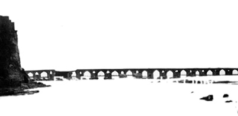

VI. KİTAP
TRABZON’DAN ÇIKTIM BAŞIM SELÂMET
Mart sonunda soğukça bir sabahtı. Sofadaki mangalın başında Hacıbey abdeste doğrulduğunda Büyükhanım buz gibi suyu ibrikten leğene ağır ağır dökmeye başladı. Soğuk su her bir uzvunu ürperttikçe Hacıbey’in içinden hangi yakarışların geçtiğini bilirdi, aynılarını içinden geçirmeye başladı:
“Allah’ım, şu ellerimin işlediği bütün günahları affet. Şu ağzımın söylediklerini, dilimin dönüp de kelimeye çevirdiklerini, aldığım bütün yasak ve yanlış kokuları, yüzümü çevirdiğim hatalı yönleri, şu kulaklarımın duyduğu duyulmaması gereken sözleri, benim yüzümden benim başıma gelenleri, kendi ellerimle kendi boynuma sardıklarımı ve şu ayaklarımın yürüdüklerini affet.”
Hacıbey, takma bacağının ucundaki ayağı da mesh ederken Büyükhanım işlemeli peşkiri uzattı. Bacağını katlamasına yardım ederek Hacıbey’i sedire oturttu, kendisi de yanına oturdu. Başını kaldırdı, kırk yıllık kocasının, gençliğinin tanığı olan ve gençliğine tanık olduğu adamın yüzüne baktı. Büyükhanım’ın gözlerinin altı da Hacıbey’inkiler gibi halkalanmıştı, yüzünde ölüm sarısı geziniyordu ve dudağı sağ taraftan uçuklamıştı.
Zayıf, ürpertili bir sesle, “Hacıbey” dedi. “Ne yapacağız?”
Dün gelmişti haber. Hacıbey günde beş nöbet bağıran tellâllardan duymuş, duymakla kalmamış valiliğin beyanatını da okumuştu. Gökler başının üzerinde dönerken midesine sancılar saplanmış, damarlarından kan çekilmişti. Bir yerlere tutunmak istemiş, cami avlusunda korkuluklara dayanmıştı. Tellâllar diyordu ki:
“Muhacirlik var, emir çıktı. Vali Cemal Azmi Bey şehir merkezini Ordu’ya taşıyor. Bu itibarla halkın şehri boşaltması, Giresun tarafına doğru acilen yola çıkması, ayağına bağ olacak eşyayı burada bırakması, ancak çok aciliyetli olanları yanına alması, hayatî ehemmiyette olanlardan başkasını yük etmemesi...”
Uzayıp gidiyordu bu duyuru ve tellâlın tokmağı her defasında sanki gergin deriye değil de Hacıbey’in kafasına iniyordu. Bitmiyordu ve hepsi de gelip aynı yere dayanıyordu: Rus ordusunun şehre girmesi an meselesiydi.
Eşya, evrak, bir şehrin halihazırı ve hafızası, ne kadarı taşınabilirse o kadarı kayıklara, arabalara doldurularak göçe başlamışken Büyükhanım’ın kafasının içinde her şey muazzam bir uğultuyla yerinden oynamıştı. Hani o, “Herkese olur da bana olmaz” zannı, abes duygusu. “Ama niye? Nasıl oldu?” O şaşkınlıkla dizini dövmekten başka yapacak bir şey bulamamıştı ilk anda Büyükhanım. Ama dövünme zamanı değildi, aklını başına tez topladı. Düşünmenin, akletmenin zamanıydı şimdi, hayatta kalmak için ne yapacağına ne edeceğine karar vermek zamanı. Lâkin bu kadarını düşünse bile uzun zamandır ne yaptığını bilmediği gibi şimdi de ne yapacağını bilmiyordu.
Düşmekten korkar gibi Hacıbey’in koluna tutundu. “Bir felâket bir başka felâketi kovar, korkma” diye teselli ederdi annesi başlarına bir musibet geldiğinde. Yanlış çıkmıştı. Felâket felâketi çağırıyordu işte. Takılmış bir nakarat gibi aynı cümleyi tekrarladı:
“Hacıbey, ne yapacağız?”
Hacıbey’inse, açmak istemediği halde hiç kapatamadığı defterler zihninin içinde burgulandı. O “Yeter!” derken kader “Daha yok mu?” demişti. Kapanmayacak bir yaraları zaten varken her gelen bir öncekinin üstüne tüy dikmişti. Hikmetinden sual olunmazdı elbet Yezdan’ın ama belâ bu. Tam bittiği yerden yenisinin başlaması belâlığın doğasındandı. Başlamasa, zaten belâlığı kalmazdı.
Dört yıldır kolu kanadı zaten kırıktı bu evin. İsmail’lerini alıp giden Gülcemal, emaneti geri getirmemiş, hıyanetlik etmişti. İsmail’den gelen son haber, üzerinde Hilâl-i Ahmer hemşiresinin resmi olan kartpostalın arkasında kalmış, bir daha da haber çıkmamıştı kendisinden. Balkan Harbi bittikten sonra 87. Alay gibi Gönüllü Taburu’ndan da bir iki kişi dönebilmişti ancak geriye. Celil Hikmet dâhil komutanından erine kadar geri dönmeyenlerin hepsinin ailesine şehitlik kâğıtları dağıtılmıştı, bir tek İsmail hariç. Hacıbey hükümet dairesine, askeriyeye gitmişti defalarca. Sorup soruşturmuştu. Yok işte! Herkesin şehitlik kaydı vardı da hiç kimsenin İsmail’den haberi yoktu. Usanmamıştı Hacıbey. İstanbul’a haftalar boyunca telgraflar çekilmiş, koca rütbeli subaylar Hacıbey’i “Bugün yarın” diye bekletmiş, ancak bir yıl üzerine Hacıbey’in eline İsmail’le alâkalı bir kâğıt vermişlerdi. Onda da şöyle yazıyordu:
“Hayatı da mematı da meçhuldür.”
Hacıbey sendelemişti askeriye dairesinin koridorlarında. Bir sandalyeye oturtmuşlardı onu. Elindeki askıyı sallayarak oradan geçen ve bu sahneyi kim bilir kaçıncı kez gördüğünü düşünen çaycı bir bardak su uzatmıştı.
Başını iki yana sallamıştı Hacıbey güç belâ bir yudum su içerken.
“Hayatı da mematı da meçhuldür! Öyle mi? Canını kendisi için veren tıfıl askerine devletin verebildiği belge, Meçhul Asker. He mi?”
Gerisini hatırlamıyordu bile. İsmail. Gitti de gelmeyiverdiydi.
O günden sonra bu evde artık hiçbir şey eskisi gibi olmamış, İsmail’in boynuna dayanan bir sükût bıçağının ucunda her yeni gün eskisine eklenmişti. Her sabah evin bütün halkı kalplerini sıvayan bir balçığın ağırlığında uyanmış, renkler sadece kurşunîye dönmüş, o gün bugün bütün hayatlar öylece sönük yaşanmıştı. Zehra ise büsbütün içine kapanmıştı. Alışması yoktu bunun ama zerre miskal bir ümit! Belki sağdır! Büyükhanım onun hayatının da mematının da meçhul kalmasına razı gelmiş, Hacıbey’e “Gitme” demişti. “Bir daha hükümete de askeriyeye de gitme. Böyle kalsın. Yeter ki ölümü kesin olmasın.”
Kolu kanadı kırık turnalar gibi bir evin içinde yaşayıp gideceklerdi belki. Ama aylar geçmiş, aylar yıllara evrilmiş, Balkan Harbi’nin sadece bir önsöz olmasından korkan Hacıbey korktuğuna uğramış, yetmiş iki milleti azgın kollarına alan Harb-i Umumî çıkmış, sonunda işte Ruslar gelip Trabzon’un kapılarına dayanmıştı.
İsmail gittikten sonra Büyükhanım her sabah namazdan sonra ve her gece uykuya dalmadan önce perdeyi aralayarak denize bakmayı âdet edinmiş, İsmail’in meçhul haberinden sonra bile bu âdeti kesmemişti; Gülcemal gemisi aldıklarını geri getirecekmiş gibi. Bu beklentiyle denizin üzerinde doğan ayları, asılı kalmış yıldızları, büyüyen, küçülen hilâlleri, onların devridaimlerini, gökyüzü gibi denizin de haritasını, yaklaşan fırtınaları, kesintisiz sıcakları, kesen soğukları, bitmeyen yağmurları izlemişti. Posta vapurlarını da yolcu gemilerini de bu denizin üzerinde ezber etmişti. Ne zaman gelirlerdi, kaç gün kalır ne zaman dönerlerdi, hepsini bir bir bellemişti. Fakat o sabah gördüğünü daha önce hiç görmemişti.
Önce mahalle camiinin minaresindeki kalabalığı fark etmişti. Hayret! Ezan okunmuştu çoktan, üstelik şerefedeki de sadece müezzin değildi. Denize bakmak Büyükhanım’a hiç o anki kadar korkunç gelmemişti ama bakmış ve göreceğini görmüştü. Rus armadasının önhaberi, kurşunî sabahın sisi ardında heyulâ gibi iki gemi. Açıkta, toplarını şehre çevirmiş, açılmış bir canavar ağzı gibi yemini yutmaya hazır, bekliyorlardı. Daha önce hiç tatmadığı bir dehşet bütün zerrelerini yakarken Büyükhanım’ın Hacıbey’i uyandırmasına, Zehra’nın, Anuş’un, Keyfiye’nin döşeğine koşmasına, Yıldırım’a seslenmesine fırsat kalmadan ilk gümbürtü işitilmişti. Zangır zangır titremişti kapılar, camlar, çerçeveler. Bir anda gökler kızıla kesmişti. Şafak vaktiydi gerçi ama bu, yangın rengiydi. Hacıbey’e “Efendi” diye haykırmıştı Büyükhanım, “Kalk! Geldiler sonunda.” Hacıbey hazırlanmış, Yıldırım’ı da yanına alarak dışarı çıkmıştı. Döndüğünde ağzını bıçaklar açmıyordu.
Büyükhanım, “Demek bunu da görecekmişiz” diye düşünmüştü ilk anda. Trabzon eskiydi, İstanbul kadar Roma kadar eski. Adı her dilde aynı tamlamayla yazılan, ismi ile müsemma Karadeniz, galiba bahtı da kara deniz, gelip de şehrini kıyısında kuranlara başlangıçtan bu yana az fırtına göstermemişti. Asırlar boyunca çeşitli kavimlerin sakinleri gibi Osmanlı ahalisi de onun cilvelerini, nazlarını, kaprislerini, öfkelerini, çığırından çıkıp gelmelerini, yatağından taşıp kudurmalarını tevekkülle sineye çekmiş, “Her haliyle güzel” deyip her haletine boyun eğmişti. Fırtınalarının sayısını, zamanını, adını, huyunu suyunu ezber etmişlerdi. Her birinin vakti zamanı vardı, göz göre göre gelirlerdi. Lâkin bu kez hepsinden beterdi. Denizden gelmişti başlarına ne geldiyse; fırtınaların en beteri.
Şu kör olası Büyük Harp’te Kafkas cephesi Trabzon’a kadar genişlemiş, Rus donanması Karadeniz kıyısında saldırmadık liman, bombalamadık iskele bırakmamıştı. Rize düşmüş, Of’un civanmerdanları yirmi bir gün canlarını dişlerine takıp bedenlerini Rus ordusunun önüne siper etseler de, Sürmene, Araklı, Arsin, Şana ne kadar dirense de azgın sel önüne geleni devirmişti. Böyle giderse şehre girmelerine şunun şurasında çok az zaman kalmıştı. Hani mazlumların feryadı yeri göğü oynatır, kâinatı yakardı?
Şimdi bütün şehir muhacirliğe çıkıyordu ve Büyükhanım “Hacıbey, ne yapacağız?” diye sorup duruyordu. Hacıbey’in, ne yapacağına dair bir kararı mı vardı ki, Büyükhanım’a akıl versindi.
O sırada kapı açıldı, Anuş içeri girdi. Elinde Zehra’nın diktiği bezbebek, “Büyükhanım, ne yapıyorsunuz burada siz?” diyordu.
Büyükhanım Anuş’u görünce artık kendisini daha fazla tutamadı, hıçkıra hıçkıra ağlamaya başladı. “Şu yavrucak” diye içini çekti ciğeri doğranırken. “Şuncacık bîçarenin kaderi yürümek mi? Onu, yürümesin diye annesinden alıp saklamadık mı? Ne kadersiz şeymiş.”
Anuş’u kucağına çekti, başını göğsüne bastırdı. O elim günü hatırladı. Dokuz ay evveldi, 1915 yılının Haziran’ı.
Haziran’ın son günleri olmasına rağmen sıcaklar henüz yakmaya başlamamış, bahçelerde güller kavrulmamış, meyveler dallarında kurumamıştı. Camiden dönen Hacıbey sağlam ayağındaki mestin üzerinden lâstiğini çıkarırken “Ha gaybana iş!” diye söylendi. Büyükhanım onun bu mahallî öfkeyi sık kullanmadığını bilirdi. Eğer bir iş “gaybana”ysa, o zaman Hacıbey yatağından taşmış, çığırından çıkmış demekti. Büyükhanım hasır alçak iskemleyi ona doğru sürdü, Keyfiye’ye seslendi.
“Koş kızım.” Hacıbey’in kahvesi, nargilesi, suyu neredeydi?
“Ha gaybana iş!” diye yineledi Hacıbey, “Köftehorlar!” diye ekledi. Bu en büyük küfürdü Hacıbey’in ağzında. Hafazanallahuteâlâ, neler olup bitmişti de Hacıbey bu hale gelmişti? Büyükhanım hasır iskemleyi tutarken Hacıbey otuz yedi yıldır artık kendi bacağı gibi taşıdığı ama bir türlü de alışamadığı takma bacağın mekanizmasını gıcırtıyla gevşetti, dizini kırdı. Sağ bacağını bir savaş hastanesinde bırakmış 93 Harbi gazisi nefes nefeseydi. Suyundan bir yudum içti, hamd etti. Büyükhanım’a baktı, öfkesini ortaya zahir etti.
“O Ermeni çetecileri” dedi, “Eşkıyalık yapıyorlarsa, bu garibanların günahı ne?”
Büyükhanım öbür sandalyeye yığıldı. Yoksa doğru muydu?
Doğruydu. Sevk ve İskân Kanunu gereğince Trabzon Ermenileri de öbür sabah yola çıkıyorlardı. Gümüşhane yoluyla Zor ve Musul’a gönderileceklerdi. “Sapla samanı ayırmak, ihanet ve isyan edenle masum kalanı, orduyu arkadan vuran zalimle mazlumu birbirine karıştırmamak güçlü devletin güçlü hükümetin işi” diye geçirdi içinden Hacıbey; yine hükümete, valiye, İttihat ve Terakki’nin temsilcisine yüklendi. İstanbul hükümeti Vilâyat-ı Sitte meselesinin çözümünü kestirmeden böyle kuruyor, temizliğini böyle yapıyordu. Sultan Reşad, bu pâk ahlâklı adam, Hırka-i Saadet dairesinde temiz seccadesine temiz gözyaşlarını akıtırken tarihinin en fecaatli döneminde saltanat ettiğinin farkında mıydı acaba? Temiz gözyaşları dökmek güçlü padişah olmak için yetmiyordu demek ki.
“Ya Siranuş, komşum?” diye korkuyla sordu Büyükhanım.
Başını salladı Hacıbey evet anlamında.
“İyi ama” dedi Büyükhanım Anuş’u hatırlayarak, ”Bu bir damla çocuk, onca yola nasıl dayanır?”
“Bir damla çocuğu var mı Büyükhanım?” dedi Hacıbey. “Ben yürümenin ne olduğunu unutmadım. Koca dağ gibi delikanlıların bile canı dayanmaz böyle yollara.”
Öfkeyle söylenmeye devam etti. “Van’da” dedi. “Bu isyanları çıkaranları, bu haltları karıştıranları, savaşan orduyu arkadan avlayanları, aha şurada Değirmendere’de yangın çıkarıp başkaldıranları bana versinler. Ben de Fizan’a sürerim. Agop’u ben yargılayayım ama bu masumcukların günahı ne?”
Agop! İpi Siranuş Hanım’ın ayağına dolanan fitne yumağı.
Ertesi sabah kapının çıngırağı çekildi. Siranuş, bir eliyle Anuş’un elinden tutmuş, diğer elinde bir bohçayla sürünürcesine girdi içeri. Fazla söz etmedi ama ölüm sarısı sinmiş yüzünün renginden neler olup bittiği belliydi. Anuş’u çekeleyerek Büyükhanım’a yaklaştı. Onun bir şey demesine kalmadan, önce Büyükhanım’ın ayaklarına kapandı sonra olduğu yere yığıldı. Hacıbey yerinden doğrulamadan Zehra ve Keyfiye gürültüye koştular. Limon kolonyası koklattılar, paçavra yakıp dumanını burnuna tuttular. Bir iki yudum suyu kenetlenmiş çenelerinin arasından akıtabildiklerinde kadıncağız kendine gelebildi, bir gecede yirmi yaş birden yaşlanmış, o şen şakrak Siranuş gitmiş yerine canlı bir cenaze, bir heyulâ gelmişti. Sedire kaldırmak istediler, razı gelmedi. Birer kütüğe dönmüş bacaklarını kuru tahtanın üzerinde uzattı, sırtını duvara verdi. Ayakları çıplak, açılmış saçları dağınıktı. Hırkasının yeniyle burnunu sildi. Kaderine razı, boynunu satırın önünde eğdi.
“Büyükhanım” dedi, “Yaşın benden çok büyük, bilirim. Saygıda kusur etmedim ama seni arkadaşım gibi de sevdim, akranım gibi yakınlık gösterdim.”
Büyükhanım kadının başını omuzuna, göğsüne, neresi varsa orasına yaslamış, ellerini avuçlarının arasına almıştı. Siranuş’un nabzı durmuştu sanki, Büyükhanım bileklerini ovmayı bıraksa sanki oracıkta ölüverecekti. Büyükhanım bu sakinliğe aldanmamak gerektiğini, bahtsız komşucuğu Siran’ının her an bir yanardağ ağzı gibi yeniden infilâk edebileceğini bu bumbuz ellerin katılığından anladı. Siranuş ise hıçkırıkları arasında nefes alarak bir şeyler anlatmaya çalışıyordu. Belli ki kaderine razıydı ama bir isteği vardı. Büyükhanım teselliyi kesti, bilek ovmayı da bıraktı, dinledi.
Siranuş cümlelerini kesik kesik sıraladı ama aralarına tümüyle de zaman sokmadı. Yoksa sözü söze eklemeyi başarıp, aklına gelen şeyi hiç söylemeyebilirdi.
“Büyükhanım” dedi, “Biliyorsun bizi yarın götürecekler. Çıkan kanundan haberin var. Bu yollarda neler olduğunu duyuyoruz az çok. Duymasak bile tahmin etmek zor değildir. Hiçbir şey olmasa bile yol bu, yürümek bile yarı ölüm demektir.” Sustu. Yutkundu. Sonra devam etti. “Musul neresidir, Zor neresidir bilmem. Adını bile işitmediğim çöllere gidecekmişiz.”
Büyükhanım başı omuzlarının arasına iyice gömülmüş, yüzünde bunun böyle olacağını bilen ama yine de yalanlamak ihtiyacını duyan zoraki bir şaşkınlıkla, “Yürüyecek misiniz?” dedi.
“Hem nereye gidecekmişsiniz?”
Siranuş onun sorusuna cevap vermedi, kendi bildiğini söylemeye devam etti.
“Kimler isyan etmişse onları yakalasınlar, kimler cinayet işlemişse onları assınlar Şark Meydanı’nda. Agop’a ben mi söyledim çetelere katılmasını? Büyükhanım söyle, Allah’a reva mı? Aramyüs’le ilgili bir dedikoducuk olsun duydunuz mu siz? Senin de benim de Allah’ım olan Allah bunu sormaz mı?”
Hacıbey başını yerden kaldırmadan dinliyordu. Söyleyecek bir sözü yoktu ki söylesin. “Ya Rabbim” diye geçirdi içinden. Bu koca devletin ordusu da Sivas’tan sonra trenden inmiş, oradan Kafkas cephesine adım-adım-adım yürümüştü. Ordusunu yürüten devlet Ermenileri mi yürütmeyecekti? Kendi evlâtlarına sahip çıkamayan bu hükümet Ermenilere mi sahip çıkacaktı? Hem bunlar? Neden çöle sürülüyordu? Başka bir yer yok muydu?
Siranuş Hanım duyduklarını tahminlerine, bilmediklerini bildiklerine, korkularını hepsine kattı. Jandarma yarın sabah için hazır olmalarını ikaz etmişti. Herhalde saltanat arabalarıyla iki köy öteye gidecek değillerdi. Çok zorlu bir yol bekliyordu onları. Yükü ne kadar az olursa o kadar şansı olacaktı.
Yerinden yarı doğruldu, “Büyükhanım” dedi iki eliyle Büyükhanım’ın omuzlarına asılarak, “Seni tanırım. İyisin. Böyle iyilik görmedim ben. Allah bilir ölürken bile etrafındakiler korkmasın, üzülmesin diye, onları teselli etmeye çalışarak öleceksin. İyiliğini Allah rızası için benden de esirgeme.”
Büyükhanım’ı bıraktı, kendi yakasını bağrını çekiştirdi, devam etti: “Dünyanın bütün suçlarını üzerine almaya alışkın yanınla düşünürsün sen; ‘Onun hakkını yemişsem diyetini buna ödesem’ dersin daima. Beni yanlış anlama ama.” Yutkundu. Yanlış anlaşılacak nesi vardı? “Büyükhanım anlamıyor musun? Anuş çok küçük. O bu yola dayanamaz. Ölür. Yanımda götürmezsem yetimhaneye götüreceklermiş, jandarma efendi öyle dedi. Yetimhanede de ölür benim yavrum. Oralarda olamaz.”
Başını kaldırıp Büyükhanım’ın yüzüne öyle bir baktı ki, Büyükhanım daha evvel anlamadığından utandı. Birer kuru oduna dönmüş o ellere sarıldı, “Siran” dedi. “Kızım, merak etme. Anuş bundan böyle benim de kızım. Bana emanettir. Merak etme.”
Keyfiye’nin beti benzi solmuş, Zehra bir köşede ağlıyordu. Buna dağlar olsa dayanamazdı Siranuş mu dayanacaktı?
Ayaklandı neden sonra Siranuş, sendeleyerek kapıya doğruldu.
“Anuş” dedi, “Bu gece sizde kalsın.”
Bu geceyi Anuş’a sarılarak geçirirse, yarınki gibi bir cehennem sabahına uyanamazdı, uyansa bile dayanamazdı. Sarılmadı Anuş’una, sarılırsa bir daha ayrılamazdı. Bakmadı da yüzüne, bakarsa kör olacaktı. Dört ucundan düğümlenmiş el kadar bohçayı gösterdi.
“Anuş’un bohçası.”
“Bir de” diye seslendi, “Sıcak ekmek içini çok sever. Unutmayın. Bir de ağlar da susmazsa şekerli su yapın. Bir de ateşi yükselirse... Bir de hıçkırığı tutarsa…”
“Bir de…”lerin sonu yoktu anne yüreğinde. Büyükhanım güçlü görünmesi gerektiğini hissetti.
“Aman Siranuş Hanım” dedi. “Bırak bir de’leri. Gören de hiç çocuk büyütmedim zannedecek. Bana güvenmiyor musun? Kaç çocuk geçti benim elimden.” O anda Siranuş Hanım’ı en çok rahatlatacak olan şeyi söyledi. “Hiç merak etme. Aklın geride kalmasın.”
“Haydi” dedi, “Hazırlığını yap sen, git şimdi.”
Siran, neredeyse telef olup gidecekti. Onu bir an evvel buradan göndermek gerekti.
Hacıbey başını yerden kaldırdı o esnada. “Merak etme kızım” dedi, “Kızın bize emanet.”
Sonra hiç kimseye bakmadan ortaya söylendi:
“Vallahi de bize emanet, billahi de bize emanet, ölürüm de bize emanet.”
Hacıbey büyük yemin etmişti. Komşusunun gidişini engelleyemezdi ama şu masum bîçare; onu kurtarabileceğini kestirdi.
O gece hiç uyumamıştı Büyükhanım. Uyusaydı bile kapının korkunç darbelerle vurulması üzerine tan vakti uyanacaktı. Hacıbey, takma bacağı döşeğin kenarındaki duvara dikilmiş, kalkmaya yeltenince “Sen dur” dedi Büyükhanım. Müştemilâttan Yıldırım ve Keyfiye’nin uyandığı işitildi. Yıldırım kapıya doğru koşarken, Büyükhanım atkısını başına çekti, arkalarından seğirtti. Gelen, refakat neferlerinin komutanı olduğu anlaşılan jandarma subayıydı. Kalın bıyıklı, kalın simsiyah kaşlı, tıknazca, orta boylu bu adam alışılmadık derecede esmer yüzüne bakılırsa buralı değildi ve yüzündeki bezgin ifadeden anlaşılan o ki benzerlerinin birçoğu gibi o da yıllardır evinden ocağından uzaktı. Hangi ananın evlâdıydı? Hangi rüzgâr onu buralara atmıştı?
Jandarma subayı, evin sahibini tahmin etmekte gecikmedi. Emektarı, Keyfiye’yi geçti, Büyükhanım’ın önünde dikildi.
“Bir ihbar var” dedi, “Ermeni bir çocuk saklıyormuşsunuz. Yaşı küçükse yetimhaneye gitmesi gerek. Büyükse kafileye katılması lâzım. Emir böyle. Evi arayacağız.”
Büyükhanım’ın rengi atarken jandarma subayı, arkasında duran iki ere bahçeyi göstererek “Arayın” anlamında bir işaret yaptı. Onlar da subaylarıyla aynı renkten aynı kaderdendi.
Büyükhanım iki neferin peşine düştü. Önce bodrumdan başladılar; çamaşırhaneye, mutfağa, müştemilâta, eğilip kuyuya, Masal’ın havlamalarına, hırlamalarına aldırmadan arka bahçeye baktılar.
“Kimse yok komutanım” diye haber getirdi erlerden biri selâm durarak.
Komutan “Evin içine bakın” dedi bu kez, kendisi de neferlerle birlikte eve girdi. Sofaya, iki odaya, Hacıbey’in odasındaki yüklüğün içine, dürülmüş döşeklerin yorganların arasına, aynalı dolaba, hepsine bir bir bakıldı. Bir şey yoktu. Kumandan en son, üst kata çıkan merdivene doğruldu, Zehra’nın Anuş’la koyun koyuna yattığı çıkmanın olduğu sofaya. O zaman Büyükhanım ilk basamakla subayın arasına girdi. Ne olacaksa olacak, nereden inceyse oradan kopacaktı. Yapacak tek şey kalmıştı.
“Kumandan Efendi” dedi, “Orada dur bakalım. Orası torunumun yattığı yer, gencecik kız. Sabahın köründe geldiniz. Namahrem mahalline nasıl sokarım sizi? İslâm değil misin sen?”
Subay durdu, Büyükhanım’ın yüzüne baktı. Bir şeyler olduğunu anlamış mıydı? Bilinmez, ama üstüne varmadı. Merhametli bir adamdı. Emir kuluydu neticede ama kulluğunu yerine getirmiş, emre riayet etmişti işte. Dışarıda, sabah ayazında bekleşen kafile ha bir eksik ha bir fazla olsa ne fark ederdi? Geri döndü. Eratını topladı. Masal’ın havlamaları arasında kapıdan çıktı. Küçük kafilesinin başına geçti, Gâvur Meydanı’nda toplanan ana kafileye katılmak üzere yola dizildi.
Büyükhanım merdivenin başına, ilk basamağa çöktü. Kendini bıraksa bir daha kalkamayacaktı. Ama en umulmadık zamanlarda içinde hazır bulduğu kuvvet yine imdadına yetişti. Mutfağa yollandı. “Ekmek pişirmek zamanı. Sıcak ekmek içi…” diye söylendi.
“Hacıbey ne yapacağız?” diye sordu Büyükhanım bir kez daha.
“Ben” dedi Hacıbey, “O kadar yolu yürüyemem.” “O kadar” derken başlangıcı belli yolun sonunu bilemediği belliydi ama arabayla çıkılsa da; motorla, kayıkla başlansa da bu tür yolların sonunun daima yürümeye dayandığını bilirdi. Aynı cümleyi ısrarla yineledi:
“Yürümek nedir bilirim ben Büyükhanım. Yürüyemem.”
“İyi ama” dedi sıkıntıyla Büyükhanım “Urus gâvuru geliyor. Rum ve Ermeni çeteleri iyice azıttı, baksana evler şimdiden bayraklandı. Bu şehirde durulmaz artık. Hem herkes gidiyor. Biz onlardan daha mı cesuruz, daha mı fazla bilgimiz var ki gitmeyelim? Hacıbey görmüyor musun, her şey olabilir.”
Güngörmüş kadın bu “her şey” ihtimalinde Allah biliyor, Hacıbey’le kendisini hesaba katmamıştı. Onlar yaşadıkları kadar yaşamışlardı. Mal canın yongası ama varsın olmayıversindi. Cana gelince, Allah’a bir can borçları vardı nihayetinde. Gelecek günün ne getireceği de belli olmazdı. Ama Zehra, o bu kadar genç bu kadar güzelken. Zihninden geçenleri kovdu. Hem Anuş emanetti. Yani gitsen olmuyor kalsan hiç olmuyor. Bu hesapta aklı hiçbirini kesmedi. Hacı’sını böyle bir yürümeye zorlamak? Hayır, bu da mümkün değildi. Ama Zehra ve Anuş. Onların başına gelebilecekleri tahmin etmek, anlatılanlardan birini bile hesaba katmak? Yo, böyle bir ihtimal binde bir olsa bile hesaba katılamazdı. İhtimaller arasında böylesine yer verilerek hesap yapılamazdı. Seçmek? Şart mıydı? Şarttı.
Ama yine de “Ben de gitmem” diye bir giriş yapmak istedi Büyükhanım. Dil de gönül gibi baskındı.
Aslında söylediğine kendisi bile inanmamıştı ama “Gönderme bizi Hacıbey” diye yalvardı bir kez daha. Bu kaçıncı yalvarıştı?
“Biz de kalalım. Sana ne olursa bize de aynı olsun. Ne olacaksa birlikte olsun. Öleceksek de birlikte ölelim. Ölürüm de gitmem.”
Hacıbey, “Ölmeye razıyım ben Sabire” dedi.
Yılların müderrisi ancak çok öfkelendiğinde, çok heyecanlandığında kırk yıllık karısına adıyla seslenirdi. Şimdi de Büyükhanım’a adıyla, demek ki bütün muhabbeti ve öfkesiyle sesleniyordu. Neden anlamıyordu? Ölmeye Hacıbey de razıydı ama Sabire bilmiyor muydu ki bu dünyada ölmekten daha katlanılmaz şeyler vardı. Gözünün önünde Zehra’ya bir şey olsa. Ölmekten daha zor olan bir şey. Ölmeye dayanırdı da buna dayanamazdı.
“Ben size gidin demiyorum ki” dedi, “Kaçın diyorum, kaçın.” Bir an durdu. O sırada Yıldırım sofaya girmişti. Hacıbey akşamdan beri kurduğu şeyi söyledi: “Yıldırım sizinle gelsin.”
“Heee” diye atıldı Yıldırım. “Ben giderim onlarla.” Sol gözü, sağ gözünün bütün ferini toplamış gibi iri iri açılmıştı.
Hacıbey “Hey Allah’ım” diye geçirdi içinden, başını kaldırdı. Yıldırım’ın yüzüne baktı. Kendi söylediğine kendisi de inanamadı. Bunca zorlu yol Yıldırım’ın kıt aklıyla mı gözetilecekti? Bunca kadının, çocuğun başına kala kala Yıldırım mı erkek olarak kalmıştı?
O gece odalarından gelen sesleri sabaha kadar kesilmedi. Hacıbey son sözü söylediğini her zannettiğinde kırk yıllık karısı konuyu yeniden açtı. Kolay olmadı ama sabah uykusuzluktan ve ağlamaktan kuytuya kaçmış gözlerle sofaya indiğinde Büyükhanım ister istemez razı olmuştu, Hacıbey kalacak, onlar gidecekti. İki masumun başına gelebileceklere tanık tutulmaya razı olsa, o zaman ilâhî gazap başlarına çökerdi. Hacıbey’in yalnız kalması ve onların gitmesi tevekkeltü tealallah, ehvendi. Hem “Zaman sana hiç ummadığını ve biriktirmediğini getirir” buyurmamış mıydı Hazret-i Ömer Efendimiz? Belki gün doğmadan neler doğardı. Belki, belki! Belki’si yoktu. İşte denizden top sesleriyle karadan ordularıyla azgın dalgalar gibi geliyorlardı.
Onlar geliyorlardı ama Hacıbey yürüyemezdi. Çünkü Hacıbey bütün ömrüne yetecek kadar çok yürümüştü. Yürümek kaderi olmuş, yürümekle sınanmış, yürümeye zorlanmış, yürümekle cezalandırılmıştı. Bu yüzden yürümeyi sevmezdi. Hicaz’a gittiğinde bile Kâbe-i Muazzama’nın etrafını tahtırevanlar üzerinde ancak tavaf edebilmiş, Safa ile Merve arasını yedi kez aynı tahtırevanlar üzerinde gidip gelmişti. Sağ bacağını bir savaş hastanesinde, yarı baygın yarı ölü, ta kasığından kesmeselerdi bile evinden dışarı camiye gitmek haricinde adım atmak istemezdi.
93 Harbi’nde Doğu cephesindeydi Hacıbey. Kars’tan Erzurum’a doğru çekiliyorlardı. Adına “sevk” diyordu komutanlar ama düpedüz yürüyorlardı işte. Bu devlet şimdi olduğu gibi o zaman da askerini sevk edememiş, yürütmüştü sadece. Karda, yağmurda, çamurda, buzda, dağda, vadide, ırmak yatağında gece gündüz demeden günlerce yürümüşler, ovaları dik kayalıklar izlemiş, bir dağın tepesine tırmandıklarında onu da başka bir dağ başka bir tepe takip etmiş, silsileler silsilelere eklenmişti. Bitmeyen, bitti zannedilen yerde daha yeni başlayan, azaplı, bıktırıcı, insanın takatini tüketen, tükenmiş takatini sömüren, emen bir yürüyüştü bu. Hacıbey ayaklarının şiştiğini, zonkladığını, postallarının ayaklarını bir değil her yerden vurmaya başladığını, vuran bir kundurayla tek bir adım atmak bile yeteri kadar eziyetken günlerce aynı acıyla adım attığını hiç unutmamıştı. Bir süre sonra yaralar eti geçip kemiğe dayanmış, deri soyulup et çekilmiş, postalın sırt meşini dağılmış ete yapışmış, Hacıbey kemik üzerine postal giymiş gibi yürümeye başlamıştı. Bu soğukta ayakları diri diri yanarken an gelip acıyı artık duymaz olmuş, bu raddeye dayanınca asıl acının yürürken değil durunca başladığını öğrenmişti. Ama zaten onlara da durmaksızın yürümeleri emredilmişti.
Kars’tan çıkalı kaç gün geçmişti, bunu kimse bilmiyordu. Kop Dağı’nın eteklerine vardıklarında mevsim sonbahar olmasına rağmen erken bastıran bir kışın tam ortasında bulmuşlardı kendilerini. Yağmur başlamış az sonra kara dönüşmüş ve Kop Dağı’nı tırmandıkları sırada kemik yığınına dönüşmüş askerlerin birer birer düşerek oldukları yere yığılıp kaldıklarını görmüştü Hacıbey dehşetle. Kendisi de sık sık dizleri titreyerek oturup kalmış, kollarını dizlerinin üzerinde kavuşturarak başını bırakmış fakat kolları az sonra kendiliğinden çözülmüştü. Bir anlık uykudan kendini atmıştı sık sık. Uyuyup kalırsa bir daha kalkamayacağını bilecek kadar bilinci yerindeydi başlangıçta. Her defasında aynı işkenceyi yeniden çekmek için dirilmiş, sol ayağının derisi yeniden yanmak için yenilenmiş; emireri Yıldırım onu bazen arkasından itelemiş bazen önden çekelemişti. Dağın başına vardıktan sonra uçurum kıyılarında açılmış patikalardan inerken, dumanların, sisin, pusun içinde iki adımda bir kaymış, bazen düpedüz yuvarlanmış, yeniden ayağa kalkarak, buz kesmiş çamur içinde donup kalmış askerlerin yanından, onların izleri üzerinden ilerleye ilerleye, düşe kalka sürüklenirken sonunda atacak adımı kalmadığında Hacıbey boylu boyunca karın üzerine uzanmıştı. Ellerinin şiştiğini, morardığını, karardığını kendisi bile hayal meyal görebilmiş, nabzının ağırlaştığını hissetmişti. Artık yürümek istemediğini, gözlerinin kapandığını, tatlı bir sıcaklığın, derin bir uykunun bütün vücuduna yayıldığını, canının ayaklarından itibaren çekilir gibi olduğunu, sol ayağının acısı olduğu gibi dururken sağ ayağında bu acının hafiflediğini hele de sağ bacağında bütün o acıların dindiğini, hissizliğin çok güzel olduğunu Yıldırım’a mırıldanmıştı. Hepi topu, hayatta kalmak için harcanacak emekle ölüm arasında bir seçim; artık yaşamak istemeyi bile istememişti. Yıldırım’ın dürtmesiyle bir an için gözünü açabilmiş, “Bırakın beni, siz devam edin. Ben arkanızdan gelirim” demişti. Bütün sesler uzaklaşırken bir tek Yıldırım’ın sesi kalmıştı geriye: “Uyan komutanım, Erzurum göründü.”
Yolun geri kalanını önce Yıldırım’ın omuzunda sürüklenerek, sonra bir sal üzerinde çekilerek gitmişti. Ama görünen şehre varmak için bile bir üç gün daha gitmeleri gerekmişti. Onlar yaklaştıkça şehir sanki uzaklaşmış, sal üzerinde yarı baygın, canı boğazında Hacıbey, Yıldırım’ın adımlarını saymıştı. Yıldırım kimi tek nefeste bir adım atmıştı kimi on nefes alması gerekmişti adım atmak için. Kimi çakılıp kalmış o da adım atamamıştı. Buzlanmış çamur üzerinde milyonlarca adım. Her defasında bin’i bulunca yeniden bir’den başlamış, yürümekten o zaman nefret etmişti.
Neden sonra Erzurum’a varabilmiş fakat bu kez de aç sefil, günlerce Hacıbey’i kabul edecek bir hastane aramışlardı. Hastaneler tümüyle doluydu ve her kapı yüzlerine kapanıyordu. Her yanda Hacıbey gibi yüzlercesi vardı çünkü. Nihayet yeni açılmış bir hastane onları kabul etmişti ama iş işten çoktan geçmiş, Hacıbey kendine geldiğinde sağ bacağının kasıktan kesildiğini öğrenmişti. “Kangren” demişti doktor. Oysa günlerce Hacıbey’e öyle gelmişti ki sağ bacağı yerli yerindeydi.
Hacıbey aynı yolu tekrar yürümüş de geri dönmüş gibi bir yorgunluk hissetti. Mümkün değil, bir daha yürümeyi göze alamazdı ve onun için her yol aynı yol demekti.
Büyükhanım, Zehra ve Anuş Yıldırım’la birlikte yarınki muhacir kafilesine katılacak; Keyfiye ve Seher ise öbür sabah köydeki kafileyle çıkacaklardı yola. Şimdi Hacıbey, kendi ailesi karadan mı denizden mi gitsin, bunu düşünüyordu. Yıldırım’la evden çıktı, etrafı gözledi, havayı kokladı. Halil Safa ile buluşuldu, konuşuldu, tartışıldı. Halide yine hamile olduğu için Halil Safa, İttihat ve Terakki temsilcisinin bulduğu bir kayıkla ayrılacaktı şehirden fakat halası için bir kayık tedarik edememişti! Şöyleydi, böyleydi… Hacıbey eve döndüğünde kararını vermişti.
“Büyükhanım” dedi, “Denizden gitmek zor olacak, izdiham var, hem Rus gemileri muhacir kayıklarını bombardıman ediyor. Bir araba ile gidebildiğiniz yere kadar gidersiniz. Ondan sonra nerede uygun bir fırsat çıkarsa kayığa, takaya, motora, gemiye, ne bulursanız ona geçersiniz. İstanbul’a Erenköyü’ndeki yeğeninin, Saffet’in yanına gidersiniz. Ortalık ne zaman durulursa o zaman da geri dönersiniz biiznillah. Bu şehir hep Rusların elinde kalacak değil ya!”
Hacıbey Yıldırım’ı çağırdı.
“Bir araba bul” dedi, “Bir de at. Tek at al. Sık sık mola vereceksiniz. Hayvan dinlenir, beslenir. İki at olursa beslemekte güçlük çekersiniz.”
“Beyim” dedi Yıldırım, “Atlar ateş pahası.”
“Ne kadarsa” dedi Hacıbey. Üzerinde Sultan Reşad’ın tuğrası parlayan altın lirayı Yıldırım’ın eline tutuşturdu.
“Ata dikkat et. Hastalıklı ve yaşlı olmasın.”
Yıldırım “Olur” anlamında başını salladı, bir altına herhalde istediği atı istediği arabayı alabilirdi.
Öğleye doğru atla araba geldi. Bir sultanî altına mal olan araba kırık döküktü, atsa zayıf, cılız bir şeydi. Daha iyisini bir padişah altını bile alamamıştı. Büyükhanım ata ve arabaya baktığı zaman ilk kez bu işin gerçek olduğunu anladı. Şimdiye değin hep bir yerden döner zannettiği hayal şey işte, gelip kapıya dayanmıştı.
Eli ayağına dolandı. Zaman çok azdı, büyük kafile sabah ezanı okunmadan çıkacaktı yola, ona yetişmeleri lâzımdı. Bunca dar zamanda hangi heybeyi hangi dengi hangi azığı hazırlayabilirdi Büyükhanım? Salıydı günlerden ama o gün akşama kadar hayatında hiç yapmadığı kadar çok iş yaptı. Kurmadı bu kez, kaldırdı. Elleriyle ördüğü perdelerin arasından süzülen Mart güneşi bakır mangalı, çini sobayı, ortadaki halıyı, idare lâmbasını yıkarken, pencere önündeki sardunyaların gölgesi iyice ağartılmış tahta döşemeye düşerken, üstelik bahar “Geliyorum” derken bunların hepsini geride bırakacağını düşündü. Beti benzi sararmış, sürekli ağlayan Keyfiye’ye, Seher’e, Zehra’ya; yola iki gün sonra çıkacak olan Halide’ye, Halil Safa’ya seslendi: “Şunu şunu denk yapın.” Ayırdığı eşyaları işaret etti, “Arabaya yükleyin.” Yorgan, döşek, tencere, gaz ocağı, gazyağı, gaz lâmbası. Ya Rabbi, böyle giderse bütün evi arabaya yüklemesi gerekecekti. “Tamam” dedi, “Bu kadar yeter.”
Bu kez kilerin kapısını açtı. Kesif bir karanfil kokusu doldu genzine. Acıyla iç geçirdi; bu haftanın cumasına aşure kaynatacaktı güya. Ah ki ahtı. O sırada Hacıbey geldi yanına.
“Ufak tefekle oyalanma Büyükhanım” dedi. “Patates al alabildiğin kadar. Un al. Bunlar dayanıklıdır. Sebzeyi, meyveyi yük etme. Bir de mavi demliği, şu kalan çayı al. Yolda şifa olur. Her an demleme, sadece gerektiğinde. Bir de kinin, ispirto, karbonat, sirke almayı ihmal etme.”
Mağazalar, depolar mallarla, evler eşyalarla, tarlalar ürünle dolu olsa da taşınabilecek en uygun şey paraydı. Büyükhanım Yıldırım’a yepyeni dikiş makinesi ile büyük bakır tencerelerinden beşini verdi.
“Git, bunları sipahi pazarında sat bakalım.”
“Hanımım, ne kadar isteyeyim?”
Büyükhanım acıyla gülümsedi. Bu şartlarda hiçbir malın kendi değerinde gitmediğini biliyordu, “Ne verirlerse.” Ama emektar, yüküyle birlikte geri dönüp de makineyi yirmi kuruşa, tencereleri de üçer kuruşa kadar düşürdüğü halde kimsenin alıcı olmadığını söylediğinde, bu kadarını o bile tahmin etmemişti.
Vakit yatsıyı bulduğunda hazırlık hemen hemen tamamlanmış, arabanın kasası iyice dolmuş, tentesi çekilmişti üzerine. Büyükhanım odasına girdi. Başı oymalı gül ağacından karyolasına, dolabın aynalı kapısına, diğer kapının üzerindeki gül damarına, yerdeki halının rengine baktı. Bu eve gelin gelmişti. Şu odada, şu yatağın üzerinde yüz örtüsünü açarak zümrüt küpelerini takmakta zorlanan heybetli güzelliği sevmiş, kaderine onu yazan Yaratan’a şükretmişti. Gözlerini sildi, konsolun çekmecesinden elmas yüzüğünü, inci gerdanlığını çıkardı, hepsini bir keseye koydu, beline bağladı. O sırada odaya giren Hacıbey döşeğin kenarına ilişti.
“Sabire” dedi, “Bunu da al, lâzım olur.”
Viyana’dan takma bacağıyla birlikte ısmarladığı köstekli saatini Büyükhanım’a uzatıyordu.
O gece Halide, Zehra ve Anuş çıkmanın içindeki döşekte kıvrıldılar. Keyfiye ve Seher müştemilâta çekildi. Halil Safa, Büyükhanım ve Hacıbey ise hiç uyumadılar; Yıldırım minderin üzerinde sızmıştı. İmsak vakti girince sabah namazına duran Büyükhanım dört kez secdeye vardı, dördünden de kalkamayacağını sandı. Ezan okunmadan bütün ev uyanmıştı. Kadınlar çarşaflandı. En son Anuş’u uyandırdılar. Uykulu çocuğu sıkı sıkı giydirip başını Büyükhanım’ın yün eşarbıyla sardılar. Hepsi taşlıkta toplanmıştı şimdi. Kapının dışından muhacirliğe çıkacak komşuların sesi geliyordu. Büyükhanım giderayak gövdesini okşadığı ağaçtan üç beş limon kopardı, bir tutam nane topladı, yüküne kattı. “Yol hali, belki midesi bulanan, safrası kabaran olur” diyordu. Ah Büyükhanım! Kan giren rüyanın bozulacağından haberdar, kendilerini ne hastalıkların beklediğini biliyor da yakınlık getirmiyordu.
Hacıbey seslendi, “Haydi, gecikmeyin.”
Büyükhanım kapıdan çıkarken döndü, evine baktı. İki gece evvel gördüğü rüyayı hatırladı. Hatırlamasaydı keşke. Bahçesindeki nar ağacının yandığını görmüştü, alev alev. Böyle bir yolculuğun arefesinde başka bir rüya da herhalde görülemezdi. Oysa Mart’ın tam ortası; kapı yanındaki nar ağacı, damarlarına su yürümüş, ilk fırsatta tomurcuklanmaya hazırlanmıştı.
Son kez evine, bahçesine, od’una ocağına baktı Büyükhanım. Bari böyle güzel olmasaydı, hatırında böyle güzel kalmasaydı. Katlanmak daha kolay olurdu belki. Oysa evi gibi dağın da en güzel haline rastladı. Deniz bile, üzerinden geçen rüzgârla tüllenirken ona her zamankinden daha güzel geldi. Öyle bir günde gidiyorlardı ki gitmemek için en uygun olanı.
Yakıcı bir hasret hissetti kalbinin üzerinde. Dönmek? Mümkün müydü? Bilemedi ki.
“Allah’ım” dedi, “Bu ev, bu dağ, bu deniz burada böyle dururken biz gideceğiz he mi? Hacıbey’i bırakıp gideceğiz, öyle mi? Allah’ım, reva mıydı böylesi?”
Kendini tutmasa göklere kırılacaktı. Kırılmadı.
“Hiç olmazsa güzel bir havada çıkıyoruz yola” diye düşünmek istedi, “Yolculuk rahat geçer.”
Bir yol hediyesi gibi kendilerine armağan edilen bu tatlı havanın uzun sürmeyeceğini biliyordu oysa. Bu limonata rüzgâr gelip geçiciydi. Mart başı. Ya Rabbi, kışın her an dön geri edebileceği böyle bir mevsimin uzayıp giden yollarından nasıl sağ çıkacak, nasıl dayanacaklardı? Dayanırsa dayanırdı insan. Dayanamazsa yıkılır giderdi.
Hacıbey bir kez daha “Haydi Büyükhanım” dedi, “Gecikmeyin.”
Büyükhanım kapının dışına çıktı, adımları geri geri gidiyordu.
Zehra, omuzları bir araya toplanmış, bir elinde Anuş, diğer elinde bir bohça, arabanın önünde bekliyordu ve mavi beyaz kareli çarşafının içinde, o da Anuş kadar çocuk görünüyordu. Büyükhanım arabaya binmeden, bir şey hatırlamış gibi arka bahçeye geçti koşarak. Masal’ı bağından çözdü. Hacıbey’e yük olmasın, alıp başını gitsin, o da kendi kaderini kendisi çizsindi. Tekrar arabanın yanına koştu, “Haydi” dedi Yıldırım’a, “Gidelim.” Yıldırım dizginleri eline aldı. Halide, Halil Safa, Keyfiye, Seher ve Hacıbey arkada kaldı.
Araba, denklerin üzerinde oturmuş Büyükhanım, Anuş ve Zehra’yla bozuk taşların üzerinde tıngır mıngır ilerlemeye başladı. Neden sonra sokağın köşesini döndü, görünmez oldu. Fakat o sırada bir şey daha oldu. Mahalleden henüz çıkmışlardı ki arkalarından kesik bir havlama duyuldu. Masal. Koşa koşa artları sıra geliyordu. Büyükhanım kovaladı, bağırdı, çağırdı, uzaklaştırmaya çalıştı; ama hayır, Masal’ın geri dönmeye hiç niyeti yoktu. Belli ki bir yola koyma değildi bu koşu, bir refakat niyetiydi, aşikâr. Zehra, “Nine” dedi, “Dünyalar yıkılsa artık Masal’ı bırakmam. O da bizimle gelsin.”
Büyükhanım’ın Masal’a kanı hâlâ ısınmamıştı ama Zehra’yı üzmeye de gönlü razı olmadı. İçini çekti. Sırtında taşıyacak değildi ya, gelebildiği yere kadar gelsindi; büyük ihtimalle yollarda telef olup giderdi.
Araba, Zehra’nın yanı başında oturmuş, kulakları rüzgârda geriye doğru uçan Masal’la, tekerlekleri şimdiden inleyerek bir köşeyi daha dönüp kalabalığa karıştığı sırada sabah ezanı okunmaya başladı. Bütün sokak, bütün mahalle, bütün Trabzon aynı yolculuğun sabahında aynı yöne akıyordu şimdi; batıya. Daha şimdiden çocukların ağlaması ihtiyarların hıçkırığına, hastaların inlemesi tekerleklerin gıcırtısına karışmaya başlamıştı. Bu göç kafilesinin tamamına yakını, varlığın en zayıf yanı olan kadınlar ve çocuklardan ibaretti; bir de ihtiyar, hasta ve sakat erkeklerden. Trabzon’un bütün delikanlıları ise iki yıldan bu yana cephelere dağılmıştı.
Bir süre hiç kimse konuşmadı. Başını Zehra’nın koluna dayamış olan Anuş bile ağzını açmadı. Büyükhanım sağ taraflarında uzanan bir gümüş tabak kadar parlak denizin yüzünde yunus sürülerini fark etti bir ara. Onların gittiği yönün tam tersi istikamette, Karadeniz üzerinden Batum’a doğru göç ediyorlardı. Yılın bu aylarında yunus sürülerini görmeye alışkındı Büyükhanım. Onlar durgun suyun üzerinde bata çıka, bir görünüp bir kaybolarak giderken başka zaman olsa pencerenin önünden ayrılmayacağı, evin bütün halkını uykudan kaldıracağı bu geçişe şöyle bir baktı sadece. Yangın gelince sıradan ayrıntılar anlamını yitirdiği gibi harikulâde de sıradanlaşıyordu zahir. Yine de Anuş’a göstermek istedi. Eğildi. Anuş uykuya dalmıştı. Uyandırmaya kıyamadı. Masal onun yanına kıvrılmış, başını ön ayaklarının üzerine bırakmış, gözlerini devirerek Büyükhanım’a bakıyordu.
Bir muhacir kafilesi günde ne kadar yol alabilir ki? O gece Pulathane’de konakladılar; herkes gibi kumsalda, göklerin ve yıldızların altında su ısıtıp tencere kaynattılar, döşek yaydılar. Herkesin iştahı açılmıştı yol yorgunluğundan. Allah şahit, Büyükhanım bir lokma yiyenin ağzına bir lokma da kendi koyardı sair zamanda ama bu kez azıklarından eksilen her lokmada aklı kaldı.
Ertesi sabah Pulathane’den sonra araba yolu bozuldu, zorlu şoseler, uçurumlu patikalar başladı. Diğer arabaları takip ederek kıyıdan değil içeriden gitmeye gayret ediyordu Yıldırım. Çünkü Rus gemilerinin ne zaman bir hayalet gibi denizde belireceği, kıyıya çevrilmiş toplarının ne zaman patlayacağı belli olmuyordu. Kayıklara rüzgâr gücü, kol kuvveti; karadan gidenlere taban kuvveti; hepsine de Allah’ın inayeti lâzımdı şimdi. Büyükhanım Trabzon’u görebileceği son yer olan Yoroz’u devirmeden önce dönüp geriye baktı. Ona öyle geldi ki şehrin üzerini kırmızı bir duman kaplamış, Trabzon yanıyordu. Taş olsaydı keşke. Nice yangına külhan olmuş Trabzon, şehzadeler kenti, Gülbahar Sultan’ın şehri bu defa başka yanıyordu.
Yoroz’u aşınca Büyükhanım’ın yüzü değişti. Önlerinde aniden yükselen gri bulutları, kıyıda huzursuzca kanat çırpan martıları, çok yükseklerde dönüp duran başka türlü kuşları görünce içi bulandı. Fırtınalar hep İstanbul tarafından eserdi, Gülcemal’i sarsan fırtına da aynı taraftan, Yoroz’dan kopagelmemiş miydi? Ya Rabbi! İşte şimdi de deniz Rize’ye doğru hızla akmaya başlamıştı. Yüzüne endişeyle bakan Zehra’ya, “Açıklara baksana” diye ufku işaret etti.
Henüz dal kıpırdamamıştı karada ama beş dakika geçti geçmedi ki ilk rüzgâr patladı. Karadeniz, derinlerde öfkeli bir ağız açılmış gibi anbean kaynamaya başladı; silkindi, kabardı, burgaçlandı, çalkalandı. Dalgalar yürüyen dağlar gibi ardı ardına gelmeye, kıyıyı dövmeye; ezelî öfkesini, acısını kumsaldan, kumdan, çakıldan çıkarırken önüne geleni savurmaya başladı. Kıyamet kopuyordu sanki, suyun öfkesi hiçbir şeye benzemiyordu. Ürperdi Büyükhanım. Fırtınanın yıllardır çetelesini tutmuş, dalganın sesini, fırtınanın dilini çözmeye alışmıştı. Meşhur takviminde “Büyük Fırtına” diye yazmıştı iri harflerle Mart ayının karşısına. Yanına “Görülmemiş soğuk” diye eklemişti. Bugün gibi hatırında, o gün ne yaksalar ısınamamış, ne giyseler olmamıştı. Dahası tam da iki fırtına arasındaydılar. Üstelik biri erken gelmiş diğeri geç kalmıştı ve Karadeniz üzerinde karşılaşmış, birbirine karışmışlardı.
Hem bu daha başlangıçtı. Kıyıyı avucunun, gökleri kalbinin içi gibi bilen Büyükhanım göklere de denize de defalarca baktı. Havayı kokladı, engini gözledi. Denizin renginden, kokusundan, sesinden, buğusundan; kendi genzinin yanması, burnunun sızlaması, gözünün yaşarmasından Mart karının ayazını tanıdı. Bu, muhacirlik vakti büyük kazaydı.
Fırtınanın, yağmurun, karın ortasında, kimi arabayla kimi ağaç dalından âsâlara dayana dayana, düşe kalka, bata çıka, ölümüne kalımına, canı dişinde, can pazarında; bir tepenin ardında kaybolup başka bir tepenin eteğinde görüne görüne günlerce yol aldılar. Gece gündüz aç açık, çoğu yerde arabadan inerek, gariban atı arkasından iteleyerek, sersefil perperişan, yolculuklarının kim bilir kaçıncı gününde Büyükhanım dâhil oldukları muhacir kafilesine şöyle bir baktı. Cadı masallarının ürkütücü sahnelerinde görünen çaresiz elem katarlarına benziyordu bunlar. Sel dalgaları gibi ağır ağır ilerleyen bu insanların bir kısmının ayağında keten bezi ve ipten yapılmış “seferberlik pabucu” ya da çarık vardı, birçoğu yalınayaktı.
Bu hicranlı kafilenin en çok da köprüsüz dereler kesiyordu önünü. Mart ayazında yarı bellerine kadar buz kesmiş sulara girseler de karşı kıyıya kimi geçebiliyor kimi geçemiyordu. Ama onlar sürekli yürümek zorundaydılar, kendi yakıtını kendinden harcayarak tükenmek. Çünkü arkalarından Rus ordusu geliyordu. Üstelik varabildikleri her kasabada Muhacirin Komisyonu’nun göstereceği bir yer, başlarını sokacak bir cami avlusu, boş bir ev, bir dam altı bulabilmek için arkalarındaki kafilelere yakalanmamaları, önlerindeki kafilelerle yarışmaları, onları geçmeleri de gerekiyordu. Geçemiyorlardı çoğu kez ve geceyi açıkta geçirmek için binlerce kişi bir arada yığıldıkları, yayıldıkları yerden ertesi sabah yeniden yürümek için doğrulduklarında eksilmiş oluyorlardı.
Bir tarafta deniz, bir tarafta uçurum; Rus gemilerinden kaça kaça, Rum, Ermeni, Türk eşkıyasından korka korka, fırtınayla boğuşa boğuşa; her aşılamayan derede, her ölmekte, her cinnette bir ses daha genişleyerek; bugün muhacirlere acıyan kasabalılar yarın onlara katılarak, her gün bir yanından eksilerek ama öbür yanından artarak bu dev acı kitlesi sonunda Görele’ye ulaştı. Trabzon’dan çıkalı on beş gün olmuştu.
Görele’ye girdikleri anda Büyükhanım arabadakilere baktı.
Ya Rabbi! Bunları nasıl koruyup kollayacak, menzil-i maksuda ulaştıracaktı?
Görele’de Muhacirin Komisyonu tarafından boş bir Ermeni evine yerleştirildiklerinde gecenin sabaha yakın yarısıydı. Hiçbirisinde yorgunluktan kafalarını kaldırıp da etrafa bakacak, kaderin bu cilvesindeki hikmeti tefekkür edecek hal yoktu. Büyükhanım bile hayatında ilk kez çarşafların beyazlığını, kokusunu gözden geçirmeden tokmağını çevirdiği ilk odadaki yatağın üzerine yığıldı. Zehra’yı da Anuş’u da kollarının arasına almış, göğsüne, bağrına sığdırmış, omuzlarına sarmıştı. Gözleri kapanırken “Neydim, ne oldum?” diye düşünemeyecek kadar yorgundu ama “Ne olacağım?” kısmı var ya bu hesabın, işte o zaman kanı bir kezzap katışığıyla bütün hücrelerini yakarak akmaya başladı. Kendilerini İstanbul’a bir atsalar, Erenköyü’nde sanki her şey daha kolay olacaktı ama bu hayal ne kadar uzaktı ve önlerinde ne kadar çok dağ ne kadar çok ırmak vardı. Çözüldü kolları, çok geçmeden uykuya daldı.
Uyandığında gün henüz açmamıştı. Karanlığın içinde önce nerede olduğunu anlamaya çalıştı; anladığında ise “Böyle bir sabaha keşke hiç uyanmasaydım” diye geçirdi içinden. Lâkin yanında derin bir uykunun koynundaki Zehra’nın ve Anuş’un soluklarını bir süre dinleyince söylediğinden utandı. Tövbe istiğfar ederek yatağın içinde doğruldu. İnsanın kendi soluğundan bile yüzü üşüyordu. Birazdan müezzinlerin sesi duyuldu. Bahçeye çıktı. Tulumba, işte şuradaydı.
Namaza durdu sabah ayazında, ayazın vurduğu yerden doğdu. Ama sabah namazının hepi topu iki rekât olan farzında bile defalarca şaşırdı, defalarca tahiyyatı tekrarladı. Sureleri birbirine karıştırdı, sehiv secdesinde bile yanıldı. Bu namazı tamlayamayacağını anlayınca başını bıraktığı secdede dakikalarca kaldı. İçeriden Zehra seslenmese, “Nine!” demese bir daha kalkamayacaktı secdeden. “Büyükhanım” değil “Nine.” Demek ki korkuyordu. “Geliyorum” dedi, doğrulurken. Böyle bir zamanda eğer ölünmezse ağlamaya hak olmadığını anladı. Lâkin ölmek de ağlamak da “Geliyorum” demiyor, sormuyordu ki.
Çift kişilik bir yataktı gece içinde uyudukları. Duvardaki oymalı ceviz aynayı, karşı duvarda iki kapılı ceviz dolabı, üç çekmeceli yüksek konsolu, üzerindeki karpuzlu çift lâmbayı, yerdeki taban halısını inceledi Büyükhanım kapının pervazına dayanırken. Zengin bir Ermeni ailesinin evine düşmüşlerdi belli ki. Yün yorganı Zehra’nın da Anuş’un da omuzlarına kadar çekti. Dolabın kapağını açarken menteşeler gıcırdadı, Anuş hafifçe döndü. Büyükhanım katlanmış giysilerle, yorganlarla, kumaşlarla, alt tarafta kunduralarla karşılaştı. Demek giderken onlar da ellerine hafif geleni almış, diğerlerini yük etmemişlerdi, tıpkı kendileri gibi.
Bir hırka buldu, sırtına geçirdi, konsolun üzerindeki puslu aynaya bakarak başındaki örtüyü düzeltti. Mutfağa geçti. Ortadaki sofrada küflenmiş ekmeğe, bulaşık tabaklara, dizi olmuş uzayan böceklere, karıncalara, konup kalkan sineklere baktı. Taş teknenin altındaki büzgülü basma perdeyi çekince de bir Karun hazinesiyle karşılaştı. Kocaman bir küp dolusu kavurma, bir çuval patates, bir teneke zeytinyağı. “Ya Rabbi, kurtar bu kıyametten yarattığın kullarını, Sen ki Müşfik’sin” derken gözleri doldu. Bir tencere, bir kazan ya da benzer bir şey lâzımdı şimdi. Ama nerede? Mutfağın dili her yerde aynı, bir kadının başka bir kadının mutfağında aradığı kabı kacağı bulabilmesi için gerekli olan izanı kurdu: “Ben olsam nereye koyardım?” Tamam, işte oradaydı. Ateş yaktı. Bundan kaç zaman evvel şimdi kendisinin durduğu yerde yemek pişiren bir kadının varlığını, onun nasıl biri olduğunu kestirmeye çalışırken un kavurdu, çorba yaptı. Patates haşladı. Ocak boşalınca kavurma ısıttı. Maya yoktu ama su ve undan hamur yoğurdu. Hepsini sofranın üzerine yerleştirdi. Bu kıyamette daha iyisi olamazdı.
İkinci gününün tek öğününde çorbaya henüz kaşık salmışlardı ki kapının vurulmasıyla, tellâlın gümbürtülü sesi aynı anda duyuldu. Rus ordusu yaklaşıyordu, Görele boşaltılacaktı. Lokmalar boğazlarına dizilirken bu evi, kendilerinden önce onu terk edenlerin acelesine katılmış bir aceleyle terk ettiler. Kurulmuş da kaldırılmamış bir sofra da onlardan geriye kaldı.
Yıldırım’ın öğrendiğine göre Görele’den sonra araba yolu yoktu, denizden gitmek gerekecekti. “Öyle yapalım” dedi Büyükhanım. Hükümet güya bir Sevkiyat Merkezi kurmuştu ama insan selinin aktığı yöne kapılarak iskeleye indiklerinde bir ana baba günüyle karşılaştılar. Can korkusu sırayı, saygıyı, edebi çoktan unutturmuş; kalabalık yekvücut, dağlanan bir cinnet bedenine dönüşmüştü. İltimas, tarafgirlik ve acımasızlıkla birleşmiş; savaş zenginlerinin yolu açılmıştı çoktan. Gemi hak getire! Kayıklar ise önce Göreleli memur aileleriyle doluyordu; gelen emir böyleydi! Şu kayıklar güya muhacir kafilelerine tahsis edilmişti ama Büyükhanım onlara da memur tabakasının ve çiçek saksılarının doldurulduğunu gördü öfkeyle. Birkaç görevliye lâf anlatmak, hesap sormak istedi fakat mümkünü yoktu. Böyle olmayacaktı, onlar bu yolda telef olurken gemisini yürüten kaptanlar yolun yarısını almışlardı bile. Enine boyuna düşünecek, doluya boşa koyup kaldıracak vakit kalmamıştı.
“Yıldırım” dedi Büyükhanım, ”Biz kendi paramızla bir kayık tutalım.”
“Hee hanımım” dedi Yıldırım, “Atla arabayı da bırakır fiyattan düşeriz.”
Büyükhanım, Yıldırım’ın yanında kayıkçılardan birine yanaştığında insan denen varlığın en arsız, en hayâsız, en kutsalsız yanıyla karşılaştı. Adamın istediği fiyat dudak uçuklatacak cinstendi çünkü ve akbabalar beyin kırıntılarını daha kurban ölmeden didiklemeye başlamışlardı. Kayıkçı “Hanım nine, ne yapalım savaş bu, biniyorsan bin yoksa sırada bekleyen çok müşteri var” derken Büyükhanım’ın içinden şu yerdeki taşı onun kafasına indirmek geçtiyse de şeytana uymadı.
Üç beş kuruş nakit parasını yanında tutmak isteyen Büyükhanım, ödemeyi mücevher vererek yapacağını, atı ve arabayı da hesaptan düşmesini söyleyince adam razı oldu ama önce zümrüt küpeyi görmek istedi. “Al aşağı vur yukarı” sonunda anlaştılar. Ne zaman ve nerede biteceği belli olmayan bir yolculukta ayağı karadan kesmenin karşılığı buydu demek ki. İstanbul’a kadar birinci mevki vapurla yüz kez gidip yüz kez dönmeye yetebilecek bir bedel ödemişlerdi.
Arabanın kasasındaki yorgan, döşek, kap kacak, patates vesaireyi yüklemeye kalkıştıklarında kayıkçı, “O kadarı fazla hanım nine!” dedi sigarasını tüttürürken, “Deniz dalgalı. Devrilir gideriz hafazanallah.”
Üç beş parça eşya alabildiler yanlarına. Bundan sonra bu kahır çıkmazında bir kuru canları, herkes ne kadarsa onlar da o kadarlardı.
Ve önlerinde şöhreti şimdiden tekinsizliğe bulaşmış Harşit çayı vardı.
Harşit ağzındaki girdaplardan korkan kayıkçı onları karşı yakaya bırakmayı reddetmişti. Çaresiz, dalgalarla boğuşa boğuşa bu yakada indiler kayıktan ve bütün muhacirler gibi Harşit kıyısına gelip dayandılar. Kıyamet işte o zaman koptu. Kendi bölgesindeki ırmakların bu en azgını; cılız hacmine, küçük cüssesine rağmen kendinden beklenmeyecek bir öfkenin, umulmayacak bir taşkının sahibi olanı önlerine dikilmişti ve aşılması, karşı kıyısına geçilmesi gerekti. Bu, Osmanlı coğrafyasındaki en uzun, en geniş, en derin ırmak değilse de en hızlı, en haşin, en kuvvetli, en deli akan, en yol vermez olanlardan biriydi. Irmak bile değildi, adı çaydı bu yüzden ama büyük ve azgın ırmakların bütün tehlikelerine sahipti. Şöhreti kendisini yakından tanıyan, yolu kıyısına düşenlerce malûmdu ancak. Büyükhanım çarşafının eteklerini sıkarken Harşit’e baktı. Normal zamanlarda bile onca cana kıyan çay Nisan’la coşmuş, kabarmış; kış başında uysalca akan suyu şimdi yüz kat fazlasına ulaşmıştı. Dere iken ırmak olmuş, kabadayılığa kalkışmıştı. Harşit, öfkesi ağzında, yakacak can arıyordu. Böyle bir öfke, nasıl aşılacaktı?
Onu geçebilenler şanslı sayılabilirdi, çünkü Rus ordusunun burada çakılıp kalacağına dair söylentiler vardı. Fakat öyle bir dikilmişti ki karşılarına Harşit, hiç kimsesini ona kaptırmadan karşıya geçmeyi başarabilenlerin bile akıllarının bir kısmı o azgın suda kalıyor, muhacirlerin beli en fazla da bu ırmağın iki yakası arasında bükülüyordu.
Yüzlerce kişilik muhacir kafileleri şimdi birbirine eklenmiş, kıyıya birikmiş, ırmak boyunca yayılmış, ipliğe dizilmiş inciler ya da bağı kopmuş tespihler gibiydi. İnsan, yaratıldığı günden beri önüne dikilen suya her defasında nasıl baktıysa öyle cinnetle bakıyorlardı suya. Herkes arkadan gelen Rus ordusunun ayak seslerine kulak kabartmış, bir an önce karşıya geçmenin, canını kurtarmanın derdine düşmüştü. Ama nasıl? İşte bunun cevabı yoktu. Kimi cesur olanlar bu suda yüzmeyi göze alıyor, bunların bir kısmı karşıya varabiliyordu; bir kısmı ise kıyıda bekleşenlerin gözleri önünde akıntıya kapılıp gidiyordu. Geride kalanlar biraz evvel ölümü gören gözleriyle, çaresiz, aynı suya dalıyordu. Çünkü Harşit’in üzerinde o vakitler bir köprü yoktu, halk, “kelek” adı verilen bir tür kayıkla tutardı karşı kıyıyı. Lâkin üç beş kelek bu dalga dalga gelen muhacir kafilesinin hangi birine yetecekti? Yetse bile yüksek dağlardan döküle döküle, köpüre köpüre, çığırından çıkmış gelen, bir an evvel denize kavuşmak için gözü dönen bu uğultulu ilkbahar suyu içine aldığını savurup püskürtmeyecek, anaforlar kurup döne döne uçurumlarına çekmeyecek miydi?
Büyükhanım bir “Lâhavle” çekti. Beklemek şimdilik en iyisi gibi görünüyordu. Rus ordusunun ne zaman geleceği belli değildi ve bu kalabalıkta karşıya geçmeleri için bir mucize gerekti. Bir kayanın sırtını mekân tuttu kendilerine. Küçük kafilesini etrafına topladı.
“Oturun” dedi. “Biraz dinlenelim. Bakalım diğer insanlar ne yapıyor, biz de onu yaparız.”
Yıldırım, “Ben etrafı kolaçan edeyim” dedi. “Bakayım, ırmağın sığ bir yanı vardır belki.”
Kayanın önüne adeta yığıldılar. Keleklerin başındaki izdiham anlatılır gibi değildi. Her kafadan bir ses çıkıyordu, insaniyetin de nezaketin de esamisi kalmamıştı burada. Herkes kendi canından yanıyor kendi ölümünden kaçıyordu. Üstelik savaş Görele’deki o en rezil, en hayâsız yanını buraya göndermekte de gecikmemişti.
Keleklerin başını tutan üç beş çapulcu kişi başı için fiyat açıkladı, bu da neredeyse İstanbul-Trabzon vapurunun birinci mevki ücretinin on katı kadardı. Sırasız, nizamsız, mahşerî bir hücuma mukabil ahlâksız ve kabadayı bir pazarlık başladı. Parasını verenler keleklere doldukça kayıkçı elindeki uzun sopayla kıyıyı itiyor, biraz açılıyordu. Fakat kıyıdan üç beş kişi daha kendisini keleğe atınca azgın su haddinden fazla dolmuş bu ölüm salını daha kıyıda ters çeviriyor, içindekileri döküyor, kusuyordu. Sırılsıklam erkekler, sair zamanda saçının ucunu göstermeyen ama şimdi etekleri tersine dönmüş, göğüs bağır açılmış bîçare kadınlar, avaz avaz çocuklar gayya kuyusundaymışçasına kaynaşıyorlardı. Sonra? O girdaptan kurtulup da kıyıya çıkabilenler sıraları da paraları da yanmış, öylece kalakalıyorlardı. Yeni bir sefer başlıyordu. Bu kez ırmağın tam ortasında alabora oluyordu kelek ve içindekiler, kıyıda devrilenler kadar şanslı olmuyordu. Çoğu kez hiç kimse kurtulamıyor, azgın su Karadeniz’in en mahir yüzücüleri olan Trabzonlu erkekleri bile alıp götürüyordu. Kelek, üzerinde paraları cebe indirmiş sahibiyle kıyıya dönüyordu. Sanki biraz evvel ırmağın ortasında içindekileri azgın suya veren bu değilmiş gibi, sanki bir cennet yolculuğunu müjdelermiş gibi aynı keleğin kanlı sırtına binmek için canhıraş bir yarış daha başlıyordu. Ve bu böyle sürüp gidiyordu.
Sırtını yasladığı yerden Büyükhanım’ın gözleri bütün bu olup bitenleri, bu yüzme bilmeyip de azgın suya koşanları, keleğe binip de akıntılı suda bir başına kalanları, yavrusu kollarının arasından kayıp suya karışanları, suda bir batıp bir çıkıp sonra tümüyle yok olanları, bir zaman sonra şişmiş, morarmış bir ceset olarak yüze çıkanları, ya da bambaşka bir yerden kıyıya vuranları, ya da hiç bulunamayanları, bu çığlıkları, bu uğultuları bir bir gördü. Ananın evlâdını unuttuğu mahşer herhalde böyle bir yerdi.
Birazdan Yıldırım geldi. “Hanımım” dedi, “Az aşağıda sığca bir yer var. Sular biraz durulsa geçilir gibi. Ama biraz beklemek lâzım. ”
“Oraya gidelim” dedi Büyükhanım. “Orada bekleyelim.”
Sular durulmadı. Geceyi o mahşer uğultusunda buz gibi havada geçireceklerdi. Büyük bir ateşin başında uykuya dalmaya çalışırlarken kalın, yanık bir erkek sesi duyuldu.
Ey gidi Sultan Reşad
Kararıni bulmadın
Çektin askeri geri
Milletini sormadın
Urus’un kumandani
Yortu tutayi yortu
Ey gidi Sultan Reşad
Hani üçüncü ordi
Okuması yazması olmayan, mektep medrese yüzü görmemiş bu adam benzeri olmayan bir sezgiyle güvendiği dağlara yağan kara sitem ediyordu. Büyükhanım başını salladı yemenisinin ucuyla gözlerini silerken. Bütün sıkıntı zamanlarında daima tutunduğu müjde yine dilinin ucuna geldi:
“Ey sıkıntı şiddetlen, nasılsa geçeceksin.”
Bir sıkıntının geçeceğine duyulan güven, ona dayanmanın tek çaresiydi. Şüphe geçmezdi içinden Büyükhanım’ın, hâşâ!
Ama? Geçecek miydi?
Ve.
Ya geçmezseydi.
Sevkiyat sabaha kadar aralıksız sürdü. Güneş epeyce yükselmişti ki Büyükhanım Görele’de pişirdiği hamurdan geri kalanı heybesinden çıkardığı sırada önlerinden, bir ineği çeken zayıf bir kadın ile parmak kadar oğlunun geçtiğini gördü. Remziye değil miydi bu? Hani Görele’den önceki konak yerinde yakın düşmüş, iki lâf etmiş, dertleşmişlerdi.
Kocası Trablus’tan dönmeyen dul bir kadındı Remziye, oğlu Hasan’dan başka kimi kimsesi yoktu. Masal’ın başını okşamıştı şefkatle, “Bu sizin mi?” diye sorarken. Sonra “Tek varlığımız bu” demişti ineğini göstererek. “O da olmazsa sağ çıkamayız bu muhacirlikten herhalde.”
“Adı ne bunun?” diye sormuştu Zehra.
“Yaşmaklı” demişti dul kadın.
Büyükhanım, kemikleri sayılan zavallı ineğe bakmıştı. Boynunda kim bilir hangi yayla günlerinden kalma bir dizi mavi boncuk, boynuzları arasında püsküller; Yaşmaklı bu yangın yerine bir şenlikten arda kalanlarla düşüvermişti. Remziye uzun uzun ineğini anlatmış, daha bu yaz Yaşmaklı’yı deniz kıyısına indirdiği Aladurbiye gününü hasretle anmıştı. Aladurbiye’de yüksek köylerden ineğini, öküzünü alıp deniz kenarına inen köylü kadınlarla, genç kızlarla dolu bir bayram yerine dönerdi kumsallar. Boyunları dizi dizi boncuklarla, komar ve zifin çiçeklerinden kolyelerle, hele de kocaman nazarlıklarla süslenmiş olan hayvanların kulaklarının arası, güzel ve geniş alınları da aynalarla, ziller ve çıngıraklarla donanmış, kuyruklarına bile püsküller, fiyonklar asılmış olurdu. Bu kadar süsten ağırlaşmış mutlu hayvancıkların her birini bir kadın ya da genç kız şefkatli ve tatlı sözlerle boynundan, gözkapaklarından, alnından, sırtından, sağrısından okşayarak denize doğru sürer; o boğucu, yapış yapış Temmuz sıcağında hayvancık da gönüllü olarak bu sevk edilişe itaat ederdi. Önce ayakları bilekleri ıslanır, su dizlerine kadar çıkar, sonra karnı, sırtı suya gömülür, sonunda sadece başı dışarıda kalır, kulaklarını ve burnunu havaya dikerek öylece serinlerdi. Yıl boyunca artık ineğinin hastalanmayacağına, sütünün bol olacağına inanan kadınsa onu okşamaya devam ederken gözlerini sıvazlar, bir yandan da türküler söyleyerek yakındaki arkadaşlarına mani atardı. Bunları anlatmıştı Remziye uzun uzun ve hasretle.
Selâm veren Büyükhanım, “Nasılsın?” diye soracakken vazgeçti. Bu kaderdaşlıkta kimsenin hali diğerinden farklı olamazdı. Yine de “Gel eğlen biraz” diye seslenmeden edemedi. Suya doğru yürüyen Remziye ise ırmağın geçit verir gibi görünen yanını gözüne kestirmişti, buradan geçilebilirdi. Hiçbir şeyi beklemeye tahammülü yoktu sabırsız kadının. O tezcanlılıkla, “Oğlancığım seninle dursun” dedi Büyükhanım’a, “Ben Yaşmaklı’yı geçirir gelip onu alırım. Siz de benimle birlikte geçersiniz. Geçeriz.”
Hasan’a döndü, “Bekle annem” dedi. “Sakın ha, bir yere kıpırdama. Bunların yanından ayrılma.”
Remziye suda ilerlerken Büyükhanım’ın yüreği yerinden oynayacaktı. Hele şükür ki bu hazin ikilinin kimi taştan taşa atlaya atlaya, kimi boğazlarına kadar suya bata çıka, güç belâ karşı kıyıya varabildiğini gördüler. Rahat bir nefes alacaktı Büyükhanım ama alamadı. Çünkü Remziye geri dönerken karşı kıyıda üç beş kişinin; sivri bir kayaya bağlanmış, dilsiz ağızsız Yaşmaklı’yı çözüp çekeleyerek uzaklaştıklarını görmüştü. Onlar da muhacirlerdi. Bu can pazarında herkes kendi canının derdinde, bencilleşmiş, arsızlaşmıştı. Büyükhanım yerinden kalkacak, bağırıp çağıracak, elini kolunu sallayacaktı, lâkin en babayiğit tellâl gelse suyun uğultusundan sesini işittiremezdi. Ama beterin de beteri var, bunu da gördü Büyükhanım’ın gözleri. Irmağın suyu, hangi gazaplı kapının ağzı uğuldayarak açılmıştı ki köpüklenerek aniden dalgalanıp, dağlar kadar yükseldiğinde Remziye suya kapıldı. Sürüklenen zayıf beden önce birkaç kez batıp çıktı, görünüp kayboldu, sonra tamamen yok oldu.
Gözlerinden yaşlar akarken, dizlerini döverek haykırırken bile Büyükhanım, oğlancığın başını kirli çarşafının üzerine bastırmayı akıl edebildi. Ne Remziye’nin ne başkalarının suların burgacında yitip gitmesi kimsenin dikkatini çekmişti. Ölmek bile Trabzon’dan çıkalı sıradanlaşmıştı. Büyükhanım gidenden çok kalana bakmanın gerekli olduğunu çok geçmeden hissetti, dizlerini dövmeyi bıraktı, haykırmayı kesti. Oğlancığı tuttu elinden, biraz su içirdi. Bir şey söylemiş olmak, konuşturmak için, bildiği halde sordu:
“Ah oğul, adın ne senin? Başka kimsen yok mu?”
Sefaletin sarı yüzünden hiçbir cevap gelmedi. İlk zamanlar bunu, geçici bir dil tutulması zannettiler fakat ne kadar yokladılarsa da Hasan’da hep aynı sükût. Zamanla açılırdı nasılsa. Ama ne o saat ne de daha sonra Hasan’ın ağzından tek kelime çıktı. Büyükhanım o anda bu oğlancığın da kafilesine katıldığını anladı. Ya Rabbi! Bunca can kendisine bakıyordu.
Yerinden kalktı, ırmağın kıyısına yaklaştı. En zor, en acılı, en dehşetli zamanlarda, en dar vakitlerde bile namazını terk etmemişti Büyükhanım. Trabzon’dan çıktıklarından bu yana dağ, tepe, çamur, kar, yağmur demeden sırtı rükûya, başı secdeye varmıştı. Dizlerindeki nasır izlerini hatırladı, kendisinden bunu hiç ummazdı ama Rabbine o nasır izlerini hatırlattı. İçinde büyük, derin bir acılıkla, karanlık suya baktı.
“Rabbim” dedi. “Ben Musa değilim ama şu peşimize düşenler var ya, onlar firavun. Şu Harşit’i Kızıldeniz edip önümüzde ikiye ayırsana.”
Irmak eskisinden de azgın, kudurup duruyordu.
Büyükhanım artık göze alamazdı, bu yolsuz yordamsız ırmağın sığ bir yerine güvenmek mümkün değildi. Ha şimdi ne olacaktı? Zehra. Anuş. Yıldırım. Bir de Hasancık. Bir de Masal. Geri çevirdi kavmini Büyükhanım. Keleklerin yanına geldi. Ölenler ölmüş, geçenler karşıya geçmiş, düne göre biraz daha tenhalaşmıştı kıyı. Ne olacaksa şimdi olmalıydı.
Yıldırım’ı bile beklemeden, “Kaç kişi alır bu kelek?” dedi adama. “Yani normal zamanlarda olduğu gibi, emniyetli olarak karşıya geçmek için? Başka kimseyi almadan, sadece bizi geçirmek için ne kadar istersin?”
Suratından meymenet okunmayan adam, çarşafından, halinden tavrından şehirli olduğunu anladığı Büyükhanım’ın varlıklı biri olduğunu tahmin ederek fiyatı hayli yüksek tuttu. Canlar satılırken pazarlığın hükmü kalmadığını artık öğrenmiş olan Büyükhanım yüzgörümlüğü zümrüt küpesinin diğer tekini onun eline tutuştururken adam, “Hanım!” diye itiraz edecek oldu.
“Bunu kime satayım ben? Nakit paran yok mu?”
Büyükhanım “Al” dedi. “Uzun etme. Bu günler geçer elbet. Bu, senin söylediğinden çok daha fazlası eder. Oyalanma. Haydi.”
Karşıya geçerlerken arkada kalan kıyıya uzun uzun baktı Büyükhanım. Bakışlarını suya çevirdi. Nehrin bir kabahati olduğuna inansa, “Yansın Harşit, yansın Harşit, yansın Harşit!” diye üç kez haykıracaktı. Ama Harşit ne yapsındı?
Harşit’i geçebilenleri zorlu bir yürüyüş bekliyordu yine. Olan para tükenmiş, yükler, azıklar erimişti çoktan. Derken bütün muhacirleri kırıp geçirmeye tifüs ve sıtma da yetişti. Kimi iki üç yorgan altında bile titrerken kimi kan ter içinde kaldı, biri kalkabildiyse onun yerine üçü beşi birden toprağa serildi. Rus ordusu yoktu artık arkalarında ama onun yerini eşkıya takımı almıştı. Gidecek bir yeri olanlar oraya varmak için gayret ediyor, olmayanlar ise ne yapacağını bilmiyordu. Kimsenin aklı başında değildi ve şimdi yaşamak, sadece ölmemeye çalışmaktan ibaret bir şeydi. Oysa yaşamaya çalışmak en büyük yorgunluktu. Ölümü beklemek bile yorgunluktu.
Ordu’yu geçmiş, ağır ağır yürüyorlardı ki Yıldırım’ın yanlarında olmadığını fark ettiler, arkada kalıyordu nicedir. Büyükhanım önce söylendi sonra durdu, beklemeye başladı. Neden sonra göründü Yıldırım ama her an düşecek gibi, sendeleyerek yürüyordu. Büyükhanım’ın durmuş kendisini beklediğini görünce adımlarını sıklaştırmaya çalıştı, birkaç adım attı. Dahası? Kalmamıştı. Olduğu yere yığıldı.
“Biraz daha Yıldırım. Ne olursun iki gözüm, Allah aşkına. Burada yığılıp kalma.”
Yıldırım duymuyordu. O zaman Büyükhanım düşünmedi bile. Arkasındaki dengi devirdi, “Sırtlan kızım” dedi Zehra’ya, Hasan’ı da öbür eline verdi. Yere diz çöktü. Ateşler içinde yanan, sıtma nöbetleriyle sarsılan Yıldırım’ın kolunu kendi omuzundan aşırdı, “Hadi” dedi “Kalk.” Yıldırım’ı yarı yüklendi, doğruldu; bir iki sendelediyse de bu yüke de alıştı. Zavallı adam zaten ufak tefekti, şimdiyse bir çocuk kadar kalmıştı.
Yıldırım sayıklamalarla geçirdiği gecenin sabaha karşısında Büyükhanım’ın üzerine eğildiğini, yemenisinin ucuyla terini sildiğini, ağzına acı mı acı ezilmiş bir kinin tableti akıttığını hayal meyal fark etti. Tam olarak kendinde değildi fakat hayal hakikat arasında bile durumun fevkalâdeliğini hissedebildi. Evin, yüzüne bile dikkatle bakılmaması gereken muhterem hanımefendisi yemenisiyle terini mi silmişti? Ağzına ilâç mı akıtmıştı? “Dayan Yıldırım, sen olmasan biz ne yaparız” mı demişti? Yerinden doğrulmak, Büyükhanım’ın ellerine sarılmak istedi. Yapamadı. Karanlık bir uçuruma doğru devrilirken gözünün ucundan bir damla yaş süzüldü. “Annem” diyebildi. Kendisini buraya kadar kimin taşıdığını sormak ise iki gün sonra yürüyecek hale geldiğinde, arkadan gelen kafilelerden birine katıldıklarında bile aklına gelmedi.
Büyükhanım kim bilir kaçıncı kez batıya doğru ağır ağır yürüyen küçük kafilesine baktı. Kendisini bırakmaya, mücadeleden vazgeçmeye hakkı bile olmadığını anladı. Çaresizdi oysa. Herkes gibi o da ne yapacağını bilmiyordu ve yine herkes gibi o da iki günden bu yana ağzına tek lokma koymamıştı. Yine de adım atmaktan vazgeçmedi. İyi biliyordu ki o sendelerse bu kafilenin tamamı düşerdi.
Yıldırım hastalığın pençesinden henüz tam kurtulamamış, hamile kadınlar gibi başını bir yere yasladığında hemencecik uyuyordu. Aksayarak yürüyen Zehra’nın sağ elinde, çekelediği Anuş vardı. Küçük kız, bir çemberle sımsıkı bağlanmış başını ara sıra kaldırıp Zehra’nın yüzüne bakıyordu. Yol bile olmayan yollarına baktı önce Büyükhanım; sonra bu minicik ayaklara. Anuş tıpış tıpış batan güneşe doğru yürüyordu ve arkasında kendisinden büyük gölgesini taşıyordu. Zavallı Anuş! Yürümek kaderinden onu kurtardıklarını sanmışlardı. Ama kader! Al baştan, ayniyle yazılmıştı.
Siranuş’u düşündü Büyükhanım. Acaba o da gördükleri, yaşadıkları karşısında cinnet getiren kadınlar kafilesine karışmış mıydı çoktan? Yoksa akla hayale sığmayacak uzunlukta bir yolu, altından kalkılamayacak ağırlıkta bir yükü sırtlanmış olduğu halde hâlâ adımlamaya mı çalışıyordu? Biri muhacir veznindendi yolculuklarının diğeri tehcir, ikisinin de kökünde acı vardı ve cümleleri, dağların sırtında ters istikamette ilerleyen birer çizgiydi. Büyükhanım adım attıkça Siranuş’un attığı her adım da geldi, yoluna eklendi. Onun kanadığı yerden kanadı, onun acıdığı yerden acıdı. Yükü birken iki oldu. Katlanılır gibi değildi. Bir zamanlar yeni sulanmış bir bahçenin kıyısında, sardunya kokuları arasında kahve içerek yârenlik ettikleri gerçek miydi? Masal’ın geldiği günü hatırladı. O gün demek ne kadar mutlulardı. Bıraktı düşünmeyi. Kara kâbusun ortasında “bir zamanlar”ı düşünmemek evlâydı. Yine de etrafına baktı, Masal görünürlerde yoktu.
Trabzon’dan çıkalı ne kadar zaman olmuştu? Harşit’ten bu yana kaç gün geçmişti? Günü, ayı karıştırmışlardı artık. Ama bir sabah baharın bütün güzelliğiyle geldiğini fark ettiler. Demek muhacirlerin yolu bundan böyle çiçekli vadilerden, mis kokulu çayırlardan geçecek, çabuk uçan toygarlar, sarı bir sandala benzeyen dirvanalar onlara eşlik edecekti. Lâkin bahar bile sıkıntısını esirgemedi. Ordu’yu henüz geçmişlerdi ki ağır bir yağmurun geriye bıraktığı çamurla karşılaştılar, tam üç gün boyunca bu ağır, yapışkan çamurun içinde adım atmaya çalıştılar. O zaman Büyükhanım anladı ki gayya ancak böyle bir şey olabilir ve ancak böyle sıvaşık bir çamur, içine aldığını geri vermeyebilir.
Çamurda yürümek öyle zahmetliydi ki bir saat, iki saat ya da bir gün önce aynı yerden geçenler ağırlıklarını atmış ya da ne düşürdüklerini fark etmeden, duyarsızlaşmış bedenleri, iyice körelmiş zihinleriyle yola devam etmiştiler. Bakır kazanlar, kalaysız tencereler, yorganlar, döşekler, adım atmayı, düştüğü yerden kalkmayı artık reddeden iskelete dönmüş öküzler, inekler.
İnsanın her şeyini düşürdüğü bu çamur deryası boyunca anneler uzunca bir süre direniyor, hiç olmazsa çocuklarını yaşatmak arzusunu koruyordular. Ama öyle bir zaman geliyordu ki zihinler bulanıyor, düşünce kararıyor ve öylece devriliyordular. Cinnetin kollarında çocuğunu kaybeden anneler böyle böyle çiziliyordu muhacirliğin resmine ya da çocuklarını saymaya kalkıştıklarında üç’ten sonra gelen sayıyı hatırlamıyordular meselâ. Hatırlasalar bile dördüncüyü yerinde bulamıyordular. Tekilliğinden koparak çoğulluğa eklendiğinde kıymetini yitiren çocuklar ise hâlâ saftılar. Kendilerine ne olduğunu anlamadan, ölümün ne olduğunu bilmeden ölüyordular. Ya da işte şu bebek gibi, çözülmüş kolların arasından kimsecikler fark etmeden düşüveriyordular. Önce Büyükhanım fark etti onu, sırtındaki dengi yere bırakarak “Oyy!” diye dövdü dizlerini, sonra eğildi, yamalı bohçayı kucağına aldı. Bebek ağlamaktan katılma raddesindeydi ve elleri de yüzü gibi mosmor kesilmişti. Büyükhanım bebeği çarşafına sardı. Kuruca bir yere oturdu, ağzına şerbet damlatmaya çalıştı. Bebek önce büyük bir açlıkla içti şerbeti sonra içtiğini bütünüyle kustu. Hali ümitsizdi. Ancak birkaç saat yaşayabildi.
Büyükhanım’ın gönlü, birkaç saat için de olsa benimsediği bu yavrunun bedeninin sırtlanlara yem olmasına razı gelmemişti. Çamurlaşmış toprağı Yıldırım eşti. Üstünü örttüler. Başına bir taş dikildi. Zehra gözyaşlarını tutmadı ama Büyükhanım nicedir taşlaşmıştı.
Onlar bebekle uğraşırken kafile çoktan gözden kaybolmuştu bile. Oysa bir an önce kafileye varmaları gerektiğini çok iyi biliyordu Büyükhanım. Kalabalıkta kimsenin kimseye faydası yoktu, doğru, ama tenhada tehlike daha bir başkalaşıyordu. Ve ki bu bölgenin eşkıyalarına dair tevatür kafile arasında yayılmıştı çoktan. Telâş sardı Büyükhanım’ı. Onun damarlarında bumbuz bir korku gezinirken Yıldırım bile “Hanımım, buralardan bir an önce çıkmak lâzım” diyordu.
“Çabuk olalım” dedi Büyükhanım. “Ayağımızı çabuk tutarsak kafileye yetişiriz. Akşam bastıracak birazdan. Durmayın haydi. Sen Hasan’ı sırtlan Yıldırım.”
Kendisi de Anuş’u sırtına aldı, dengi Zehra’ya yükledi.
Fakat çok geç kalmışlardı, biraz gitmişlerdi ki akşam bastırdı. Bir kıstağı geçtiklerinde önlerine aniden çıkan manzara Büyükhanım’ın böğrüne bir yumru gibi indi. Yanık bir köyün eteğinde bir ceset yığınının içine düşmüşlerdi ve koku dayanılır gibi değildi. Ama daha korkuncu az ilerideydi; bir meşale artığı gibi henüz yanmakta olan köy tarafındaki cesetlerin arasında dolaşan tüfekli adamlar.
Büyükhanım Anuş’la birlikte olduğu yere sindi, Zehra’ya da, sırtında Hasan’ı taşıyan Yıldırım’a da “Sinin” diye fısıldadı. Bu ölü yığını eğer onları saklarsa saklayacaktı. Gözünü uydurdu, kalbi ağzından çıkacak zannederek uğursuz adamlara bakmaya başladı.
Göğüslerinde çapraz fişeklikleri, sırtlarında eğri tüfekleri, uzun çizmeleri, kara sakalları ile eşkıyalardı bunlar. Simsiyah giysiler içindelerdi. Akbabalar gibi eğilip kalktıklarına, cesetlerin heybesini, cebini, kolunu, boynunu, dişini, belini, kemerini yokladıklarına bakılırsa daha evvel yakılmış bir köyün üstüne gelmişlerdi. Kimdi bunlar? Rum mu? Türk mü? Ermeni mi? Yo, iyilik gibi kötülüğün de dili, dini, ırkı, milleti, milliyeti yoktu. Daima siyahlar giyen tekinsiz adamlardı bunlar, hepsinin kılık kıyafeti birbirine benzerdi ve coğrafya nasıl dayatırsa öyle giyinirlerdi. Giyimleri aynı ateştendi, kuşamları aynı illetten. Onlar sadece eşkıya milletindendi.
O sırada Büyükhanım bu tekinsiz adamlarla aynı anda bir inilti işitti ve o akşam orada, bir meşale gibi yanan köyün aydınlığında gördüğü şeyi kıyamete değin unutmak istedi. Bugüne kadar gördüğü şeyler o kadar korkunçtu ki Büyükhanım, bu gözler daha korkuncunu göremez zannetmişti oysa korku gelip bir hadde dayanıyordu ama korkunçluğun sonu gelmiyordu. Eşkıyalardan biri cesetlerin arasında nasılsa sağ kalmış bir kadını fark etmişti, teni henüz sıcak fakat canı yarı bir kadın. Kırık ağız, arkadaşlarına seslenirken onun ne söylediğini, hangi dilde söylediğini duyamadı Büyükhanım, duymak da istemedi.
Gözlerini yumdu sadece, görürse unutamazdı. Ama bu sesler var ya, işte onlar beyninin her zerresine paslı bir kör bıçakla kazındı, bundan böyle unutamazdı. Kendisini tutmasa haykıracaktı. Sustu. Boğazındaki yumruk, midesindeki bulantı, böğründeki sancı. Hepsi birbirine karıştı. Başını, önündeki cesedin soğuk bedeni üzerine bıraktı.
İmanı kuvvetliydi Büyükhanım’ın. Fakat daha çocukluk zamanında en fazla cennetin olmamasından korkar, “Ya cennet yoksa” diye içinden geçirmeden edemezdi.
Bu kez, sarıldığı cesedin bumbuzluğunda üşürken, “Rabbim” dedi, “Beni bağışla. Dilimin söylediğinden beni hariç tut.” Yutkundu boğazındaki yumruyu itmeye çalışarak, “İstersen de tutma. Ama bundan sonra cennetinin yokluğu değil, beni cehenneminin yokluğu korkutur.”
Tecelliden yana Cemil’di Büyükhanım’ın nasibi, Cemal’i sever gayrini görmezden gelirdi. İlk kez Kahhar ism-i şerifine sığındı. Dudaklarının arasından o güne değin Kur’ân’ı yüzünden okurken bile kalbini titreten, hiç kimselere etmediği o beddua döküldü.
“Ülâike aleyhim lâ’netullâhi ve’l-melâiketi ve’n-nâsi ecmaîn.”
Sadece insanların lâneti yetmezdi. “Allah’ın ve meleklerinin de hepsinin lâneti üzerlerine olsun”du.
Dirilerin şerrinden korunmak için ölülere sarılarak sabahı ettiklerinde eşkıyalar çekilmişti çoktan. Büyükhanım yerinden kalktı. Uçuruma doğru yürüdü yalpalayarak, boşluğa uzun uzun baktı. Sanki şu uçuruma o değil de bir başkası bakıyordu.
İranlı Hafize Hanım’ı hatırladı birden, dudaklarından bir cümle döküldü:
“Şimdi bütün bunların gölge olduğuna, beni inandırsana.”
Az sonra kısık bir havlama duyuldu, art arda. Büyükhanım bu sesi tanıdı. Toprağın üzerine diz çöktü. Yanına koşan Masal’ın boynuna sardı kollarını, başını hayvancığın bir deri bir kemik kalmış göğsüne yasladı, hıçkıra hıçkıra ağlamaya başladı.
Yanına yaklaşan Yıldırım “Hanımım, gidelim mi?” demese kıyamete değin o halde kalacaktı.
O geceden sonra Zehra’ya -zaten suskundu- iyice bir suskunluk musallat oldu. Aksayarak biteviye adım atıyordu ama kuytuya kaçmış gözlerindeki karanlık bakışlar bir noktaya saplanmış, önünü görmez gibi gidiyordu. Büyükhanım asıl kıyametin bu sessizlikte koptuğunu kestirebilecek kadar tanıyordu torununu. Keşke biraz konuşsa, biraz şikâyet etse, biraz ağlasaydı. Bir sitem çıksaydı ağzından ama ne olur böyle taş kesilip içine kapanmasaydı, gözlerinin karanlık kuyusuna böyle kayıp kayıp dili tutulmasaydı.
Konak yerinde tepeden tırnağa çiçek açmış bir erik ağacının altına oturduklarında elini torununun alnına koydu Büyükhanım. Vah ki vah! Zehra ateşler içinde yanıyordu. Yüzü ölüm sarısına yakın yeşil bir renk almış, yaprak gibi titriyordu ve her an dalından düşecek gibi duruyordu. Heybesinin dibindeki kinin tabletlerini çıkardı Büyükhanım. Ne kadar acı olduğunu bilmez değildi ama Yıldırım’ın yardımıyla bu acı suyu bir kaşığın ucundan Zehra’nın ağzına zorla akıttı. Tülbendinin ucunu ıslattı hafifçe, karbonata batırdı. Kızcağızın dişiyle dudağının arasındaki lifleri temizledi, terini sildi.
“Hasbinallah veni’mel vekil” diye mırıldandı bütün gece Zehra’nın başucunda beklerken. “Allah’ım” dedi “Sen Rabbi’r-Rahim’sin, yüzümüze bak.”
Saatler sonra Zehra biraz kendine geldi ama yüzü hâlâ bir ölünün yüzü kadar yeşildi. Yeniden uykuya daldı, çok geçmeden ter içinde uyandı, yeniden daldı.
“Ah evlâtçığım” diye mırıldandı Büyükhanım. Zehra, gözünün önünde örselenmiş, sönüvermişti. Bir daha geri gelmeyecek ne kadar çok şeyi bırakmışlardı bu yollarda. Şimdi şu gülceğizi, her şeyin bir gün eskisi gibi olacağına nasıl inandıracaktı? Ama yo! Solmuş sararmış olsa da gençti o, ilk güneşte ilk suda kendini toplar, yeniden boy verir çiçek açardı. Ama şu titremeler olmasaydı! Can, titreyerek tutunuyordu kendisini taşıyan bedene, sarsıla sarsıla çıkmak isterken titreye titreye bedende kalıyordu. Bir daha “Hasbinallah veni’mel vekil” diye mırıldandı Büyükhanım, her şeyi Allah’a havale etti.
Zehra böyle tepeden tırnağa çiçek açmış bir erik ağacının dibinde başını kirli yastığa bırakmış, sayıklamalar arasındayken ve bu gurbet çıkmazına dair ümitler sönmeye yüz tutmuşken aradan iki gün iki gece geçti. Bir ölünün başında bekler gibi beklediler başında. Büyükhanım bir ara Yıldırım’ın gözlerini sildiğini gördü. Anuş Zehra’ya sokulmuş, Masal bir köşede kıvrılmıştı. Hasan ise gözlerini Zehra’ya dikmiş, kirpik indirmeden ona bakıyordu.
Sabaha karşı yaslandığı erik ağacının altında bir ara nasılsa dalmıştı ki Büyükhanım, kendisini attı bu kısacık uykudan. “Anne” demişti Zehra, boşluğa doğru, “Sen burada mıydın?” Cılız, her an sönecek bir sesle söylemişti bunu ama yüzünde tertemiz bir gülümseme belirmişti.
Büyükhanım yaşmağının ucuyla gözlerini sildi, “Buradaydım. Hep buradaydım.”
Hasan ise “Zehra” dedi boğuk bir sesle, “Sen iyileştin mi?”
Zehra “İyileştim” dedi elini hafifçe Hasan’ın saçlarında gezdirerek “İyileştim.” Eli anında göğsüne düşüverdi.
Tırnaklarına baktı. Ne zaman böyle uzamış böyle yarılmışlardı?
Büyükhanım hangisine sevineceğini bilemedi, Hasan’ın konuşmasına mı, Zehra’nın iyileşmesine mi? Yükselen bahar güneşini sol yanına alarak seccadesini yaydı, şükür namazına durdu. Onları bir elin hem vurduğunu hem tuttuğunu, hem düşürdüğünü hem esirgeyip bağışladığını Büyükhanım’dan daha iyi kim görebilirdi?
Seccadesini katladı, “Hadi bakalım” dedi. “Yolcu yolunda gerek.” Küçük kafilesini topladı.
Bir gün daha yol gittiler. Üzerlerinde bunca sefaletin kiri pası, tozu toprağı; onca meşakkatin teri kanı, irini gözyaşı, ceset kokusu, yangın dumanı, çamuru, biti piresi, tifüsü kolerası vardı fakat ümit çiçek açmıştı bir kere. Büyükhanım’a öyle geldi ki sıcak bir su geçse üzerlerinden, bunca yükü sıyırıp atacaklardı sırtlarından, adım atmaları sanki daha kolay olacaktı.
Duaların kabul olduğu bir ana, göklerin açık kapılarına mı denk gelmişti ki patikanın boynunu devirdiklerinde Büyükhanım gözlerine inanamadı. Ama sahiydi işte! Yolun alt tarafında, kayaların arasındaki bir çukurda buharı kıvrıla kıvrıla yükselen kurşunî renkli suyun kükürt kokusundan ılıcayı tanıdı. Sağına soluna bakındı, cennetin kapıları açılsa ancak bu kadar sevinirdi. Fazla düşünmedi, Hasan’ın elini bıraktı. Sırtındaki dengi yere devirirken Yıldırım’a “Sen burada bekle” dedi.
Kayaları atlayarak indiler buharlı suyun kıyısına. Zehra ayakta duramamış, bir kayanın üzerine oturmuştu. Büyükhanım onu usulca kuytuya çekti. “Bak şimdi nasıl şifa bulacaksın.” Zehra’nın başını açtı, saçlarının örgülerini çözmeye başladı. Arada birkaç tel beyazı ve kan emici musibetleri fark etti.
“Zehra, saçlarını kesmemiz lâzım kızım.”
“…”
Şimdi artık parıltısından, dalgasından eser kalmamış, keçelenmiş bu kumral saçları çilelere ayırdı, paslı bir makasla kesti, iyice kısalttı. Zehra ayaklarının ucuna dökülen bu saçları, bu kirli yığını boş gözlerle seyretti, hiçbir şey görmüyordu sanki. Hayatın yükünü ağır yerinden yüklenmişti.
Büyükhanım iç gömleğiyle kalan Zehra’ya baktı içi kanayarak. “Senin etin temiz” derdi her zaman torununa, “Yaran hemen iyileşiyor.” Oysa o etin temizliği çoktan iflâs etmiş, Zehra’nın ayağı gibi kolunda, bacağında, sırtında açılan yaralar da bir türlü kapanmamıştı. Büyükhanım, Zehra’yı gördüğü kadar kendi yüzünü, kendi bedenini de görebilseydi kendi yaralarının da kapanmadığını fark edecekti.
Elinden tutup, Zehra’yı suya doğru yürütürken Büyükhanım kıyıdaki killi çamuru tanıdı. Bir tutam aldı, parmaklarının arasında ezdi. Evet, köpürmeye yatkın duruyordu. Eteklerini topladı. “Bismillah.” Bir avuç kili Zehra’nın başında ovmaya başladı. Bir, üç, beş. Kalan bir avuç saçın köpürmesi için bile altı yedi kere ovması gerekti. Yüzünü sıvazladı, gözlerini ovaladı torununun, boynunu, göğsünü, omuzlarını yıkadı. “Aman sakın gözlerini açma.” Su hem çok sıcaktı hem kükürtlüydü. Ama eğrelti otlarının koyu yeşil yaprakları arasında boy vermiş iri beyaz çiçeklerin gölgesindeki sıcak su Zehra’ya Hazret-i Eyyub’u yıkayan su gibi şifa vermişti. Bir kayanın üzerinde dinlenmeye oturduğunda yeniden doğmuş gibiydi.
Bu kez Anuş’u, Hasan’ı aceleyle soktu suya Büyükhanım. Çocuklar daha ilk adımda ayak bileklerine kadar çıkan suyun sıcaklığından öyle mutlu olmuşlardı ki haftalardır konuşmayan Hasan bile ağzı üstüne gitmeyen kuşlar gibi cıvıldaşıp durdu. En son, saçının telini aya güneşe göstermeyen Büyükhanım üzerindekileri çıkardı, taşın üzerine yaydı. Yumdu gözlerini, kendisini iç gömleğiyle sıcak suya bıraktı.
Kayalardan yukarı tırmandıklarında Yıldırım, birkaç taze yaprakla, birkaç çubuk ağaç kabuğunu Büyükhanım’a gösteriyordu.
“Hanımım, bunlar tazecik ayva yaprağı, bu da ağacının kabuğu. Az öteden topladım.”
“Eee?” dedi Büyükhanım.
“Demem o ki, biz ayva yapraklarının çayını çıkarırdık. Yaprağı yoksa kabuğunu atardık sıcak suya. Çay gibi olmaz elbet ama kokusu güzeldir, insanın içini açar. Boğazını gevşetir.”
Büyükhanım yoksulun bilgisinin her zaman daha geçerli, daha uzun ömürlü olduğunu düşünürken gülümsedi.
“Hadi öyleyse, ne duruyorsun o zaman? Ateş yak, su kaynat da çayımızı içelim. Sonra sen de suya gir. Şifa olur.”
Çalı çırpı toplandı, iki taşın arasında kara ateş yakıldı. Eğrilip bükülmüş, minesi çatlamış, isten kararmış çinko çaydanlık ateşin üzerine kondu. İki bardakları kalmıştı geriye. Zehra Anuş’la, Büyükhanım Hasan’la aynı bardaktan yudumlamaya başladı; Yıldırım suya inmişti.
Kırmızıya yakın, berrak, sıcak bir suydu bu. Gözlerini kapatsa Büyükhanım, çay yerine yudumlasa? Hayır, o günlere selâm olsundu. Ama Trabzon’dan çıkalı ne yiyip ne içmişlerse bu, hepsinin üzerine bir kurtarmalık gibi geldi. Bir de, bir parça şekeri içine atıp ağır ağır karıştırabilseydi.
Henüz bu serap ılıcasından ayrılmamışlardı ki Zehra kalan ayva yapraklarına uzandı.
“Nine” dedi, “Bunları da kaynatsak olur mu? Çok sevdim, iyi geldi. Sanki tamamen iyileştim.”
Büyükhanım onun parmaklarının arasındaki ayva yapraklarına bakarken, “Ey hayat!” diye geçirdi içinden. Gülümsedi.
Büyükhanım ve küçük kafilesi sonunda Samsun’a varabildiler. Trabzon’dan çıkan başı selâmetliklerin üzerinden üç ay geçmişti. Haziran’ın ortası, kiraz mevsimi bitmek üzereydi. Bir hafta açıkta sıra bekledikten sonra Muhacirin Komisyonu’nun gösterdiği evin odalarından birine güç belâ yerleştiler. Görele’den bu yana ilk defa bir damın altında sırtlarını döşeğe verdiklerinde ağır bir hastalıktan kalkmış gibilerdi ama aynı odada sekiz kişilik bir aile daha kalıyordu ve bu böyle gitmezdi. Çünkü Samsun’da da baş gösteren kıtlıkta eski elbiseler, kullanılmış ev eşyaları, kararmış bakır ibrikler, baltalar, teberler, kandiller, gaz lâmbaları, akla ne gelirse; hepsi altın değerindeydi. Oysa belediye tellâlları bağırıyordu biteviye: “Ey ahali! Duyduk duymadık demeyin. Osmanlı lirasının değeri 108 kuruştan 100 kuruşa düşmüştür bugünden böyle.” Yani para da artık pul değerindeydi.
Büyükhanım ikinci günün sabahı inci gerdanlığını Yıldırım’a verdi.
“Yıldırım” dedi “Bunu sat. Ne kadar olursa. Sonra vapurlarda yer bulmaya çalış. İlk vapurla İstanbul’a gidelim. Bir de telgraf çekebilirsen, Samsun’a sağ salim geldiğimizi bildir Hacıbey’e, onun da haberini sor.”
İkindiye doğru “Hanımım” diye soluk soluğa geri geldi Yıldırım.
“Gerdanlığı sattım, biraz ucuza gitti ama bir hafta sonraki vapura bilet buldum.”
“Telgraf?” dedi Büyükhanım endişeyle. “Telgraf çektin mi? Cevabı geldi mi?”
“Geldi geldi” dedi Yıldırım, yüzünde güller açarken. “Bu vakte kadar da onun cevabını bekledim. Hacıbey iyiymiş. Merak etmeyin, diyor.”
Sonra heyecanla son haberini verdi. “Hanımım, ekmek dağıtıyorlar. Hükümet dağıtıyor. Vesikayla. Kişi başına şu kadar ekmek.”
Büyükhanım kendisinin ve Zehra’nın nüfus kâğıtlarını Yıldırım’ın eline tutuşturdu. “Yıldırım” dedi, “Koş ekmek al. Bulabilirsen katık bir şeyler de al.”
Emektar, fırının önüne geldiğinde her kesimden her cinsten her isimden insan kalabalığıyla karşılaştı. Fırıncı, önündeki listeden isimleri tek tek okurken zadegândan olanlar eski hizmetkârlarıyla bir hizaya girmişti çoktan.
Üç somun ekmeği kolunun altına sıkıştırıp zeytin ve peynir aramaya çıktığında Yıldırım banknotların pek de işe yaramadığını anladı. Ufak para sıkıntısı arttıkça artmıştı Samsun’da ve esnaf, para bozmaya ancak yekûnun yarısından fazlası kadar alışveriş yapılması halinde yanaşıyordu. Çaresiz muhacirler o an için ihtiyaçları olmayan şeyleri almak zorunda kalıyorlardı bu yüzden. Yıldırım da, zeytin bulamadı ama bir parça koyun peyniri almak için bir çuval arpa almak mecburiyetinde kaldı. Biraz tedirgin, odaya döndüğünde Büyükhanım güldü. “Eh!” dedi “Olsun bakalım, üç ay üzerine peynir yiyeceğiz. Arpa da cabası.” Bir yandan da ayva yapraklarını suya atmış, çilekeş çinko çaydanlıkta kaynatmaya başlamıştı.
Bir hafta sonra Samsun limanının açığında bekleyen kocaman bir vapura gitmek üzere iskeleden sandallara bindiler. Vapurun adı “Reşadiye”ydi. İsmail’i Sultan Reşad’ın annesinin adını taşıyan Gülcemal alıp götürmüştü İstanbul’a, onları Sultan Reşad’ın adını taşıyan bir vapur götürecekti. Masal’ın gemiye bindirilmesi biraz zor oldu. Sandalcının tahmin ettiği gibi geminin gövdesine tırmanan ince merdivenin başında biletleri kontrol eden genç bir adam, “Ben bu hayvanı gemiye almam” diye diretti.
“Yer yok. İnsanlar ayakta yolculuk edecek. Hayvanı mı alayım gemiye?”
Bunun üzerine Büyükhanım “Niye oğlum?” diye öyle bir nutka başladı ki sandaldakilerin hepsi uğultuyu kesip dinlemeye koyuldu; ağlaşan çocuklar bile seslerini kesmişti.
“Niye oğlum? Cennetle müjdelenmiş Kıtmir de hayvan değil mi? Adı âlemlere rahmet olarak inen Peygamber, rahatı bozulmasın diye eteğini kesmişti, kedi de hayvan değil mi? Sen İmam-ı Âzam’ı bilmez misin? İşte onun, kuyudan ağzındaki pabuçla su taşıdığı köpek; Hazret-i Ömer Efendimizin yarasını tımar etmek için yollara düştüğü deve ve dahi Ebu Derda’nın ölüm döşeğinde kendisinden helâllik dilediği deve de hayvan değil mi? Bak işte, keçisiyle tavuğuyla binmiş şu âdemler gemiye. O da hayvan bu da.”
Biletçi “Oy nine! Tamam tamam!” demeseydi Büyükhanım’ın nutku herhalde bir yarım saat daha sürecek, İslâm tarihi kadar Osmanlı tarihinden örneklerle de genişleyip süslenecekti. Ama artık Büyükhanım’ın nutkunun katlanılmaz tesirinden mi, Zehra’nın gözlerindeki yaşların güzelliğinden mi yoksa Yıldırım’ın “Etme delikanlı, bir parçacık hayvan, cirmi ne ki yer tutsun, bu da onun bilet parası olsun” diyerek avucuna sıkıştırdığı paranın sıcaklığından mı her ne ise, sonunda biletçi “Ben bu kelbi görmemiş olayım, kaptan da görmesin yoksa anında denize atar” diyerek başını öteye çevirdi. Masal bir kez daha atı almış Üsküdar’ı geçmişti.
Sıcak, aydınlık bir saatte yan merdiveni tırmanarak güverteye adım attıklarında önce kendilerine bir yer aradılar. Kolay olmadı ama sonunda yaygılarını açtılar, kendileri gibi İstanbul yolcusu olan diğerleriyle sırt sırta, omuz omuza İstanbul cihetine bakmaya başladılar. Çok geçmeden vapur bir kâğıt kadar düz, gökler kadar mavi deniz üzerinde ağır ağır kayarak sahilden uzaklaşmaya başladı. Büyükhanım Zehra’yı alarak kalabalığı yardı, güvertenin kenarına dayandı. Giderek uzaklaşan Samsun’a baktılar. Gemi açıldıkça görüş açıları genişledi, öyle ki geldikleri bütün o kıyılar, uçurumlar, yollar onlar ne kadar uzaklaştılarsa o kadar bir araya toplandı.
“Bak” dedi Büyükhanım Zehra’ya kıyıyı göstererek, “Şu yollardan geldik.”
“Hepsini biz mi yürüdük?” dedi Zehra.
“Evet, hepsini biz yürüdük.”
“Şimdi olsa yürüyemezmişim gibi.”
O sırada güverteden bir ses yükseldi. Tıpkı Harşit’in kıyısında çakılıp kaldıkları gece yükselen ses gibi; kırık, yanık, yaralı, yorgun ve pürüzlü bir sesti bu da.
Trabzon’dan çıktım başım selâmet
Çavuşlu’ya vardım koptu kıyamet
Büyükhanım’ın kıyameti Harşit kıyısında ve Ordu çıkışında kopmuştu; başkalarının kıyameti Çavuşlu’da, Görele’de, Tirebolu’da, Ünye’de, Fatsa’da, sayılamayacak kadar çok yerde, her yerde. İnsanın kıyameti de kendisiyle birlikte yürüyordu demek ki. Ne çok acı vardı bu dünyada ve onlar dünyaya gelmeden önce de bu böyleydi, gittikten sonra da değişmeyecekti.
Zehra’yı kolundan tuttu Büyükhanım, diğerlerinin yanına dönerlerken kırık sesin sahibi başka bir mısraa geçmişti:
Sende bıçak bende yürek yarası
Büyükhanım başını çevirdi, masmavi suya baktı. Buraya kadar getiren Allah sonrasında da Kerim’di; hem O, Ekreme’l-Ekrem’indi.
Sende bıçak bende yürek yarası
Böyle bir kıyamet sesinin eşliğinde, giderek uzaklaşan Samsun kıyılarına bakarken benim de içim doğranıyordu. Yorgundum. Bütün bu yolları, sırtımda taşınamayacak bir yükün ağırlığıyla ben de adım adım yürümüştüm. Benim de Harşit kıyısında, Ordu çıkışında kopmuştu kıyametim. Bir an nerede olduğumu anlayamadım. Mersiyehan’ın Cânem Ali Cânem Ali mısralarını duyunca Hazret-i Hüseyn’in doğum gecesinde ve Şiraz’daki otelde olduğumu hatırladım.
Başımı yastığa bıraktığımda şimdi eğer uyursam bir daha uyanamam, bir daha gerçek hayata dâhil olamam sandım. Ama uyudum ve uyandım. Aklımın bir ırmağından hâlâ gürül gürül Zehra ve Büyükhanım akıyor. Fakat çok geçmeden hayat her şeyi geriye iterek kendi saltanatını kuruyor. Tek gerçek var: Yezd’e gidiyorum, Behzat Amca’ya. Yolun sonu orada ve Settarhan’ın ırmağı da Zehra’nınkiyle aynı coşkunlukta akıyor.
Yola giriyoruz; biraz sonra servinazlar tükeniyor. Bütün görünen bodur, cılız ve yabanî ağaççıklardan, çalılaşmış ılgınlardan ve kuru otlardan ibaret. Dağlar taşlaşıyor, görüntü monotonlaşıyor, yollar tenhalaşıyor. “Birazdan çöle gireceğiz” diyor Selman Bey, üzerimdeki yalnızlık duygusu elle tutulacak kadar artarken.
Çöle yaklaştığımız o kadar belli ki sanki doğa da insanlar da çölün hazırlığını yapıyor. Bundan böyle her şey güneşin ve çölün terbiyesinden geçecek. Havadaki rutubet aşırı sıcaktan buhara dönüştüğü için gökyüzünün, güneşin, toprağın ve hayatın rengi değişiyor, her şey bir sis tülünün ardında uzaklaşıyor ve hafifliyor. Kuru taş dağlar perde perde; giderek renkleri de çizgileri de inceliyor. Geriye bir tek, toprağın, kumun, taşın sarısı kalıyor.
Yanık mı yanık bir ses Hafız’dan, Sadi’den gazeller okurken çöl yoluna giriyoruz; bir dağ, bir çöl, bir Allah, bir de biz varız şimdi. Arabanın camına başımı yaslamış uzaktaki dağları takip ediyorum, çok geçmeden gözlerim kapanıp yarı uykuya düşerken şoförümüz, “ahengin tasnifini” yani bestenin güftesini tercüme ediyor:
Vefasızlık yarpuzları beni yaktı
Yarpuzlar ki dilimi bilmiyor, beni ateş yaktı
…
Vahşîce yarpuz gülleri ümitsizlik çölünde, sabah oluyor
Gam seli içinde tek kalmışım
Bir müddet susuyor, sözlere kulak veriyor. Devamı gelmiyor. Zöhre Hanım, “İyi ki” diyor. “Ne dediğini bilmiyorsunuz. Yoksa keder bağlardınız. Zehir içip kendinizi öldürürdünüz.”
Dağlar artık görünmüyor, uzaklarda kum fırtınası başlamış olmalı. Turistik dünyada biri bile tek başına bir şehri talihinden memnun edebilecek onlarca kervansarayın yanından geçerek, tarihî İpek Yolu üzerinden Yezd’e doğru gidiyoruz. Yol kenarında elektrik direkleri olmasa bu zamanda değil o zamandayız sanacağım. Biraz dikkatli baksam kum üzerinde develerin uzayıp kısalan gölgelerini göreceğim, kulak kesilsem çıngırak seslerini duyacağım sanki. Tacirin bu yollardan kervanla geçtiğini düşünüyorum. Kimi ondan evvel gidiyorum şehirlere kimi onun gittiği şehirlerden geçiyorum ama aynı yol üzerinde olduğumuz kesin. Piruz bu şehirde yaşadı, Behzat Amca bu şehirde yaşıyor. Yezd bana ne hazırlıyor?
Çölün nemli sis tabakası arkasında dolunay renginde, donuk bir güneş ufka inerken varıyoruz Yezd’e. Çöl güneşi ürkütücü bir güzellikte, bambaşka bir yıldız, bilmediğimiz gezegenlerden biri gibi batıyor. Dört çölün ortasında kurulmuş Yezd şehrine vardığımız andan itibaren zaman içinde bambaşka bir zaman açılıyor önümüzde. Burada varlığın dört temel unsurunun en saf haliyle muhatabız, Yezd, kadim ve zorlu, farkındayız. Çölün zorlu terbiyesinden geçerken insanlara birlikte yaşama, birbirine dayanma âdâbını da öğreten Yezd İran’daki şehirlerin en asili. Fakat sıcak, her şeye hâkim tek duygu. Bu sıcağı bir şeye benzetiyorum. Fırın kapağı açılmış gibi? Hayır, teşbih hatalı kaçıyor. Öyle değil. Sonunda buluyorum. Binlerce devasa fön makinesi bir Ağustos günü üzerinize kuru hava püskürtür gibi!
Nihayet otele varıyoruz, kervansaraydan bozma bir otel bu da. Çok zahmetli bir yolculuktan sonra rahat ve temiz bir hanın ne demek olduğunu odama çıkınca anlıyorum ve anında uyuyorum. Sabah gözümü açtığımda duvarlarda geniş çerçevelerin içindeki eski İran fotoğraflarını fark ediyorum. İçlerinden birine gözüm takılıyor, bir çayhane. Yasemen kapıyı tıklatıyor o sırada, kahvaltıya iniyoruz. Kahvaltı dediysem, öyle uyumuşuz ki vakit öğleye yaklaşmış çoktan. Birazdan Selman Bey ve Zöhre Hanım geliyor. Elimizde Nizam’ın yazdığı adres, Behzat Amca’nın evine doğru yola çıkıyoruz.
Yezd’in sokaklarında sık sık adres soruyoruz. Kibar, nazik, iyilik dolu insanlar uzun uzun yol tarif ediyorlar. Selman Bey bir yandan tarif edilen adrese doğru otomobil sürüyor, bir yandan bilgi veriyor: Yezd, Zerdüştîlerin de yaşadığı şehirdir.
“Biliyorum” diyorum. Nasıl bilmem?
Kimse cümlemin üzerinde durmuyor, bunu nasıl bildiğimi sormuyor.
Sonunda adresi buluyor, sıradan bir kasaba evinin önünde duruyoruz. Kapıyı gencecik, güler yüzlü bir kadın açıyor. Nizam’ın bahsettiği gelin bu olmalı, Masume. Selman Bey meramımızı Farsça anlatıyor. Yine sımsıkı bir kucaklanışla içeri alınıyorum. Fakat korktuğum başıma geliyor. Behzat Amca yok, torunuyla Meşhed’e gitmiş.
“Ne zaman gelir?”
“Belli değil. En az bir hafta sonra.”
Bildiğim halde soruyorum:
“Kocanızın cep telefon var mı?”
“Yoktur.”
Hayret! Behzat Amca’yı bulmak için gelmiştim buraya, bulamadım. Ama üzerime bir ağırlık çökmüyor, duygularım ekşimiyor yersiz bir diyez nota gibi, damarlarımdan buz akmıyor. Piruz’un şehrinde zaman kayıp sayılmaz. Yezd’de bir iki gün kalacağız. Programımızı yapıyoruz, gidilecek yerleri güzergâh üzerinde sıralıyoruz.
“Sessizlik Kulesi’ne en son çıkalım” diyorum ben, “Bugün Eskişehir’i gezelim.” En güzeli en arkaya bırakmak gibi bir alışkanlığım var.
Zöhre Hanım, “Sessizlik Kulesi’ni biliyor musun sen?” diye soruyor.
Biliyorum, ne diyeyim? Gülümsüyorum sadece. Masume’yle vedalaşıyoruz.
Bakü ve Tiflis gibi Yezd’in de bir “Eskişehir”i var. Lâcivert gökler altında daracık sokaklara dalıyoruz. Her şey toz, toprak, güneş ve çöl renginde, hatırladığım gibi. Ve çöl sarısı üzerine düşen en ufak bir mavi, bir parça çini, bir parça gök, bir parça havuz suyu örneğin, dünyanın en mümtaz ahengini doğuruyor. Birbiri üzerine yıkılmaması için aralarına ağaç gövdeleri çatılmış yüksek kerpiç duvarlar, çatlamasın diye ahşap takozlarla delinmiş toprak binalar, hiçbir geometrik nizama uymayan, üzeri sık sık kemerlerle kapanan, dehlizlere, tünellere dönüşerek uzayıp giden, tepesi bir demet ışık şelâlesi, gerisi loş, eğri büğrü, daracık sokaklarda ilerliyoruz şaşkın ve mutlu. Bir yer arıyorum ben. Ne aradığımı Yasemen henüz bilmiyor. Kendime bile henüz tam olarak anlatamadığım hikâyeyi Yasemen’e anlatmıyorum. Bir kapıyı tanır gibi oluyorum. Sanki o, Piruz’un kapısı. Fakat kapı kapıya benziyor bu sokaklarda. Cesaret edip de kadınlar için olan ince tokmağı çalamıyorum. Geçip gidiyoruz önünden.
Ertesi gün öğleye doğru Sessizlik Kulesi’ne çıkmak üzere şehrin biraz dışındaki tepenin eteğinde duruyoruz. Terkedilmiş bir kule bu; yasaklandığı için İran’da Zerdüştîler de ölülerini toprağa gömüyor artık. Başımı kaldırıp da bakınca göklere baş çekmiş bu silindirik kerpiç kuleye hiç varılamazmış zannediyorum. Dudaklarımın ucunda garip bir gülümseme, gözlerimin derininde ürpertili bir hatıra beliriyor. Fazla değişmemiş, sadece akbabalar ve ölü yiyen siyah kuşlar eksik. Kıvrımlı patika epey hasar almış olsa da seçiliyor. Bu yol muydu? Evet, bu yoldu.
Tırmanmayı talim etmişiz aslında, Isfahan’daki ateşgâhtan temrinliyiz sanıyordum. Ama yo, Isfahanî ateşgâh bir mukaddimeymiş sadece. Üç kat daha sarp, on kat daha sıcak burası. Kayalara oyulmuş basamakları dura dura, nefes ala ala, en fazla üç adımda bir dinlene dinlene tırmanıyoruz. Yoksa imkânsız. Yolun sarplığından değil sadece, sıcağın nefes tıkamasından da. Ya Rabbi, neredeyse taşlar kaynayacak, öyle bir sıcak. Yezd’de rüzgâr bile alev ateş esiyor.
Nefes de bir sermayeymiş, tüketilmemesi gerek. Bir taşa oturuyorum, bir yudum su içeceğim. Ama nerede? Suyun serin tutulması en büyük derdimiz. On dakika içinde içilemeyecek kadar ısınıyor. Eski insanlar. Ya Rabbi onlar ne yapıyor, nasıl yapıyorlardı acaba? Başlangıçtan bu yana aynı olduğumuza dair teorime duyduğum inanç hâlâ sabit ama onların kendi zamanlarına ait oldukları da muhakkak. Diriler bu yolu tırmanamazken onlar ölülerini bu ateş yağmurunda, bu bitmeyen ateş sağanağının altında bu uçurum yolundan nasıl çıkarıyorlardı? Ben bunları tecrübe ettiğimi sanıyordum fakat bedensiz bir bilgiymiş bu. Oysa şimdi bedenimde yaşıyorum.
Bir süre sonra basamakların arası açılıyor, sonunda basamak diye bir şey de kalmıyor. Düpedüz kayalıkları tırmanıyoruz. Garip bir durum, “Buradan çıkmamışlardı” diye düşünürken yükseklikten başım dönüyor. Kendi kalbimin çarpıntısından korkuyor, ciğerlerim ağzımdan çıkacak sanıyorum.
Taş parçaları, topraklar yuvarlanıyor ayaklarımızın altından. Uçurum kenarlarından sarkarak yol alıyoruz düpedüz. Anlıyorum ki yolu şaşırmışız, yanlış yoldan çıkıyoruz.
Vazgeçmek, geri dönmek aklıma bile gelmiyor ama. Kendi korkusuzluğuma ben bile hayret ediyorum. Sadece sırtımdaki çanta, elimdeki bulutlu şemsiye, diğer elimdeki su şişesi, gözlüğüm, başımdaki örtü, hatta kendi bedenim bile ağır geliyor. Bu güneşte ve bu rüzgârda hepsini idare etmekte çok zorlanıyorum. Şemsiyem bir parça gölge ediyor gerçi, azımsanır nimet değil. Ama rüzgârda sürekli ters dönüyor, onu da taşımak bir külfete dönüşüyor. Fırlatıp atsam şu yardan aşağı!
Sıcak, beynimi kaynatırken nasıl ineceğimizi düşünüyorum hayal meyal. Başımdaki örtü yaktıkça yakıyor, rüzgârda uçtukça uçuyor, ağzıma burnuma dolanıyor. Bir ara bir ferahlık hissediyorum. Çok geçmeden anlıyorum ki başörtüm kaymış, sırt çantama takılmış, ardım sıra sürükleniyor. Oysa başörtüyü idare etmeyi öğrendim sanıyordum. Takmaya takatim yok. Sadece Yasemen ve ben, “Etrafta kimsecikler yok, burada kim görecek?” diyorum. Yola başım açık devam ediyorum kısa bir süre. Gerçekten kimsecikler yok mu, kimse beni görmüyor mu?
Dinlene dinlene nihayet tepeye çıktığımız zaman, bizden çok önce varmış olan rehberimiz gülerek, “Yolu şaşırdık galiba” diyor eliyle bir tarafı göstererek, “Şu taraftan gelmeliydik.”
Gösterdiği tarafta hiç olmazsa kayalara oyulmuş, uçurumlu da olsa basamaklar, ayak basacak bir yer, el ile tutunacak bir yan duvar var. Ve ki dönüp, tırmandığımız yamaca bakınca tüylerim ürperiyor.
Kulenin dışında duruyoruz. Bir taşın üzerine oturuyorum. Sıcak bir rüzgâr geçiyor üzerimden, Piruz ve Settarhan’ın durduğu yeri tanıyorum. Demir kapıyı arıyor gözlerim, yerinde yeller esiyor. Kapı boşluğu yerden hayli yüksek. Zamanında basamaklarla çıkılıyordu oysa şimdi basamak diye bir şey kalmamış. Bunu da tırmanacağız. Sonunda Yasemen ile güç belâ Sessizlik Kulesi’nin içine giriyoruz.
Zemin yıpranmış, taşlar parçalanmış, dağılmış. Bir köşeye çekiliyorum, ortadaki çukura bakıyorum. Bir taş alıyorum elime, içine doğru fırlatıyorum. Asırların kavurucu güneşini emerek kurumuş taş, sekerken kuru, tok bir çınlama bırakıyor geriye. Bir daha, bir daha. Gözüm çukurun kenarındaki incecik yola takılıyor. Yasemen dışarı çıkmış. Yapayalnızım. Yapılacak tek şeyi yaparak çukurun içine iniyorum. Kızgın taşların üzerine yüzüm güneşe dönük boylu boyunca uzanıyorum. Gözlerimi kapatıyorum.
Bir kanat sesinin hatırasında irkiliyorum aniden. Dehşetli bir sahnenin resmi beliriyor gözlerimin önünde. Çünkü o gün Settarhan ve Piruz, akılları geride kalsa da Sessizlik Kulesi’nin dar ve dik patikasından aşağı inerlerken, gölge ben çoktan süzülmüştüm ağır demir kapının aralığından içeri ve dünya gözüyle kimsenin görmediklerini görmüştü şu gözlerim. Bir köşeye sinmiştim o gün de. Güneş tam tepede olduğu için insana herhalde kendi gölgesinden bile hayır gelmezdi ve benim bir gölgem bile yoktu. Ürküntü içindeydim. Ölümün her şeyi eşitlediği muhakkak, Yezd’in itibarlı zengini Bahman Mansurî o gün burada zengin fakir, âlim cahil, şah geda, herkesle aynı seviyede, aynı çukurdaydı. Orada öylece yatıyordu ve rengi daha da morarmıştı. Kulenin duvarına tünemiş siyah kuşlardan en güçlü, en cesur olanı rahipler dışarı çıkar çıkmaz geniş kanatlarını açarak ok gibi inip konmuştu göğsüne. Diğerleri siyah bir bulut gibi takip etmişlerdi onu. Havada tüyler uçuşmuş, kanat sesleri tiz haykırışlara, kemik çatırtılarına karışmıştı. Yüzü kan içinde kalmış bir akbaba kanatlarını açıp gagasını kızgın taşın üzerinde bir o yana bir bu yana bilerken daha fazlasını görmeye tahammül edememiş, yummuştum gözlerimi.
Şimdiyse gözlerimi açıp tepedeki alev çarkına bakmaya çalışıyorum. Bir an daha bakarsam gözlerim kör olacak. Bu dünyadan gördüğüm son şey bizim güneşlerimize benzemeyen bir güneş. Allah’ım, ölüyorum.
Benim dünya bedenimle gezdiğim İran’da unutamayacağım ilk yer burası olacak, öyle hissediyorum ki muradıma ermişim. Arkasına düştüğüm hikâye ile gerçeğin kamaşmasını bana en fazla yaşatan yer olduğu için değil sadece. O hikâye olmasa da burayı unutmazdım, Sessizlik Kulesi de beni unutmasın. Öyleyse benden bir şey kalmalı burada. Beynim kaynarken sağlıklı düşünmem mümkün değil. Yine de sağ elim sol elimin orta parmağını buluyor. Bu satırları okuyorsa eğer beni bağışlasın, kim bilir hangi imza günümde genç bir kızın kendi parmağından çıkarıp benim parmağıma geçirdiği siyah oval taşlı yüzüğü çıkarıyorum. Biraz evvel ölümlü bedenimin uzandığı yere, taşların üzerine bırakıyorum.
Neden sonra aşağı iniyoruz. O kadar yorgunum ki ne açlığımı fark edebiliyorum ne susuzluğumu. Biraz kendime gelip de başımı yukarı kaldırdığımda hangi basamakta doğru yoldan saptığımı, uçurumlu yollara girdiğimi, hangi baş döndürücü yarların kenarından geçtiğimi, oysa asıl yolun daha emniyetli, az ötede olduğunu görüyorum. Uzaktan bakınca apaçık görünüyor ama içindeyken fark edememişim. Aman Allah’ım! Nerelerden geçmişim ben? Nasıl tırmanmışım? Nasıl düşmemişim? Nasıl dönmüşüm geri? Kapatmasın kimse gözlerimi ki göreyim.
Gece otele dönüyoruz. Odalarımıza çekiliyoruz. İçim eziliyor şimdiden; çok yakında ben İstanbul’a Yasemen Bakü’ye döneceğiz.
Odadaki Yezd lâciverdi porselen takımda kendime bir çay hazırlıyorum. Bir sergi salonunu gezer gibi duvarlardaki fotoğraflara bakıyorum bir bir. Şunlar Yezd’in badgirleri, rüzgâr tutan kuleleri, onları artık tanıyorum; şu, Isfahan’daki ateşgâh olmalı. Şu da sabah baktığım çayhane. Fotoğrafa doğru eğiliyorum çayımdan bir yudum alırken. Sağ taraftaki duvar çaycının, resimlerle dolu dokunulmaz köşesi. Solda kazan büyüklüğünde bir semaver var, karnından yükselen buhar fotoğrafın tam ortasından bir sis bulutu geçirmiş. Çaycı eli muslukta, objektife bakarak poz vermiş. Dahası herkes fotoğrafçının farkında. Mermer havuzun arkasındaki on kadar müdavim de önde nargile tüttürenler de, hepsi, başlarında kalpakları, papakları; geniş kemerli, uzun etekli kıyafetleri içinde objektife bakıyorlar. Fakat semaverin yanında, fotoğrafın tam merkezinde biri var ki objektife bakmayan tek kişi o. Alnının ortasında derince bir kırışık, gözleri yarı kapalı, önüne bakıyor. Kendi iç âlemine dalmış. Gözkapaklarındaki parıltı bütün fotoğrafı dolduran bir geçmiş zaman ışığı. Semaverin durduğu masanın üzerine sağ elini öylece bırakmış. Ben bu elleri tanıyorum, bu elif parmakları, bu kuş bakışı gamzeyi. Ve ey Allah’ım! Serçe parmağında belli belirsiz bir yüzük seçiliyor. Elimdeki Yezd işi fincandan bir yudum daha alıyorum. Çayın kokusu dilime damağıma yayılırken fotoğrafa bakıyorum tekrar.
Önce semaver kazanının üzerindeki buhar, kaldığı yerden kıvrıla kıvrıla yükselmeye başlıyor. Eşya, zamanın ışıklı sularında yüzüyor. İçinde hayat ve hareket olan her şey kıpırdamaya başlıyor. Hafif uğultuyu duyuyorum önce; nargilelerin fokurtusu, havuzdaki suyun sesi, bardakların porselen tabağa dokunuşu, konuşmalar.
Ve o, gözlerini bir an için kaldırıyor. Göz göze geliyoruz ama beni görmüyor. Bu, evet o. Sesim çıksa çığlık atacağım. Onu bir kez daha buluyor bir kez daha tanıyorum. Karşıma nerede çıkacağı belli değil ama arayı fazla açmıyor.
Yerinden kalkıyor. Yürüdükçe sanki bütün dünya onunla birlikte yürüyor. Arkasından ben de süzülüyorum. Çaycının önüne birkaç kuruş bırakıyor. Dışarı çıkıyor. Serbülend’i de artık çok iyi bildiğim yeri de tanıyorum. Taht-ı Süleyman’dayız ve yaprakların dökülmüş olduğuna bakılırsa sonbahar ortasında olmalıyız.

VII. KİTAP
GÜL KÜPELER
“Piruz geliyor” dedi Settarhan.
Bütün aile, Çiçek Hala dâhil, mükellef bir sofranın başındalardı, Hengâme Hanım, “levengi”yi kimseye emanet etmemiş, ocağın başına kendi geçmiş, içi hazırlamış, balıkları birer birer doldurmuştu. Mirza Han sengek ekmeğine uzanırken başını kaldırdı hayretle.
“Piruz da kim?”
“Yezd’deki Zerdüştî adamın oğlu.”
“Ha, şu Mecusî mevtanın.”
Piruz, Settarhan’a telgraf çekmiş, üniversiteden diplomasını almak için Tebriz’e geldiğini bildirmişti. Şimdi Taht-ı Süleyman’a da geçebilirdi. Gelsin miydi?
Candan yürekten “Gel” demişti Settarhan tatlı bir heyecanla. Piruz’u ne kadar özlediğini Bakü’deki ateşgedede fark etmemiş miydi zaten? Kırk yıllık dostları özler gibi. Öyle bile değil aslında, daha farklı daha yeni.
“Burada mı kalacak?” diye sordu Mirza Han. Yemeğin sonuna doğru sofra pilavla şenlenmişti. Hengâme Hanım, Tebriz’de sade, iddiasız bir konumu olan pilavın en az on farklı çeşidini bilirdi ve bu haliyle onun sofrası daha çok Bakü sofralarına benzerdi.
Settarhan içerlemişti, kırgın kırgın baktı Mirza Han’ın yüzüne. “Onlar beni evlerinde ağırladılar” dedi. “Hem de o matem günlerinde. Bizim âdetimizde misafire ‘Aziz can, gel’ dememek var mıdır?”
Mirza Han’ın, Piruz’un Zerdüştîliğinden hoşlanmadığını anlamıştı. Eklemek ihtiyacını hissetti:
“Hem bildiğin Mecusîler gibi değil Piruz.”
Bu kez “Neden geliyor?” diye sordu Mirza Han.
“Beni özlemiş” diye gülümsedi Settarhan. “Bir de Taht-ı Süleyman’ı görecekmiş.”
“Haa! Şu mesele. Taht-ı Süleyman!”
Sıra limon kabuğu murabbasına gelmişti. Hengâme Hanım, karpuz kabuğu, ceviz, gül yaprağı, kavun, çilek, ahududu, erik, dut hatta zeytin; evde, bahçede, tarlada, ağaçta ne varsa hepsinden murabba yapabilirdi ve yazın hazırlanan murabbalar kış boyunca çayın yanında ikram edilirdi. Ama Mirza Han çayı beklemez murabbayı daha sofrada yerdi.
Mirza Han, çoğu ağzındaki murabbanın tadı arasında kaybolup gitse de cümlelerini arka arkaya sıraladı. Mecusîlere karşı öfkeliydi. Tamam, ahlâklı, dürüst insanlar olabilirlerdi. Ama âlemlere rahmet olarak gönderilen Muhammed Mustafa sallallâhu aleyhi ve sellemin daha doğduğu gece, Kisra’nın ebedî ateşinin İştarâbâd şehrinde sönüp gittiğini bilmezden geldikleri müddetçe onlara karşı bu kalpten bir muhabbet geçmezdi. Yolu Taht-ı Süleyman ateşgâhının önünden her geçtiğinde düşüncelere dalmış, bu çetrefili kendince halletmişti Mirza Han. Ateş görünen, hissedilen ama dokunulamayan, bir kalıba sokulamayan varlığıyla çok eski insanların muhayyilesinde görünür dünya ile görünmez dünya arasında bir köprü kurmuş olmalıydı. Özel bir bağdı ateş bağı. Onun kuralları yakıcıydı, onunla uzlaşılmaz ancak itaat edilebilir, suyuna gidilebilirdi. Öyleyse yanan yamaçlar, yanardağ ağızları, yerden fışkıran sönmeyen ateşler eski insanları biteviye kendisine çekmişti ve ki her şeyin alev alev yandığı bu coğrafyada ateş, bilinmeyecek kadar uzak zamanlarda bir saltanatı çevresinde dallandırıp budaklandırmıştı. Oysa Mirza Han hemen öndeki küçük yeşil göle, Taht-ı Süleyman’ın küçük ama derin suyuna baktıkça hayatın kaynağının ateş değil su olduğuna bir kez daha iman ederdi. Muhammed Mustafa bu ateşin üzerine bir su gibi serinlik ve selâmetle inmemiş miydi?
Ağzını peşkirle silerek sofradan kalkan Mirza Han, Settarhan’a sıkıntıyla baktı. Söylememişti henüz ama bu hafta onun Azam’la nişanını yapacaktı.
“Ne zaman geliyor?” diye sordu.
“Tebriz’de. Yarın gün doğmadan yola çıksa ikindide burada olur.”
Mirza Han’ın içi iyice bulandı. Nişanı Mecusî’nin gidişine bıraktı. Meclislerine karışsın istemezdi.
“Gelsin” dedi.
Settarhan rahatladı. “Gel” demesi zor olsa da bir kez “Gelsin” dediyse Mirza Han, misafire itibarda kusur etmez, ettirmezdi.
Düşündüğü gibi de oldu Settarhan’ın. Ertesi gün Tebriz istikametinden gelen dört atın çektiği eski bir arabadan Piruz’u alıp da ikindiye doğru eve getirdiği andan itibaren ona itibarda kusur edilmedi. Her şeyin en iyisi pişirildi, ikram edildi. Odaların en güzeli açıldı, döşeklerin en rahatı serildi. Mirza Han, bir araya geldiklerinde ne ateşten ne sudan bahsettiyse de mecbur kalmadıkça Piruz’la meclis kurmamak için sarf ettiği gayret Settarhan’ın gözünden kaçmadı. Olsun, bu kadarına da razıydı.
Hengâme yaşlı kadınlar sınıfından olduğu için Piruz’dan kaçması gerekmedi. Tam tersine her fırsatta yanına çıktı, halini hatırını sordu, başkaca bir yığın soruyu yerli yersiz ardı ardına sıraladı: Kimi kimsesi yok muydu? Tebriz’de ne arıyordu? Hangi üniversiteyi bitirmişti? Görünürde misafirini rahat ettirmeye çalışıyordu kadın ama aklı asıl, Mecusîlerin nasıl insanlar olduğunu anlamaktaydı. Ortada bariz bir fark göremediği anda merakı bıraktı, mutfağın yolunu tuttu. Kendi hünerini konuşturmaya başladı.
Piruz’a gelince. Yezd-Tebriz arasındaki onca yolu alırken başı bile ağrımamış olan Piruz’u Taht-ı Süleyman’ın havası çarptı, geldiğinin ertesi gün yataktan çıkamadı. Alev ateş yanıyordu. “Hava değişimi” dedi Hengâme anında teşhis koyarak, “Hekime gerek yok. Ben iyi ederim.” Şifalı bitkilerden demlenen çayları acı ilâçlar, onu da üç kat yorgan altında terletmeler ve daha bir sürü şeyler takip etti. Sonunda Hengâme haklı çıktı. Ertesi sabah Piruz sapasağlam ayağa dikildi. Sabah çorbasını içerken yüzünde mutlu bir gülümsemeyle Hengâme’nin elini öperken kadın onun sapsarı saçlarına mavi gözlerine ilk kez görmüş gibi bakıyordu. Bu Mecusî handiyse iyi çocuktu.
Sabah, çorbasını bitirdiklerinde “Bugün artık Taht-ı Süleyman’a gidelim” dedi Settarhan.
“Gidelim.”
Avluya çıktıklarında “Ama” dedi, “Önce sana atölyelerimizi gezdireyim.”
Settarhan üç gündür Azam’ı görmüyordu. Piruz geldi geleli sofralar harem ve enderun için ayrı ayrı kurulmaya başlamış, Azam avluda, havuz başında oturmamaya, olur olmaz ortalıkta görünmemeye dikkat etmişti. Şimdi Piruz’a halı tezgâhlarını, atölyeleri göstermek isterken Settarhan’ın asıl gayesi Azam’ı görmekti.
Evde, hareme yabancı bir erkeğin gözü bile değemezdi. Ama siparişlerini başka ağızlara emanet etmek istemeyen, halısının gidişatını kendi gözleriyle görmek isteyen müşterilere açık bir muafiyet alanıydı atölye. Kızlar, bu tür iş ziyaretlerine, kaprislere, siparişlerini yarı yolda değiştirenlere kısacası erkek ziyaretçilere alışkınlardı.
Firdevs Usta halı tezgâhlarının arasında kedi gibi sessizce dolaşıyordu. Ayak seslerini işitmek mümkün değildi ama elindeki sopanın kızların ellerine inmesi an meselesiydi. Bu tezgâhların her gün dinlemeye alışık olduğu artık ezberlenmiş emirlerini yağdırıyordu bu sabah da.
“Kirkiti o kadar sert vurma, sırayı ezeceksin!”
“Atkı ipini germe, halının belini bükeceksin.”
“Kızlar! Kimse kimsenin halısından hav kesmesin. Hele kimse kimsenin yerine düğüm atmasın.”
O sırada hizmetkârlardan biri Settarhan’ın bir misafiriyle geldiğini haber verdi. Kızlar kendilerine henüz çekidüzen vermişlerdi ki o ikisi içeri girdi. Ama ne giriş! Atölye ışığa boğulmuştu sanki. Settarhan için Züleyha olmaya çoktan razıydı kızların hepsi lâkin bu defa şu ikisinden hangisi Yusuf’tur, işte bunu içlerinden hiçbiri kestiremedi. Bakışları düğümlerde olsa bile akılları Settarhan’dan Piruz’a, Piruz’dan Settarhan’a gitti geldi. Hele şu yabancı, ne olur kaldırıp başını bir kez nazar etseydi. Ama onun halılara dikilmiş gözü, dokuyan ellere kaymıyordu bile.
Settarhan gururla baktı Piruz’a. Tokmak sesi, makas şıkırtısı, yün kokusu, hav tozu; atölye buydu işte. Buydu dünyanın en güzel halılarının evvel dünyası. Bir başka kapı açıldı, aynı. Bir başka kapının ardında ise Azam vardı. Sırtı kapıya dönük, düğüm atmakla meşgul, elleri hızla gidip geliyordu. Duvara yaslandı Settarhan, kalbi yerinden neredeyse çıkacakken Piruz’u unutmuştu.
Neden sonra, “Sana getirdiğim halı bu tezgâhta dokundu” diyebildi. Sesi kuyuların dibinden yankılanıyor gibi boğulmuştu ve Settarhan’a öyle geldi ki sanki Piruz, orada bulunan diğer kızlar, arkalarından gelen Firdevs Usta her şeyi, onun Azam’a duyduğu aşkı anlamış ve hepsi de gözlerini dikmiş kendisine bakıyorlardı. Piruz’a baktı usulca.
Oysa Piruz, Settarhan’ın yüzüne değil bambaşka bir yere bakıyordu.
Piruz onun ellerini gördü önce, başparmağının elinin ayasıyla birleştiği yerdeki kara ben’i. Halının çözgülerini ayırıyor, elini bileğine kadar, gergin iplerin arasından geçirdikten sonra hızla geri çekerek çabucak düğüm atıyordu. İpten bir perdenin ardında bileklerine kadar kaybolan, sonra göz açıp kapayıncaya kadar Yed-i Beyza gibi yeniden ortaya çıkarak parıldayan bu eller mavi yeleli bir atın toynaklarını işliyordu. Ön sağ ayağını kaldırmış atların, bordüründe dizi dizi uzayıp gittiği bir taban halısıydı ördüğü ve Azam, ayak seslerini işittiğinde başını yarı geri çevirip kapıya doğru bakmıştı.
Azam başını kaldırıp geri baktığında Piruz bir yüz gördü bu defa. Sonra bir çift gözün derinliğini, aydınlığını, karanlığını, küstahlığını, itaatini, asiliğini, asaletini, şefkatini, zalimliğini, merhametini, efendiliğini ve köleliğini. Çocukluğunu ve kadınlığını. Kalbine kızgın bir demir çubuk saplanmış gibi sarsıldı. Bu gözleri daha görmeden onların ördüklerini görmüş, bu gözlerin nasıl kör olmadığını merak etmişti. Yezd’deki son gece “Bu halıyı böyle ören gözler kör olmaz mı?” diye sorduğunda Settarhan’ın verdiği cevabı hatırladı. Haklıydı Settarhan cevabında, yerden göğe kadar haklıydı. Bu gözler kör değildi ama bir kez daha böyle bakarsa Piruz’u kör edebilirdi.
Bu körlüğe sorgusuz sualsiz düşüverdi Piruz. Kendisine bir şey olduğunu, bir şeyin ona isabet ettiğini anladığında üzerinden an bile geçmemişti. Ama sanki asırlardan beri hep öyleydi. Aşkın sebebi yok zamanı var. An geldi.
Halı tezgâhının başında dikilip kaldı Piruz. Bir başka bakışla baktı Azam’a. Masum değildi bu bakış, o gözle baktı. Kaçırmadı bakışlarını. Alıcı gözle baktı.
Aşk bir cürmün başlangıcı, ihlâller mukaddimesi, hak iddiası. Hepsini göze aldı.
Görmemesi gerekeni görmüştü Piruz. Şimdi kör olacaktı.
Azam’sa başını kaldırdı ve omuz hizasında dikilerek büyülenmiş gibi kendisine bakan Piruz’a baktı önce; sonra da “Onu buraya neden getirdin?” der gibi, aynı büyünün içinde kendisini seyreden Settarhan’a. Başında gölge salan bu iki ağaca ayrı ayrı bir daha baktı. Bu bakışla her ikisine de, “Şimdi ve bundan sonra olacaklardan ben sorumlu değilim” diyordu.
Settarhan ve Piruz Yezd’de çöl ile gök gibi bulmuşlardı birbirlerini; aralarında bir yağmur eksikti hani. Yağmur geldi ama yağmurdan çok ateş gibiydi.
Azam’ın, dünyalar yıkmak için bir şey yapmasına gerek yoktu, sadece var olması, sadece kaldırıp başını bakması yeterliydi. Ama bu kez yıktığı dünyalardan birinin altında kendisi de kaldı. Yaktığı ateşte kendisi de yandı. Harem tarafında günlerdir Mecusî misafirin iyiliği güzelliği, gelmişi geçmişi, memleketi ailesi hakkında binbir türlü tevatür dolaşıyordu. Ateşperestti! Gözleri karardı Azam’ın. Bir ateş topu düşmüştü ortaya. Yangın çıkacaktı.
Bakışlarını hemencecik halısına indirdi. Fakat o anda mavi yeleli atın adımlarını bağlayan iki düğümü yanlış attı. İki ilme yolunu şaştı, sarhoş bir atın adımları gibi bu ayaklar birbirine dolaştı. Buncacık kusuru halı bittikten sonra bile kimseler fark edemez, bir tek Azam bilebilirdi. Ama halıların dilinden hiç anlamayan Piruz fark etmişti. Aralarındaki ilk sır sarhoş atın adımlarından ibaret kaldı. Yanlış atılmış bir ilme onları birbirine bağladı. Öyle kavîydi ki bu düğüm bundan böyle biri “Gel!” dese öbürü anında koşacaktı. Biri “Gel!” demese öbürü çağıracaktı.
Aşkın zamanı yok anı var, kelâmı yok ama ışığı var. Settarhan bu atölyeye dolan ışığı, ikisi arasında gidip gelen yalımı anında fark etti.
Yakınlık getirmedi ama “Gidelim” dedi sıkıntıyla.
Keşke bu atölyeyi de harem bilse, Piruz’u buraya hiç getirmeseydi. Bu güzelliği o görmüştü de Piruz mu görmeyecekti? Biraz önce Piruz’un kalbine saplanan kızgın demir Settarhan’ın kalbinin içinde çevrildi, istikameti tersineydi. Güvenini kıskançlığının önüne koymak istedi. Piruz, en acı kederin gölgesinde bir payvandla Settarhan’a bağlanmıştı, elbet arkadan hançerlemezdi kendisini.
Kızgın demirin çevrilmesi durdu bir parça. Ama yakıcı bir azap Settarhan’ın içinde kaldı. O azabın mantığı yok ihtimali vardı sadece ve kendisini güven duygusu üzerinden ölçtürmek de kahrolası âdetiydi kıskançlığın. Örttü üzerini Settarhan. Ama içine bir kördüğüm atıldı. Kıskançlık, olanlardan ziyade olabileceklere dair bir duygu. Şimdiye değin Settarhan Azam’ı, ihtimalleri hesaba katmadan sevmişti. Şimdi ihtimaller üzerinden mi hesap yapması gerekecekti?
Taht-ı Süleyman yoluna girdiklerinde ilk kez misafirini yalnız bıraktı Settarhan, Serbülend’i mahmuzladı. Neden sonra yaptığından utandı, Piruz’un yanında, onun hızına uyarak yol aldı.
Azam’sa kendisini limonluğa atmıştı. Nefes nefeseydi. Başını “Hay Allah!” dercesine yanlamasına, göğsüne eğdi. Boşluğa dikti gözlerini. Şimdi. Bu. Hiç umulmadık şey. Neydi? Ve hayret, bu mucize gelip Azam’ı mı bulmuştu? İçi dışı ışıklar içindeydi.
Çok geçmedi. Mucizenin eteklerine sarılmış hakikatler gözünün önünden bir bir geçti. Kendisine hiç sorulmamıştı, fikri alınmamış, onayı istenmemişti ama bu hafta Settarhan’la nişanlarının ilân edileceğini sağır sultanlar bile duymuştu. Böyle bir ihaneti, ailenin namusuna sürülmüş addedilecek bu koca kara lekeyi, böylesi bir yoldan çıkmayı bu Mirza Han yüz yıl geçse de unutmaz, asla affetmezdi. Bütün bunlar silik soluk birer düşünce, rüyalarda görülen hayaller gibi geçti aklından Azam’ın. Bilgi olarak varlardı ama etkileri sıfırdı. Azam’ın aklında da kalbi gibi Piruz’dan başkasına yer kalmamıştı ve hiçbir şeyi ondan daha fazla düşünmesinin de imkânı yoktu. Piruz’u düşünmeden onu hissetmeden geçen her an Azam’a bundan böyle haramdı.
Düşünülmesi gereken en önemli şeyler bile bu mümkünsüzlükler faslında eridi gitti. Kendisi yüzünden bütün ailenin başı önüne eğilecekti, herkes onu kınayacaktı, Mirza Han Azam’ı öldürecekti; umurunda değildi. Çünkü elinde değildi, çünkü başka türlüsü mümkün değildi. Kendi ışığını kendi elleriyle söndürmesini ondan kimse beklemesindi, en fazla o ışıkta boğularak ölmeye razıydı. Bundan sonra Piruz nereye Azam orayaydı; olsundu olacak olan.
Bir mücadele geçmedi ki Azam’ın kalbinden. İki doğru, iki dünya, kalp ile akıl, duygu ile mantık arasında bir çıkar yol aramadı. Hangisini seçse aklının diğerinde kalacağı bir yol ayrımında bulmadı kendini. Aşkın yolu, mezhebi, meşrebi belliydi. Bıraktı kendini aşkın oluruna. Ne kadarsa o kadardı. Başkaldırdı.
Başını Taht-ı Süleyman’ın göklerine çevirdi. Gölgesi yere düşmeyen incecik, tül gibi bulutlara bakarak “Ey Hüdâ” dedi.
“Bilirim ki kader yazılmış, defteri dürülmüş kaldırılmış, mürekkebi de kurumuştur. Ama her an yaratma halinde olan da Sensin. Öyleyse Sen yazılmış kaderleri bile geri çevirirsin. Benim kaderim işte az önce geldi, karşıma dikildi. Çevirme benim kaderimi geri. Onu bana çok görme.”
Atölyeye döndü. Tezgâhının başına geçti. Son hızla ilmelere sarıldı. Ördüğü halı sol tarafından çekmeye başladı. Kimse fark etmedi, henüz erken bir eğriydi bu haddizatında ama akşamüzeri atölyeye uğrayan Settarhan’ın gözünden kaçmayacaktı.
Taht-ı Süleyman’a, Azam’ın göklerini kaplasa da gölgesi yere düşmeyen tül bulutlarının altında vardı Settarhan’la Piruz. Sağda solda dini bütün birkaç Müslüman lâflıyordu, birkaçı da yarı yıkık ateş tapınağının gölgesine uzanmıştı. Dokunulacak kadar maddî bir sessizlik hâkimdi Taht-ı Süleyman’ın üzerinde. Ara sıra ağaçların yapraklarını, duvarları bürümüş yabanî otları hışırdatan bir rüzgâr, gölün suyunu tüllendirip geçse de geriye yeniden o dokunulası sessizlik kalıyordu ve Settarhan ve Piruz, ikisi de aynı rüzgârın önünde, aynı cümleyle fakat farklı şeyleri düşünüyordu.
“Biraz evvel ne oldu?”
Biraz evvel hiçbir şey olmamış gibi davranmayı yeğlediler.
Piruz kendi evini gezer gibi sekiyordu yıkık taşların üzerinde. Settarhan’a ev sahipliği yapıyor, onun hiç bilmediği ayrıntıları anlatıyordu. Settarhan o vakte kadar kim bilir kaç kez gördüğü, gölgelerinde eğleşip sütunlarının altında dinlendiği Taht-ı Süleyman’ı bu kez Piruz’un gözüyle görünce bilmenin görmekten çok farklı bir şey olduğunu anlasa da onun bilgiçliğinden canı sıkıldı. Bundan sonra Piruz ne yapsa, ne söylese Settarhan’a batacaktı besbelli. Vesveseler hücum ediyordu üzerine çünkü; Piruz’un heyecanı sadece şu ateşgedenin varlığından mıydı yoksa o bambaşka bir ateşte mi yanmıştı?
Piruz heyecanlı bir sesle anlatıyordu oysa: Sasanî Kralı Piruz’un da yolu geçmişti buralardan Büyük Kürus’un da. Hatta bu saltanatı yerle bir eden, Avesta’nın asıl metnini bile ateşe atan İskender de buralardan geçmişti. Ama hani? Şimdi isimleri bile kalmamıştı geriye, taşlara kazınmış yazılar olmasaydı varlıklarından kimsenin haberi bile olmazdı. Bir zamanlar rüzgârlar gibi esmiş ama şimdi yerinde yeller esen saltanattan geriye kalan şu harabelerin, şu taşların dili olsa da konuşsalardı.
Settarhan anlatılanları duymuyordu bile. Anlatan da aslında kendi anlattıklarını duymuyordu. Ama anlatıyordu yoksa bu sessizlik ikisini de boğacaktı.
Settarhan daha fazla dinleyemedi, Piruz’un yanından ayrıldı sessizce. Taht-ı Süleyman’a adını veren muazzam kaidenin üzerine tırmandı; Hazret-i Süleyman’ın efsanevî tahtına benzetildiği için bu yer Müslüman halk tarafından bu isimle anılmış, öylece de kalmıştı. Başlığını çıkardı, alnını, saçlarını rüzgâra verdi Settarhan. Etrafına, bu geniş, ölü ıssızlığa baktı. Gözlerini kapadı. Burayı, yaşamla dolu olduğu zamanlardaki haliyle gözünün önüne getirmek istedi. Dağılmış taşları üst üste koydu. Dökülmüş kerpiçleri istifledi. Yıkık kubbeleri, kemerleri, kuleleri bir bir yükseltti. Sekiz kapılı ateş tapınağının içinden, kubbesindeki dört bacadan, avludaki ana sunaktan, kenarlardaki hücrelerin damlarından ve yerden ateş püskürmeye başladı. Püsküren alevlerin gölgesi hemen öndeki krater gölüne düşüverdi. Su alev almış yanıyor, suyun içinden yangın fışkırıyordu. İrkilerek açtı gözlerini Settarhan. Mecusî olan her nesneden, ateşin kelimesinden, Yezd’den, çölden, Piruz’a benzeyen, ona dokunan, onun gözünün, dilinin, bilgisinin değdiği, dokunduğu, bulaştığı her şeyden, içinde Piruz’un yaşadığı dünyadan, hatta Taht-ı Süleyman’dan nefret etmişti.
Süleyman’ın tahtından indi. Tapınağın yıkık kerpiç duvarlarının gölgesine çekilmiş olan Piruz’un yanına gitti. Aynı duvara yaslandılar, yan yana. Yabanî incir ağacının kuru rüzgârla dağılan acı kokusu genizlerini yaktı. Şurası ateşgâhtı, şurası ateş sunağı. Zaman, bütün perdeleri indirmiş, tapınağın vakt ü zamanında en girilmez olan yeri de bütün benzerleri gibi gözler önüne serilmişti. Bu aşikâr edilmiş mahremiyetin çaresizliğinde büyük bir acılık vardı aslında.
Piruz “Göklerde yakıldığı için” dedi, “Sönmeyen ebedî ateş burada yakılırdı.”
O zaman Settarhan hırçın bir sesle dedi ki:
“En sönmez zannettiğiniz anda Mekke’den esen bir rüzgârla ebedîyen sönmedi mi Kisra’nızın ateşi? Bütün ateşlerin ruhunu kendinde toplayan ateş-i behramınızın yakıldığı mahalden bak şimdi duman bile tütmüyor!”
Piruz sustu. Yezd’de saatlerce birbirlerini anlamak, hiç olmazsa kadim bir başlangıçta aynı kaynaktan çıkan bütün ırmakları fark etmek adına ateşten, Zerdüşt’ten, Zerdüştîlikten bahsettikleri, Settarhan’ın kabul ya da redlerini bir taşkınlık yapmadan sıraladığı, Piruz’a İslâm olan her şeyi sevdirdiği geceyi hatırladı. Yezd’deki Settarhan değildi bu. Onun şimdi dinine sarılmaktan çok kendisini itmek için fırsat kolladığını anladı. Bu öfke dini için değil kendisi içindi.
“Settarhan” dedi, yabanî güz çiçeklerinin yorgunluğuna dalgınca bakarken, “Bana dinin için değil kendin için saldırıyorsun. Ama neden?”
Sustu Settarhan. Hiçbir şey söylemedi.
Sükûtun ikrardan geldiğini biliyordu Piruz. Ama neden? Oysa Settarhan bir cesaret verse, yüzünü bir gösterse, Piruz ona kalbini açacak, yol göstermesini yordam vermesini dileyecekti. Onu incitecek, ailesinin onurunu zedeleyecek bir şey Piruz’un aklından bile geçmezdi. Olmaz gibi görünse de bu işin bir oluru mutlaka bulunacaktı. “Bu dünyada çaresiz dert yoktur oğlum” derdi babası Bahman Mansurî, “Yeter ki karşılığında feda edebileceklerin olsun.”
Piruz, Settarhan’a şu bir iki saat evvel halı tezgâhının başında kendisine olan şeyden sonra feda edemeyeceği hiçbir şeyin kalmadığını ve Settarhan’dan başka bir kapı çalmayacağını söyleyecekti. Yeter ki bir köprü kurmasına cesaret verse. Ama yok. Yeni bir köprü kurmak şöyle dursun aralarında kurulmuş bütün kavî köprüler de tufan getiren yağmurlara kapılmış gibi yıkılıp gitmişti.
Ama neden?
Aralarına giren yağmuru düşündü Piruz, kanı damarlarından çekildi.
Bu güzelliği o gördüyse bu niye görmesindi?
Kanı damarlarından bir daha çekildi. Benzi sarardı. Settarhan da mı Azam’a? Acaba?
Öyle olsa bile? Fark etmezdi. Çünkü fark edeceğini düşünemez, buna ihtimal veremezdi. Çünkü kalbin zamanı yoktu. Öncelik sonralık, sıra saygı, hak hukuk dinlemezdi o. Artık ok yaydan çıkmış, aşkın hükmü okunmuştu. Bu hükümde hiçbir fermanın geçerliği olamazdı. Bundan sonra sönsündü Kisra’nın ateşi, Piruz, kalbine mi söz geçirecekti?
Sessizce çıktılar ateşgâhın, zamanında kimselerin giremediği kutsal yerinden dışarı, kıyamet kopmuştu.
Gölün kıyısında bir taşın üzerine oturdu Settarhan. Dibi görünmeyen koyu yeşil, ürkütücü suyun bulanıklığına baktı. Piruz da az ötede bir taşın üzerine oturmuştu. Settarhan bir sigara sarmak için heybesini açtı. Batum’da, kuyumcu Sarafim’den aldığı iki Sasanî parası hâlâ heybesinin dibindeydi. Paralardan birini parmaklarının arasında evirdi çevirdi, suya fırlattı.
“Su çok derin görünüyor” dedi Piruz suya fırlatılanın aslında kendisi olduğunu çok iyi anlayarak.
“Öyledir. Aldığını bir daha geri vermez.”
Piruz eğildi biraz, elini suya daldırdı.
“Dikkat et düşmeyesin” dedi Settarhan. “De bakalım hele, yüzme bilir misin bari?”
“Hayır, bilmem.”
Yezd’de, çölün ortasında, suyun tek damlasının bile değerli olduğu bir cehennemde yüzmeyi nereden öğrenecekti?
Göle baktı Settarhan, onun ürperen suyuna. Küçücüktü, neredeyse büyükçe bir havuz kadar küçük. Fakat çok derindi. Düşenin bir daha geri dönüşü olmazdı. Bu yüzden en gözüpek gençler bile bir delilik yapıp bu suya girmeyi akıllarından geçirmezlerdi. Çünkü bilirlerdi ki Taht-ı Süleyman gölünün şakası yoktur. Bunca şey anlatmıştı Piruz Settarhan’a Taht-ı Süleyman hakkında, bunların hiçbirini Settarhan bilmiyordu ama işte şu küçümen gölün suyunun derinliği ve tehlikesi var ya, bunu da Piruz bilmiyordu.
Settarhan içinden “Şimdi, şu saniye ayağı takılsa da şu suya düşse, Piruz’u kurtarmak için bir şey yapar mıyım?” diye geçirdi. Cevabını bulup da veremedi.
Ertesi sabah Piruz sessiz sedasız Tebriz’e döndü. Ancak bir hafta dayanabildi. Tekrar Taht-ı Süleyman’a geldi. Alacağı cevabı bile bile önce Settarhan’ın sonra Mirza Han’ın huzuruna çıktı, meramını, niyetinin halisliğini dile getirdi. Eğer müsaade ederlerse Azam’ı onlardan âdetleri, gelenekleri ne ise ona göre isteyecekti. Ne isterlerse yapmaya razıydı bundan böyle. Arada engeller vardı evet, ama o engelleri aşmanın bir yolu mutlaka bulunacaktı. Annesini, amcalarını, dayılarını çağırmasına izin var mıydı?
Kendi ailesinden kopacak itirazın yaygarasını ise Piruz henüz hesaba bile katmamıştı.
“Eğer evimde olmasaydın” dedi Mirza Han, “Seni şu an kendi ellerimle ekmek doğrar gibi doğramıştım. Git ve bir daha gözüme görünme.”
Settarhan’sa dudaklarının arasından ıslık gibi çıkan tek cümle sarf etti:
“Sana güvenmiştim.”
Piruz gitti ama ertesi gün Azam da gitti.
Kolay olmamıştı bu gidiş fakat dört bir yan taş duvar olsa önlerinde kimse duramazdı. Aralarında nasıl bir irtibat kurulduğunu, nasıl anlaştıklarını, nasıl haberleşip kaçtıklarını, onlara kimin yardım ettiğini -biri yardım etmese bu iş asla başarılamazdı-, bütün bu ayrıntıları evdeki hizmetkârlardan başka hiç kimse merak edip de dedikodusunu yapmadı. Düşünülecek çok daha vahim şeyler vardı; Mirza Han da, Settarhan da olup biteni henüz duymamıştı.
Settarhan eve girdiğinde, “Ağa efendi, koşun” diye haykırdı örgücü kızlardan biri atölyeyi işaret ederken, başındaki örtü kaymıştı ve bu, görülmüş hal değildi.
Atölyeye koştuğunda Azam’ın sekisini boş buldu Settarhan. Pervazından mavi yeleli atlar geçen yarısına kadar dokunmuş halı ise boydan boya yarılmıştı. Açılan gedikten çözgü ipleri de atkılar da uç vermiş sırıtıyordu ve boydan boya yarılmış olsa da halı çarmıha gerilmiş gibi tezgâha bağlı kalmıştı. Dehşetli kılıç darbesi taban pervazından geçen süvarilerden en tekinsizini de atıyla birlikte ikiye bölmüştü fakat at, hâlâ şaşkın ve sarsak, adım atıyordu.
Settarhan ürperdi. Damarlarından önce ateş ırmakları akmaya başladı sonra geri çekilen ateş yatağına dünyanın bütün buzullarından çözülen bir deniz doldu. Bu evin çatısı altında böyle sık dokunmuş bir halıyı tek darbede boydan boya yaracak kılıç da hak da cesaret de ancak Mirza Han’daydı. “Hüdâhafız” diye geçirdi içinden Settarhan. Bir yerlerde kıyamet kopmuş da o mu duymamıştı? Yakınlık getirmek istemedi gerçi ama kıyametin hangi yandan koptuğunu kestirmek zor değildi. Azam’dan yana kopmuşsa eğer bu daha küçük kıyametti ve eğer gerçekten Azam tarafında bir kıyamet kopmuşsa, Settarhan’ın göklerinde de yıldızlar dökülmeyi, gökkubbe dürülmeyi bekliyor demekti. Fırtına. Geliyordu. Settarhan’ı önüne katacağı da muhakkaktı.
Korkudan dili tutulmuş kızlara baktı Settarhan. “Azam nerede?” diye sorduysa da böyle bir soruya cevap verebilecek cesarette biri çıkmadı aralarından. Üsteledi, kükredi, tehdit etti. Sonunda kızlardan biri, iki kelimeyi güç belâ bir araya getirdi, “Gitti” diyebildi.
“Nereye?”
Cevap gelmedi. Settarhan o zaman başka türlü sorması gerektiğini sezdi:
“Kiminle?”
Cevap almak için üç kez yinelemesi ve kızlardan birinin boğazına pençesini geçirmesi lâzım geldi.
“O sizin Mecusî misafirle.”
Settarhan hareme, annesinin yanına koştuğunda Hengâme başını çatmış, bir yandan dizlerini dövüyor bir yandan beddualarını ardı ardına sıralıyordu:
“Ateşin sönsün, yollarda ayak izlerine küller dökülesice, adın batsın, isimsiz kalasın.”
Beti benzi solmuş, gözleri ağlamaktan şişmiş kadın, Firdevs Usta’nın kolları arasında yeni bir baygınlığın kuytusuna düşmeden evvel, oğlunun ölüm sarısı sinmiş yüzüne baktı.
“Mirza Han seni çağırıyor” diyebildi.
Settarhan babasının yanına girmeden önce öfkesini dindirmek, hiç değilse içine bastırmak için gayret sarf etti. Öfkede bile Mirza Han’ın önüne geçilmezdi. Neden sonra içeri geçtiğinde Mirza Han, “Otur” dedi Settarhan’a. Kelimeleri ateş, cümleleri alevdi.
“Elhamdülillahirabbilâlemin” diye başladı Mirza Han, “Biz, kadınları asla günaha bulaşmayan bir sülâleye mensubuz.” Bir nefes durdu, Âlemlerin Rabbi’ne olan hamdını yineledi. Gözleri bebeğinden akına kadar öfke kesmişti. Settarhan bu gözleri, bu bakışları iyi tanırdı, sonu hiç iyi gelmezdi ama o da oracıkta bu bakışlara katılmak istedi.
Mirza Han, ailesinin gelmiş geçmiş bütün kadınlarına karşı minnet ve şükran içindeydi şimdi. Bir erkeğin en kıymetli ve en tehlikeli varlığı ailesinin kadınlarıydı çünkü erkeğin namusu o kadınlara emanetti.
Babası konuştu, Settarhan ses çıkarmadan dinledi. Mirza Han’ın kelimeleri birbiri içinde açılan, açıldıkça yayılan cümleler halinde devam etti. Üstelik bu cümlelerin her biri yangın dili bir yüklemin sırtına bindirilmiş, oracıkta düğümlenmişti. Sonunda Mirza Han ipin ucunu açtı, sadede geldi.
Azam, bu ailenin başını önüne eğmiş, yüzünü kara etmişti. Üstelik o eğik baş bu ailenin sadece bugününü değil dününü ve yarınını da rehin almıştı. Mezarlarda ailenin büyük büyük babalarının kurumuş kafataslarının göz çukurlarından kanlı yaşlar aktığını ve o yaşların mahşere değin kurumayacağını sanki şu an, şimdi görüyormuş gibi anlatıyordu Mirza Han. Ruhları huzur bulmayacaktı bu ailenin hiçbir ölü ferdinin. Üstelik ailenin geçmişi gibi geleceğinin de başı öne eğilmişti. Henüz analarının rahmine, babalarının zürriyetine düşmemiş olan bebekler bile bu alınyazısının hesabını işte şimdi, şu an yaşayanlardan, “onunla” -Azam artık isminden değil bir “o” zamirinden ibaret kalmıştı- zamandaş olanlardan sormazlar mıydı?
Sesinde, gelmiş ve gelecek bütün sülâlesinin sesi, Mirza Han kendi sorusuna o yekpare cevabı verdi:
Sorarlardı!
Koca Mirza Han. Hanlık damarları kabarmış, damarlarındaki kanın asaletini korumak için kudurmuş denizler gibi taşmıştı. Bu, Mirza Han’ın kendi kendisine karşı var olma kıvamıydı. Sırtını halı minderlere yaslarken -o minderleri de Azam dokumuştu- Settarhan’a öyle geldi ki Mirza Han’ın gözlerinden bir anlık bir şüphe, bir bulutluk telâş geçti. Ama o bir anlık bulutun dağılması zor olmadı. “Ona” -Azam’a yani- duyduğu muhabbet şimdi her zamankinden daha fazlaydı aslında Mirza Han’ın. O kadar fazlaydı ki bu muhabbet, ondan boşalan yer sadeleştirilmiş bir duyguyla doldurulamazdı, mutedil bir yağmurla yıkanacak gibi değildi bu kir. Ancak bir tufan, bir kasırga lâzımdı. Yapılacak olan şeyin tarifesi asırlardan beri değişmemişti ve feda edilecek olan “o” şey -yani Azam- o kadar feda edilmezdi ki onunla kıyasıya tartılabilecek yegâne yine onun kendisiydi. Ve ki onunla tartılabilecek tek duygu onur duygusuydu. Hem de bir kişinin değil bütün bir sülâlenin onuru! Bir ailenin reisinin kalbinde muhabbetle onur karşı karşıya durduğunda, o reis, onur duygusuna verdiği değeri ancak ondan daha büyük bir muhabbeti feda ederek gösterebilirdi. Çünkü sülâleler bu iklimde onur duygusu üzerinde yükselir, asırlar içinde ancak o duygunun sırtında yol alabilirdi. Çünkü muhabbet şahsî, onur ise çoğul bir şeydi. Muhabbetinden kendi sorumluydu insanın, onur ise bütün bir sülâle içindi. Zordu “onun” feda edilmesi ama onun feda edilmemesi daha zordu.
Mirza Han akkor kesmiş gözlerini bambaşka bir dünyaya açmış, kan donduran bir soğukkanlılıkla konuşuyordu şimdi.
“Kan isteyen törelerimiz yoktur bizim, biz töreye insanımızı kurban etmeyiz. Ama namusumuz vardır. Onun için yaşar, gerekirse onun uğrunda ölürüz. Yaşarken de ölürken de bir değil her kişiyiz. Ve her kişinin onuru söz konusu olduğunda gerekirse bir kişiyi feda ederiz.”
Öyleyse bu düşen alnı yerden kaldırmaları lâzımdı. Eğer böyle olmazsa sülâlesi Mirza Han’ı ayıplamaz mıydı? Ve mademki sülâle, o sülâlenin her bir ferdinde yazılıydı ve mademki her bir fert bütün sülâlenin bütün yazısız kanunlarıyla yasalıydı, bu karayı aklamak da Settarhan’ın vazifesiydi.
Mirza Han gözlerini Settarhan’a diktiğinde bir cevap beklemiyordu. Sadece, “Artık git ve zaman kaybetme” diyordu, “Bu lekeyi temizle.” Yerinden kalktı, sağlam adımlarla hareme yönelirken kapıdan yarı geri döndü:
“Allah şahit” dedi, Yaradan’ı tanık gösterdi. “O alçağın ateşperest olmasına da itirazım var. Ama en evvel sözüm odur ki, sözlü kızı ayartan, onu yoldan çıkaran, Azerbaycan’ın Müslüman Şahı da olsa ölüm fermanını yine böyle verirdim.”
Az evvel Mirza Han’ın sırtını yasladığı minderlere baktı Settarhan. Ter şakaklarından akıyor, burnunun ucundan damlıyordu ve atölyedeki halının önünde bütün damarlarında dolaşmaya başlayan kezzap şimdi, kalbindeki bir kesikten içeri sızıyordu. Babasıyla aynı çatı altında nefes aldığını unutsa o da şu halı yastıkları birer hançer darbesiyle parçalayacak, camları çerçeveleri indirecekti tekmil yerinden. Yetmeyecek, kendisini de duvara çarpa çarpa telef edecekti. Kendisini heba etmeden bu acı öfke dinmezdi çünkü. Üstelik öfkesinin sebebi babasının kestirebileceğinden çok daha derindi.
Kapıda dikilmiş olan Mirza Han, suspus olmuş hizmetkârlardan birine, “Kaldırın şu yastıkları!” diye emir verdi. “Onun” elinin değdiği, gözünün gördüğü hiçbir şeyi bundan böyle gözü görmesindi.
Settarhan, anında kaldırılan yastıklara baktı. Kolaydı belki, yastıklar atılır, halılar kaldırılırdı. Babası bilmiyordu nasıl dokunduklarını ama Settarhan, yolunu şaşırmış atların ilmelerine tanıktı. Onlar da yok edilebilirdi hatta. Ama Azam’ın girdiği kalp, Settarhan’ın kalbi? Onu kaldırıp atacak bir yer var mıydı?
Elini şakağına dayadı, ayaklarının ucuna bakmaya başladı. Mirza Han’ın içinde taşan o deniz, Settarhan’ın içinde de köpürüp duruyordu. Bir yanıyla o da babasının var olma kıvamına bağlıydı. İşte o yanı, Azam’ın da Piruz’un da şu anda boğazlarına çökebilir, dünyayı onlara dar edebilirdi. Fakat bir diğer yanı daha vardı Settarhan’ın, her insan gibi. İnsan da zaten hangi yanı kuvvetliyse o kadardı. İşte o yanı Settarhan’a, “Kimse kimseyi yoldan çıkarmadı. Yağmur çölü, akan ırmaklar denizi nasıl bulursa birbirlerini öylece buldular. Hem sor bakalım, Azam’ın seninle sözlü olduğundan haberi var mı?” diyordu. Ve bu ses diğerinden daha güçlü çıkıyordu. Kimselere eli kalkmazdı Settarhan’ın, mizacında böyle bir yan baskın değildi.
“Baba” diye seslenirken yerinden kalktı, kapı aralığında dikilmiş olan Mirza Han’a yaklaştı. “Ben bu işi yapamam” diyemedi, dahası bu işin yapılmasını istemediğinden bile emin değildi.
Sadece, “Niye ben?” diyebildi.
“Başka kim olabilir?” dedi Mirza Han sol kaşını kaldırarak, “Sen değilsen başka kim olabilir? Fukara Sehend mi, ablaların mı?”
Durdu bir an, ekledi. “Yoksa ben mi?”
Biraz daha böyle bakarsa Settarhan, toz olup olduğu yere yığılacaktı.
Ortadan ikiye bölünmüştü Settarhan. Kendisinden istenen şey, bunu hiç düşünmemişti, düşünmediği için de eyleyemezdi. Ama bu zillete dayanmak, işte bu da mümkün değildi. Kim yaparsa yapsın ama böyle bir şeyi Settarhan yerine getiremezdi. Ne olup bitene göz yumarak zillet altında yaşamak ne de o ikisini birden ortadan kaldırmak; bunların ikisi de Settarhan’a göre değildi bütünüyle. Fakat bir üçüncü yol da yoktu. İsli, yağlı bir kara katran bütün vücudunu yaktı, bütün yolların tıkalı olduğunu fark etmek içini bulandırdı. Öyleyse Settarhan taş kesilse daha iyiydi. Zaman dursaydı, Settarhan ortada donup kalsaydı, heykel olsaydı. Bir şey yapmak, etmek, eylemek, adım atmak zorunda kalmasaydı.
“Allah’ım” dedi, “Bana bir yol göster. Benim tek başıma karar veremeyeceğim denli karışık bu iş. Ben bu ipin ucunu tek başıma getiremem. Senin benden ne istediğini bir bilebilsem; Seni hangi adımım benden razı kılar bir kestirebilsem. Ona göre hareket etsem. Ey Hüdâ-yı Âlemin, bana bir işaret gönder.”
Hiçbir işaret gelmedi.
O gece bir rüya gördü Settarhan. Ona kalsa sabaha değin uyumamıştı ama görülecek rüya, uyanıklığına kadar sızmıştı. Rüyasında evlerinin cümle kapısı önünde duruyordu. Yalnızdı. Bayram günleri giydiği yakası ve kol ağızları işlemeli beyaz ipek gömlek sırtındaydı. Sanki evdeki büyük bir törene hazırlanıyordu ama içinde bir gönülsüzlük de vardı. Adım atamıyor, kapıdan içeri giremiyordu bir türlü. Oysa biliyordu, bütün ev hele babası, onu bekliyorlardı. Böyle iki arada bir derede, adım atmakla atmamak arasında kararsız, dünyanın yükünü omuzlarına almış beklerken aniden ayağının altındaki yer sarsılmaya başlıyor ve arkadaki dağ, evin üzerine, evin ana duvarı da Settarhan’ın üzerine yıkılıyordu. Settarhan kendisini ter içinde uykusundan atmış, yatakta yarı doğrulmuştu. Sabaha kadar dalıp dalıp uyanmış, kalbi ile aklı birbiriyle mücadele edip durmuştu. Ama ne kalbi aklını ikna edebilmişti ne de aklı kalbini. Aşikârdı gördüğü rüyanın manası ama ona şimdi bu rüyanın işareti lâzımdı.
Sabah çorbasına oturmadı bile, bir solukta Çiçek Hala’nın kapısını çaldı. Tokmağın sesini dinledi. Bir daha çaldı.
Kapı açıldı sonunda, Çiçek Hala asık bir yüzle Settarhan’ı içeri buyur etti. Olup biteni duymuştu demek ki. Hiçbir kelâm etmeden Settarhan’ın yüzüne baktı uzun uzun. Yaşlı kadın bu sararmış çehreden kötü bir düşle bölünmüş gecenin hayırlı bir sabahı olamayacağını okudu. Nice düşler teslim edilmişti kendisine; sahiplerinin bile farkında olmadığı gizli emeller, işlenmiş işlenmemiş günahlar, kapalı açık arzular. Yakın geleceğe ilişkin felâketler okumuştu rüyaları daha dinlemeden onların sahiplerinin yüzünden. Ama böyle bir yüzü daha evvel o bile hiç görmemişti.
Settarhan, “Çiçek Hala, bir rüya gördüm” diye başladı. “Bizim evin önünde duruyordum. Atmam gereken bir adım vardı ama atamıyordum. Oysa herkes beni bekliyordu.”
Çiçek Hala’ya kalsa bu düşü dinlemek istemezdi. Gel gör ki Settarhan anlatmaya çoktan başlamıştı bile. Ne bir bardak su anlatmasını bölebildi ne çay ne de şerbetler. Sanki bir an önce anlatmasa, gördüğü içinde kalacak, ağzında acıyan o dehşet gerçek olacaktı.
Yaşlı kadının yüzü kederle gölgelendi. Bu rüyanın başlangıcından sonunu tahmin etmek zor değildi. Bundan yıllar yıllar evvel büyük bir kapının önünde benzer bir rüya görmüş, o kapının önünde kalakalmıştı Çiçek Hanım da. Kendisini, bütün bir ailenin hükümleri, ahlâkı, namusu adına satır önünde bulduğunda onun da doğruları ailesinin doğrularıyla çelişmişti. Gönül işte sevmiş, sevilmişti de. Oysa kendisine hiç sorulmadan, zamanında verilmiş bir sözün kurbanı olarak gelmişti o günlere. Gücü olsa, dizlerinde atılacak bir adımın dermanını bulsa, yüz geri o rüyadan çıkıp giderdi Çiçek Kız. Ama yoktu. Ne atacak adımı, ne elinden tutanı, ne halden anlayanı vardı. Sevdiceği bile kendisini o rüyadan çekip çıkaramamıştı. Çiçek Hatun, halinden kimselere bahsedememişti. Bahis için zemin gerekti zira. Yoktu. Sesini çıkarmamış, kaderinin bir yanına razı olmuştu sadece, öbür yanını ise reddetmiş, hiç evlenmemişti. Ve şimdi Settarhan omuzuna yüklenmiş rüyasıyla gelmiş kendisinden yorum mu istiyordu?
Hâlâ rüyasını anlatmakta olan Settarhan “Çiçek Hala” diye devam etti, “Birden ayağımın dibinde yer sarsılmaya başladı. Şu Sehend Dağı geldi, bizim evin üzerine yıkıldı.”
“Ev de senin üzerine yıkıldı, he mi?” diye tamamladı Çiçek Hala, çubuğundan derin bir nefes çekerken. El çırptı, en acısından iki kahve hazırlanmasını emretti. Yerinden kalktı, sanki onunla birlikte heybetli bir dağ yürüdü. Settarhan’ın önünde durdu, ellerini onun iki omuzuna bıraktı. Settarhan bu ellerin ağırlığı altında ayaklarından itibaren olduğu yere batacağını sandı. Güçlükle doğruldu.
Ellerini çekti Çiçek Hala. “Otur” dedi, “Otur da halleşelim.”
Bir çubuk da Settarhan’a uzattı.
Kadın da olsa ailenin bir büyüğünün, hem de yaşını başını almış, erkek taifesine karışmış olan birinin karşısında çubuk tüttürmek! İnanılır gibi değildi. Fakat hal de o alışıldık hallerden değildi. Üsteledi Çiçek Hala. Settarhan çubuğu aldı, yaktı.
O gün orada Settarhan, Çiçek Hala’ya kalbindeki her türlü tereddüdü sayfa sayfa açtı, birbiriyle çekişen iki yanını gösterdi; aklının kalbini, kalbinin aklını ikna edemediğini, göklerden de bir işaret gelmediğini söyledi. Ama asıl sayfayı çevirdiğinde, “Ben Azam’ı çok seviyorum” dediğinde Çiçek Hala gözlerini gözerine dikti:
“Biliyorum Settarhan” dedi.
Berber İsfendiyar şahdamarına dayanan usturaya aldırmamasından anlamıştı Settarhan’ın âşık olduğunu, Kirkor Usta geriye bıraktığı firuzenin renginin alev almasından; Çiçek Hala ise bakışlarından. Ama bu bakışlarda aşktan daha tehlikeli bir şey vardı, aşkla bağdaşmayan bir şey. Yaşlı kadın bir erkek sesi kadar kalın sesiyle dedi ki:
“Settarhan, âşığım diyorsun. Bu nasıl aşktır ki iki yanın bir araya gelip de bütününle hakkını gelmiş ve geçmiş herkese helâl etmiyorsun? Bu nasıl aşktır ki kan davası güdüyorsun, her şeyi affetmiyorsun? Âşık kendisini yakacak cehennem ateşinin önünde önce bir süre ısınır, bilmiyor musun?”
Settarhan bir yanıyla korktu bu uluorta sözlerden. Kendisine buyurulan şeyden ve kendisinin de yapmaktan korktuğu şeyi yapmamaktan değil; hakkını Piruz’a helâl etmekten, Azam’ı affetmekten korktuğu için korktu. Korku dağları beklerken düğüm düğüm üstüne. Ukde ber ukde. İçine bir düğüm daha atıldı. Kördüğüm oldu açılmadı.
Çiçek Hala Settarhan’a baktı. Zamanında bir masalın kaybetmeye mahkûm kahramanı ama biraz da o kaybın tam sebebi gibi, fukara sevdiceği gözünü karartıp da dağları delmeye, hiç olmazsa o yolda ölmeye kalkışamadığında, Çiçek’ini o masalın mutsuz sonundan çekip çıkaramadığında hep bir mucize olmasını bekleyip durmuştu o da. Olmamıştı. Mucizeler öyle çok sık görünen şeyler değildi. Ama. Birilerinin mucizesi olmak da lâzımdı. Söze başladı:
“Bazen en büyük hakikatlerin bilgisinin en büyük günahlarla yan yana durduğunu unutma Settarhan. Aşkın nizamı parçalanınca her şey göze abes görünmeye başlar. İnsan içinden yenilenmeyince dışından eskir…”
Sonra sigarasından derin bir nefes çekti, kendi cümlelerine kendisi de güldü. Settarhan’ın âşıkane sözlere, hikmetlere, Hafız’dan okunan gazellere, teşbihlere, hünerlere değil nasihate ihtiyacı vardı. O da sade ve açık tek cümleye sığardı.
“Bırak” dedi. “Gitsinler. Yollarına çıkma. Bir taş koyulacaksa da yollarına, o taş sen olma.”
“Settarhan” diye ekledi, “Kargış dağ uyandırır, kargış alma.”
Settarhan bu ezilmiş saltanata hürmetle baktı. Onun, zamanında kendi başkaldıramamışlığının acısını şimdi Azam’ın başkaldırışına göz yummakla mı çıkarmaya çalıştığını ise hiç düşünmedi bile. İçindeki kördüğüm sanki açıldı, evin arkasındaki dağ, üstünden kalktı. Settarhan’ı Mirza Han’a bağlayan yollardan dışarı bir yol buldu, bu sülâleden sıyrıldı. Yapmayacaktı. Çünkü yapamazdı. Yaparsa kendisi de yaşayamazdı. Ona şimdi sadece adım atmak kalmıştı.
Kapıdan çıkarken, hizmetkârın tam o sırada içeri buyur etmekte olduğu Sehend’in kırık bakışlarıyla karşılaştı. Durmadı.
Attı adımını Settarhan. Muhabbeti, vicdanı, insaniyeti, iyiliği, adını koyamadığı o bir tek kendisine ait şahsiyeti, bütün sülâlesinden kopup da sadece kendisinden ibaret olan o yanı daha ağır gelmişti. Aramadı, peşlerine düşüp de bir köşede kıstırmadı o ikisini. Azam’ı saçlarından sürükleyerek ardı sıra çekmedi. En fazla nefret ettiği anda dahi onun inkâr edemediği güzelliğinin karşısında öfkesini şehvetle bilemedi. Kendisine de ait olan geçmişe ihanet etmedi.
Ama artık buralarda durulmazdı, şimdi ona bir hicret lâzımdı. Mâh-ı Muharrem’di. Her yan Kerbelâ. Varsın olsun, Hüseyn olmak Yezid olmaktan yeğdi.
Eve döndü. Mirza Han enderundaydı. Yanına uğramadı. Settarhan bu kadardı. Babası Mirza Han, bu kadarına razıysa, kervan yola devam edebilirdi. Değilse? Ne olacağını kim bilirdi?
Serbülend’in ve iki yedek atın hazırlanmasını emretti.
Hareme geçti. Annesinin ellerine sarıldı.
“Ben gidiyorum anne” dedi.
Settarhan’ı kapıya kadar yüzünde asılı o sapsarı kederle ve gözlerindeki her zamanki kırık tebessümle Sehend ağabeyi geçirdi. Fakat o kırık tebessümde, şimdiden birikmiş hasretten daha galip, derin mi derin bir memnuniyet var gibiydi.
Tebriz’de doğruca Kapalıçarşı’ya gitmişti Settarhan. Halılar, Rus ve İngiliz subayları arasında her zamanki hayatını yaşamaya çalışmıştı. Arkasına bakmadan çıkmıştı Taht-ı Süleyman’dan, Mirza Han’dan da bir haber çıkmamıştı. Ama her şey yerli yerinde duruyordu işte, belli ki bu iş yakasını kolayına bırakmayacaktı. İçinde iyileşmeyen bir sancıyla bir yanı öbür yanına bir türlü uymamış, aşkla uyuyup nefretle uyanmıştı günler boyunca, sonra nefretle uyuyup aşkla uyanmış, tek bir şey olamamanın kahrını çekmişti. Kimi gün bütünüyle af ve merhamet kimi gün tepeden tırnağa öfke ve nefretle dolmuştu. Tek bir şey olsaydı oysa, kendisine emredilen ya da içinden gelen bir sesin buyurduğu bir şey. Yeter ki biri olurken aklı diğerinde kalmasaydı, ona kendisini bütünüyle bıraksaydı. Aklını ikna ederken kalbinde kavrulmasaydı, kalbini ikna ederken aklından yakalanmasaydı. Ama her biri diğerine diş geçiren iki büyük heyulâ arasında paramparçaydı sadece.
Aradan hayli zaman geçti. Kış başı, Tebriz’de karın ağır ağır savrulduğu bir akşamüzeri, Kapalıçarşı’nın bütün kapıları kapandıktan sonra Settarhan ne yapacağını ne edeceğini bilmeden sokaklarda dolaşmaya başladı. Bir yerlere sığması mümkün değildi ve gidecek bir yer de yok gibi görünüyordu. Yüzünü kar pembesi göklere doğru çevirdi. Kar taneleri elmacık kemiklerinin, şakaklarının üzerinde erirken duyduğu sesle kendine geldi; Tebriz’in sonsuz sayıdaki âşık kahvelerinden birinin önündeydi.
Bu ses hazindi. Büyüsüne kapılmamak, kılavuzluğunu kabullenmemek sıradan insanlar için bile mümkün değilken kalbi yaralı, ruhu öfkeli Settarhan için bu, çağrı değil azimetti. Üstelik ses sanki kendi halinden tevatür etmedeydi. Kapıya yanaştı Settarhan. Buz tutmuş, servilenmiş camdan içeri baktı. Bir şey göremedi. Kapıyı araladı, halı bir perdeden ibaret olan ikinci kapının kenarından içeri süzüldü. Dumanlı hava yüzüne çarparken ses yakınlaştı. Peykeler doluydu. Fazla göze çarpmadan ateşe, ocağa yakın boş bir yere ilişti Settarhan. Bir semaver söyledi, bir de nargile. Dinlemeye başladı. Şu âşık tarzı, bambaşkaydı.
Âşık, iki kaşının arasında dünyanın bütün düğümleri önce bağlanmış sonra açılmış, görmüş geçirmiş, kavrulmuş yanmış, ancak ondan sonra ayakta kalmışlar gibi fütursuzca kendi âlemine dalmış vakur bir adamdı. Ayakta değil oturarak söylüyordu. Sırtını peykenin havları dökülmüş halı minderine iyice yaslamış, sağ dizini dikerek sazını kucak boşluğuna almıştı. Başı hafifçe kalbine doğru eğik, gözleri tümüyle kapalı, bedeniyle orada lâkin ruhuyla çok uzaktaydı. Nefes alır gibi tellerin üzerinde gezinmeye başladı. Zaif bedeni dumanların arkasında varla yok arası, dokunsan dağılacak gibi görünse de çalıp söyledikleri kurşun kadar ağırdı. Hançer gibi delici, kılıç gibi keskin, hazin bir “yanık hava”ydı bu.
İlk nağmeler İran’ın bitip tükenmek bilmez ovaları gibi geldi, yüce dağların göklere baş çeken zirveleri ardından sökün etti. Sonsuzca uzayan bir döşeme üzerinde bir nağme tam unutuldu denilen yerde, aynı dağın farklı zirvelerde kendini tekrarlaması gibi yepyeni bir yorumla tekrarlandı.
Bu, nağmeden başka bir şeydi. Öldürüyor, hiç değilse yaralıyor, sakat bırakıyordu. Onu bir kez dinleyenin kendisini bir daha aynı kişi olarak bulması mümkün değildi çünkü âşık, insanın ruhunu çekip çıkarıyordu. Ama ruhun kendisine ne olduğunu, neyle karşılaştığını anlaması mümkün olmuyor, geriye sadece bu dünyadan geçmiş yanık bir adamın resmi kalıyordu. Ve tıpkı Hafız’ın Farsçası gibi bu tavırda, bu nağmede de sadece İslâm’ın serin rüzgârı ve Azerbaycan’ın Türklüğü değil, Zerdüştîlerin ateşi, Persepolis’in Dara’sı da vardı.
Sırtında kirli, yakasız bir gömlek, ayağında bol bir pantolon, yüzü kemikli, gözleri kuytu, saçları yarı dökülmüş, yaşı olmayan bu adama ilgiyle baktı Settarhan. Bitip tükenmek bilmeyen bir nağmede yolu nasıl da açıyor, yeryüzü kelimeleriyle konuşsa da bu dünyadan olmayan bir sesle bu dünyadan olmayan bir hikâyeyi nasıl da anlatıyordu? Nağmeyi nağmeye ekleyerek yükseldiği dorukta atmosferi delip çıkıyor, bambaşka bir boyuta geçiyor, oradan sesleniyordu. Acıları artık bu evrenin hesaplarını aşmış, tümüyle öte dünyaya havale edilmişti ve bu yüzden bir daha yanması mümkün değildi. Dünya yansa o alev almazdı artık, o denli yanmış, bütünüyle kavrulmuştu çünkü. Ama bu dumanı da üzerinden atamazdı. Settarhan merak etti, nasıl dayanmış nasıl ayakta kalmıştı?
Çok geçmeden Kerem ile Aslı’nın hikâyesini anlatacak bir başka âşık geldi, yüksekçe bir yere oturdu, çalıp söylemeye başladı. Ayağını uzatan, öksüren, lâubalilik yapan bulunmazdı zaten bu meclislerde fakat bu defa nefes alınsa duyulacaktı sanki, herkes kulak kesilmişti. Geceler boyunca sürerdi Kerem ile Aslı’nın hikâyesi. Settarhan sözlere kulak verince, âşığın faslı geçtiğini, divanını, destanını söylediğini, döşemesini kurduğunu, asıl hikâyeye çoktan geldiğini anladı. Kaç gecede anlatılırdı Ermeni keşişin kızı Karasultan’ı seven Ahmet Mirza’nın hikâyesi? Adının değiştiğine, Kerem’leştiğine bakılırsa, aşk çoktan başlamış; Ahmet Mirza, kimliğinden geçmişti.
Kıvrak anlatıyordu âşık. Anlatırken kendinden geçiyor, kâh Kerem’e kâh Aslı’ya dönüşüyordu. Âşık, ilhamının baş kaynağı Urumiye Gölü ve Aras nehri ile uçsuz bucaksız ovalar ve yüce dağlar olsa da, hikâyesini her akşam dinleyenlerin tavrına göre yeniden biçimlendirirdi. Olaylar sabitti gerçi, Kerem ile Aslı daima ayrılırlar, Kerem kendi âh’ının alevinde tutuşurdu. Fakat bazen dinleyicilerin çoğu öyle ihtiyar, öyle kanları ve kalpleri donmuş, öyle kendinden geçmiş adamlar olurlardı ki Kerem ile Aslı’nın o geceki bölümünü bir ahlâk risalesine dönüştürerek anlatıverirdi, yoksa bu pirifânilerin umurlarında olmazdı aşk. Aynı hikâye gençlerin, gençliklerini unutmamışların, aşktan gayrini kîl ü kâl bellemiş yaşsızların çoğunlukta olduğu meclislerde ise ateşten gömleğe dönerdi.
Bu gece de hem söylüyor hem de nabza göre vereceği şerbetin kıvamını kestirmek için dinleyenlerini gözden geçiriyordu âşık. Çok geçmeden bir çift gözle göz göze geldi; ateşe yakın oturmuş, durgun su gibi kederli, yanardağ ağzı gibi tutuşmuş Settarhan’ın gözleriyle. Yaman bir sevdaya düşmüş bir adamla karşılaştığını anladı. Yoksa beyzade içini böyle çekmez, gözlerini dikip de ateşe öyle bakmazdı. Çok geçmeden âşık gözlerini kapadı, Kerem’in, derdini babasına açtığı mısraları söylemeye başladı:
O gece âşık söyledi Settarhan dinledi. Meclistekilerin payına da bu yakıcı ateşten saçılan alazlarla mest olmak düştü. Kerem’in akıbetini hikâyenin sona ereceği gece anlatacaktı âşık. Ama beyzade, kesik âh’larına bakılırsa, Kerem’in âh’ını çoktan tecrübe etmişti. O bir yandan açarken diğer yandan kapanmış olmalıydı Aslı’nın düğmeleri ve sevgilinin göğsü üstünde iki düğme arasında kaldığı muhakkaktı.
Urumiyeli âşık, beyzadenin halinden onun bir kararda durmayacağını, bir yerlere sığmayacağını, birazdan da buradan çıkıp gideceğini anladı. Sözü kesmeden, çaylara icaz vermeden önce, “Sözüm sana” der gibi Kerem’in yakınmasına geçiverdi:
Hey ağalar hangi derde yanayım
Yitirdim Aslımı gören olmadı
Pervaneler gibi yandım tutuştum
Yandım alevimi alan olmadı
Ve âşıklar arasında hiç âdet olmadığı halde bir Karabağ Şikestesi ile bitirdi.
Kış ortasında şaşılası bir bahar başını kaldırmış, göz açtırmış, geçici bir parıltıyla olsa da güneş açmıştı. Settarhan ne zaman han odasından çıkmıştı, çamurlu yolları ne zaman arşınlamış, ne zaman çarşıya varmıştı? İçindeki sesler kendisini boğmaya azmetmiş olmalıydı ki gündüz vakti yolunu kaybetmeye başlamıştı çoktan. Hele bugün bütün bütün kayıptı. Dün sabah annesinden bir mektup almıştı çünkü. Eğri büğrü yazıya bakılırsa Sehend ağabeyinin oğlu Ali Ekber’e yazdırılmıştı bu mektup. Böyle bir mektubun manası başka kime emanet edilip yazdırılabilirdi? Her biri besmeleyle söylenmiş olsa da ilk kelimesinden son kelimesine öfke ve nefret dolu bir mektuptu bu; baştan sona şikâyet, baştan sona beddua, baştan sona sitem dolu bir mektup.
“Baban kendisini eve kapadı, hiçbir yere çıkamaz oldu. A oğul, hiç babanı düşünmez misin sen? Bizim bile kadın halimizle başımız öne eğilmişken koca Mirza Han ne yapsın? İnsanlar arkamızdan gülüp konuşuyor. Üstelik o hayâsızları Taht-ı Süleyman gölünün başında görenler olmuş bir keresinde, sabahın çok erken bir vaktinde. Ne zillet! Hâlâ gitmediler mi? Bu nasıl iştir, ne cesaret ne edepsizliktir?”
Mektup böyle uzayıp gidiyordu. Bakırcıların tokmak seslerini duyunca Settarhan kazancılar çarşısına yaklaştığını anladı. Başını kaldırınca bir çayhane gördü. Çaycı, havanın zamansız güzelliğinden istifade, dışarı birkaç kerevet atmıştı. Yazlık havuz kapalıydı lâkin güneş şu birkaç saatlik saltanatında, değdiği yeri okşuyordu tatlı tatlı. Settarhan bir bardak su, bir fincan kahve içmek, bir sigara tüttürmek, başının ağrısını dindirmek istedi, çayhaneye doğru ilerledi. Üç beş adam nargile keyfindelerdi.
“Selamünaleyküm” dedi ortaya Settarhan. Selâmına, alçak mırıltılar halinde karşılık geldi. Bu mukabelede, bu farzda bir kayıtsızlık, bir eksiklik, bir lâubalilik sezen Settarhan üstünde durmadı ama kerevetlerin en uzaktakini seçti. Çizmelerini çıkarıp halının üzerine bağdaş kurdu. Papağını geri itmiş, sırtını yastığa henüz dayamıştı ki çırak yanında bitti.
“Kahve” dedi sigarasını sararken, “Acı olsun.” Gözlerini kapadı, yüzünü kış güneşine çevirdi.
Aralarındaki mesafe o kadar az mıydı yoksa adamlar bilerek isteyerek mi seslerini o kadar yükseltmişlerdi? Biraz evvelki selâmın eksik yanı, soğuk dağı söze dökülüverdi, geldi, Settarhan’ın suratına çarptı; babasının o kadar şikâyet ettiği, kükrediği; annesininse o kadar sitem ettiği şey Settarhan’ın karşısına dikildi.
Birkaç mısra çalınmıştı kulağına Settarhan’ın, tebessüm edilesi iki mısra. Kim bilir hangi aşkın hangi yangınıyla Kerem’e benzer bir âşıkın ağzından fışkıran, herkesin bildiği buhar.
Bahçelerde mor meni
Verem ettin sen beni
Ya sen İslâm ol ay gız
Ya men olam Ermeni
Ama böyle dememişlerdi ki! İşte şurada oturan şu adamlar; bu mısraları ezmiş, çarpıtmış, öznesini de nesnesini de değiştirip ağızlarını yaya yaya, sırıta sırıta demişlerdi ki:
Ya sen Mecusî ol ay gız
Ya ben olam Müslüman.
İlk anda “Yanlış mı duydum acaba?” diye geçirdi içinden Settarhan. Bir iki saniye bekledi. Gerçeği kavramaya çalıştı. Ama yo, doğru duymuştu. Peki, bu haber Tebriz’e nasıl varmıştı? Ne önemi var? Demek Tebriz’e kadar varmıştı ve demek doğruydu Settarhan’ın bundan sonra başını yerden kaldıramayacağı.
Başını kaldırdı. Yastıklara dayanarak kaykılmış üç adam, oklarını atmış, menzile vardığı anda çıkaracağı gürültüyü bekleyerek Settarhan’a bakıyorlardı. Üçünün de ağızının kenarında aynı zalim gülüş, aynı salyalı keyif asılı kalmıştı. Hangisi? Ses hangisinin boğazından çıkmış, kelimeler hangisinin ağzından dökülmüştü? Hangi dudaklar telâffuz etmişti bu zehir zembereği? Hangi dil bu lâfzı döndürmüş, hangi diş hangi damak bu sesleri titreştirmişti? Düşünmeye gerek yoktu ki, üçü de aynı anda söylemişti. Üçü aynı anda söylemese bile biri söylemiş ikisi dinlemişti. Öyleyse üçü de ortaktı bu cümleye. İçinde, kendisini Mirza Han’a bağlayan o bastırılmış ırmak kabardı, önüne geleni seline kattı, Settarhan elini hançerine attı. Aklı başındaydı ama kan beynine sıçramıştı. Kerevetten atlamasıyla aradaki mesafeyi iki adımda alması, kendisine en yakın olan adamın boğazına sarılması bir oldu. Bir eliyle adamın boğazını sıkarken öbür eliyle hançerini kaldırdı.
Ne zaman gelmişti? Aniden mi belirmişti? Yoksa hep oradaydı da kimse onu fark mı etmemişti? Kimdi? Bunları düşünemedi bile Settarhan. Sadece mengene gibi bir elin kendisini sol bileğinden yakaladığını, yalnızca bileğini değil ruhunu da büktüğünü hissetti.
Bu mengene açılmaz, bu el bükülmez değildi belki ama bileğinden damarlarına doğru akan şey Settarhan’ın bütün vücuduna usulca yayılıverdi; bir ürperti sadece bedenini değil ruhunu da ele geçirdi.
Başını kaldırdı, bir çift gözle göz göze geldi; bir çift alev nazarla, rengi olmayan bir kartal bakışıyla. Göğsü fişekli cübbesinin içinde yaşı olmayan bir adam Settarhan’a fazla değil sadece bir an baktı, başının üzerinde heybetli bir kalpak vardı.
“Oğul” dedi, “Er kişiye başı açık, ayağı çıplak görünmek uygun düşmez.”
Settarhan’ın eli düştü. Ayağının çıplak, başının açık olduğunu ancak o zaman fark edebildi. Bağdaş kurduğu yerden olduğu gibi fırlamış, geri yatırdığı papağı o arbedede başından yuvarlanmıştı. Elini adamın boğazından çekti, nefes nefeseydi.
Bir çift kartal gözü, korku içindeki üç adama döndü bu kez.
“Başkalarının ayıplarını araştıracak kadar temiz kim var içinizde, densizler?” dedi. Cevap beklemedi. Yoluna devam etmeden, önce yanındaki gençlerden birine baktı, sonra Settarhan’ın yerde tozlar içinde yatan papağına. Genç, papağı yerden aldı, tozunu silkeledi Settarhan’ın eline tutuşturuverdi. Gülümsemişti sessizce.
Onlar uzaklaşırken Settarhan da üç adam da aynı esintinin arkasından bakakalmışlardı.
Uzakta siyah bulutlar aralandı. Bir yıldırım dağın üzerine düştü. Kış güneşi bu kadardı. Çaycı çıraklarını azarladı.
“Haydi, kar geliyor, toplayın her şeyi, kerevetleri içeri alın. Bir şey kırmayın, ben de sizin kemiklerinizi kırarım.”
Settarhan çizmelerini giydi; Tebriz’e geldiğinden bu yana sık sık yaptığı gibi Dağıstan Tekkesi’nin önünden geçerek Rus sokağına girdi, meyhaneci Aleksandr’ın kapısını itti.
Aleksandr’ın meyhanesine girdiğinde kirli önlük onu yine temennalar arasında karşıladı. Beyzade bugün gecikmişti yoksa izzet ikramda bir kusur mu etmişlerdi? Eğer öyleyse hemen telâfi edilebilirdi. Ne emrederlerdi?
“Canım sıkkın, sus!” dedi Settarhan. Kirli önlük sustu. İçinden “Ne zaman canın sıkkın değil ki senin?” diye geçirirken yer gösterdi, tepsi donatmakla iktifa etti. Acem çengi gösterisine devam ediyor, Sofya ve Vasili’nin masasında ise üç beş Acem bağıra çağıra pazarlık ediyorlardı.
Kadehlerin ilkini kafasına diktiği an Settarhan buraya da sığamadığını fark etti. İkinci ve üçüncü kadehi ayakta devirdi, dördüncüyü kapı ağzında. Beşinciyi beklemeden dışarı fırladı. Çaycı haklı çıkmış, kar başlamıştı. Settarhan arka sokağa geçti. Üç Rus subayı yaklaştı yanına, az ötede iki İngiliz devriyesi kimlik sordu. Öyle ya Tebriz’in, bütün İran’ın, onun hem ayrılmaz parçası hem gayrı yani cüz-i lâ-yenfekk’i Azerbaycan’ın güvenliği onlardan sorulurdu.
“İşte kimliğim. Ben Settarhan, Mirza Han’ın oğlu, beyzadeyim. Azam’ı Piruz’a bıraktım. Öcümü alamadım. Ailem gibi kendi başımı da öne eğdim. Hem elim kalkmadı onlara hem kaldıramadığım elin altında kaldım.”
Devriyelerden biri güldü. Bunun keyfi tamamdı ve gidebilirdi. Ama bu havada sokaklarda fazla dolaşmasındı, öyle ya, gökler kızarmış, kar bastırmıştı. Tebriz halkı çoktan evlerine çekilmişti bile. Bu saatlerde dışarıda olmak için ya İngiliz ya Rus askeri olmak gerekirdi ya da Ermeni çetecisi veya Türk milisi. Settarhan hiçbiri değildi. O sadece ne yapacağını bilemeyen, ortadan ikiye bölünmüş, iki yarısı yekdiğerini yiyen iki Settarhan’dı. Bu da karlı bir gecede savaşın ortasındaki Tebriz sokaklarında dolaşmak için yeterli bir sebepti.
Biraz daha dolaştı. Soğuk hava meyhane esrikliğini üzerinden atmıştı. Kar iyice artmış, şu kadarcık zamanda yığılmıştı bile. Gökyüzü iyice kızıllaşmış, evler sokaklar başkalaşmıştı. Patır patır dökülen karın sesi, kokusu doldurmuştu Tebriz sokaklarını ve incecik bir tabaka bütün kirlerin üzerine bir sütre çekmişti. Sanki başka bir zaman başka bir mekândı. Hep böyle kalsaydı, hiç kendine gelmeseydi Settarhan. Hiç Taht-ı Süleyman olmasaydı. Azam olmasaydı. Piruz olmasaydı. Mirza Han hiç olmasaydı. Settarhan hiç mi hiç olmasaydı.
Dağıstan Tekkesi sokağının başına gelmişti Settarhan. Tebriz’in sokaklarından hiç eksilmeyen iki kocaman köpeğin tekkenin kapısındaki odun yığınlarının arasına sığınarak birbirlerine sokulduğunu gördü. O sırada kapı açıldı, iki derviş göründü. Biri, kalın bir çuvalla köpeklerin yattığı izbenin etrafını çevirdi, üzerini örttü. Diğeri de ıslanmış lavaş parçalarını bir kabın içinde köpeklerin önüne sürdü.
“Derviiiş” diye seslendi Settarhan sokağın başından. Yüzünde, önüne çıkan ilk yamaca taşmak isteyen zalim bir yanardağ gülüşü belirmişti. “Niye onlara yemek veriyorsun ki? Rezzaku’l-Âlem olan Allah onların da rızkını vermez mi?”
Derviş çuvalı bağlamaya devam etti, başını kaldırmadan.
“Allah veriyor onların rızkını zaten” dedi. “Ben sadece sebebim, vesileyim.”
Settarhan iki adım attı kapıya doğru. Kendi sonucunun sebebini de çıkarsaydı ya Allah karşısına! “Bir işaret Allah’ım” diye geçirmişti içinden defalarca, “Bir işaret.” Oysa göklerden bir işaret taşı inmemiş, kararsızlığına bir karar eklenmemişti.
Sert bir rüzgâr esti. Çok soğuktu. Dervişlerden diğeri Settarhan’a döndü eliyle kapıyı göstererek.
“Buyur” dedi, “Kapıda kalma.”
Settarhan güldü. Allah’ın bildiğini kuldan saklamadı.
“Ben” dedi, “Meyhaneden geliyorum.”
Derviş “Buyur” dedi bir daha, “Kapıda kalma.”
Settarhan durdu. Bir daha güldü. “Ben” dedi “Nakşî değilim.”
“Buyur” dedi derviş, “Kapıda kalma.”
Settarhan tekkenin kapısını itti. İçeri girdi.
Müritler halka biçiminde oturmuşlardı. Ortada beyaz harmanisine bürünmüş heybetli bir şeyh, zaman’ın yaratılmış olduğundan, öyleyse onun da sadece bu dünyaya ait bir mahlûk olduğundan bahsediyordu. Settarhan bir süre halkanın dışında, ayakta dikildi. Başlar bir an için ona doğru çevrildi. Dağıstanlı Nakşî Şeyhi bakışlarını bu yeni gelenin üzerinde biraz gezdirdikten sonra hikmetinden sual etmeyen talebelerinin sükûnetli bekleyişi arasında kaldığı yerden devam etti. O zaman Settarhan daha bugün, çayhanede gözleri gözlerine dikilen, bileği bileğini büken bir çift kartal bakışını tanıdı. Dağıstanlı Nakşî Şeyhi. Demek oydu. Dizlerini kırdı, olduğu yere çöktü.
Onu herkes bilirdi. Kim bilir neden, Tebriz’e yerleşmişti. Bakışlarında şunun şurasında elli altmış yıl kadar önce Dağıstan halkının Rus işgaline karşı koymasını sağlayan disiplinin ve doğru seçilmiş gayeye duyulan ölümcül bağlılığın ateşi vardı. Helâl varlığına göz diken Rusya karşısında akıncılığı ve savaşçılığı farz edinen “Abrek” ruhu; imanı cihatla birleştirmiş, bu ruh bütün Kafkasya halklarını ortak bir ülkü etrafında birleştirerek Rusya’nın önüne iki deniz arasında uzanan bir dağ seti çekmişti. Bu yüzden Sibirya cehennemleriyse Kafkasya arafı olmuştu Rusların; cennet, kapılarını açmamıştı.
Şeyh, zaman meselesini açıklamaya devam ederken bir ara tekrar başını kaldırdı, bu kez semaverin başındaki müride nazar etti.
Mürit usulca yaklaştı Settarhan’a, yanına diz çöktü, kulağına eğildi.
“Dağıstanlı Şeyh Efendi bu gece semaveri senin kaynatmanı istiyor.”
Settarhan şaşırmıştı. Tekkeyle, dergâhla hiç işi olmamıştı şimdiye kadar. Bundan sonra olacağa da pek benzemiyordu. Fakat emrin ulu dergâhtan geldiğinin farkında, “Neden?” diyebildi.
“Onu bilmem” diye gülümsedi mürit. “Bana sadece emri makamından alıp muhatabına iletmek düşer. Burada ‘Neden?’ diye sorulmaz.”
Settarhan bugünkü arbedede papağını yerden kaldırıp tozunu silkeleyen gülümsemeyi tanıdı.
“Peki” dedi, “Ne yapacağım semaver başında?”
“Çay.”
“Çay mı?
“Haydi” dedi mürit, “Semaver kaynadı.”
Dağıstanlı Nakşî Şeyhi, bakışlarını bir kez daha kaldırdı. İnsanın kalbini, geçmişini, hani neredeyse geleceğini de gören gözlerle bakarak, “Settarhan” diye seslendi.
“Bu gece şifaları sen dağıt.”
“Başım üzere” diyebildi Settarhan.
“Adımı nereden biliyor?” diye sormak aklından bile geçmedi. Ama işte, kırk yıllık aşinası gibi ona adıyla seslenmiş ve bağrı yanan semaveri işaret etmişti.
Yerinden usulca kalktı; usul erkân bilmezdi Settarhan ama bir edepsizlik etmekten korktu. Dervişin peşinde, ortada kaynamakta olan koca semaverin yanına gitti.
Derviş, “Semaverin bağrı ateş, çayı saki’nin kanıdır” diye başladı.
Saki, Settarhan oluyordu demek ki çünkü çayları yani şifaları bu gece o dağıtacaktı ve demek ki kanı öyle uluorta akıyordu. Çay şifa, semaver şifa-sazdı bu mecliste. Lâkin semaverin göbeğindeki kor ateşe, köz kömüre bakılırsa o da Settarhan gibi için için yanmakta fakat göz göre göre kaynamaktaydı.
Usulca kulağına eğilerek, “Derviş” dedi Settarhan, “Ben çay demlemeyi bilmem. Dağıtılmasına da elimin kıvamı uymaz.”
Derviş hiç duymamış gibi buzdan, taştan, tahtadan, sesi ve duyguları olmayan ne varsa onların hepsinden yapılmış bir heykel gibi, tane tane anlatmaya başladı:
“Semaverin suyuna dikkat et, iyi çay iyi sudan olur. Her çay aynı türlü demlenmez, cinsine göre tutar kararını. Ama her zaman geçerli bir usul istersen, çaydanlığa kuru çay koy önce. Üzerine kaynar su kat semaverin çeşmesinden, döndüre döndüre. Sonra semaverin üstüne koy demliği. Vakte riayet et. Suyu, kaynamadan önce demliğe alma. Ateşe doğrudan temas ettirme. Ateşle demliğin arasında buharlık bir mesafe kalsın. Semaver usul usul yanarken su kaynasın. Buhar çıksın ki çay demini alsın, kıvama gelsin. Porselen demliği önceden ısıt. Demliğin sapı ısınmadan demleme. Demin zamanını kaçırıp çayı acılaştırma. Çay geceye yaraşır, geceyi kaçırma. Bütün bu işlere abdestsiz besmelesiz başlama. Çay doldururken ‘Allah’ demeyi unutma. Semaverde susan ateşi harlamayı, eksilen suyu tamamlamayı unutma. Ama deme dokunma. Üstüne su alma. Demlikte kararınca tut çayını ki yarı yolda kalmayasın. Bittiğinde de yeni çay demle.”
Nicedir kaynayan semaveri işaret etti, “Hadi başla” der gibi Settarhan’a baktı.
“Bir de” diye ekledi, en önemlisi bu zeyldeydi, “Hoca Ahmet Yesevi Hazretleri’nin çaya nazarı, duası vardır. Hazret, Allah kıyamete kadar buna revac versin, diyerek çay nimetini işaret etmiştir. Bu yüzden bizim meclislerimizde semaverin baş üstünde yeri vardır. O nazarı anmadan, o duayı mırıldanmadan demliği semaverin üzerine oturtma.”
Bir dörtlük mırıldandı:
Kimselerin aklı ermez
Çay sohbeti hikmetine
Çünkü ezelde uğramış
Mürşidinin ülfetine.
Bütün bu bilgilerden sonra Settarhan, “Peki” dedi, “Demliğe ilâve ettiğim suyun miktarını asıl ayarlayacağım?”
“İşte o…” dedi derviş. “O tamamen sana kalmış. Ona sen karar vereceksin. Ve çayın miktarına en uygun su miktarını kestirebildiğinde sen de çayda demlenmişsin demektir.”
Demliğin üzerine su çekerken bir an tereddüt etti Settarhan. Derviş, gözlerini dikmiş gülümseyerek kendisine bakıyordu. Bunun bir miktarı, ayarı, nisbeti, ölçüsü var mıydı? Bu kadar çok kelimesi olan şeyi fikretmekten vazgeçti. Elini tamamen sezgilerine bıraktı. Dervişin dediği gibi. Suyu akıtmaya başladı. Bir süre sonra içinden bir ses “Dur” dedi.
Bardaklar tepsiye dizilmişti evvelden. Önce demi döktü Settarhan. Bir parmak sadece. Sonra her birini semaverin musluğuna tuttu, kaynar su ilâve etti. Tepsiyi önce Şeyh’e sonra sırasıyla müritlere, ehl-i sohbete gezdirdi. Bardaklarda kaşık yoktu. Bu mecliste sessizliği bozacak bir kaşık sesi duyulmamalıydı çünkü. Şekerler bile kadehlerden sessizce alındı.
Settarhan şifaları dağıtırken dervişler “Çay İlâhisi”ne başlamışlardı. Uzun, içli bir ilâhiydi bu. Settarhan ta geçen sene bu sokaktan geçerken duyduğu, meyhanede Sofya ile Vasili’ye söylemeye kalkıştığı mısraları tanıdı. Hâlâ ezberindeydi.
Yan semaver dön semaver
Sende bir hal var semaver
İkinci ilâhiye başladıklarında Settarhan da çay tepsisini ikinci kez dolaştırmaya başlamıştı. Az önce dervişin ilk dörtlüğünü mırıldandığı ilâhiydi bu, devamını dikkatle dinledi:
Lezzeti cennet şarabı
Şâd eder içen harâbı
Gönülde hikmet kitabı
Dolar bu çay sohbetine
Lezzetini içen bilir
Dü cihandan geçen bilir
Türlü mercan saçan bilir
Gelin bu çay sohbetine
Settarhan bu sohbetin, bu cezbenin, bu zikrin, bu meclisin, bu semanın ortasındaki semavere bakınca çaydan gelen neşvenin meyhane ehlinin neşvesinden geri kalmadığını, onların mey içerken hissettiğini bunların çay içerken hissettiğini düşündü. Teşbih hatalı kaçtı diye geçirdi içinden utanarak. Bu meclis teşbih edilemeyecek kadar tertemizdi.
O gece Settarhan ipini koparmış başıboş sandallar gibi uğradığı limandan demir atamadan ayrıldı. Her yere uğrayan ama hiçbir yerde kalmayan Settarhan burada da kalmadı. Karanlıkta sese yönelen körler gibi yönelmedi bu sese. Yolu bu yol değildi, bu kapıdan nasibi yoktu belli. Yangınına su serpilmemişti. Ama o gece Dağıstanlı Nakşî Şeyhi’nden insan denen varlığın aslında yurdunu özleyerek hasret çektiğini, asıl acısının hatırlamaktan ama tam çıkaramamaktan, tanımaktan ama kavuşamamaktan bazen ise karşılaşıp da tanıyamamaktan ileri geldiğini ve daha pek çok şeyi dinlemiş bir de çaya daha farklı bir nazarla, daha bir hürmetle bakmayı öğrenmişti. Himmetin envaı çok, başı gözü üstüneydi. Kapının dışında gümüş tabakasını çıkardı. Kalın çuvalın kuytusunda birbirine sokulmuş mışıl mışıl uyuyan köpeklere bakarken sırtını yıkık duvara vererek çömeldi, kocaman bir sigara sardı. Sonra kalktı. Tebriz’in taş evlerinden tüten bacalar gibi dumanını savura savura karanlığa karıştı.
Hana vardı, giysileriyle döşeğin üzerine attı kendisini. Uyku? Uzak şeydi. Tavanın kapkara merteklerini saymaktan vazgeçerek tekkedeki Çay İlâhîsi’ni ezberden okumaya başladı. Diğer dörtlükler hatırındaydı ama bir türlü ilk dörtlüğün mısralarını zihninde yakalayamadı. Hayret! Hepsi var da bir tek o uçup gitmişti aklından. Sanki bir el silgi geçirmişti üzerinden. Dikildi döşeğinin içinde. Ya Allah, Ya Hafiz! Aklında kala kala bir “ezel” bir de “ülfet” kelimeleri kalmıştı.
Çok geçmeden mısraları düşünmeyi bıraktı. Sabah çayhanede gırtlağına dayandığı adamın hayali bütün hayalleri, bu arada Nakşi Şeyhi’nin hayalini bile ezip geçerek karşısına dikildi, diğer ikisi de yanı başındaydı. Bu başbaşalıkta Settarhan’ın Mirza Han yarısı azgın selin dalgaları gibi açığa çıktı, bütün ruhunu kuşattı. Bir öfke, ama bu kez bambaşka bir öfke, Piruz ve Azam’a karşı sadece gittikleri ve giderken Settarhan’dan alıp götürdükleri için değil; geride bıraktıkları için de büyüyen bir öfkeydi bu. Gidişlerine katlanmaktan çok daha zor bir şeye duyulan öfke. Kaybettiğinden çok, kendisine kalana duyulan bir öfke. Gidişleri sadece kendileri ve Settarhan arasındaydı. Ama bıraktıkları öyle bir şeydi ki Settarhan ve cümle âlem arasında imzalanmış sessiz mukaveleyi bozmuş, yaşamak için uyulması gereken yazısız kurallarının önüne set çekmişlerdi. Ve kendileri bir köşeye çekilerek Settarhan’a “Biz gidiyoruz, haydi sen şimdi yaşa” demişlerdi. Bundan böyle Tebriz’de de Taht-ı Süleyman’da da başı yerden kalkmayacaktı Settarhan’ın. Ve bu, böyle olmayacaktı.
Sabah uyandığında ilk kez bir yanı öbür yanını ikna etmişti. Tek bir şey olduğunu, tek sesten ibaret kaldığını hissetti. Kalktı, bankaya gitti. Yıllardır biriktirdiği bütün parayı çekti. Tekrar odaya döndü, banknotları kemerinin içine dikti.
Sonra hancıya haber yolladı. “Atlarımı hazır etsin. Taht-ı Süleyman’a dönüyorum ben.”
Hancıdan haber geldi: “Bu karda mı?”
“Evet, bu karda.”
Sehend Dağı’nın ilk üç zirvesini aşması zor olmadı Settarhan’ın. Dördüncüde beli biraz büküldü. Beşincide omuzları düştü. Altıncıda hancının “Bu karda mı?” demesinin anlamını kavrar gibi olduysa da pabuç bırakmadı. İçindeki öfkenin ateşiyle Kaf Dağı olsa aşardı. Yedinciden sonra iklim değişti. Kar, Taht-ı Süleyman’a henüz uğramamıştı ve tatlı bir kış güneşi vardı.
Eve gitmedi Settarhan. Taht-ı Süleyman’ın ateş tapınağını gören bir han odasına yerleşti. Mademki “Taht-ı Süleyman’a gelmişler” diye yazmıştı annesi mektubunda, eğer buradalarsa mutlaka bir daha geleceklerdi. Settarhan’ın işi bundan sonra o kapıyı gözlemekti. Gerekirse yirmi dört saat gözünü hiç kırpmadan aynı yıkık kapıya bakacaktı. Eğer onlar gelmezse Settarhan Yezd’e gidecekti.
Geldiler. Yeşil gölün başındaki iki gölgeyi fark etti Settarhan, işte oradalardı. Handan çıktı, Taht-ı Süleyman’ın cümle kapısından geçti. Sessizce yaklaştı, rengi sapsarıydı. Kimsecikler yoktu etrafta, adımlarının sessizliğinden kendisi de utandı. Ama artık ok yaydan çıkmıştı. Yayından fırlamış ok nasıl geri dönemezse Settarhan da o kadar hesapsız kitapsızdı ve suyun başındaki iki gölgeye doğru hızla yaklaşıyordu.
Eğer sadece birer gölge olarak kalsalar Settarhan öz varlığına söz geçirebilir, kendisini emin bir ele emanet ederek farklı bir yandan yekpareleşebilirdi belki. Fakat yıkıntıların arasından ilerleyerek onlara biraz daha yakından bakınca gördüklerinin hiç de birer gölge olmadığını anladı. Azam, çarşafının üzerine keçe bir şal atmıştı ve peçesi ardına kadar açıktı. Piruz az ötede bir çınar fidanı gibi ayaktaydı ve gölün sularına bakıyordu. Bir ara Azam başını kaldırdı, Piruz’un yüzüne bakarak bir şeyler söyledi, elini uzattı. Ateş, kendisini söndürecek suya, onu kendi adımlarıyla dipsiz bir gölün yanına getiren şeye doğru sessizce ilerledi.
İçinde “Söyle” diye başlayan bir soru, üç beş kelâm gezindi Settarhan’ın. “Ezel meclisinde benim kavlim seninleyken sen başkasıyla mı kavilleştin? Ben elimi sana uzatırken sen elini başkasına mı verdin? Herkes kendi kalbinin içini bilir; ben aşkın hatırıyla geldim sana, sen hayâsızlıkla gittin. Öyleyse Azam hainsin.”
Piruz’un eli Azam’a uzanırken bir kez daha gölün bulanık sularına baktı Settarhan. “Sen. Sen de aramızdaki beyaz mendil bağına, ellerinle bağladığın payvanda bir kılıç darbesi indirdin. Sen Piruz, sen de hainsin.”
Dahası Settarhan’ın hayalinde ikisi birleşmiş, tek kişi olmuşlardı. Kimi kimden kıskandığının, hangisinden daha çok nefret ettiğinin farkına varamadı, bir adım daha attı. Ortada bir vurgun olduğu muhakkaktı da hangi yandan vurulduğunu düşünmedi.
Şimdi Piruz, Azam’ın hemen yanındaki taşın üzerine oturmuş suya bakıyordu ve ikisinin de sırtı hâlâ Settarhan’a dönüktü. Gölün her mevsim ılık olan yeşil suyunun üzerinden kıvrıla kıvrıla hafif bir buhar tülü yükseliyordu. Azam eğildi, elini suya soktu. Settarhan onun bileğine kadar suyun içinde gezinen elini, sonra avucuna aldığı suyu parmaklarının arasından akıtışını, başörtüsünün bir daha kaymasını, o, başörtüsünü düzeltirken ıslanan alnını; sonra Piruz’u, o ikisinin suya düşen yansımasını seyretti bir süre. Her defasında gittiği yerden geri dönmeyi başarmıştı Settarhan ama anladı ki şimdi artık geri dönüş yoktur. Şimdi üzerlerine atılsa, şu ateş kadehinin alev dilini, Piruz’u, altına alsa, kör bir hançerle doğrasa. Settarhan öfkenin böylesini hiç kimseye karşı hissetmemişti.
Şahsı adına hissettiği, nefsinde büyüttüğü öfke mi yoksa yedi mahalle dokuz sülâlenin şu omuzlarına yüklediği borç mu? Onu buraya getirenin hangisi olduğunu fikretmedi, ikisi birbirine karışmıştı çoktan. Neticede Settarhan aşkın kazasına uğramıştı lâkin kaza büyük olsa da Mecnun değildi, cinnete düşmemişti; Dağıstanlı Nakşî Şeyhi’nin dergâhında sükûnete erecek kıvamda da değildi Settarhan. Bir nefret kalmıştı ona bu kazadan geriye. O kadar büyüktü ki aşktan geri kalan boşluk orayı ancak nefretin cüssesi doldurabilirdi. Nefret, aşkla boy ölçüşebilecek yegâne duyguydu ve ne kadar güzeldi. Nefret etmese, Settarhan oracıkta ölecekti ve nefreti de ancak aşk yok edebilirdi.
Buradan geri dönüşü kalmamıştı artık. Onlar böyle var oldukça, böyle yaşadıkça, yaşamak Settarhan’a haramdı. Hiçbir şey çıkaramazdı onu düştüğü kuyudan. Ne Çiçek Hala’nın görülmemiş rüyaları ne Aleksandr’ın meyhanesi ne de Dağıstanlı Nakşî Şeyhi.
Tek hamle. Settarhan’ın bundan sonra çarşıda, pazarda, çayhanede, meyhanede, mahallede, mesirede, Muharrem’de, Aşura’da, Taziye’de, Mersiye’de, Mescid’de başı dik durması için yetecekti. Tek hamle, sadece Settarhan’a değil, gelmiş geçmiş yedi ceddine, gelip gelecek bütün sülâlesine yetişecek bir baş sağlığı için kâfi gelecekti.
Bir dokunsa. Ondan sonra hiçbir şey olmamış gibi gerisin geri eski hayatına dönecekti. Alnı açık, başı dik, bütün kayıplardan arınmış, yaşayıp gidecekti. Bir yıldız konduracaklardı alnının ortasına üstelik, başına bir Şah tacı takacaklardı. Çarşıda pazarda onu gösterecekti insanlar birbirine takdirle.
Bir adım daha attı Settarhan; o ikisi diz dize, göz gözelerdi ve aralarında fısıltılı bir nağme gidip geliyordu. İyice yaklaştı, omuz hizalarına gelmişti ki gölün bulanık yeşil suyuna gözü takıldı. Suyun üzerine kendi gölgesi düşmüştü ve iki gölgenin tam arasındaydı. Üç gölgeydiler şimdi. Azam’ın gölgesini bir kenara ayırdı Settarhan. Ona ilk kez görüyormuş gibi baktı.
Bu muydu? Bütün bir sülâlenin geçmişi gibi geleceğini de rehin alan, bir anda yok eden kuvvet bu ufak cüssede, şu çelimsiz bedende mi mevuttu? Ondan mı soruluyordu bin sülâlenin yüz bin erkeğin namusu? Ve o, başına geleceğin farkında olduğu için mi kocaman açılmış gözlerini kendi gölgesinden kaldırmış, Settarhan’la Piruz’un gölgeleri arasından çıkmış, omuzunun üzerinden yarı geri dönerek yemyeşil suyun derinliğine baktığı kadar fütursuz, bir kuyu kadar siyah gözleriyle Settarhan’ın gözlerine bakıyordu?
“Settarhan” dedi sadece Azam, ”Kimse bana bir şey söylemedi, bir şey sormadı. Nişanlanacağımızı, seninle aramızda bir söz kesildiğini bile bilmiyordum.” Bir an durdu, ekledi, “Bilsem de fark etmezdi. Başka türlüsü mümkün değildi.”
Piruz’un gölgesini ayırdı bu defa Settarhan, onu çıkardı aralarından.
“Settarhan” dedi Piruz, ayağa kalkmıştı, “Ya benim kadar âşık değilsin, ya benim kadar cesur değilsin. Tek hamle, korkma. Sana ‘Dur’ diyecek değilim. Ben aşk için öleyim ki sen de aşka inanmış olarak ölesin.”
Bir an, Settarhan’ın içinden Piruz’u elinin tersiyle bir tarafa itmek, bir taş parçası gibi fırlatıp atmak; ondan sonra da her şeye razı olarak, her şeyi göze alarak, her şeyi unutarak, ne yaptıysa affederek, ne yaptıysa af dilenerek, yani yeniden ve son defa serapa aşka dönüşerek Azam’ın önüne dikilmek ve ona “Gel benimle, İstanbul’a gidelim, her şeyi arkamızda bırakalım, gelir misin?” demek geçti. O sırada çarşafının üst kısmı başından bir daha kaydı Azam’ın. Aldığından fazlasını geri veren elmas bir an parladı, gül küpeler hâlâ o kulaklardaydı.
Settarhan’ı dilim dilim doğrasalar kanı akmazdı bile. Eylemine nicedir aradığı gerekçeyi bulmuşların haz dolu gücüyle, haksızlığa uğradığını bilenlerin mutlu alacaklılığıyla baktı gölün yeşil, bulanık sularına. Beyni kafatasını çatlatıp gözlerinden, kulaklarından, burnundan, ağzından boşalacak sandı. Kanının, beynine hücum ettiğini anladı.
Bir adım attı, yeşil su titredi gibi geldi Settarhan’a. Bir adım daha, Taht-ı Süleyman titredi. Bir adım daha atsa gökler titreyecekti.
Su ise “Aldığımı geri vermem ben” diyordu.
Serbülend’i mahmuzladı Settarhan. Bundan böyle buralarda, İran toprağında olamayacağını biliyor ama nereye gittiğini bilmiyordu. Kendisini Sehend Dağı’nın eteklerinde buldu. Bir kervan bekleyememiş, bir araba tutamamış, yanına yedek at bile almamıştı. Daracık yollardan, uçurumlu patikalardan tırmanmaya başlarken Taht-ı Süleyman’da bütün geçmişini bıraktığını anladı. Kurbanının gözlerine bir kez olsun bu kadar yakından bakan ruh, kendisini bu yakınlıktan yara almaksızın kurtaramazken o hem de iki çift göze defalarca bakmıştı. Yollar önünde uzadıkça uzadı.
Birkaç saattir öyle hissediyordu ki Settarhan sanki dünyayı terk etmiş ama öbür dünyaya geçmeyi de becerememişti. Arada kalmış ruhlar, yörüngesinden çıkmış seyyareler gibiydi. Sanki Demavend Dağı’nın zirvesinde gerilmiş bir yaydan ilâhi bir boşluğa fırlatılan temreni kırık bir ok, yükselmiş yükselmiş gök katlarının sonuncusunu da aşarak bu dünyaya ait olmayan bir boşluğa geçmiş, bir daha da yere düşmemiş, sonsuza değin böyle uçmaya mahkûm kalmış gibi. Ne menzili vardı artık ne de maksudu. Geçmişi de yoktu geleceği de. Şimdi şu uçurumun kenarında dursa, arkasında bıraktığı cennete de önünde uzanan cehenneme baktığı kadar uzun uzun baksa, yumruğunu göklere doğru sıksa, içindeki nefesi ciğerlerini patlatarak boşaltsa, haykırsa; Kabil olacaktı o zaman. Ama onun birkaç saattir yazgısı bile yoktu. Bedeninden çıkmış bu ruha birisi dokunsun da yeniden kaderine dönsün istedi. Hiçbir şey değişmedi. Yeniden kaderine eklenmesi için çok büyük bir şey olması lâzımdı ama Settarhan’ın lügatinde henüz öyle bir kelime yoktu.
Derbentleri geçe geçe Sehend Dağı’nın yedi zirvesinden en zorlu olanına, testere dişi gibi patlamış, başkaldırmış olanına geldiği zaman akşam yaklaşmıştı. Serbülend, onca yolu durmaksızın tepmişti ve biraz daha mahmuzlansa ağzından köpükler saça saça çatlayacaktı. Taht-ı Süleyman’dan bu yana ilk kez durdu Settarhan, rüzgâr uğuldayarak yüzünü kamçı gibi kesiyordu ve çok soğuktu. Buraya kadar üşümemişti öfkenin ateşiyle, şimdiyse donuyordu. Çok geçmeden yüzünde karın ilk tanelerini hissetti. Bu, üstelik “Ardımda daha büyüğü var, geliyor” diyen türdendi.
Geceye kalmıştı Settarhan. Uğrusu, uğursuzu çoktu bu dağların, daha fazla ileri gidemeyeceğini, burada konaklaması gerektiğini anladı. İyi de nasıl? Heybesinden çinko ibriğini, çayını, şekerini çıkardı. İki taş arasında büyük bir ateş yakacak, çay kaynatacak, bir parça ısınacaktı. Ama? Heybesinin dibini yokladı, titreyen elleriyle ters çevirdi, silkeledi. Damarlarının içinden itibaren ürperdi. Yanında ateş yoktu. Rüzgâr buz gibi eserken kar taneleri irileşti, tipi çok yakınlardaydı. Böyle giderse bu yolun sonuna varamayacağından, bu gecenin sabahına çıkamayacağından korkan Settarhan uçuruma baktı. Çok üşüyordu. Rüzgâra siper duran bir kayanın önünde Serbülend’in yanına, kuytuya sindi. Dizlerini karnına, başını omuzlarının arasına çekti. Çeneleri birbirine vuruyor, ellerine hâkim olamıyordu. Tırnakları morarmaya başlamıştı şimdiden. Elleri, ayakları, ağzı, yanakları, gözkapakları, vücudunun her zerresi ağırlaşmış, yere doğru çekilirken bütün kanının da omuzlarından aşağı doğru boşaldığını, birazdan canının parmak uçlarından salkım salkım çıkacağını zannetti. Bir parçacık sıcaktan başka hiçbir isteği kalmamıştı. Bir parçacık sıcak olsun; şu elleri, ayakları, yüzü, sırtı, göğsü ısınsın, damarlarında kan böyle buz gibi değil ılık ılık aksın; nefesi ciğerlerine bumbuz dolmasın. Sıcak, bir daha kavuşamayacağı bir hayal gibi göründü gözüne. “Benim sonum da böyle olacakmış demek” diye içinden geçirdiği o anda can Settarhan’a tatlı geldi.
Can o kadar tatlıydı ve Settarhan’ın atladığı eşiğin arkasında hesaplar o kadar farklıydı ki şayet şu geceden kurtulabilir, sabaha varabilirse, güneşi görebilirse tekrar, ruhunun da bedeninin de “taşıyamam” zannettiği her şeyi taşıyabileceğini anladı. Hiç utanmadı. Önünde yeni bir yazgının uzanabileceği düşüncesi bir ümit olarak karşısına dikildiğinde, insanın özünde bir koridor açılmışsa eğer, ruhun da bedenin de kendisini ne kadar çabuk onarabildiğine hayret etti sadece. Bu, hiç ummadığı bir duyguydu. Haklı mıydı Piruz “Benim kadar âşık değilsin” derken? Yeşil gölün başında olanları bir daha düşünmemek üzere zihninin en gerisine itmek istedi. Böyle de yaşanabilirdi. Tebrizli âşıkların hikâyelerindeydi yazgının sert bir dönemecinden sonra çöle düşmek, âh olup tutuşmak, küle dönmek, elin eylediğini, dilin söylediğini unutamamak, bir hayatı bütünüyle feda etmek. Oysa hayat çok kabadayıydı ve insan bunun bir adım sonrasının cinnet ya da ölmek olduğunu fark ettiği anda “Dur” diyordu kendisine, “Dur ve her şeyi unut. Sana yapılanı da senin yaptığını da unut.” Yaşama dönmek için ölümün kıyısına gelmesi gerekmişti.
Artık düşünmeye takati kalmamıştı Settarhan’ın. Gözleri kapanıyordu. Bırakmaması lâzımdı oysa kendisini çünkü bırakırsa bir daha geri dönemezdi, bir bunu biliyordu. Ama mecali kalmamıştı, kendisini bıraktı. Gözlerini kapadı.
Serbülend’in hafifçe kişnemesi, huzursuzca toynak vurması üzerine gözlerini araladı güçlükle, yarı doğrularak etrafına bakındı. Kar hafiflemişti. Çok geçmedi, az ilerideki bir kayanın arkasında çoğalan ateş aydınlığını fark etti. “Doğru mu görüyorum?” diye şüphe etti bakışı bulanmış gözlerinden. Biraz bekledi. Doğru, gökyüzü karardıkça ateşin ışığı artıyordu. Son bir gayret, Serbülend’in boynuna tutunarak ayağa kalktı. “Sus, sakın ses çıkarma” diyecekti Serbülend’e ama dişine, diline, dudağına, birbirine vuran çenelerine hâkim olamadı. Titreye titreye kayaya yaklaştı.
Küçük, kavî bir çadırın önünde, yedi sekiz kişi kocaman bir ateşin başına toplanmışlardı. Ateşe özlemle baktı Settarhan; şimdi, şu saniye kendisini o ateşin içine atsalar hiç yanmaz, hiç şikâyet etmezdi ihtimal. Simsiyah giyinmişlerdi. Sırtlarındaki tüfeklerin, bellerindeki dizi dizi ve göğüslerindeki çapraz fişekliklerin parıltısına bakılırsa, dağların gündüz sakini olan tacirlerin, kervancıların hiç bilmediği geceye ait adamlardı bunlar. Çeteciler; Settarhan’ın şimdiye değin dâhil olduğunun tamamen dışındaki bir dünyanın sakinleri. Genç olanlar da, yaşlı ama dinç olanlar da vardı aralarında fakat yüzlerinde hiçbir mana yoktu. Hepsi, bakışlarında aynı ifadesizlikle ateşe bakıyordu sadece. Haklarında anlatılan onca hikâyeyi, hikâye gibi dinlemişti şimdiye değin Settarhan. Sanki hiç yoklardı, gerçek olmayan masalların kahramanlarıydı. Ama işte karşılaşma zamanı gelmişti demek ki ve donmak üzereyken bile Settarhan en önemli sorunun gelip karşısına dikildiğini hissetti: Bunlar hangi çetecilerdi? Kimlerdi?
Haritaların da tarihin de kayıtlara geçemeyecek bir hızda değiştiği zamanlarda yaşıyorlardı. Doğunun bu parçası kıyama kalkmış, tümüyle ayaklanmıştı ve onun insanları göğüslerinde çapraz fişeklikleri, tüfekleri, kılıçları ve mızraklarıyla, birer cephanelik gibi öle öldüre yürüyordu nicedir. Sınırdan sızarak İran’a geçen Van Ermenileri de, Rusya’dan Van’a geçenler de, yolların kesişim noktası olan Azerbaycan’da karşılaşıyor, çeteler Hoy’da, Urumiye’de, Tebriz’de çoğalıyordu. Diğer yandan bu dağlar Azerbaycan ve Kafkasya mukavemet birlikleriyle, karşı çetecilerle, dağa çıkan Türklerle de kaynıyordu. Kılıklarından kim olduklarını çıkarmak mümkün değildi. Çünkü Türk’ü de Ermeni’si de aynı siyah giysileri giyiyordu daima, coğrafyanın ve şartların dayattığı giysiyi. Kulak kabarttı Settarhan, rüzgârın uğultusunda boğulan kelimeleri anlamaya çalıştıysa da olmadı. Kayalıkları siper edinerek biraz daha yaklaşmaya gayret etti, bir daha kulak kabarttı. Bu defa kelimeleri tanıdı, bir sevinç indi kalbine, aynı anadili konuşuyorlardı. Ama onların kelimeleri sanki daha ince, sesleri daha kısaydı. Aynı dilin bambaşka bir coğrafyasında bükülmüştü bu sesler. Bu, Anadolu’nun Türkçesiydi ve bunlar da İran tarafına geçen Ermeni çetelerini takip etmek üzere Sehend Dağı’na kadar çıkan Türk çeteciler olmalıydı.
Çayhanelerde onlara ilişkin anlatılan yarı gerçek yarı masal, göz yaşartıcı, ürkütücü hikâyeleri hatırladı Settarhan. Açlıktan, susuzluktan, yorgunluktan, soğuktan bitkin, sabaha çıkamamaktan korkulu, her türlü ihtimali hesaba katarak bir iki adım attı, gizlemedi artık kendisini. Tanışlık verecek, geceyi aralarında geçirmeyi dileyecekti. Ki. Birden ensesine dayanmış bumbuz namluyu o soğukta bile hissetti. Donmak üzere olan bedenini bir yanardağ ateşi bastı, ellerini gayriihtiyarî iki yana açtı. Yavaş yavaş geri dönmesini emreden sese itaat etti. Bıçak yese kanı damlamaz solgunlukta bir yüzün üzerinde ölüm kadar soğuk bir çift gözle göz göze geldi, adamın sağ yanağındaki derin yanık izini görebildi. Dizlerinin bağının korkudan mı, yorgunluktan mı, soğuktan mı çözüldüğünü bilemeden “Etmeyin ağalar, ben de Türk’üm” diyebildi. Olduğu yere yığıldığını ise, ancak uyandığında hatırladı.
Sehend Dağı’nın tepesinde ancak ertesi sabah kendine gelebildiğinde Settarhan, kocaman bir ateşin yanında bir battaniyenin üzerinde yatıyordu. İçlerinden biri bir tas çorbayı ona doğru uzatıyor ve gülümsemese bile iyi niyetle bakıyordu. Kendisini çok yabancı, çok farklı bir dünyanın eşiğinde fakat yine de emniyette hissetti Settarhan. İyiydi. Ölmekten korkmuştu. Öyleyse hâlâ bir yazgısı vardı, yoksa korkmazdı. Kaderi, kadersiz kaldığını zannettiği anda Settarhan’a kavî bir merhaba sunmuştu. Uyandığı anda bu merhabaya mukabele ettiği gibi, Azerbaycan topraklarında sadece kendisinin yaşamadığını, hayattaki en önemli hadisenin de Taht-ı Süleyman gölünün başında yaşananlar olmadığını anladı. Gülümsedi. Gözünün ucundan bir damla yaş içini silip süpürerek süzülürken etrafındaki adamlara baktı.
Hepsinin bir yarası vardı ve her biri ayrı yerden kanamıştı. Kimi gözünün önünde çocuğunun ipe çekildiğini görmüştü; kimi karısının, kız kardeşinin, kızının başına gelen daha fazlasını; kimi anasının babasının diz çöktürülüp yalvartıldığını. Görmekti hepsinin ortak anısı ve kan hepsine o ortak yürek acısından pompalanıyordu. Katlanılmaz acıları vardı bir, bir de kendileri. Böyle bir acıyı ancak daha güçlü bir acı susturabilirdi, onun da yolu ancak dağlardan geçerdi. Soğuk da, açlık da, yorgunluk da kurşun gibi onlara işlemez değildi ama şu yürek ve şu gözlerin gördükleri, şu kulakların işittikleri var ya, bir parça unutmak uğruna daha fazla acıtacak her belâya dünden razılardı. Ancak kan temizlerdi böylesi hatıraları, bu ateş ancak yaktığı yerden söndürülebilirdi. Kanın ancak kanla yıkandığı bir dünyanın nizamında, gözünün önünde ciğerinin parçası doğrananlar için “Önce kim başlattı?” anlamı kalmayan bir soruydu artık. Ateşin düştüğü yeri yaktığı malûm mesel olduğundan, hiçbirinin olayların evvelini, sonrasını, sebebini, sonucunu düşünecek hali yoktu; hiç kimse kendisini bir başkasının yerine koymuyordu bu yüzden ve hiçbiri kendilerini bu dağa çıkaranlarla aynı dağda durduklarını fark etmiyordu. Bunlar, tartısı dünya terazisine sığmaz yaralar, halli mahşer gününe kalmış hesaplardı.
Kendi yarasının üzerinden bir bulut geçirdi Settarhan. Nereye gideceğini, ne yapacağını soran Fazıl Reis’e, onun sağ yanağındaki derin yanık izine, ölüm kadar soğuk gözlerine bakarak “Batum’a” dedi. Kendi sergüzeştini anlatmamıştı, kimse de ona bir şey sormamıştı zaten. Ama Fazıl Reis; tuzu kuru bir beyzadeyi bu mevsimde, hem de tek atla Sehend Dağı’nın yedi zirvesinden en yükseğine fırlatıp atan acıyı tahmin edebilirdi. Ayrılırlarken, “Settarhan” dedi.
“Bu dağlar senin dağların ama günler o günler değil dikkat et. Yolunu kaybetmeyesin.”
Settarhan güldü, “Aldırma. Yollarda işaret ağaçlarım var benim.”
“Ağaçlara fazla güvenme” dedi Fazıl Reis. “Ağaç ağaca benzer, devrilir, eğrilir. Sen yine de dikkatini taşa kayaya bağla.”
Sınırdan geçerken pasaportunu kontrol eden yarı sarhoş Rus subayların yüzüne endişeyle baktı Settarhan. Zannetti ki hepsi isim isim kendisini arıyorlardı. Oysa birkaç damga, ezberlenmiş birkaç soru, hepsi bu. Bir adım attı, Rusya’daydı. Her şey arkada kalmıştı. Tebriz’i, Taht-ı Süleyman’ı, Azerbaycan’ı, bütün İran’ı bir daha görür mü görmez mi, bunu kendisi de bilmiyordu. Bir yazgısı vardı yeniden ama bu başka türlü bir yazgıydı. Artık ne Mirza Han’ın varisiydi ne de beyzadeliği burada geçer akçeydi. Ellerini ceplerine soktu, Taht-ı Süleyman’ın sularına fırlattığı Sasanî akçesinin ikincisi sağ cebindeydi. Parayı iki parmağının arasında evirdi çevirdi, arka yüzdeki ateşgâhın alevlerine baktı. Onu da yolun kenarına fırlattı. Sırtını bir hendeğin sırtına yaslayarak oturdu, ayaklarını uzattı, bir çubuk yaktı. Daha iyisi İran Şahı’ndaydı. Çok geçmeden yerinden kalktı.
“Haydi kızım” diye fısıldadı Serbülend’in kulağına. “Batum’a.”
Sehend Dağı’nın yedi zirvesini aşıp da Batum’a ayak bastığında yedi vadiyi aşıp Kaf Dağı’nın zirvesine ulaşan Simurg kadar tamamlanmıştı. Kalbine dolan nefret de, o aşkın kendisi de, cürüm de indirildikleri gibi kalbinin üzerinden kaldırılmıştı sanki. İzi kalırdı elbet hepsinin ama neticede sadece birer izdiler. Nefret de gitmiş, yerine sadece sükûnet gelmişti. Ancak küçük aşkların sığdığı kalplere inen türden bir sükûnet. Hayret! Ölümün hafif bir esintisiyle yerle bir olan küçücük bir aşk mıymış onunki? Boşverdi, Batum’a baktı. Yol boyunca perdesi kalkık pencerelerden insanların yüzünü seçebildi, Büyük Katedral’den yükselen ilâhileri, çanların boşlukta yayılan titreşimli seslerini işitti.
Bir hana indi önce, en ucuzundan. Odasına çıktı. Rüyasız ve deliksiz bir uykuyu ölü gibi uyudu. Ertesi sabah Opera sokağında Sofya’nın kitapçı dükkânının yolunu tuttu. İki küçük çınar fidanının arasından geçerek kapıyı itti. Sofya orada her zamanki gibi, tezgâhın başında bir kitabın üzerine eğilmiş, okuyordu.
“Ben geldim” dedi Settarhan. “Bir daha da İran’a dönmeyeceğim.”
Sofya, “Tamam” dedi başını okuduğu sayfadan kaldırarak, Settarhan ona sanki “Bugün hava yağmurlu” demişti. “Benim de zaten bir yardımcıya ihtiyacım var.”
“Vasili yok mu?” diye sordu Settarhan.
“Vasili orduda. Çar’ın ordusunda bir Bolşevik o. Batum’da ama buraya artık eskisi gibi sık uğramıyor. Yine de ara sıra görüyorum yüzünü.”
“Hani, ölürüm de Çar’ın ordusunda savaşmam, diyordu?”
Sofya güldü. “Söylemiştim, bu ordu Çar’ın ordusu olarak kalmayacak Settarhan.”
Settarhan’ın durumundan konuştular sakin sakin, yine yağmurdan, havadan, sudan bahseder gibi. “Yatacak yer gösteremem” dedi Sofya, “İki sokak ötede İranlı bir adamın pansiyonu var. Orada kalırsın. Fazla günlük de veremem. Ama kısa zamanda kendini toparlarsın.”
“Sofya” dedi Settarhan, “Paraya ihtiyacım yok benim.” Belindeki kemeri çıkardı, içine dikilmiş bir servet değerindeki banknotları göstererek tezgâhın üzerine attı.
“Şunları Rus parasına çevirelim hele. Benim sadece…” Durdu, cümlenin sonunu Sofya tamamladı:
“Bana ihtiyacın var.”
Yalan değildi Settarhan’ın Sofya’ya ihtiyacı olduğu ve galiba şu kısa saçlı Bolşevik kız uzun süre de tek dayanağı olarak kalacaktı. Settarhan’ın en iyi anladığı şey halıydı fakat uzun süre halı da halıcı da görmek istemiyordu.
Kendime geldiğimde Yezd’deki otelde, çayhane fotoğrafının önünde ayaktaydım hâlâ. Dilimde damağında şimdi, şu an yudumladığım çayın tadı vardı ve kulpundan kavradığım Yezd porseleni lâcivert beyaz fincan hâlâ elimi yakacak kadar sıcaktı. Çok yorgundum. Hemen uyumuşum.
İstanbul’a dönüyoruz. Otelde son gecemiz. Hazırlık zamanı. Hepi topu üç beş parça eşyamı çantaya dolduruyorum. Teneke hazine sandığımı sırt çantama atmadan evvel açıp içindekilere bir kez daha bakıyorum. Şu, İsmail’in gönderdiği kartpostal. Üzerinde Hamidiye Etfal Hastanesi’nde bir Hilâl-i Ahmer hemşiresinin fotoğrafı vardı hani. Şair Nigâr Hanım’ın öldüğü hastane de burasıydı, hatırlamaz mıyım?
Kartpostalın arkasını çevirip İsmail’in artık ezberlediğim cümlelerini okuyorum tekrar. İyiymiş, doktor biraz istirahat tavsiye etmiş. Başkaca da bir şeyciği yokmuş. Kimse merak etmesinmiş.
O kadar.
Âh İsmail. Neredesin? Hayatın da mematın da meçhul ama sen neredesin? Herkesin ırmağı gürül gürül akıyor da bir senin ırmağın mı kurudu annem?
Kartın önünü çeviriyorum. Uzun uzun bakıyorum resme. İçimde o kamaşma, o kaynama; birazdan zaman yarılacak, hissediyorum. Fakat bir şey daha hissediyorum. Sanki bu karta sadece ben değil başka biri de bakıyor. Daha doğrusu aynı anda bakıyoruz.
Evet, Zehra ve ben kartın yüzünde aynı hastanenin ismini okuyoruz; Hamidiye Etfal.

VIII. KİTAP
KIRIK KAFİYE
Zehra elindeki kartpostalın üzerindeki Hilâl-i Ahmer hemşiresine en az yarım saattir bakıyordu. Alttaki yazıyı okudu bir kez daha: Hamidiye Etfal Hastanesi. Büyükhanım’ın dizlerinin dibine sokuldu. Başını kaldırdı, önce Mediha’nın sonra Büyükhanım’ın yüzüne baktı.
“Hastaneye gidelim” dedi. “İsmail’in hastanesine, İsmail’i soralım.”
Samsun’dan kalkan Reşadiye vapuru, yolcularını, burnunu kanatmadan getirip İstanbul limanına bırakmış, Büyükhanım ve kafilesi Erenköyü’ne geleli on beş gün olmuştu. Vapurda geçen günler boyunca Büyükhanım her şeyi arkada bıraktıklarını zannetmişti ama İstanbul’un hali de muhacirlik yolundan farklı değildi. Yeğeni Saffet gelip almıştı onları; ilk kez görüyordu payitahtı Büyükhanım ama İstanbul bu muydu, böyle miydi? Rıhtıma ayak bastıkları daha ilk anda, savaşın bütün yollarının başladığı ve bittiği İstanbul’da mahşerî bir muhacir, asker, zabit, at, katır, sivil kalabalığı, bitmeyen bir uğultu, dayanılmaz bir koku karşılamıştı bu kafileyi. Bütün yolların kendisine açıldığı ve kendisinde son bulduğu İstanbul savaş yüzü görmemişti ama düşen her şehirle o da düşmüş, vurulan her neferle bir kez daha vurulmuştu. Bütün gözlerin kendisinde olduğu bu tayyib belde nazara uğramıştı.
Erenköyü’ne giden zar zor bulunmuş bir arabanın içinde Büyükhanım facialı bir tiyatro sahnesini seyreder gibi dışarıda olup biteni seyretmişti. Etraftaki sefalet gözüne takılmasa, bir bir sıyrılan siluetlerinden Topkapı Sarayı’nı, Dolmabahçe’yi tanıyabilir, Sultanahmet ve Ayasofya camilerini yerli yerine koyabilirdi belki. Ama bu sefalet sahnelerinin arasında harikulâde, göze çarpmayan bir şeydi. Cihan Harbi’nin tokat vurduğu her şehirden fırlattığı kalabalıklar İstanbul’a yığılmış, Aşâir ve Muhacirin Müdüriyeti muhacirliğin başladığı şehirlerde bile inzibatı bütünüyle sağlayamamışken İstanbul’da işler tümüyle çığırından çıkmıştı.
Her tarafta çığlık, inilti, sitem, küfür, cinnet, köpük, kan, cerahat birbirine karışırken Büyükhanım, “Rabbim” diyebildi; hiç sebebi yokken bu vebali bu insanların boyunlarına kim, niye sarmıştı? Bunca acıyı yaşayan bu insanların hepsi mi günahkârdı? Düşündüklerinden utandı. Zehra’ya göz attı yine de, Anuş’a, Hasan’a. Masumdular tümüyle. Düşünmeden edemedi: Masumlar niye acı çekerdi?
Büyükhanım kendisini bıraksa muhacirlik yolunda düştüğü kuyulardan daha beterine düşecekti bu defa. Ama hayatta kalmak arzusu hiçbir şey dinlemiyordu, hem de kendisi için değil kafilesi için hayatta kalmak. Şuurunda bile olmadan şuurunda olduğu tek şey, içinde işleyen tek saat vardı. Zehra’yı sağ salim Trabzon’a geri götürmek, Hacıbey’e öyle demişti. Sonra Anuş, sonra Hasan hepsi için bir makama verilmiş sözleri vardı. Hatta Yıldırım bile Büyükhanım’dan sorulacaktı sanki. Gözlerini kapamıştı Büyükhanım, başını arabanın yıpranmış arkalığına bırakıp uykuya dalmıştı. Uyandığında, iki adımlık yolu ancak alabildiklerini söylemişti Saffet. Neredeyse bütün günü yollarda geçirdikten sonra nihayet Erenköyü’ne varabilmişlerdi.
Saffet’in karısı, bu yorgun yolcuları kapıda karşıladı. Güler yüzlü, saygılı, gencecik kadının kucağında bir, yanında iki çocuk vardı. 93 Harbi göçmeni Arnavut bir ailenin kızı olan Mediha, Büyükhanım’a saygıda kusur etmediği gibi elinin değdiği her şeyi güzelleştiriyor, hele de bu kıtlıkta adeta mucize sofralar kuruyordu. Saffet, karısına muhabbetle bakarken “Mediha’nın yemeklerini kıtlıktan önce görecektiniz siz” diyordu.
Ev küçük, tek katlı, hepi topu iki oda bir sofadan ibaret bir şeydi. Yıldırım’ın eski mutfakta kalmasına karar verildi. Karı koca üç çocuklarıyla bir odaya çekildi. Büyükhanım, Anuş ve Hasan’la diğer odaya yerleşti. Zehra da sofada, döşeğini akşam serdi sabah kaldırdı, tıpkı Trabzon’daki gibi. Masal ise bahçedeydi ve her şeye rağmen keyfi yerindeydi.
Gelişlerinin ertesi sabahı Büyükhanım belindeki keseden çıkardığı elmas yüzüğü Saffet’e verdi, bozdurması için. Temiz yürekli genç adam itiraz ettiyse de Büyükhanım diretti. Burada kaldıkları süre içinde kendi masraflarını çıkaracakları gibi aileye de yük olmayacaklardı. Lâkin yüzük o kadar ucuza gitti ki Hacıbey’in köstekli saatinin de satılması gerekti.
Her gün İstanbul’a inen Saffet dönüşte haberler getiriyor, zaman zaman Hacıbey’e telgraf çekerek buradakilerin afiyetinden haber verdiği gibi onun da sağlık haberlerini alıyordu. Bu arada en önemlisi, Rusya’da bir ihtilâlin yaklaşmakta olduğu söylentileri İstanbul’a kadar yayılmıştı. Rusya’daki hükümet “Savaş” diyordu oysa Rus halkı gibi Bolşevikler de savaş istemiyordu. Bu demekti ki eğer Bolşevikler bir ihtilâl yaparlarsa ve iktidara gelirlerse, Cihan Savaşı’nın hiç olmazsa Trabzon kanadı bitecekti.
Büyükhanım adını bile duymadığı Bolşeviklerin bir an evvel iktidara gelmesi için dualar etti, adaklar adadı. He, acaba bir gün Trabzon’a dönmek, Hacıbey’i yeniden görmek, evinin kapısından içeri girmek, Siranuş Hanım’la sundurmada bir kahve içmek nasip olacak mıydı? Keyfiye’yi ve Seher’i bile o kadar göreceği gelmişti ki.
“Hastaneye gidelim nine. İsmail’i soralım.”
Büyükhanım, Zehra’nın sesi üzerine düşüncelerinden sıyrıldı. Bu soru dokunulmaması gereken bir yerine dokunulmuş gibi bir mengene acısıyla burkmuştu ruhunu ve ümidin olmadığı yerde ümit kapılarının açık kalması ne kadar acıydı. İsmail’in hastanesine gitmek? Yıllardır kendisinden haber gelmeyen, hakkında “Hayatı da mematı da meçhul” kâğıdı verilen İsmail’in bir zamanlar yürüdüğü yolu, yattığı yatağı, baktığı duvarları, saydığı tavan tahtalarını, kör kandilin ziyasını görebilir, onu görmüş bir çift göze rastlayabilirler miydi? Belki! “Gitmek mi kalmak mı daha zor?” diye geçirdi içinden Büyükhanım. Gitse bir türlü gitmese bir türlü. İstanbul’a ayak bastığı günden beri içinde susturduğu istek şimdi Zehra’nın ağzından dökülüyorsa, belki! Bu belki’ye tutundu Büyükhanım. Gece Saffet’le konuşuldu, onayı alındı, ertesi gün üç kadın çarşaflandı, çocuklar Yıldırım’a bırakıldı, zar zor bir arabacı bulundu. Adres tutuşturuldu eline:
Hamidiye Etfal Hastanesi.
Mübarek cuma gününün hengâmesinde, güzel yollar ve köprüler gibi derin çukurlar, kocaman taşlar, çalılıklar ve dikenler ile kaplı arazilerden de geçe geçe, güç belâ hastanenin yakınına vardılar ama kapısına dayanamadılar. Kapının önü o kadar kalabalıktı çünkü. Ve evden sabah çıkmışlardı fakat yollarda o kadar çok vakit harcamışlardı ki ikindi neredeyse okunmak üzereydi.
Arabacı “Burası” dedi iki kulesi ilk anda dikkat çeken büyük bir binayı işaret ederek. Kapının önüne gelebildiklerinde “Oku kızım şu yazıyı” dedi Büyükhanım Zehra’ya yüksek kitabeyi göstererek. Böyle çetrefil yazıları Büyükhanım okuyamazdı. Zehra, Mediha’yla birlikte okumaya çalıştı:
“Firdevs-i âşiyân merhume Hatice Sultan Hazretleri nânıma.”
Sultan Abdülhamid’in kızıydı “Merhume” Hatice Sultan ve bu hastane onun anısına inşa edilmişti. Doğru yere gelmişlerdi, burasıydı Hamidiye Etfal Hastanesi. Şurada kestane ağaçlarının gölgesindeki hafif kıvrımlı yol, şurada sağlı sollu bahçeler, şurada çimenlerin üzerine atılmış banklar. Göz görünce hepsinin içinde aynı zemberek işlemeye başladı: Demek İsmail bu yoldan geçmiş, bu kapıdan girmiş, bu banklarda oturmuş, dinlenmişti.
Bahçedeki hemşireler ciddi, neredeyse asık yüzlü, acele acele bir yerlere koşturup duran kadınlardı. Etrafta o kadar çok hasta ve yaralı asker vardı ki Büyükhanım hemşirelerin bu telâşesine hak verdi. Ne yapsın bîçareler? Yine de hepsinin yüzünde İsmail’den bir haber aradı. Çekinerek içlerinden birine yaklaştı, dedi ki:
“Kızım evlâdım, biz birini arıyoruz. Adı İsmail. Memleketi Trabzon. Yaşı on sekizdi o zamanlar şimdi tam yirmi ikisinde olacaktı. Balkan Harbi’nde Trabzon’dan gönüllü çıkan tabura kayıtlıydı. En son buradan, bu hastaneden yazdığı bir kartpostal geçmişti elimize. Sonra da hiçbir haber çıkmadıydı.”
Hemşire dinliyordu ama gözlerindeki bakış ilgisizdi. Fark etmedi Büyükhanım, devam etti. Sanki ne kadar ayrıntılı anlatırsa İsmail o kadar sahici aranacaktı.
“Geri dönmedi ama şehit listesinde adı ilân edilmedi. Harbiye Dairesi’nden de hükümetten de defalarca sorduk soruşturduk. Telgraf ile arattırdıklarını söylediler. Hayatta olduğuna dair bir emare de yokmuş. Elimize bir kâğıt tutuşturdular hepi topu. Üzerinde ‘Hayatı da mematı da meçhul’ diye yazıyordu. Aman kızım evlâdım. Bir bakıversen. Bir kaydı kuydu var mıdır? Hiç olmazsa yattığı yatağı, girip çıktığı kapıları bir görsek.”
“Ben bilemem” dedi hemşire, “Onu hastanenin idaresinden soracaksınız.” Şu yataklarda kaç İsmail yattığını düşünerek, hızlı adımlarla uzaklaştı.
Bu kez başka bir hemşirenin yolunu kestiler. Büyükhanım aynı cümleleri sonuna kadar tekrar edecekti ki hemşire sözünü kesti:
“Ben burada bir buçuk yıldır çalışıyorum. O kadar eskiyi nereden bileyim? Hem öyle olsa bile hatırlayamam ki nine, her gün yüzlerce asker geliyor bu hastaneye.”
Büyükhanım içerledi, bu kız suratsızın, nursuzun tekiydi.
Bir diğer hemşire üç yıllıkmış, tabiatıyla o da İsmail’i hatırlayamazmış! Fakat bu, işte şimdi konuştukları, güzelce yüzlü, tahammüllü biriydi. Bu hastanede diğerlerinden çok daha yeniydi fakat takati tükenmemiş olmalı ki, “Soralım” dedi güler yüzle. Önlerine geçip onları idare odasına, Hekim Binbaşı’nın yanına çıkardı.
Hekim Binbaşı, güngörmüş, acıyı tatmış, bıçak kemiğe dayanmış, batabileceği yere kadar batmış, gelip başladığı yere dayanmış, ama aslı gibi kalmış, zıddına inkılâb etmemiş bir adamdı. Beş yıldır da bu hastanedeydi. Şu yataklardan kaç sahipsiz askerin gelip geçtiğini, kaçının fidan gibi devrildiğini, kandil gibi sönüverdiğini görmüştü. Kaçının gözlerini kendi elleriyle kapatmış, battaniyelerini yüzlerine çekmiş; kaçının kangren olmuş kolunu, sarkmış ya da çürümüş bacağını bir yaşamak uğruna gövdesinden kesip atmıştı. Kaçının vücudunu, daha onlar ölmeden kemirmeye başlayan kurtlardan temizlemeye kalkışmış da kimini başarmış kimine ilâç, takat yetirememişti. Kalbinde kaç çehre, kaç hatıra, kaç mersiye gömülüydü ve bu askercikleri kurbanlık koyunlar gibi böyle cepheden cepheye sürükleyip de kendi kafasızlıklarına söz söyletmeyen, burnundan kıl bile aldırmayan İttihatçılara karşı tepeden tırnağa öfke, bir hayli de küfür doluydu.
Kapı hafifçe tıklayıp da şu çocuk hemşirenin başı içeri uzanarak ardından biri yaşlıca ikisi gencecik üç kadın ürkekçe odaya girdiğinde kimin geldiğini hemencecik anladı hekim efendi. Az değildi kapısına düşüp de oğlunu, kardeşini, babasını, kocasını arayan kadınların sayısı. Arayanlar, kadınlar olurdu genellikle çünkü yitenler hep erkeklerdi.
Ne istiyorlardı? Hemşire anlattı. Dört yıl önce bu hastanede yatmış, Trabzonlu, Balkan Harbi’ne gönüllü yazılmış, sonra akıbetinden haber çıkmamış İsmail’i arıyorlardı. Keder, acıma, öfke ve çaresizlik kalbinden aynı anda geçti Binbaşı’nın. Hepsi farklı makamlara farklı muhataplara yönelmişti bu duyguların. Keder ve acıma kadınlara, öfke malûm devlet erkânınaydı; çaresizlikse kendisi için. Kendisini bıraksa altından kalkamayacağı bunca acıya mukabil, kalanlara birazcık faydalı olmak adına bir mukavemet duygusu geliştirmeyi öğreneli çok olmuş, gözleri ele verse de merhametini kalbindeki kabukların altında saklamayı öğrenmişti Hekim Binbaşı. Lâkin nasır değildi kalbindeki, perde üstüne perdeydi sadece. O perdelerden birini kaldırdı. Gaz lâmbasının borusuna, neredeyse o boruya yakın kalınlıkta sarılmış sigarasını yaklaştırdı, tütün ateş aldı. Derin bir nefes çekti. Göz göze gelmemek için kadınların başının üzerindeki boşluğa baktı. Nefesini de aynı boşluğa savurdu.
“Hekim Efendi” diye başladı Büyükhanım. Bu ses. Bir perde daha kalktı Hekim Binbaşı’nın kalbinden. Zehra hiçbir şey söylemedi sadece bakıyordu, ama öyle bakıyordu ki perdelerden biri daha uçuverdi. Düzgün bir Türkçeyi kırık bir Trabzon ağzıyla konuşan yaşlıca bir kadının dört yıllık hikâyeyi üç beş cümleye sığdırdığını görünce direnmeyi bıraktı Hekim Binbaşı, masanın üzerindeki nabızölçerin yanındaki çıngırağı salladı, “Hüseyin Efendi!” diye bağırdı. Ses çıkmayınca epeyce söylendi, şu yarım akıllı hademe neredeydi? Neden sonra, önünü ilikleyerek kapıdan içeri başını uzatan iki büklüm hademeyi azarlamakla vakit geçirmedi. Ama “Git bana” -Zehra’ya döndü, “Kartpostalın tarihi neydi kızım?”- “Hah işte o tarihli kütüğü getir” diye kükredi. O kadar kükredi ki hademenin böyle bir işi tamamlaması için sair zamanlarda geçmesi gereken sürenin henüz yarısı bile dolmamıştı ki kapı tekrar çalındı, çalınmaktan çok sanki omuzlandı, tartaklandı. Hekim Binbaşı, elleri dolu hademenin kapıyı tıklatacak eli kolu kalmadığını anlayarak “Gir oğlum, gir” diye bağırdı. “Oğlum” dese de Hüseyin Efendi de en az Binbaşı’nın yaşındaydı.
Siyah bez ciltli, kocaman iki defter geldi; her ikisinin de cildi alttan ve üstten koptu kopacak, yaprakları çevirme uçlarından kabarmış, kalınlaşmıştı. Sırtta beyaz çini mürekkebiyle yazılmış tarihleri Zehra okuyabildi, evet, İsmail’in tarihleri. Büyükhanım’ın kanı önce bütün yüzüne hücum etti sonra iki katı hacimde ve on kat hızlı geri çekildi. Kalbinin üzerine de bir kaya yuvarlandı. Bu defterde miydi? Şu kapak birazdan açılacak, her şey ortaya saçılacaktı. Bir gün geleceğini, gelmese bile bir yerlerde nefes aldığını, yaşadığını, hatta esir düştüğünü, niye olmasın evlenip barklandığını, çoluk çocuğa karıştığını, oralarda kaldığını -İsmail böyle yapmazdı ama ah keşke yapmış olsaydı- ümit etmek, daha iyi değil miydi? Bilmemek, bilmekten evlâ değil miydi? Buraya niye gelmişlerdi? Büyükhanım şu aksi Hekim Binbaşı’dan korkmasa Zehra’yı kolundan çekecek, “Kalk kızım, gidelim” diyecekti, arkasına bile bakmadan çıkacaktı şu kapıdan. “Medet, medet, medet” diye mırıldanabildi sadece. Mediha sandalyesine mıhlanmış, Zehra ise taş kesilmişti.
Hekim Binbaşı, fesini yan yatırırken defterlerin sırtına baktı, üsttekini kenara itti. Alttakinin kapağını açtı, sayfaların arasında biraz arandı, bir sayfada durdu. Elini satırların, sütunların üzerinde gezdirdi. İsmi. Lâkabı. Doğum yeri. Doğum tarihi. Alayı. Taburu. Vesairesi. Parmağını sürüklerken, siyah, kırık bir kalemle yazılmış isimleri gözden geçirdi. Ne kadar çok İsmail vardı bu defterde, bu devlet İbrahim miydi? İşin içinden çıkamadı. Bu kez ismi hanesi ile memleketi hanesini birleştirerek aramaya başladı. İsmi İsmail, memleketi Trabzon. İşte! Ama doğum tarihi uymadı; bu, öldüğünde yirmi sekiz yaşındaydı, bizim İsmail’se o kartpostalı yazdığında yirmisini bulmamıştı daha. Böyle “Memleketi: Trabzon”la uyuşan üç İsmail daha geçti doktorun tırnağının ucundan. İkisinin doğum tarihi uymadı, birinin baba adı.
Büyükhanım rahat bir nefes aldı, kalbinin üzerindeki kaya handiyse kalktı. “Haydi kızım, yok işte, gidelim” diyecekti ki Zehra’ya, diyemedi. Hekim Binbaşı’ya göre bu işte bir iş olmalıydı, zili bir daha salladı, Hüseyin Efendi’ye “Kayıt Dışı” defterini getirmesini emretti. Büyükhanım’ın içi sıkıldı. Yoktu işte. Daha niye arıyordu? Aramasındı. Bulmasındı, öylece bıraksındı. Hekim işte! Buluncaya kadar aramak onların âdetindendi. Diğerlerinden az daha küçük, az daha ince bir defter masanın üzerine bırakıldığında ve Hüseyin Efendi bir köşede dikildiğinde, demin kalkan kaya Büyükhanım’ın böğrüne yeniden tıkandı. Ne varsa bu defterde var olduğunu anladı.
O defterdeydi İsmail’in kaydı. Yani “Kayıtsızlar”ın, bu hastaneye her gün yüzlercesi giren yaralılardan bir künyesi olmayan, ilk anda kaydı kuydu tutulmayanların arasında. Hekim Binbaşı, kâtiplere kükremiş, buncağızları sonradan kendilerine geldikleri, iki kelâm edebildikleri, kim olduklarını hatırlayabildikleri zamanlarda bu yanık deftere kaydettirmişti. Cepheye sürdüğü askerini o yaralandığında, kolu bacağı kopup gözü aktığında, beyni parçalandığında takip edemeyen, “Kayıt Dışı” hanesine kaydeden bu devlete de bu hükümete de aklına gelen bütün küfürleri bu kez de esirgemedi, üç hanımın huzurunda olduğuna aldırmadan arkası arkasına ekledi. Osmanlı çöküyordu. Orduyu da devleti de bu hale koyanlara, hızını alamadı, bir hayli daha sövdü saydı. Ne Büyükhanım’ın ne de Zehra’nın Osmanlı ordusunu bu hale kimin koyduğuna dair açık bir fikirleri vardı. Ağzı pis kalbi temiz bir adam olduğundan Hekim Binbaşı’nın küfürbazlığı da fazla dokunmayabilirdi lâkin ne Büyükhanım da Zehra da bir şey işitecek, işittiğini anlayabilecek halde değillerdi.
Hekim Binbaşı sayfaları birer birer çevirdi. Memleket ismiyle baba ismini birleştirdi, hepsine doğum tarihini ekledi. Karelere bölünmüş geniş satırlardan Trabzon gönüllüsü İsmail Efendi’nin 20 Kasım 1912 tarihi itibariyle hastaneye yatırıldığını eliyle koymuş gibi buldu, çıkardı. Akıbet hanesinde ise sağ elinin şehadet parmağı durdu. Onu buradan sağ çıkaramamışlardı.
Büyükhanım neden sonra, “Yarası neresindendi Hekim Efendi?” diye sorabildi.
“Yarası yoktu” dedi Hekim Efendi, “İsmail tifüsten öldü.” Bir de tarih mırıldandı: “13 Ocak 1913.”
Sonra başını hayretle salladı. “Uzun süre dayanmış. Bünyesi sağlam olmalı.”
Kadınlar öylece yığılmış otururlarken, deminkinden daha kalın bir sigara sardı Doktor Binbaşı Reşad; hemşire gelip kapıyı vurmasa, ameliyathanenin hazır olduğunu haber vermese yerinden kalkmayacaktı.
O sırada bir köşede dikilip duran Hüseyin Efendi, Binbaşı’ya döndü. “Kumandanım” dedi, “Müsaade ederseniz bir diyeceğim var.”
Acelesi olan Hekim Binbaşı “Söyle bakalım” dedi, “Neymiş diyeceğin?”
Bu hastanenin çaycısı olan Hüseyin Efendi izdihamlı zamanlarda koğuşlara da bakar ne emredilirse onu yapardı. Yani uzun yıllardır daha az çaycı daha çok hastabakıcıydı.
“Ben de Trabzonluyum” diye Büyükhanım’ın yüzüne bakarak başladı. “On yıldır buradayım. İsmail’i hatırlarım, hemşehrim olduğu için kanım daha bir ısınmıştı ona. Ara sıra yanına giderdim, lâflardık hali olursa.”
“Uzun etme Hüseyin Efendi” dedi Hekim Binbaşı, “Söyle ne söyleyeceksen.”
Hüseyin Efendi devam etti: “İsmail kitap okur, şiirler söyler, mektuplar, defterler yazardı; kâğıtlara kalemlere aşina, kelimelerle hoş hal idi.” Yutkundu, “Ölümünden sonra yatağını ben topladım. Yastığının altından bir defter çıktıydı. İsmail’in terekesi. Başka da bir şeyi yoktu fukaranın. Bir gün sahibi gelir arar diye sakladıydım. Emreder misiniz, gidip getireyim mi?”
Hekim Efendi “Getir oğlum, getir” dedi, sonra Büyükhanım’a döndü.
“Hanımefendi şimdi, siz İsmail’in mezarını bulmak istersiniz. Aramayın çünkü yoktur. Askerinin hayatına sahip çıkamayan bu hükümet onun ölüsüne bir mezar yeri verebilir mi?”
Çıktı, gitti.
Hüseyin Efendi çok geçmeden geri döndü; meşin kapaklı, küçük boy bir defteri masanın üzerine bıraktı.
Zehra, o gece Gülcemal vapuru düdüklerini öttürürken İsmail’in eline tutuşturduğu defteri tanıdı. Kapağı kaldırdı. Sabit kalemle “Kırık Kafiye” diye bir başlık atılmıştı ilk sayfaya. Elleri yandı. Hemencecik kapadı.
Ama böyle bir defterin kapanması olmazdı. O gece herkes uyuduktan sonra bir fiske şamdanının ışığında açtı defteri Zehra. Sayfaların arasında, “Eşhedü” cümlesinin yarısıyla açılmamış bir zarf vardı. Zarfın üzerinde Celil Hikmet’in yazısını tanıdı. Yarısından fazlası boş kalan deftere başlamadan önce alev ateş yanan, sonra buz kuyularında titreyen bu harflere baktı. Celil Hikmet’in mektubu yarım sayfaydı.
16 Kasım 1912, Gece
Hitap: Ruhumun Ruhu, Nurumun Nuru Zehra Hanım’a.
Hayallerimde bile sana söyleyemediğim şeyleri yazacağım şimdi, Siz yerine Sen demek gibi.
Oysa bu kadar dökülüp saçılmak, bu kadar açılmak için ancak ölüme yakın olmak lâzımdır. Bu kadar cesur olmak için de kavuşma ümidinin kalmaması. Ben işte bu haldeyim. Çatalca’dayız ve yol yorgunu baskına uğrayan Alâiye Redif Taburu’nun yerine, İleri Tabya savunmasına girmek için emir aldık.
Ama ben sana sadece senden bahsedebilirim. Sen güzelliğinin her şeyi fethettiği zamanlardasın ve ben hangi yanıma değsen o yandan ağrıyorum. Güzellikten doğan aşka yaslanarak her şeyi unutmak, senden gayrini geride bırakmak isterdim. Fakat ne mümkün! Ne zaman unutur gibi olsam olmuyor. Unutmak istediğim şeyin tam ortasındayım.
Bir acıya tahammül edebilmek ancak ondan daha büyük bir acıyla yüz yüze gelmekle mümkün olabilirmiş, anladım. Şimdi, bir dağın diline emanet ettiğimde bile ölü harfler, yanık kelimeler doğuran bu seyrüseferi, altında ezildiğim her şeyi, bu acıyı unutabilmek için bir diğer acımı diriltmeye uğraşıyorum. Seni unutmak için yaşadıklarımı, yaşadığım şeyi unutmak için de seni hatırlıyorum. Ama mümkün değil, hiçbirini unutamıyorum.
Ruhun kaldırabildiği acıyı bazen beden reddeder, çünkü kaldıramaz. O zaman bedeni daha derin bir acıyla susturmak gerekir. Aşkın acısından kaçarak sığınılacak en uygun yer ancak bir savaş olabilir. Ruhumun acısını ancak bedenimin acısı dindirebilir. Aşkımı acıya döndürebilirsem ancak dayanabilirim.
Yaşadığıyla yaşamadığını artık ayrıt edemeyen zihnim tümüyle gerçeğin ortasında. Oysa...
“Oysa”nın üzeri çizilmişti, arkada hiç okunamayan üç kelime daha vardı. Zehra birbiriyle ilgisiz, sayıklamaya benzeyen bu kopuk kopuk cümlelerden başını kaldırdı. İsmail’den boşalan yer o kadar derin olmasa Celil Hikmet’in kopardığı feryat Zehra’da da bir figana dönüşecekti ama bir ölümün hükmü, diğer bir ölümü hükümsüzleştirmesi. Bu hükümsüzlükte Celil Hikmet’in mektubunu bir kenara bıraktı usulca. Orada bir kâğıt burada bir defter vardı. Defteri eline aldı. İsmail’in, her zamanki güzelim hattına, canım istiflerine benzemeyen eğri büğrü, nizamı iyice bozulmuş, yer yer okunaksız bir yazıyla yazılmış “Kırık Kafiye”sini okumaya başladı.
10 Kasım 1912
Benim Zehra’m, sana yazdığım son mektubu Çatalca cümleleriyle bitirmiştim. Çatalca varsa İstanbul vardı ve İstanbul varsa Osmanlı vardı. Neyi korursak İstanbul’u koruyorduk aslında çünkü hangi yola girsek sonu İstanbul’a çıkıyordu. Biz de emaneti korumaya gelmiş, kıyamete gözümüz kapalı girmiştik. Fakat anladım ki benim kıyamet sandığım yalnızca bir kamet, bir küçük kıyametmiş. Asıl mahşer arkada kaynıyormuş. Bunu anlamam için iki gün yetti. Şimdi soğuk bir çadırda, Gülcemal’e binerken elime tutuşturduğun bu deftere başlıyorum. Çünkü yaşadıklarımı mektup kâğıtlarına aktarıp da sana, size yollayamam artık. Bir vadi ağzında ciğerlerimi sökerek haykırdığımda hissettiğim ne ise onu ancak bu deftere yazabilirim.
Dedemin kendisinden izin istediğim ilk anda “Oğul, sen savaşı ne zannediyorsun?” dediğini hatırlıyor musun? Haklıymış. Zannettiğim gibi değildi. Düğün şenlik olmayacağını, bizi türlü sıkıntının karşılayacağını biliyordum; neticede verecek bir canımız vardı ve zaten bunun için geliyordum. Ama öyle şeyler görüyoruz ki beni en çok da bu kahrediyor. Osmanlı ordusunu düşman kurşunu değil, soğuk, açlık ve hastalık kırıyor. Hepsinden önce de zabitlerin fırka çatışmaları; alaylısı mekteplisi, nizamîsi redifi, kurmayı zadegânı ile birbirine düşmeleri. Yine dedemin dediği gibi…
Bu deftere yazdığım satırları sana elbette gönderemem. Sair zaman olsa okumak dahi istemeyeceğim bu satırları nasıl yazdığıma ben bile hayret ediyorum. Ama yazmak iyi geliyor. Yazdıkça içimdeki zehri akıtacağım sanıyorum. Yazarsam, bütün bu dehşetin kelimeler dünyasında bir karşılığını bulursam bir parça hafifleyeceğim zannediyorum. Kelimeye dökülen acım bir taraftan hafifliyor. Yazdıkça kendime ve bütün bu olanlara uzaktan bakabiliyorum çünkü. Uzaktan baktığımda ise başka bir zamanın, başka bir hayatın varlığına olan inancım pekişiyor. Kendi bedenini gören bir ruhum ben şimdi.
Çatalca’ya gidecektik fakat sürekli değişen emirler aldık, hayalet bir gemi gibi limandan limana savrulduk. Oysa savaşın cephelerden evvel planlar ve talimatlar üzerinde kazanılacağı kesindi. Sonunda Çatalca açıklarına vardık. Fakat demir attıktan sonrası da tam bir çetrefildi. Çatalca bir türlü ulaşılamayan bir belde olarak önümüzde uzaklaştıkça uzaklaştı.
Neden sonra şirket gemilerine alınarak karaya çıkarıldık. Yağmur yağıyordu. Fırtınadan bitap düşen biz, kıyıda geminin boşalmasını bekliyorduk. Oysa gemide, boşaltılması en az yirmi saat sürecek hayvan, erzak ve mühimmat vardı. Alay komutanı “Madem öyle, askerleri en son çıkaralım, kıyıda beklemek yerine yataklarında dinlensinler” dedi. Sevk Komisyonu Başkanı ise ellerini iki yana açarak üzerinde “Aceledir” ibaresi bulunan telgrafı gösterdi. Emir böyleymiş! Bizler de nizamîsi, gönüllüsü bütün askerler geceyi boş yataklarımızın az uzağında, ağır bir yağmurun altında geçirdik. Yiyecek lokma, içecek su yoktu yanımızda. Soğuktu. Kapkaranlıktı gökler. Bir mum, bir kandil yoktu. Hepsi Gülcemal’de, taşınmayı bekliyordu. Nihayet yola çıktık. Varacağımız çiftlik Aya Mama, üççeyrek saatlik mesafedeydi söylenene bakılırsa. Fakat çamurlara bata çıka bir yol arayarak beş altı saatte ancak varabildik çiftliğe. Dağılan alayın kimi bölükleri ise çamur tarlalarında sabaha kadar dolaşmış.
Sabah olup da güneş açtığında bize ne olduğunu birbirimizin yüzünden okuduk. Bir fırtına, bir yağmur ve bir karanlık gece yetmişti. Her bölükten beşer onar kişi ateşler içinde yerlere serilmiş, Gönüllü Trabzon Taburu bile bir gecede erimişti. Celil Hikmet’le karşılaştık bir ara. Onun da solgun yüzünde hayat emaresi şimdiden tükenmişe benziyordu. Böyle başladı ve bu başlangıç bütün bir Balkan sath-ı harbinin temsiliydi.
12 Kasım 1912
Bu kez Aya Mama’dan Hadımköy’e doğru yola çıktık. Biz ortada yürüyorduk. Hadımköy civarında koleranın var olduğu askerlerin arasında şimdiden meşum bir ölüm fısıltısı gibi dolaşsa da İstanbul’dan bu yana ilk kez kendimizde bir güç hissettik. Geçtiğimiz köylerde, cepheye sürülen bu taze kan, ümit ve hayat saçıyordu. Fakat öyle şeyler gördük ki bu güç fazla sürmedi.
Kavak istikametinde yürürken kenarda yaşlı bir ağacın gövdesine yaslanmış, ayaklarını yola doğru uzatmış bir askere rastladık. Herhalde geri dönen Osmanlı ordusunun yorgun neferlerinden biriydi. Beş on adım kala kayıtsızlığı bizi şaşırttı. Hatta subaylarımızın öfkelendiğini bile fark ettik çünkü yol verilmeye, selâmlanmaya alışkındılar. Öyleyse düzenli bir şekilde geçmek isteyenlerin ayaklarına, yıkılmış bir mezar taşı gibi dolanan bu askere ne oluyordu? Yanına yaklaşınca bunun bir ölü olduğunu anladık. Fakat ölüm ona hiç yakışmamıştı. Elbisesi çamurlu ama yeniydi. Yanında ve üzerinde ölümü hatırlatacak hiçbir şey yoktu. Sanki bir ağaca yaslanmış da yoldan geçenleri seyrediyordu. Dudakları yarı açık, hafif gülümser gibiydi. Fakat dikkatlice bakınca yüzündeki soğukluk ve ölüm beyazlığı ürpertici bir etki uyandırıyordu. Güzel, genç ve sarışın bir yüzü, ince bıyıkları vardı. Neden ölmüş olabileceğini düşündüm. Görünürde bir yarası yoktu. Kalp krizi, tifüs, kolera, açlık. Bunların hepsi veya birkaçı veya biri. Bu askeri neden kimsenin gömmediğini düşünerek kederlendik. Birkaç mangaya emir verildi ve askercik oracığa elbiseleriyle gömüldü. Yolumuza ondan sonra devam ettik.
Üzerinde yürüdüğümüz hat boyunca savaşın bütün sahneleri ve insan tipleri ile karşılaştık. Binlerce kişi geçti yanımızdan. Bunların bir kısmı geri çekilme emri alan ya da çamura saplanmış toplarını terk ederek kaçarcasına geri dönen askerler. Bir kısmı da Rumeli’den göçen halk. Osmanlı’nın nasıl çöktüğünü Çatalca’ya akın akın yığılan bu Rumeli göçmenlerinde ve bozguna uğrayan orduda gördük.
Biz o tarafa giderken Rumeli de bu tarafa göçüyordu. Öyle bir geliyorlar ki bizim gitmemiz mümkün değil. Öyle bir dönüyorlar ki bizim ilerlememiz imkânsız. Sonu gelmiyor bu kafilelerin. Bitti zannediyorsun daha kalabalık, daha acılı yeniden başlıyor. Şehirleri, köyleri, kasabaları yakılıp yıkılan bu insanların bırakıp kaçmaktan başka çaresi yok. Yüzen bir ıztırab adası gibi dağ, ova, ufuk demeden geliyorlar. Geldiklerini hemen anlıyorsun. Önce ufukta bir duman beliriyor, yangın arkadan görünüyor. Bir değil, üç değil, beş değil; binlerce, yüz binlerce geliyorlar. Yağmurun, çamurun içinde, ayazın, alev ateş sağanağının altında, kadın, çocuk, ihtiyar, hasta, sakat, deli, meczup, akıllı ama hepsi de aç bîilâç bir insan kalabalığı. İnsanlıktan çıkmış, başı açık, ayağı çıplak, paçavralar içinde, bata çıka, düşe kalka inleye inleye, ağır ağır ilerliyorlar. Ağır ağır, ama hepsi de arkalarından gelen ve onları kovalayan bir şeyden kaçıyorlar. Güçleri olsa koşacaklar ama yok. Yürümek bile değil bu, bir çamur deryasında çarnaçar yüzüyor, sürünüyorlar.
Hele çocuklar. Esasen gürbüz olması gereken bu köylü çocukları bir deri bir kemik kalmışlar. Çoğunun annesi babası yollarda düşmüş, onlarsa bir sürü halinde ilerlemeye çalışıyorlar. Ama çok geçmeden içlerinden biri olduğu yere yığılıyor. Ayakta kalanlar onları bırakıp yola devam ediyor. Ve hastalar, sakatlar. Normal zamanlarda bile normalüstü bir ilgiye muhtaç olan hasar almışlar, bu yarım yamalaklar, bu normalüstü zamanda nasıl adım atıyorlar? Savaşın gailesi olağanüstülükleri olağanlaştırması galiba, herkesi kendinden ibaret bırakması.
Bu hayalet kafilesi Rumeli muhacirleri, nesini yanına alabildiyse onu bir deri bir kemik kalmış, hangi hayvan olduğunu anlamak neredeyse imkânsız zavallı bir iskelete yüklemiş, yürüyor. Bütün bu yükü, sahiplerinden daha yorgun, daha aç, daha sefil, hilâl biçimli boynuzlarıyla öküzlerin koşulduğu kırık dökük arabalar çekiyor. Yorgan döşek, çanak çömlek, su ekmek, şilte, yastık; üzerlerine kaba bir örtü atılmış; onun da üzerine birkaç çocuk oturtulmuş. İhtiyarların oturma hakkı yok, onlar öküzleri çekelemekle meşgul. Kadınlar arkadan itiyor. Öküzlerinse mecali yok, kimi olduğu yere devriliyor, kimi acılı gözlerle sahibine bakıyor. Dolap çevirmeye, çift sürmeye, vakti gelince dinlenmeye, okşanmaya, tatlı sözler işitmeye alışık bu zavallı hayvancıklar acıyan gözlerle sahibine bakıyor ve soruyor. “Ne işimiz var bizim bu yolda?” Sahibi de bilmiyor. Sadece yürümek ve uzaklaşmak istiyor. Ama attığı her adım bir sonraki adımı yavaşlatmaktan başka bir sonuç vermiyor. Hepsi bitkin, perişan. Düşmeleri yakın. Düşen düşüyor, kalan yürüyor. Hazin bir veda sızıyor içime. Rumeli-yi Şahane boşalıyor. Muazzam bir coğrafya yer değiştiriyor. Tıpkı 93 Harbi’ndeki gibi. Yanmayan yok bu alevde. Ve hiçbir şey bu yollar boyunca gıcırdayan kağnı tekerlekleri kadar hazin olamaz.
Şimdi söyle bana Zehra, bunları sana nasıl yazayım? Hacıbey’e, Büyükhanım’a nasıl anlatayım. İki zavallı öküzün önünde bir ailenin sorumluluğunu üzerine alarak bir arabayı çekeleyen sakal göğüste ihtiyarcıkların omuzları çökük sürüklenmesine, o yürüyüşe dayanamıyorum. Çocukların, kadınların, hastaların hele sakatların yürümesine, yürümek değil bu sürüklenmesine dayanamıyorum. Ama dayanıyorum işte.
Fakat askerlere ne demeli? En çok da asker olanların uzun konvoylar halinde dönüşüne içerliyoruz. Şark ordusu aç, dağınık, perişan bir cemaatten ibaret ve kaçarcasına geri dönüyor. Subay askerini, er komutanını tanımıyor. Bir bozgunun üzerine geldik biz, bir hezimetin, bir hacaletin; çözülen, geri çekilen, dağılan, bir kısmı düpedüz kaçan Osmanlı ordusunun. Onların hali muhacirlerden de acı. Çünkü muhacirlerin ümidi de bunlara bağlanmıştı.
Osmanlı ordusu çöküyor. Buna onu çökerten güç de inanamıyor ama Osmanlı ordusu bir buzdağı gibi çatırdayarak parçalanıyor. Üç hafta. Yetti. Bu koca çınar ilk fırtınada devriliyor. Bütün dünya hayretler içinde. Fırtınanın kendisi bile bunun böyle olacağını ummazdı.
13 Kasım 1912
Hadımköy’e kadar yürüyeceğimiz, hepi topu iki adımlık yoldu aslında. Fakat Rumeli’den dönen asker kafileleriyle karşılaştıkça adını o kadar işittiğimiz kolera ile de yüz yüze geldik. Soğuk terler dökerek uzak durmaya çalışsak da bazen aralarından geçiyoruz, daha doğrusu kendimizi ortalarında buluyoruz. Diğerleri tarafından dışlanmış koleralılar, sadece kendileri gibi olanlar tarafından kabul edileceklerini bilerek birbirlerine sokulmuş, bir hastaneye varabilmek umuduyla cüzamlı efsane mağdurları gibi sürükleniyorlar. Derileri simsiyah, ciğerleri sökülürcesine kusan, içi dışına dökülen askerler. Buğday gibi biçiliyor, tütün sapı gibi kırılıyorlar. Artık tek tek değil gruplar halinde, oldukları yere yığılıyorlar. Çoğu olduğu yere gözümüzün önünde düşüp kalıyor; bir iki adım atmak isteyerek sürükleniyor ama üçüncü adımda gücünün bittiğini fark ederek vazgeçiyor. Bakışlarını göklere, altına serildiği ağacın yapraklarına çevirerek son nefesini veriyor. Bu halde bile birbirlerini sürüklemeye, omuzlamaya, kaldırmaya çalışıyorlar. Kahramanlık ve vefakârlık dağılmayla iç içe. Şark ordusunun tamamında da bu böyle. Kaçarcasına dönüyorlar geri. Açlar, hastalar, yorgunlar, uykusuz ve bozgundalar. Fakat kimseye bir fenalıkları dokunmuyor yine de.
Burada koleralıların nasıl gömüldüğünü de gördük. Yol boyunca cenaze katarları ağır ağır gidiyor. Ölü dolu arabalar toplu mezarlara bağlanan yollarda sıra sıra bekleşiyor. Mezar kazıcılar ilk zamanlar ölüleri bu derin çukurlara sıra ile diziyor, hiç olmazsa yüzlerinin kıble yönüne bakmasına dikkat ediyorlardı. Fakat artık arabaları olduğu gibi ters çevirip dönüyorlar. Üzerlerine örtülen topraktan kilitlenmiş bir kolun ya da bacağın fırladığı oluyor. Bazen bir yüz, açık gözleriyle gökyüzüne bakmak isteyen bir maske gibi toprağın üzerinde kalıyor.
Bizse durmadan yürüyoruz. Biz; cepheye yeni sürülenler, Rumeli’den dönen binlerce askere göre iyi sayılırız. Fakat onlar yürüyen daha doğrusu sürüklenen, kadidi çıkmış birer heyulâ ordusu gibi. Koleralı değillerse bile açlıktan, soğuktan, yorgunluktan, uykusuzluktan, sefalet ve bakımsızlıktan, ölüme bunca yakın durmaktan hepsi aynı yüze sahip olmuş sonunda. Gözleri çukura kaçmış, avurtları çökmüş, elmacık kemikleri fırlamış, irileşmiş bir yüz bu. Omuzları çökmüş, kamburu çıkmış, beli bükülmüş, bacakları kolları incecik kalmış ortak bir beden de bu ortak yüzü taşıyor, tabii taşıyabilirse. Çünkü bunların da hepsi birer birer düşüyor. Her biri dizlerinin bağı çözülerek olduğu yere çöküyor. Kimi yüz üstü, kimi diz üstü başını göğsüne eğerek, kimi kendi boynunu kendi ağırlığının altında ezerek düşüyor. Kimi sırt üstü, bir fidan gibi devriliyor. Ay gibi, güneş gibi batıp gidiyor. Eğer ölmemişse bile yorgunluktan yere yığılıyor, gözleri baka baka ölüyor. Kiminin dilinden kadere dair bir öfke sayhası, şedit bir küfür çıkıyor. Kimi cinnete düşmüş çoktan. Kimi de yüzünde garip bir tebessüm, bizim görmediğimiz bir yere bakıyor, eğer gücü varsa iki adımlık mesafeyi sürünüyor, sırtını bir ağaca yaslıyor. Bir tarafı çoktan sarkmış, diğer koluyla tüfeğine sarılıyor. Tevekkeltü teallallah, daha fazla direnmiyor.
Açlıktan yere yığılmış askerlerin de bazen, koleradan ölmüş zannedilerek, üzerine kireç kaymağı atılıyor. Ölmemişse de orada kavrulup gidiyor. Göz çukurları yanıyor. Sonra beyaz önlüklü askerler bir daha derin toplu mezarlar kazıyor. Hiçbirinden geriye bir isim bile kalmıyor. Meçhul asker!
Dokuz yüz kişiyle başlayan taburlar yüz kişiye düşmüş, nasıl olup da erimiş bitmişler? Mevcudu üç yüz kişi olan bölükten geriye elli kişi kalmış. Onlar da en dayanıklı en kuvvetli olanlar. Savaş en başta en zavallıları en nazlıları götürüyor. Bunların her biri kendilerine nice ümit bağlanmış ana evlâdı. Bunları bu hale kim koydu? Kim bunun sorumlusu? Kimin üzerine kesilecek bu hesap?
Zehra unutsam. Gördüklerimi, bu dehşeti, bu mahşeri, cezalıları melekler olan bu cehennemi unutsam.
14 Kasım 1912
Çamur, her yer çamur. Çamur, onun vıcık vıcık ve sıvaşık denizi üzerine düşen insanların ve hayvanların varlığıyla fokur fokur kaynıyor. Uzaktan kaya zannettiğin bir şey yanına yaklaşınca ağır ağır kıpırdayan ya da öylece duran bir hayvan ya da insan bedenine dönüşüyor. Yollar geçit vermiyor. Yere sağlam basmalarıyla meşhur atların bile yer, ayaklarının altından çekiliyor. Her yerde yaralı atlar, yürek paralayan iniltilerle yatıyor. Kalkmaya çalışıyorlar, bunu başaran anında düşüyor sonra vazgeçiyor. Tıpkı erler gibi. Üzengiden sarkmış yaralı subaylar, dalların çatalı arasına sıkışmış, bir deri bir kemik kalmış ama hâlâ sahibine sadık atlar görüyorum ve gördüklerime artık takat yetiremiyorum.
Böyle mi olacaktı? Biz yeniyiz, tazeyiz, gücümüz henüz yerinde. İçimizdeki hayat ışığı sönmüş değil ama bu gördüklerim yok mu, bunun ağırlığı hiçbir şeye benzemiyor. Hatırlarsın Zehra, son gece akşam soframızda beni vazgeçiremeyeceğini anlamış olan Hacıbey, artık yüreklendirmeye dönmüştü ve “Korkma, gideni dönerken görmüşler” demişti. Korkmuyordum ki, gönüllüydüm ben. Oysa şimdi geri dönemeyeceğimden korkuyorum. Yo hayır, hâlâ gönüllüyüm. Ne için geldiğimi hâlâ biliyorum ve onun için hâlâ ölebilirim. Ama tek kurşun atamadan, düşmanla yüz yüze gelmeden, ölümüm bir işe yaramadan, bir ağaca yaslanarak ölmekten korkuyorum. Sekte-i kalpten, açlıktan, tifüsten, koleradan, bit pire içinde ölmekten korkuyorum. Ben bunlar için gönüllü değildim. Ölümüm bir işe yarasın istiyorum. Ama etrafıma bakınca toptan, tüfekten, kasaturadan daha fazla sahra hastaneleri, seyyar etüvler ve tecridhaneler görüyorum.
15 Kasım 1912
Bu gece size bir kartpostal yazdım. Yarın posta gelirse veririm. Gelmezse bir köşede kalır. İki satır yazabildim: “İyiyim. Merak etmeyin.” Yalandı. Ben iyi değilim. Sonra bu defteri elime aldım. Gerçeği ancak bu defter çeker. Ama çoğu kez bu dehşetin kelimesini bulup da bir yerden çıkaramıyorum. Yazıya düşen hiçbir şey ateşini olduğu gibi yansıtmıyor, her şey yazıya dönüşürken munisleşiyor. Hiçbir alfabede “Z”den sonra harf yok çünkü. Bu rezaletin kelimeler karargâhında bir karşılığı yok. Böyle bir şey sadece yaşanabilir. Yaşayanlar da tez elden unutma telâşında. Tarih kitaplarına girecek üç soğuk cümlenin ardında ne mahşer var oysa.
16 Kasım 1912
Çatalca’ya vardık sonunda. Savaş her an başlayabilirmiş. Osmanlı ordusu, bütün o çözülen, kaçarcasına geri dönen Doğu ordusu burada biraz daha toparlanmış durumda. Bu ordunun Bulgarları durduracağından umudum var. Durduramazsa zaten bundan sonra İstanbul da yok demektir. Bizim Gönüllü Taburu da her an ateşe atılmaya hazır, bekliyor. Fakat ben, kendimde bir başkalık hissediyorum. Dizlerimin bağı çözülüyor. Gözlerim kararıyor. İçimde bir yanardağ, derimin bütün gözeneklerini patlatarak lav püskürtüyor sanki. Kuru bir öksürük beni boğuyor. Böyle giderse ben de tek kurşun atamadan olduğu yere çöküp, bir daha kalkamayanlardan olacağım. Uykum var ama uyuyamıyorum. Oysa birazcık uyuyabilsem. Başka hiçbir isteğim yok. Sanıyorum ki yarım saatçik olsun bir yağmur uykusuna düşebilsem üzerime sihirli bir el değmiş gibi bütün yaralarım sağalmış olarak uyanacağım. Oysa bin yıldır uykusuz gibiyim ve böyle giderse bir bin yıl daha kirpik kirpik üstüne indiremeyeceğim.
17 Kasım 1912
Çatalca hattında ölüm kalım savaşı başlamış, top sesleri kulağıma kadar geliyor. Fakat ben orada yokum. Beni İstanbul’daki bir hastaneye sevk ettiler, trenle İstanbul’a gidiyoruz. Sıhhiye çadırındaki tabur hekimine beni Halis Efendi götürdü. Yere çökmüş sıramı beklerken muayene masasının üzerinde karşılaştığım manzara için “Hiç unutmayacağım” desem de o kadar çoklar ki hangi birini unutmayacağım? Bunca “unutmayış”a hafızanın bile sınırları kapalı. Rumeli’den ricat eden ordunun askerlerinden biriydi. Giysileri çıkarılmıştı. Kemik üzerine gerilmiş bir deri tabakası düşün Zehra. İşte öyle! Ayak ve el parmakları uzamış. Gözler mosmor bir çukura kaçmış. Burun ve çene sivrilmiş. Aralık gözlerinde ürpertici bir parıltı fark ediliyor ve çekilmiş dudaklarının arasından sapsarı dişleri görünüyor. Doktor ölüm raporunu yazıyordu. Halis ne yazdığını sordu. Böyle bir ölüme nasıl bir sebep gösterilebilir, adı ne koyulabilirdi bu illetin?
“Zafiyet-i umumî neticesi tevakkuf-ı kalpten vefat” dedi Hekim Efendi, umumî zayıflık neticesinden kalp durmasıymış ölümünün sebebi! Yani açlık! Böyle bir ölüm sebebini bu doktor günde kaç kez yazıyor?
O zavallı mevtayı kaldırdıkları kanlı, kirli sedyenin üzerine iki koluma girerek bu kez beni yatırdılar. Tabur doktoru benim için Halis Efendi’ye “Çok genç olmasaydı bu ateş ortasında sevk etmezdim” derken duydum. “Alın götürün, yazık olmasın” diyordu. Halis Efendi yarı ölüme batmış yarı dışarıda kalmışların, ölümü tecrübe etmiş fakat yaşamda kalmışların, bu iki taraflıların arasından geçirerek beni istasyona kadar getirip geri döndü.
Bu vagonda herkes benim gibi hasta ya da yaralı. Çatalca-İstanbul arasını trenle herhalde üç günde alacağız. Çünkü tren, gitmekten çok bekliyor. Hatlar, asker ve muhacir trenleriyle dolu.
18 Kasım 1912
Bu yolda istasyonlar boyunca gördüklerimi de keşke unutsam. Muhacirler İstanbul’a gitmek için yığılmış, günlerce tren bekliyor. Askerlerin durumu anlatılır gibi değil. En hafifi bir kolu dağlanmış yaralılar, Balkanlar’ın meşhur soğuğunda buz gibi yağmurun altında aç, hiç pansumansız, sürünerek en yakın istasyona kadar geliyor. Orada kendilerini İstanbul’a götürecek treni günlerce bekliyor. Çoğu bu bekleyiş esnasında son nefesini veriyor. Trenden inen, cepheye yeni gelen askerler de trenden iner inmez bu sahneyle karşılaşıyor. Kendilerini bekleyen akıbeti görüyor. O da soğuk geceyi yağmur altında aç bîilâç geçirdikten sonra zihninde ölümünün resmi, gün ışırken cepheye sevk ediliyor. İnsan açlıktan nasıl ölür? Sessizce, tükene tükene mi? Yoksa bağıra bağıra, sürüne sürüne, görüne görüne mi? Bilmezdim. Ama defalarca gördüm. O kadar gördüm ki artık görmez oldum. Zehra bir bilsem, unutmak bu lisanda kaç hecedir?
20 Kasım 1912
Nihayet tren durdu. Soğuk terler ve yakıcı bir ateş arasında “Sirkeci” yazısını okuyabildim. Sirkeci garı ana baba günüydü. Yok, mahşer kıyamet. Burada da inmek için sıra bekliyoruz, bitip tükenmeyen sırasız bir sıra. Ne kadar zaman geçtiğini bilmiyordum ki vagonun kapısında tekerlekli bir servis masasıyla çaycı neferler göründü. Hepimize çay dağıtıyorlardı. Koca bir kazan kaynar suya atılmış bir tutam çay. Şekeri de içinde üstelik. Bizim oradaki Çerkez Arslanbey’in Asmalıkahve’sindeki çaya hiç benzemiyordu ama yeşil camı aşınmış büyük bardaklarda ikram edilen bu çayı ömrümün en büyük nimeti saydım.
Başımı ayakta tutamıyordum, kompartımanın camına dayandım. Camın üzerinde yüzümdeki lekeleri fark ettim. Yüzümün aynasını delip geçen bakışlarla, karşı perondaki trenden hastane malzemeleri indiriliyordu, onlara bakmaya başladım. Sandıkların üzerinde içlerinde ne olduğu yazılıydı. Battaniye, çarşaf, şilte, fanilâ, takye, hasta entarisi, muşamba, serum, sargı bezi, kinin, doktor gömleği, maşrapa, çinko kova, hasta nakline mahsus teskere, gaz sobası, Kızılay bayrağı. Aklına gelebilecek her şey bu sandıkların içindeydi. Bir başka sandığın üzerinde Almanya damgasını tanıdım. “Sunî aza: Kol”, “Sunî aza: Bacak”; bunlar kolunu bacağını Çatalca’da bırakacaklar için hazırdı. Çatalca’da ne olup bittiğini bilmiyorum oysa. Kimse cepheden bir haber getirmiyor. Bir ara gözlerim kapanmış, kendimden geçmişim. Uzun zamandır ilk kez daldım. Bir yağmur uykusuna düştüm sonunda. Kısa sürmüş olmalı. Gözlerim açıldığı ilk anda gördüklerime ise inanamadım. Dört hamalın, dört ucundan tutarak trenden indirdiği içi çinko kaplı boş bir tabutu tam penceremin önüne bıraktıklarını gördüm. İki hamal da kapağını tabutun üzerine bıraktı. Birincisi kalkarken yerine ikincisi geldi. Böyle tam kırk boş tabut saydım. Kırktan sonra saymayı bıraktım.
Nihayet yalıların ve köşklerin arasından geçerek hastaneye naklediliyoruz. İstanbul’da bütün camiler, dergâhlar, hanlar, mescidler, medreseler göçmenlerle dolu. Yetmiyor. Binlerce insan günlerce bekleşip duruyor. Kimden ne bekliyorlar? Ailesinden sağlıkla dolu olarak teslim aldığı askerinin refakatine içi boş çinko tabut veren, ordusunu besleyemeyen, sevk edemeyen, bir cephe gösteremeyen hükümetin yardım elini mi?
4 Aralık 1912
Beni buraya nasıl getirdiklerini bilmiyorum. Hatırladığım son şey Sirkeci garından çıkıp Balkan muhacirlerinin arasından geçtiğimiz.
Hamidiye Etfal Hastanesi’nin koğuşlarından birindeymişim. Gaz kokan tahta döşeme. Her yatağın başucunda askılar. Yatağımın başında küçük bir komodin. Üzerinde ufak tefek, bardak sürahi. Ayakucunda türlü levazımata göre hazırlanmış bir masa. Ortada bir soba. Yataklar. Her yatağın içinde aynı hasta. Hepsinin sırtında aynı fanilâ. Gözümü açar açmaz üzerime eğilmiş hemşireye Çatalca’yı sordum. Koluna kırmızı hilâl işlenmiş beyaz giysisi içinde gülümsedi. “Zafer kazandık” dedi. Ya Rabbi şükürler olsun. İstanbul kurtuldu. Ama mütareke olmuş. Hemşire hanım Bulgarlarla imzalanan bu mütarekeden pek iç açıcı cümlelerle söz etmedi. Biraz daha konuşturmak istedim. “Haydi, sen şimdi bunları düşünme, azıcık uyu” dedi. Beni neden tecrid etmediklerini sordum bu kez.
“Hepiniz aynı hastalıktan muztaripsiniz, ondan” dedi.
Bir koğuş. Hep aynıyız.
7 Aralık 1912
Uyuyamadığım onca günün acısını çıkartırcasına yerli yersiz, zamanlı zamansız uykuya dalıyorum. Doktorlar muayene için beni yatağımın içinde oturttuklarında bile koğuşun tavanı, pencereler, duvarlar dönüyor gözümün önünde. Sonra derin bir kuyuya düşüyorum. Keşke hiç uyanmasam. Ama çok geçmeden keskin bir sancıyla ve ter içinde uyanıyorum. Soğuk terler bunlar, ecel teri böyle olmalı. Başım çok ağrıyor. Yatağıma dönüp ağrı bir parça dinince tekrar uyuyorum. Ne kadar uyuduğumu bilmiyorum. Belki bir dakika, belki üç saat, belki bütün gün. Uyandığımda ilk anda hiçbir şey hatırlamıyorum. Ama çok geçmeden ruhum, terk ettiği bedenine büyük bir gürültüyle geri dönüyor. Bu gürültüyü gerçekten duyuyorum. Gerçeği hatırlıyorum. O aradaki zaman var ya! İşte orası çok güzel. Çünkü gaflet. Yeniden dört bir cihet gerçek oluyor. Sonra yeniden uyuyorum.
10 Aralık 1912
Bu sabah garip bir hal ile uyandım. Sırt üstü uzanmıştım. Sağ elim göğsümün üzerindeydi. Fakat elimin ağırlığını bir türlü hissetmiyordum. Sanki yoktu. O kadar mı zayıfladığımı, Fuzulî’nin gazelindeki gibi bir kuru âh’tan mı ibaret kaldığımı düşünmeden edemedim. Hafif yelin beni neredeyse uçurmasını beklerken iyi kalpli, melek yüzlü hemşire geldi. Koğuşa döndü, bakışlarını bütün yatakların, o paslı karyolalarda yatan bir yanı eksik, canı boğazına dayanmış zavallıların üzerinde gezdirdi. Hepimize hitaben:
“Size bir haberim var” dedi. “Güzel bir haber. Ziyaretçileriniz var bugün, hem de pek meşhur pek önemli ziyaretçiler.”
Meraklanmıştım. Meşhur ve önemli ziyaretçilerin buraya neden geleceklerini kestirmeye çalıştım. Hemşire koğuşa döndü yine. “Hilâl-i Ahmer Cemiyeti’nden azalarla birlikte şair ve yazar hanımlar gelecek. Bu koğuşu da şair Nigâr Hanım ziyaret edecek.”
Bütün yastıkların üzerine bir kitap bırakırken özellikle bana bakarak, “Bu da onun meşhur Efsûs’u. Okuyun, seversiniz” dedi.
Bu koğuşta kaç askerin okuma yazma bildiğini bilemem. Ama benim yüreğim ter içinde üşürken bile hopladı. Şair ve yazar takımından hanımefendilerin cephedeki askerler kadar oradaki ateşin geri püskürttükleri için de canla başla çalıştıklarını, yatak yorgan, sargı bezi dikmekle uğraştıklarını, kapı kapı dolaşarak yardım topladıklarını, yardım sandığına en evvel kendi mücevherlerini bıraktıklarını işitmiştim. Ama Şair Nigâr Hanımefendi. Halil Safa’dan o kadar dinlediğim, bazı gazellerini benim de okuduğum Efsus şairesinin bizleri ziyaret edebileceğini aklımdan bile geçirmezdim.
Öğleden sonra kapı açıldı. Hilâl-i Ahmer Başkanı ile birkaç kişi daha ve üç hanımefendi bizim koğuşa girdi. O olduğunu nasıl anladım bilmem ama onun o olduğunu anlamamak da mümkün değildi.
Siyah bir çarşaf giymişti. Elli yaşlarında olmalı ama çok daha genç görünüyordu ve hâlâ çok güzel, çok asildi. Diğer kadınlar gibi onun da peçesi açıktı. Bu halleriyle bize sadece anne ya da hemşire olduklarını ima ediyorlardı herhalde. Onun yüzünde tedirgin bir tebessüm vardı. Ne kadar üzgün olduğu, onun da ayaklarının suya erdiği yorgun bakışlarından okunuyordu. O vakte kadar kibar yaşamış bu kadının zerrelerine ayrılıp dağılacak kadar yara aldığını ama diğer yanıyla dağılan zerrelerinden yeniden doğacak kadar da güçlü olduğunu anladım. Dağılıp gitmeye hakkı olmayanlara özgü bir güçle güçlüydü. Ve bütün şiirini aşka, sevdaya, kendi gönlünün feryatlarına adayan bu kadının şimdi baştanbaşa vatan kestiğini, kendine bambaşka bir kimlik biçtiğini, onun da yolun sonuna geldiğini anladım. Çok etkileyici bir sesi, su akar gibi bir konuşması vardı ve bugün bizim koğuşta hastalığımızdan çekinmeden, yüzüne maske takması için uyaran hemşireyi bile dinlemeden, ömrü boyunca yapmadığını zannettiğim işleri yaptı. Neferlerin yataklarının yanına oturarak hallerini hatırlarını sordu önce, gönüllerini aldı. İlâçlarını verdi. Yemek vakti hemşirenin getirdiği tepsileri taşıdı, askerlere kendi elleriyle çorba içirdi. Bana yaklaştığında yatağımda doğrulmaya, gülümsemeye çalıştım. Başaramadım. Pamuklu mintanımdan, fanilâmdan biraz utandım. Çizgili battaniyemin ayakucuna ilişti.
Hemşire beni göstererek “Bu, İsmail Efendi” diye bilgi verdi.
“Kaç yaşında?” diye sordu Nigâr Hanımefendi, yüzünden bir hayret tebessümü geçerken.
Hemşire, sınıfımı söylemekle yetindi. “Sultanî’yi yeni bitirdi. Felsefe şubesinde okumak istiyor.” Ve ekledi: “Bir şiir kitabı yazacak, şimdilik kafiye biriktiriyor.”
Bu kez Nigâr Hanım, nereli olduğumu sordu.
“Trabzonluyum” dedim gururla. Sesimin kuyulardan yankılandığını ben bile işittim.
Benim de başımda diğerlerinin başında kaldığı kadar kaldı. Ancak ayrılırken döndü, bana bir daha baktı.
12 Aralık 1912
Bugün sizlere bir kartpostal yazdım. Kartın üzerinde bu hastanenin ve bir Hilâl-i Ahmer hemşiresinin resmi var. Resmin dünyasında ne cerahatin kokusu ne yaralının iniltisi ya da feryadı var oysa. İki satır karaladım. Cümlelerimi saydım. Yedi cümle yazabilmişim. Her zamanki gibi yalandı.
Kartpostalın üzerine tarih atmak için duvardaki takvime baktım. Ne kadar uzun zaman olmuş ben buraya geleli. Garip! Ben hâlâ hayattayım. Oysa kaç yataktan kaç cenazenin kaldırıldığını gördüm. Koğuşlarımızda takvim var ama ayna yok. Bize ne olduğunu görmeyelim diyedir herhalde. Fakat suyu çekilmiş dallar gibi kurumuş ve kararmış ellerimin üzerindeki lekelere ya da az ötedeki yatağın hastasına baktığım zaman bana ne olduğunu ima eden resmin bütününü görüyorum.
Hüseyin Efendi diye bir hadememiz var. Hastabakıcı, ölü kaldırıcı, çaycı, odacı; her şeyi yapıyor. O da Trabzonlu. Hemşehrisi olduğumu bildiğinden sık sık yanıma geliyor.
“Efendi, ne yazarsın sen böyle ha bire?” diye soruyor.
“Hiç!” diyorum.
15 Aralık 1912
Yan tarafımdaki karyolada Mehmet Emin Efendi yatıyor. O da Trabzonlu. Besim Efendi diye birinin oğluymuş. Ara sıra lâflıyoruz. Misafir sayılır. Hastanede boş yatak bulunmadığından bizim koğuşa almışlar. Başının sol tarafında bir şarapnel parçası gömülü, beyne çok yakınmış. Doktorlar ameliyata almaya korkuyorlarmış ama böyle yaşaması da mümkün değilmiş. Öğleden sonra ameliyatı var. Mehmet Emin Efendi İstanbul’da Polis Okulu öğrencisiymiş. Bizim Gönüllü Taburu’nun hazırlıklarını haber alınca o da kendi mektebinin idaresine başvurarak izin istemiş. Bana kendi yazdığı dilekçenin suretini ve mektebin verdiği izinnameyi gösterdi. Şöyle yazılıydı izinnamesinde:
“Savaştan sonra mektebe dönmek kayd ü şartıyla izin verilmesine.”
Mehmet Emin Efendi bugün ameliyata girdi. Mektebine, derslerine hiç dönemeyecek.
22 Aralık 1912
Bize burada her gün çay veriyorlar. Gerçi trendeki gibi, kocaman kazanlarda şekeriyle birlikte kaynatılmış bir tutam çaydan ibaret bu da. Ama yine de çok iyi geliyor. Aşçılardan biri kazana bir kepçe daldırıyor. Çinko maşrapalara dökülüyor çayımız. Arada birkaç cam su bardağına rastlamak da mümkün. Ama bana hiç denk düşmedi.
Yan tarafımda boşalan yatağa Mülâzım-ı Evvel Samet Bey’i yatırdılar. Avrupa görmüş, oralarda okumuş birisi. İngilizlerin çay içişlerini, fincanlarını, demliklerini öyle bir özlemle anlatışı var ki ben de ona bizim Çerkez Arslanbey’in ve İranlı çaycıların çaylarını anlatıyorum. İnanası gelmiyor.
Ben Balkan kıyametinden daha büyüğü olmaz zannederken Mülâzım-ı Evvel Samet Bey bunun daha büyük bir kıyametin mukaddimesi olmasından, fazla değil birkaç yıl içinde çok daha büyük, bütün dünyayı kavuracak bir savaşın çıkmasından korkuyor. Onu dinledikçe merak ediyorum: Yirminci asrın bu ilk savaşı hangi hicretlerin habercisi? Neyin provası? Hangi hataların sonucu ve hangi oğulun hangi babadan aldığı intikam bu? Ve hangi kıyametin kameti?
Mülâzım-ı Evvel’in dilinden düşmeyen cümle:
“Çöküyor, koca Osmanlı çöküyor.”
31 Aralık 1912
Bugün hiç ummadığım bir ziyaretçim oldu, hiç aklıma gelmezdi; Halis Efendi. Mütarekeden istifade ile İstanbul’a gelmiş, beni aramış. Çatalca savaşına katılmış. Halinde ağır bir keder vardı. Uzun uzun anlattırdım. Ateşler, bulantılar, sırtımdan boşalan terler, damarlarımda dolaşan buzullar arasında, öksürük nöbetlerinden fırsat buldukça defalarca tekrarlattım. Çatalca’da kader yeniden yazılmış. Geri dönüşün, dağılmanın telâfisi Çatalca’da çıkartılmış. İstanbul’a giden yollar burada bağlanmış. Hayata son bir hamleyle tutunanların yaktığı o acı fakat parlak ışık tutuşurken ben yoktum. Yine de tek kurşun atamasam da gelişimin bir işe yaradığı hissi uyandı içimde. Sedd-i İskender misali bedenini siper eden Osmanlı neferlerinin Bulgarlara orada dur dediğini dinlerken mutluluktan ağladım. Ama bedeli ağır olmuştu. Bizim Gönüllü Taburu’nun neredeyse tamamı Kanlı Tabya vuruşmasında neferinden komutanına kadar birer gülfidanı gibi toprağa düşmüş. Halis Efendi hayatta kalan bir iki kişiden biri. Taburumuzun reisi Arap Hafız, Binbaşı Mehmet Ali Bey hepsi hepsi şehit olmuş. Hatta koskoca Kolordu Komutanı Mahmut Muhtar Paşa bile Kanlı Tabya vuruşmasında yaralanmış. Eyüp adlı bir asker Muhtar Paşa’yı yaralı halde bulunca, kendisi de yaralı olduğu halde uzun süre sırtında taşımış, İstanbul’a, hastaneye kadar da trenle onunla gelmiş. Kendimi tutamadım bu kez hıçkıra hıçkıra ağladım. Bu ordu kahramandır, bu asker özverili. Ama sevk ve idare olunursa. İşte Çatalca bunun ispatı. Bu orduyu bu hale koyanlar var ya! Bazılarının hesabı rûz-ı mahşerde ne kadar ağır görülecek Zehra.
Halis Efendi’ye sormak istediğim asıl soruyu ise hep içime atıyordum. Epey bir süre karşılıklı sustuktan sonra “Celil Hikmet?” dedim korka korka. Halis Efendi bana bir zarf uzattı, geliş sebebi aslında buymuş. Topların sustuğu bir sırada nasılsa Celil Hikmet’le yan yana düşmüşler. Celil Hikmet, kaderini okumuşlara özgü bir metanetle Halis Efendi’ye bir zarf vermiş ve bana ulaştırmasını istemiş. Zarfı açtım, içinden bir zarf daha çıktı, üzerinde senin adın yazılıydı. De bana şimdi Zehra, ben bunu sana nasıl göndereyim?
7 Ocak 1913
Rüyalarım rüya değil, birer kâbus. Bu gece gördüm ki bizim evin mutfağındayız. Her yer kara taş; rutubetli, isli bir kasvet her yere çökmüş. Yerde dört küçük kedi yavrusu var. Karınları aç, miyavlayıp duruyorlar. O sırada kurşun rengi kocaman bir erkek kedi geliyor, oysa ölüymüş meğer. Yavru kediler onu yemeye kalkışıyorlar. Çok geçmeden ölü erkek kedinin ensesinin arkasında bir kesik izi görüyorum fakat olduğu yerde bir iki parmak kadar süründüğünü, ölmediğini de fark ediyorum. Sonra kararmış taş teknenin üzerinde kokuşmuş bir et topağı oluyor. Küçük kediler o etten didiklerken ben bunun büyük erkek kedinin eti olduğunu anlıyorum. Oysa büyük kedi hâlâ yerde ve sürünmeye çalışıyor. Sıkıntıyla uyandım. Yataktan kalkmak istedim. Sancılardan iki büklüm, olduğum yere yığıldım.
13 Ocak 1913
Bugün defterimin ilk sayfasına bir isim yazdım Zehra, bütün bu yazdıklarımın bir ismi olmalı. “Kırık Kafiye.” Ateşler içinde yanıyorum, bütün bedenim gibi yastığım da terden sırılsıklam. Üzerime eğilen hemşireleri de doktoru da hayal meyal görüyorum. Bunlar her zaman böyle sık gelmezlerdi, kendi aralarında fısıldaşıyorlar bana bakarak, ne oluyor? Benimse gözlerim kapanıyor, gözümün önüne bir resim geliyor:
Bir Kalandar gecesi bu. Gülcemal bizi götürmeden önceki son Kalandar’ımız. Sen, ben, Büyükhanım ve Keyfiye var bu resimde. Alt kattaki sofadayız. Karadeniz’in uğultusu bize kadar geliyor. Dedem camide. Birazdan gelecek ve birazdan biz çini sobanın başında toplanacağız. Meyveleri şerbetler, şerbetleri çay, onu da kestane kebap takip edecek. Allah ne verdiyse biri gelip biri gidecek tepsilerin. Kalandar her zaman soğuğuyla gelir ve yeni bir yıl başlarken Büyükhanım’ın hamsili pilavı da kabak tatlısı kadar âdettendir.
Sofranın başında hamsili pilavı açarken, “Kalandar” diye söyleniyor Büyükhanım.
Ben, uyak almış bir halk ozanı gibi, sana göz kırpıyorum. Soruyorsun:
“Sonra ne gelecek?”
“Çaylak fırtınası” diyorum ben.
Büyükhanım heyecanla düzeltiyor:
“Yok, oğlum, o Mart’ta. Sırada Ayandon fırtınası var.”
“Peki” diyorum ben, “Bahar ne zaman gelecek? Senin takviminde fırtınalar fırtınaları kovalıyor Büyükhanım.”
Biraz düşünüyor, keyifleniyor. “Önce kışın orduları zayıflayacak.”
Sen araya giriyorsun. “Bahar, yağız delikanlılardan, menekşe kalkanlardan, zambak mızraklardan, sümbül kılıçlardan ordusunu hazırlayacak.”
Ben yerimden kalkıyorum. Hacıbey camide nasılsa, şımarıklık etmemize mani yok. Elimde muhayyel bir mızrakla sana doğru hamle ediyorum.
“Al sana hain kış!” Ekliyorum: “Sonra baharın ordularıyla kışın orduları kıyasıya çarpışacak.”
Sen tamamlıyorsun: “Vee, kış yenilecek.” Elin böğründe, yara almış gibi yere yığılıyorsun. Bir tiyatroyu tekmil ediyoruz sanki.
Büyükhanım mutlu. Bu öksüz yetimler ne zaman gülse Büyükhanım’ın da ömrüne ömür katılır çünkü.
“Ama durun” diye düzeltiyor, “O kadar çabuk değil. Arada kurt, bahar geldi zannedecek, postunu çıkarıp kuruması için güneşe serecek. Vay sen misin bahar geldi sanan! Bir fırtına, bir dolu, oracıkta taş kesip kalacak. Haa, sadece kurt değil, kocakarı da öyle. O da yaz geldi sanıp teknesini, koyunlarını, köpeğini alıp yayla yoluna koyulacak. Ama tam yarı yolda…”
Sen sözü ağzından alıyorsun Büyükhanım’ın, “…Vay sen misin bahar geldi sanan? Bir fırtına, bir dolu, o da oracıkta taş kesip kalacak.”
Kafiye tutmuş, kahkahalarla gülüyoruz. Keyfiye’yi bile hiç böylesi gülerken görmemişim.
Büyükhanım kabak tatlısını açarken “Ne gülüyorsunuz, inanmazsanız gidip bakın” diye azarlıyor bizi. “Karadağ’da, yayla yolunda kocakarı taş kesmiş, orada öylece duruyor. Koyunları, köpeği, teknesi de yanında. Ben kurdu görmedim ama onu gördüm.”
Uzayıp gidecek bu mevzu, taşlıktan gelen ses duyulmasa. Büyükhanım kulak kabartıyor, Hacıbey’in yürümesini nerede duysa tanır. Yerinden fırlıyor. Hacıbey camı buğulanmış feneri Keyfiye’ye uzatıp paltosunun omuzlarındaki karı silkelerken,
“Hey mübarek hava! Kalandar soğuğu yapıyor” diyor neşeyle; hemen ardından neşesinden utanmışçasına ekliyor: “Allah açıkta kalanlara güç kuvvet versin.”
Kapının açılmasıyla içeri dolan bumbuz rüzgâr Büyükhanım’ın gaz lâmbasının alevini, fanusun üzerindeki su içen geyikleri ürpertiyor. Başını kapıdan dışarı uzatan Büyükhanım gecenin içinde pembemsi kar aydınlığını seçebiliyor. Karadeniz’in dalgaları biraz daha yükselse evi alıp götürecek.
Büyükhanım karı da rüzgârı da dışarıda bırakarak kapıyı sımsıkı kapadığında Zehra’m benim, hatırlıyor musun, o anda bana dönmüş, bir şey hatırlamış gibi bakmıştın. Neşe içindeydin. Başına siyah bir örtü sardın. Görünen tek gözünü açabildiğin kadar açtın:
“İsmail” dedin, “Heybende ne var?”
Hiç ağabey dememiştin ki. Aramızdaki üç yaş farka rağmen ben hep İsmail’dim. Ben de istememiştim bunu, senin İsmail’in olarak kalmayı yeğlemiştim.
“İsmail” diye tekrarladın, “Heybende ne var?”
Nereden aklına gelmişti bu şimdi? Gülümsedim. Karakıştı ya, “Karakoncolos” gelecekti demek bu gecelerden birinde, kapıları bir bir çalacak, çocuklara sorular soracaktı. Onun bütün sorularına “Ka” ile başlayan cevaplar vermek şarttı. Aksi takdirde Karakoncolos’un onları alıp çok uzaklara götürmesi işten bile değildi. Gerçi bizim evde artık çocuk namına kimse kalmamıştı ama Zehra ile İsmail, Karakoncolos’un defterinde soru sorulacaklar hanesinden düşmemiş olabilirlerdi belki de.
O zaman çocukluğumuzu hatırladım. Senin korkudan burnunu camdan dışarı çıkaramadığın karakış gecelerinde, bir mumun alevinde büyüyen gölgelerimizden ürkerek, ben sana muhtemel sorularla birlikte cevapları da belletirdim:
“Nereden geliyorsun?” diye sorarsa eğer, “Karadağ’dan” dersin.
Fısıltıyla sorardın: “Peki, nereye gidiyorsun derse?”
“Karadeniz’e.”
“Bineğin ne?”
“Katır.”
“Havada ne var?”
“Kar.”
“Başka?”
“Karga. Kasırga.”
“Heybende ne var peki?”
“Heybende ne var”a sıra gelince, “Kartal” olabilirdi meselâ, aklıma bir şey gelmezdi de öyle öğretirdim. Sen gülerdin bu kez korkuyu unutarak.
“Heybede kartal? İsmail, heybede kartal olur mu hiç? Başka bir şey bulamadın mı?”
Son Kalandar gecemizde işte sen bana aynı soruyu soruyordun:
“İsmail, heybende ne var?”
Bu kez heybemdeki gerçek variyeti dökmüştüm ortaya. Şairdim ya!
“Heybemde kalem var, kâğıt var.”
Şimdi ben söylüyorum sana. Bu gece Hamidiye Etfal Hastanesi’nde Kalandar.
“Ben; İstanbul’da felsefe okumaya niyet etmiş, Sultanî mezunu, Balkan Gönüllüsü İsmail Efendi; bir şiir kitabı yazmaya niyet etmiştim, eşikten öteye geçemedim. Heybemde sadece kırık kafiyeler var.”
Kendime geldiğimde “Kırık Kafiye” saçlarımı tutuşturacak sandım. Ah İsmail, Nigâr Hanım’ın da beş yıl sonra ve seninle aynı hastalıktan gözlerini yumacağı bu hastanede, onun dizlerine kapanarak ağlamayı unutsam da, senin karyolanın kenarına ilişerek elimi alev ateş yanan alnına bıraktığımı hissetmedin mi?
Yezd’deki oteldeyim oysa ben. Kartpostalın üzerinde Hamidiye Etfal Hastanesi’nin hemşiresi hâlâ yaralı askerin üzerine eğilmiş. Ağzımda bir asit tadı, yastığa başımı bıraktım. Sağa döndüm, sola döndüm. Uyuyamadım. Doğruldum.
Artık bir hikâyeden diğerine geçmek beni yoruyor. Zehra’nın hikâyesine geçtiğimde aklım Settarhan’da kalıyor, Settarhan’ınkine geçtiğimde Zehra’da. “Artık bu ırmaklar birleşse Allah’ım” diyorum. Daha ne kadar yol ne kadar fotoğraf gerekecek bana ki bu iki ırmağı birleştirebileyim.
Yaslandığım yerde sızmışım.
Bugün Yasemen Bakü’ye, ben İstanbul’a dönüyoruz. Bir yıl sonra yine bu mevsimde bu kez Tiflis’te görüşmek üzere ayrılıyoruz. Programı Yasemen yapacak. Ben bağlantıları kuracağım. Bir yıl. Çabuk geçecek. Ve ki ben Settarhan’ı Sofya’nın kitapçı dükkânında bırakmıştım. Öyleyse aynı yol üzerindeyiz, güzergâhı daha en baştan doğru çizmişim.
Havalimanına doğru yola koyuluyoruz. Suskunuz. Araba sessizce yol alıyor. Gözüm de gönlüm de Yezd’de kalıyor benim. Sessizlik Kuleleri. Son kez geçiyoruz önlerinden. Rüzgâr uğulduyor. Kartal yuvası, sessizliği dinliyor. Sonra dağlar giriyor araya. Uzaklaşıyoruz. Bir ateşgâh bahçesinde havuza görüntümü bırakmışım. Bir ateş bahçesinde benden de bir avuç kül kalsın, ne olur. Bundan böyle nerede bir Sessizlik Kulesi görsem tanırım.
Yasemen’in uçağı benimkinden evvel. Son kez ona dönüyorum, “Yasemen” diyorum.
“Efendim hocam?”
İçimde akan ırmaklar kadar dışında aktığım ırmak da beni sarıp sarmalıyor. Anlatmak ihtiyacını hissediyorum. Fakat zamanı henüz gelmemiş olmalı ki dilim tutuluyor.
“Hiç” diyorum. “Hiç” olmadığını pekâlâ biliyor, Yasemen bu. Her şeyi seziyor.
Uçak havalanıyor. İranlı kadınların bir kısmı anında başını açıyor. Ben. Başörtüm hâlâ başımda. Garip bir hüzün kaplıyor içimi. İstanbul’da on gün kaldıktan sonra Trabzon’a dönüyorum.
Eve dönünce yirmi günde kırk yıl yaşamış gibi yorgun bakışlarla sırt çantamdan dökülen terekeye bakıyorum: Şunlar İran’da giydiğim siyah tuniklerim, şunlar başörtülerim, şu Yasemen’in hediye ettiği neftî ipek örtü, hani Hafız’ın kabrinde başımda olan, Sessizlik Kulesi’nde kayıp giden, bir yanımı kırık bırakan. Şunlar aldığım bir yığın CD, DVD, kitap, harita. Trabzon’dan Ankara’ya otobüsle gitmeyi göze alamayan ben çizdiğim rotaya bakınca hayretler içinde kalıyorum. Trabzon’dan Yezd’e karayoluyla gitmişim. Handiyse kervan bulsam onunla gidecekmişim.
Bir ay evvel çıktığım sınır kapısını hatırlıyorum sonra. Dağın bu tarafındayım yeniden ama Ağrı Dağı’nın Türkiye gölgesinde son çayımı içerken kendileriyle yüz yüze gelmesem de haberinden haberdar, hissesinden hissedar olduğum Ermeni çifti anımsıyorum. Ben bulacağımı buldum acaba onlar da bulmuşlar mıdır? Bulmuşlarsa benim bulduğuma yakın mıdır?
İznim bitti. Yarın sabah Fakülte’ye geçeceğim. Bir yıl. Nasıl geçecek?

IX. KİTAP
SOFYA’NIN KİTAPÇI DÜKKÂNI
Bir yıl. Çok çabuk geçti. Yine Temmuz sonu. Dünya hayatının görünürdeki bütün kalabalığına rağmen Yezd’deki son gece, daha dün gibi hatırımda. Yarın Batum’a doğru yola çıkıyorum. İlk gün otele yalnız geçeceğim, ertesi gün Fakülte’den yüksek lisans öğrencim olan Gürcü bir kız, Anna ile görüşeceğim. Yasemen ile daha sonraki gün Tiflis’te buluşacağız. Settarhan’ın gördüğü her yeri görmek, geçtiği her yerden geçmek istiyorum. Biliyorum ki bunu yapmazsam bu hikâye tamamlanmayacak, bu iki ırmak birleşip de tek ırmak olarak akamayacak. Ben yarım kalacağım.
Batum’dayım. Batum Karadeniz kıyısı, Trabzon’a komşu kadar yakın. Sarp Kapısı’nın bu tarafında her şey tanıdık, nazik ve kibar. Bir kapı atlıyoruz, her şey yabancı oluyor o zaman. Ne dilim geçer bundan böyle ne de cebimdeki akçeler. Üstelik Batum’a geçince dil, din, insan ve akçe gibi tarih de değişiyor ve Rusya İmparatorluğu’nun buradaki varlığı anında hissediliyor.
Otelim Batum’un biraz dışında. Şehrin içinden geçerken Sovyet dönemi binaları hemen fark ediliyor. Fakat o köprülerin altından çok sular akmış. Zamanındaki silik, kasvetli, kül rengi bu bloklar şimdi rengârenklik yarışında. Hepsi boyanmış çiçek açmış.
Otelin balkonundan Temmuz sonu olmasına rağmen korkunç uğultularla kumsalı döven Karadeniz’e, kurşun gibi çöken havaya, Batı tarafında Türkiye’nin gri bulutlarına ve dağlarına bakıyorum. Hangi fırtınaya rastlamışım? Bu deniz benim denizim; Trabzon’da kendisinden uzakta oturamadığım ve çalışamadığım, bütün evlerimin kıyısında kurulduğu deniz. Sabah akşam evden de Fakülte’den de seyrettiğim, her anını adım adım izlediğim deniz. Bu yüzden tatlı bir duyguyla kendimi güvende hissediyorum. Aslında durumum komik bile sayılabilir; her gün evimin balkonundan seyrettiğim manzarayı seyretmek için üzerine haylice para vererek yabancı bir ülkeye gelmişim. Derken çok iri damlalı bir yağmur, yaza ancak iğreti bir gramerle bağlanan Batum’u kendi asliyetine çekiyor. Halim bir daha komik. Yine Karadeniz kıyısında yine yağmurlardayım, Temmuz sonu hırka kazaklardayım.
Bir ara deniz üstü güneşin batmaya hazırlandığı tarafta kurşunî bulutlar bıçakla kesilmiş gibi incecik bir çizgiyle ikiye ayrılıyor. Bu, inanılmaz bir manzara. Yağmur bardaktan boşanırcasına yağarken o kurşunî buzlu camın arasından bambaşka bir ışık sızıyor, denizin üzerinde çözülüyor.
Balkondaki masaya oturuyorum. Bir çay içerken bilgisayarı açıyorum. Batum’un eski fotoğraflarıyla yeni fotoğraflarını yan yana getiriyorum, ne kalmış ne gitmiş hesap çıkarıyorum. Kalanları yeni fotoğraflarda tanımak güzel bir duygu, zamana tanıklık etmek çünkü bu. Fakat bende daha fazlası var. Ben Batum’un eski halini de görmedim mi Settarhan’ın bir adım arkasında sürüklenirken? Şehrin her yanından görünen soğan kubbeli Rus Katedrali, Bulvar üzerindeki yerinde yok örneğin. Hani Sofya’nın Settarhan’a ihtilâlci fikirlerinden ilk kez bahsettiği, “Yıkılsın bu katedraller, içim sızlamaz” dediği yer. Stalin döneminde o da yıkılmış. Sofya! Bir Paskalya sabahında herkesi aynı duyguda bir kılan ikon önünde yaşadığı anı unutmasa da katedrallerin yıkılmasını candan gönülden arzulayan Sofya! Acaba Stalin zamanını ve bu katedralin de pek çok benzeri gibi yerle bir olduğunu görmüş müdür? O kadar yaşamış mıdır? Neden olmasın?
Settarhan ve Sofya, deyince içimi yakıcı bir hasret kavurmaya başlıyor. Settarhan’ı en son Sofya’nın kitapçı dükkânında bırakmıştım. İçeri geçip teneke hazine sandığımdan bu bir yıl boyunca kim bilir kaç kez baktığım fakat hiçbirinin bana yeniden açılmadığı fotoğrafları çıkarıyorum, balkona geçiyorum tekrar. İçlerinden birini elime alıyorum. Hani, Nizam’ın albümünden kopyasını aldığım fotoğrafın baskısı, Settarhan ve Sofya.
Fakat Sofya’nın kıyafetindeki garipliği ilk gördüğüm an gibi hâlâ çözebilmiş değilim. Bu Sofya, meyhane gecesinde de sonradan Batum’da da gördüğüm gibi giyinmemiş. Koyu renk -siyah olmalı- kadifemsi bir balo elbisesi var sırtında, tüllü, dantelli, kabarık etekli bir elbise. Boynunda da bir sıra inci. Fakat böyle bir saray elbisesinin modası onun zamanında bile en az elli altmış yıl evvelinde kalmış olmalı. Sofya gibi ihtilâlci bir kız böyle bir kıyafeti neden giymiş olabilir? Üstelik eski moda stüdyo fotoğraflarının popüler pozlarından birini vererek bir elini oymalı sehpanın üzerine atmış, sehpanın üzerinde karpuzlu bir petrol lâmbası var; diğer elini, zarif ciltli bir kitabı yarı açık tutarak sağ dizinin üzerine bırakmış. Yüzünde, büründüğü kıyafetin dünyasıyla bağdaşmayacak kadar sokaklara ait bir muziplik ve asilikle Sofya, şeklinin şemailinin dışına taşıyor, o dahi kendi kıyafetinin içinde iğreti duruyor. Ama yine de işte o kıyafet sırtında. Anlayamıyorum ya neyse! Hemen arkasında sağlam bir fidan gibi ayakta duruyor Settarhan. Onunsa ne başındaki papağı, ne sırtındaki tuniği, ne de içteki boğaza kadar ilikli gömleğini garipsiyorum. Her zamanki kıyafeti bu. Alnını kaldırmış, elini, her an harekete hazır, beline, kabzası gümüş işlemeli hançerine atmış.
Fotoğrafı usulca masanın üzerine bırakıyorum, geriye yaslanıyorum. Yağmur hâlâ yağıyor. Batmakta olan güneşin bulut aralığından sızan bıçak ağzı ışık masanın üzerine bıraktığım fotoğrafın üzerine düşüyor ve birden her şey sisleniyor. Kendimi bir cadde üzerinde, bir vitrinin önünde buluyorum. Tanıyorum burayı ben, daha önce de gelmiştim. İşte çınar fidanları, Sofya’nın kitapçı dükkânının önündeyim. Kapıya yaklaşıyorum. Usulca süzülüyorum içeri. Şu Settarhan, şu da Sofya. Derin bir özlemle bir yıl üzerine ancak içine girebildiğim hikâyeye katılıyorum yeniden. İçimi yakıcı bir hasretin giderildiği an duyulan o eşsiz doygunluk duygusu kaplıyor ve şimdiden onlardan bütünüyle ayrılacağım zamanın korkusunu duyuyorum.
Yanlarına giderek “Bakın, ben geldim” demek istiyorum. “Beni tanımadınız mı, hâlâ farkımda değil misiniz?”
Gözlerimi yumuyorum. Uyanmayayım. Ne balkon, ne çözülen ışık, ne Karadeniz’in uğultusu, ne de yağmurun iri damlaları kalıyor geriye. Sofya’nın sesini duyuyorum önce, derin kuyulardan gelir gibi yankılı, baygınlıklardan uyanma anında duyulan sesler kadar puslu.
“Yarın” dedi Sofya, “Sabah treniyle Petersburg’a gidiyorum.”
Görünürdeki bahane masum bir aile ziyaretiydi ama Settarhan bu yolculuğun arkasında bambaşka sebeplerin varlığını elbette sezdi. Sofya’nın kitapçı dükkânının kapısına düştüğü günden bu yana beş aya yakın zaman geçmiş, Mayıs bütün yaşam ışığıyla geri gelmişti. Bu süre içinde Settarhan halılardan uzak durmuş, yanında çalıştığı Sofya’yı ve onun arkadaşlarını yakinen tanımıştı. Petersburg’daki Şubat devrimini, Çar’ın tahtından feragat ettiğini, Menşevik Kerenski hükümetinin işbaşına geçtiğini, ama o da Çar kadar “Savaş” dediği için Rusların Umumî Harp’ten çekilemediğini, Bolşeviklerle Menşevikler arasındaki uçurumun açıldıkça açıldığını hep bu kitapçı dükkânında günbegün öğrenmişti. Şimdi Sofya, Menşeviklerin çoğunlukta olduğu Batum’dan Bolşevizm’in merkezi Petersburg’a gidiyordu. Ne için? Settarhan üstelemedi, sebepten çok sonuca itibar etti. Çünkü Sofya “Sen de benimle gel” diyordu. Settarhan onun “Benimle gel” davetini, icabet edemese de öptü başına koydu.
Ertesi sabah Sofya’nın Batum’da olmayacağı duygusuyla uyandı ve çok geçmeden kendisini hareket etmek üzere olan Petersburg treninin ağzına kadar dolu üçüncü mevki vagonlarından birinde, paltosunu çıkarıp kucağında katlamış ve burnunu cama dayayarak dışarıyı seyretmeye koyulmuş Sofya’nın yanında buldu. Üç beş dakikası vardı Sofya’ya iyi yolculuklar dilemek için. Bir de. Bu güzel yüzü bir kez daha görmek için. Hıncahınç dolu vagondaki köylü, asker, kaçak, işçi kalabalığının şamatası, tavuk, keçi, kaz gürültüsü arasında Sofya’nın dizlerinin dibine çömeldi.
Geçen aylar, Sehend Dağı’nın zorlu zirvesinde ölümle burun buruna geldiğinde eğer yaşarsa kabuğunu kaldırmamaya karar verdiği yaraların üzerine bir tül çekmiş, Batum’da, hele de Sofya’nın yanında yeni bir hayatı yoklamıştı Settarhan. Başını kaldırdı, gözlerini kendisine dikmiş olan Sofya’ya baktı. İçinden tatlı bir duygu geçti. Aşk değildi ona karşı hissettiği ama dostluk da değildi. Hayır, hem aşk hem dostluk sınıfına da dâhil değildi bu duygu. Onun hissettiği, ikisinin arasında, ne aşk ne de dostluk olan bir şey, adı olmayan üçüncü bir duyguydu. Aşk kadar yıpratıcı, bencil, kaprisli ve kıskanç olmayan ama dostluk kadar da sakin akmayan, gerilimli bir ilgi. Herkes kendi hayatında ama yekdiğerinin hayatına da dâhil. Görünmez bir anlaşma imzalanmıştı aralarında. Kimse kimseyi mülk edinmeden, Sofya’nın sevdiği kelimeyle “özgür”, ama birbirine de ait; en uzak oldukları zamanda ve mekânda bile böyle. Henüz hiçbir şey konuşulmamış, hiçbir adım atılmamış, hiçbir şeye hiçbir isim de konmamıştı ama böylesi bir mukavelenin özelliği de zaten böyle olmasıydı. Sadece bir bilgi, ikisinin de bildiği, üstelik her birinin yekdiğerinin bildiğini de bildiği ama birbirlerine söylemedikleri bir bilgi. Settarhan bu bilgiye tutunmasa herhalde Sofya’nın kitapçı dükkânında yıkılır giderdi.
Dışarıdan aralıklarla çalan üç kampananın sesi geldi. Settarhan, solmuş siyah paltoyu üzerine örterken Sofya’nın yüzüne baktı şefkatle. Birazdan çiçeklenmiş elma ağaçlarıyla dolu vadiler, Mayıs ağaçları, düğün çiçekleriyle bezeli yemyeşil çayırlar, çayırlara yayılmış mutlu inekler, rüzgârda eğilip kalkan buğday tarlaları, yalçın kayalar, çiçekli kırlar, uçsuz bucaksız bozkırlar, sayısız ırmaklar, uzaklarda fark edilen köyler, yeşil çimen sınırına dayanmış bembeyaz daçalar arasından ağır ağır geçecek olan bu trenden kendini son anda dışarı attığında, zamanın hiç umulmayanı getirdiğine dair inancı pekişti. Yaşamaktan memnun, Sofya’nın iki hafta sonra Petersburg’dan dönecek olmasından çok memnundu.
Yirmi gün sonra döndü Sofya. Bu süre zarfında kaderin garip cilvesi, Bolşevik gençlere raf altından kitap çıkarmak da, birinin bıraktığı mesajı az sonra gelene ulaştırmak da Azerbaycanlı bir Müslümanın bahtına düştü. O kadar ki kim hangi kitabı ister, hangi kitap hangi raftadır, hangileri gizli saklıdır, Settarhan hepsini ezber etti. Dahası bir sabah Sofya’nın masadaki fotoğrafını önce uzun uzun seyredip sonra da çerçevesinden çıkarıp heybesine attıktan sonra başını kaldırdığında karşıdaki opera binasının afişinde gelecek programın ismini seçti:
Evgeni Onegin, Pyotr İlyiç Çaykovski. Eser: Aleksandr Sergeyeviç Puşkin.
“Ş” harfiyle bir alıp veremediği kalmamıştı artık Settarhan’ın, gülümsedi, dükkânın açık kapısı önüne Müslüman usulü, bir sandalye attı, gidip opera için iki bilet aldı.
Petersburg yorgunu Sofya, kitapçı dükkânının kapısından girdiği anda “Operaya gidiyoruz bu akşam” dedi Settarhan, “Hazırlan.”
Bir sandalyeye çöktü Sofya, sigarasını yakarken sorularını ardı ardına sıraladı: Settarhan Çaykovski’nin adını duymuş muydu? Operada sıkılmayacak mıydı? Nereden aklına gelmişti?
Settarhan evet, Çaykovski’nin adını duymuştu. Bakü’ye halı götürdüğü zamanlardan birinde Üzeyir Hacıbeyli’nin “Leylî ve Mecnun” operasını seyretmişti. O zaman hiç sıkılmamıştı da şimdi mi sıkılacaktı?
Sofya güldü. “Peki” dedi, “Şimdi ben gidiyorum. Ayakta duracak halim yok. Tren bir felâketti. Saat tam yediyi vurduğunda tiyatro binasının önünde olacağım. Güzel giyin, operaya gidiyoruz, malûm, soyluların pazarına.”
Saat yediye doğru Settarhan, dükkânı kapatıp da Petersburg’un sayısız saraylarından herhangi birine benzeyen Batum opera binasının önüne çıktığında çok geçmeden Sofya göründü. Settarhan kendisini tutmasa kahkaha atacaktı. Settarhan’a güzel giyinmesini öğütleyen Sofya, saçları her zamanki kadar düz ve kısa, her zamanki soluk siyah mantosunun içinde, düz pabuçlarıyla geniş adımlar atarak gelmişti. Fakat evet, Batum’un Petersburg özlemi içindeki sosyetesi operanın kapısına parıltılı mücevherleri içinde birikmişti. Kalabalığın içeri girmesini beklerken kolunu Settarhan’ın koluna geçiren Sofya, “Ne dersin Settarhan?” dedi, “Bu panayırın yerle bir olması sence de yakın değil mi?”
“Yakın mı?” diye sordu Settarhan.
“Yakın” dedi Sofya. “Petersburg’dan geliyorum ben.” Bir kez daha “Çok yakın” diye mırıldandı, Rusya’nın başka bir yüzü daha vardı çünkü. Bu yüz ateşte o kadar yanıyordu ki nicedir, porselen çoktan çatlamıştı ve binbir parçaya ayrılıp ortalığa saçılması çok yakındı.
Sofya “Çok yakın” derken “çok”u o kadar ısrarla vurgulamıştı ki, Settarhan, Bolşeviklerin hemen şimdi bütün kapıları kırarak, duvarları devirerek opera binasına doluşacaklarını; tülden, dantelden, kürkten, mücevherden, ışıktan ve güzellikten başka bir şey olmayan bu kadınların; hazdan, arsız gençlik ya da geçkince bir gururdan başka bir şey taşımayan erkeklerin arasına dalacaklarını sandı.
Salonda, her şeyden, cephelerde, fabrikalarda, meydanlarda olup bitenlerden habersiz gibi görünen kalabalığın arasında yerlerine oturduklarında savaş da, Bolşevikler de, Menşevikler de dışarıda kalmıştı. Uğultu aniden kesildi, müzik bir tül esintisi gibi yayıldı. Perde ağır ağır kalkıp da sahnedeki buz rengi resimler üzerinde Tanya o meşhur mektubunu yazmaya başladığında Settarhan başını çevirdi, Sofya sıcacık kendisine bakıyordu. Sofya’nın aklı bal rengi bir bakışta kaldı, Settarhan’ınki ise lavanta tarlasına benzer bir yerdeydi.
Dışarı çıktıklarında yağmurunu henüz kurutmuş tatlı bir Haziran havası yüzlerine çarptı. Sofya “Settarhan gel” dedi. “Mademki operaya geldik, seninle bir fotoğraf da çektirelim. Hem benim fotoğrafımı da almışsın masamdan, gözümden kaçtığını sanma.”
Güldü Settarhan. “Fotoğraf mı?” Niye olmasın ki!
Faytona bindiler. Sofya gidecekleri yeri söyledi; Nikolay Aleksandroviç Olenin’in fotoğrafhanesi. Tarif etmesine gerek yoktu, Batum’da arabacılık yapan herkes burayı ezbere bilirdi. Vakit hayli geçmişti ama operanın dağılma saatlerinde Olenin daima açık olurdu. Çünkü tıpkı Petersburg gibi Batum’un da mutluları arasında, yüzlerinden seyrettikleri hayalhanenin izleri henüz silinmemişken, böyle süslenip püslenmişken fotoğraf çektirmek âdettendi.
“Şöyle buyurun” diye genç çifti içeri buyur etti Nikolay Aleksandroviç Olenin.
Gözlerinin önünden o kadar çok yüz geçmişti ki insanları bir bakışta tanıyabilir, kimliğini çıkarabilirdi Olenin. Üstelik hüviyetleriyle kalmaz ruhlarına da sirayet ederdi. İşte Müslüman bir Azerbaycanlı ve güzeller güzeli ama güzelliğini önemsemez küçük bir hanımefendi. Yine de Nikolay Aleksandroviç Olenin keyiflendi. Petersburg’da çalıştığı yıllar boyunca geçkin konteslerin, şişman düşeslerin, gudubet prenseslerin, kendilerini yirmi yaşında zanneden ahı gidip vahı kalmışların fotoğrafta güzel çıkma sevdalarından, sonuçtan hiç memnun kalmamalarından, yüce İsa, biteviye şu garip Olenin’i suçlamalarından canı epeyce yanmış, bıkmış usanmıştı. Ama işte bu güzel çift; Olenin’e sadece sanatını konuşturmak kalmıştı.
Çırak, fotoğrafhanenin hazır olduğunu haber verdi o sırada. Olenin, Sofya’yı bir koltuğa oturttu, Settarhan şurada ayakta duracaktı. Fotoğrafçıya, söyleyecek bir şey, düzeltecek duruş, ekleyecek bir baş eğişi, bir tebessüm önerisi kalmamıştı, o kadar güzellerdi. Ama meslek âdâbındandır diye yine de sağlarını sollarını düzeltti. Sofya’nin çenesini kaldırdı hafifçe, olmadı eski haline getirdi. Kandillerini yaktı söndürdü, boy şamdanlarının yerlerini değiştirdi. Settarhan’ın kalpağını düzeltti, vazgeçti, yine hafifçe geri yatırdı. Kusursuzlardı. Dokunmamak lâzımdı. Yanlarındaki sehpanın üzerine çiçek dolu bir vazo koydu önce, olmadı, birkaç şamdan denedi, yine olmadı, yeniden çiçeklerde karar kıldı. Bu tamamdı. Makinenin başına geçti. Alt tablanın rayları üzerinde ileri geri yaptı. Görüntünün netliğini buzlu camın üzerinde izledi, sonunda sabitledi. Şu tepetaklak görüntüde bile emsalsizlerdi.
“Çekiyorum, şimdi hiç kıpırdamayın ve buraya bakın.”
Üçayaklı sehpanın üzerindeki siyah körüğün içinde başı omuzlarına kadar kayboldu. Bir eliyle sehpayı idare ederken sağ eliyle tepedeki kapağı kaldırdı. Bir an. Tamamdı.
Şu fotoğraf makinesinin karanlık kutusuna bir görüntü bırakarak yok olup gidenleri, bir daha yüzünü bile görmediklerini düşündü Petersburg’un meşhur fotoğrafçısı. Geliyor, uzun süre hazırlanıyor, en güzel bakışlarını takınıyor, az bir süre poz veriyor, bir suret bırakarak bir daha görünmemek üzere gidiyorlardı. Onlar yok olmuşlardı gerçi ama hepsinden birer suret burada kalmıştı. Kutular, çekmeceler, sandıklar, dolaplar, raflar onların suretleriyle doluydu. Kendileri bile unutmuşlardı belki burada fotoğraf çektirdiklerini ama bu işe başlayalı elli yıl olmasına rağmen Olenin hepsini tek tek hatırlıyordu. Petersburg’un bütün sosyetesi, bütün kibar muhitleri, opera dönüşlerinde, isim günlerinde, Noel’de, Paskalya tatillerinde, düğün, nişan, madalya törenlerinde; balo kıyafetleriyle, üniformalarıyla, en güzel elbiseleriyle geçmişlerdi şu objektifin, gördüğünü yalansız yansıtan, hiçbir şeyi unutmayan gözünün önünden. Hepsinin anısı Olenin’de saklıydı.
Petersburg’da, 1861’den sonra topraklarını kaybetmiş, unvanları yerinde, kanı damarında, soyağacı tamam ama sıfırı tüketmiş nice mülk sahibi düşmüştü objektifinin önüne; yorgun argın, ziyadesiyle şaşkınlardı. 1905 devrimine katılmış da sonrasını kazasız belâsız atlatmışları, burnu kanamadan, Sibirya’yı boylamadan kurtulanları da görmüştü bu makine. Kont Tolstoy’un fotoğraflarından birini de Nikolay Aleksandroviç Olenin çekmişti. Dekabrist isyancılarından olduğu için tam otuz yıl Sibirya’da ömür geçiren Köylü Prens Volkonski de düşmüştü merceğinin önüne, güzeller güzeli şaire Anna Ahmetova da. Ama hepsinden önemlisi Çar II. Nikolay’ın da bir fotoğrafını çekmişti Aleksandroviç Olenin. Daha düne kadar şu fotoğrafhanenin tam kapı karşı duvarında, üç karış eninde altın yaldız oymalı ağır bir çerçevenin içinde asılı dururdu o fotoğraf ama Şubat’tan bu yana yerinde yeller esiyordu. Bu gidişatı hiç de hayra yormuyordu Olenin, Petersburg kaynıyordu. Başını esefle salladı, Batum’un da geri kalır yanı yoktu.
Olenin’e kalsa kaynayan meydanların şimdiden resmini çekmeye başlardı, ama ah, şu koca cüsseli makineyi sırtlanıp taşımak bu kadar zahmetli olmasaydı. O hiç gidememişti hep ona gelmişlerdi, sınırlı kalmıştı şu körükten açılan merceğin gördükleri. Yine de şimdilik yeterdi. Neticede bir poz resim için modelinden sekiz saatlik bir hareketsizlik talep eden makinelere kıyasla şu önünde duran, bir devrim demekti. Çünkü bir an. Tık! Yetiyordu. Ama gelişmenin sonu yoktu. Kendi makinesinin de eskiyeceğinden, çok daha kolay ve hafif olanlarının az bir zaman sonra imal edileceğinden adı gibi emindi Olenin. Dagerotipler, Talbotipler daha dün gibi değiller miydi?
Nikolay Aleksandroviç Olenin’e göre dünyanın bundan sonraki bütün encamı şu merceğin önünden geçecek, şu kutunun karanlığı içinde tepetaklak görünüverecekti. Emindi, dünyanın tarihi fotoğraf kâğıtlarına bakılarak yazılacaktı bir zaman sonra, öyle bir zaman gelecekti. Ama adı “objektif” olsa da, bu tarih de neticede fotoğrafçının görmek istediği, onun seçtiği bir tarih olacaktı ve onun gördüklerinden daha önemlisi, görmedikleri ne olacaktı?
Fotoğraf çekimi bitmişti. Olenin son bir kez Sofya’ya merceğin arkasından baktı, Settarhan’ı da görmezden gelmedi. Ne güzel kız, ne yaman delikanlı! Bu mercek, bunlar gibisini görmemişti.
O sırada askılardaki birçok kıyafet Settarhan’ın dikkatini çekmişti. Papaklar, çizmeler, geniş kemerler, hançerler ve göğsü fişeklikli tuniklerle hepsi birbirine benzeyen Kafkas kıyafetleri; general kılıçları, üniformalar, kabarık etekli, bol dantelli, kurdeleli balo tuvaletleri hatta kaba kalın dokumadan buğday rengi mahkûm ve sürgün giysileri ve duvara asılmış bir çift pranga.
“Bunlar da nedir Olenin Usta?” dedi Settarhan.
Adam gülümsedi. “Ah” dedi, “Petersburg’dan getirdim onları. Petersburg’da meraklısı çoktu. Burada da var gerçi ama Petersburg kadar olamaz.” Sonra ekledi:
“Bizim müşterilerimiz iki türlüdür. Ya oldukları gibi görünmek, tarihe öyle kalmak isteyenler ya da hiç olamayacakları kişiliklere bürünmeye heves edip bu gardıroptan kendilerine hüviyet seçenler.”
“Peki, bunu giymek isteyen var mıydı?” diye sordu Settarhan, Sibirya elbiselerini göstererek.
“Tahmin edemeyeceğin kadar çok.”
“Ya bunlar?” dedi Settarhan bu kez kabarık etekli balo elbiselerini göstererek.
“Ah” dedi Olenin, gözleri, çocukluğunda bir iki kez götürüldüğü balo salonlarının hayaliyle hülyalanırken, “Bunlardan da giyen kalmadı. Kadınlar artık süsten, dantelden, kurdeleden hoşlanmıyorlar. Ağır eteklerle adım atamıyorlar. Ama meselâ şu matmazeli bu kıyafet içinde düşünsene. Ne kadar yakışırdı kim bilir.”
Settarhan dikkatle Sofya’ya baktı.
“Olmaz!” dedi Sofya anında, onun içinden geçenleri gözlerinden okuyarak, “Dünyada olmaz.”
“Neden olmasın? Madem buraya kadar geldik, madem operadan çıktık ve fotoğraf çektiriyoruz, haydi giy şunlardan birini.”
Bu kez Sofya gülmeye başladı. Evet, neden olmasındı? Ama bir şartı vardı, elbisesini kendi seçecekti.
Birazdan göründü Sofya. Lâcivert, kadife bir balo elbisesi giymişti lâkin kabarık etekleri, tülleri, dantelleriyle on dokuzuncu yüzyıl romanlarının dünyasına ait gibi dursa da boyası aşınmış kaba botları adım attıkça etek ucundan görünüyordu. Ama ayaklarına bakan kim? Güzelliğin zamanı yoktu ve Sofya’nın boynundaki bir sıra inci kandillerin ışığı altında ağır ağır parlıyordu.
“Sen kıyafet değiştirmek istemez misin Settarhan?” dedi Sofya tülünü dantelini çekiştirirken.
“Gerek yok” dedi Settarhan. “Bizim kıyafetlerimiz sizinkiler kadar hızlı değişmiyor. Elli yıl önce de böyle giyiniyorduk. Bizde zaman yavaş geçer.”
Olenin bordo bir perdenin kıvrımlarını düzeltti özenle, Sofya’yı öndeki koltuğa oturttu. Bu kez sehpanın üzerine karpuzlu bir lâmba koydu; lâmbanın abajuru dantelliydi ve üzerindeki geyikler su içmek için ırmağa eğilmişlerdi. Sofya’nın kucağına ortasından açılmış küçük, zarif bir kitap bıraktı, elini de kitabın üzerine yerleştirdi dikkatle. Son olarak arkada duran Settarhan’ın sağ elini Sofya’nın sol omuzuna, lâcivert kadifenin üzerine hafifçe götürdü.
Settarhan’ın ise, eli Sofya’nın omuzuna bırakıldığında içinden geçenler fotoğraf kâğıdının üzerindeki suretinden okunacak diye ödü koptu. İçine çekidüzen vermek için başını gururla geri attı. Bir eli nazikçe Sofya’nın omuzunda, diğer eli Çerkez hançerinin kabzasındaydı.
Işıkla yazmak değil miydi fotoğrafın manası? Nikolay Aleksandroviç Olenin, müşterilerinin üzerine elli yıl öncesine en uygun ışığı saldı. Yarı gölgeli yarı karanlık kalsınlardı. Yarı görünsün yarı saklansınlardı. Yarı konuşsun yarı sussunlardı. Böylesiydi münasip olan. Çünkü evet, fotoğrafın aleti edevatı hatta fiziği kimyası vardı ama Olenin’i en çok ilgilendiren yanı onun estetiğiydi. Kendisini sanatkâr sayardı bu yüzden, çektiği fotoğraflar kimseninkine benzemezdi. Tarihçesi kapalı bir kutu olsa da fotoğraf nimeti, iyi ki vardı. Yoksa bu güzellik -Sofya’ya baktığı kadar Settarhan’a da baktı yine- yitip gidecektiyse, yüz yıl sonra onu kimseler göremeyecek idiyse, neye yarardı? Dahası niye vardı? Sanatının felsefesini kuranlara mahsus bir gururla bir kez daha kayboldu siyah körüğün içinde Olenin, bir kez daha elini kaldırdı.
Üvez rengi tuniği içinde Settarhan’ın, lâcivert kadife tuvaleti içinde Sofya’nın zaman içindeki suretleri buzlu camın üzerinde bir ana dönüşerek dondu. Her şey bir resme döndü, ebedîleşti ve uzaklaştı. Üvez rengi griye dönerken lâcivert, siyahta karar kıldı. Settarhan’ın içinden geçenler fotoğrafta çıkmamıştı.
Dışarı çıktıklarında yıldızlar Karadeniz üzerinde alçalmış, Haziran gecesi iyice tatlılaşmıştı. Araba çevirmeden yürümeye başladılar. Sokaklar sessizleşmiş, herkes evine çekilmişti. Devriyeler görünüyordu köşe başlarında tek tük. Bulvar’a kadar geldiler, parka girdiler. Petersburg’daki meşhur Bronz Atlı heykelinin bir kopyasının önüne gelmişlerdi ve heykel, kopya olsa da aslı kadar heybetliydi. Sofya başını heykele doğru kaldırdı. “Heyy!” diye bağırdı kendi sesinin yansımasına kulak kabartarak.
“Pyotr Alekseyeviç. Beni duyuyor musun?”
Settarhan, Petro’nun taşa sinmiş yüz çizgilerine baktı. Hayır, Sofya’yı duymuyordu.
Heykelin kaidesine oturan Sofya sigarasını yakarken, “Bir bu yıkılacak” dedi, “Bütün kopyalarıyla birlikte. Bir de kapı.”
“Hangi kapı?”
O zaman Sofya, Petersburg’daki Kışlık Saray’ın kapısına bakarcasına gözleri boşluğa takılı, anlatmaya başladı. Ona göre bütün gözelerinden su fışkıran Petro’nun şehrinde, yine en iyi su üzerinde seyredilebileceği için Neva’nın kıyısında kurulmuştu monarşinin kalbi. Kendi görüntüsünü su üzerinde seyrederek mest olan su yeşili bu saray, yansımasına bakarak kendisine duyduğu aşkı sürekli yenilese de gafilce bağlanmış bir göz bağıydı sadece ve bu bencil kalp bütün damarlardaki kanı emip sadece kendisi için attıkça Rusya nefes alamayacaktı.
“Ne dersin Settarhan?” diye sordu, duman kaçan tek gözünü kısarak ve yaldızlar içindeki ağır oymalı görüntüsüyle bile insanı ezen devasa kapıyı işaret edercesine. “Gün gelir bu kapı yıkılır mı? Saf kristal avizeler zincirlerinden koparak nadide halıların üzerine düşer mi?”
Aslında sormuyor, söylüyordu. Elini yumruk biçiminde alnının hizasına kaldırdı sonra ipi kopmuş bir avize gibi aniden boşluğa bıraktı. Kendi sorusunu kendisi cevapladı.
“Yıkılır. Yıkılmalı çünkü. Bu kapının iki kanadı ardına kadar açılmadıkça işçilerin, köylülerin, askerlerin ve denizcilerin savaşı kazanılmış olmayacak. Bu sel o kapıdan içeri akmadıkça, olmayacak. Ne olacaksa orada olacak. Kıyamet bu kapının önünde kopacak.”
“Öyle kavî bir kapı nasıl açılır?” diye sordu Settarhan.
“Açılmayacak kapı yoktur Settarhan. Yeter ki ona yüklenecek kuvvet önünde biriksin.”
Ayağını, dünyanın merkezini işaret eder gibi yere vurdu, bir ökçe darbesi sadece. Ama Settarhan’a öyle geldi ki Çar gibi Kerenski de bu darbenin altında göçüp gidecekti. Günler çok şeye gebeydi ve eğer Sofya’nın bahsettiği gibi bu kapının önünde bir ihtilâl patlayacaksa, bu infilâk sadece Rusya İmparatorluğu’nun değil bütün dünyanın da kaderini değiştirecekti. En önemlisi de şuydu ki İran’ın da Osmanlı’nın da kaderi Rusya’nın alnında yazıyordu ve onların ayağa kalkması da şu kapının devrilmesine bağlı, kristal bir avizenin ucunda sallanıp duruyordu.
Büyük katedralden Ortodoks çanlarına özgü titreşimler boşlukta birbiri ardınca yayılırken, gözleri, devrilen kapının hülyasıyla bulutlanan Sofya, “Settar” diye fısıldadı, “Settar, seninle Petersburg’a, Moskova’ya gidelim.”
“Gidelim” dedi Settarhan onunla nereye isterse oraya gidebileceğini hissederek, “Nereye istersen gidelim.”
Sonra içinden lâvlar taşacak gibi duran bu küçük kıza baktı. Kısa kesilmiş saçları, bir erkek gibi bakan gözleri doğasını inkâr etmeye kalkışsa da gözlerinin lâvanta mavisine ve pembeleşmiş yanaklarına bakılırsa biraz evvel giydiği tuvaletin resmi hâlâ üzerindeydi. Ve içi lâvlarla dolu bu güzellik, kendisine “Settar” demiş, ismi üzerinde tasarruf etmişti. Kısaltmış, yenileştirmiş, benim’leştirmişti bu ismi. Ona yeni bir isim verirken kendine de o ismin sahibinin hayatında yer vermiş, bu yerin sahibini bu hakla efendileştirmişti. Babası, adını şîkeste nestalik bir Kur’ân’ın en arka sayfasına, kapak içine kaydederken Settar’la Han’ı bitişik yazmış, kaynaştırmıştı ama yine de ona “Settar” diye hitap eden sadece koca Mirza Han olmuştu. “Mirza Han” deyince kanamadığını fark etti Settarhan. İşte şimdi de Sofya, ismini aslî parçasından ayırmış, tek hece darbesiyle hanlığını elinden almış; saltanatını ilga, hükümranlığını yerle bir etmişti. Kalbi derin bir heyecanla doldu Settarhan’ın. Olenin’in fotoğrafhanesinde hissettiği ürperti içinden yine geçti. Sofya’nın dilindeki Settar’lığından, bu eksilmeden memnuniyeti nihayetsizdi.
Tebessüm, Settarhan’ın dudağının kaytanında uzun süre gezindi. Hayatının yelkeni rüzgârla dopdoluydu ve hissettiği şey, harikulâdeydi. Hayatına bundan sonra ne dolacaksa bunun hayatının evvelinde karşılığı olmayan bir şey olması gerektiğini hissetti, unutulmuş her şeyi bir daha unutmak için. “Sofya” derken kalbinde ne aşk ne dostluk olan o duygunun eşiğini geçtiğini ve daha önemlisi Sofya için korktuğunu hissetti. Birisi için korkmak, onu korkutacak her şeyin önüne set olup uzanmak, çoktandır unuttuğu bu duygu ne kadar da güzeldi.
“Sofya” dedi bir kez daha yüzünü ona doğru çevirerek. “Senin için korkuyorum. Eğer kanlı günler dediğin kadar yakınsa ne yapacaksın? Batum’da olamazsın. Petersburg’da da olamazsın.”
Bir an durdu, düşündü: “Bırak her şeyi. Bütün bunları arkanda bırak. Birlikte İstanbul’a gidelim. Ben zaten her şeyi arkamda bıraktım.” Niyetini açıkça söyledi: “Evlenelim. İstanbul’da evlenmemize ve orada yaşamamıza bir mani yok.”
Sofya, Settarhan’ın yüzüne baktı hafifçe gülümseyerek; Bronz Atlı’nın önünde yüz yüze, göz gözeydiler. Sağ elini şefkatle kaldırdı, elinin sırtıyla Settarhan’ın yanağını okşadı.
“Çocuk”, dedi, “Benim hiç evlenmeyeceğimi anlamıyor musun? Ben evliliğe inanmam sadece aşka inanırım. Benim inandığım aşk da senin anladığın aşk değildir. Seni seviyorum, bunu biliyor olmalısın ama senin anlayabileceğin bir aşk değil bu.”
“Peki” dedi Settarhan, “Ne olacak böyle?”
“Bir şey olmayacak. Çünkü sen beni sevmiyorsun. Sevene kadar beklerim. Yeter ki beni boşluklarına doldurmaya kalkma ve bir başkasının yerine koyma.”
İstimbot düdükleri duyuldu o sırada, perde perde. Settarhan o geceden sonra Sofya’yı ne zaman düşünse bu istimbot düdüklerini hatırlayacaktı.
Yürümeye başladılar yeniden. Biraz önceki konuşma aralarında sanki hiç geçmemişti. Her ikisi de kendilerine dair hesabı içine atmış, hayata kaldıkları yerden katılmışlardı.
Bronz Atlı’nın önündeki o gece üzerinden koca bir yaz geçmiş, sonbahar neredeyse yarılanmış, Kasım ayı keskin bir soğuk, şedit bir yağmur, kuvvetli bir fırtınayla başlamıştı. Settarhan akşam henüz inerken pansiyondaki odasında yatağına uzanmış, gözleri kirli tavanda, camları döven yağmuru dinliyordu ki kapı açıldı. Sofya’nın bir çocuk bedenine benzeyen incecik silueti süzüldü içeri, sırılsıklamdı. Çıplak tahta döşemenin üzerinde iki adım attı. Hiçbir şey söylemeden Settarhan’ın gözlerinin içine baktı.
“Settar” diye fısıldadı.
Bronz Atlı’nın önünde ilk kez “Settar” dediği geceden bu yana Sofya ona sık sık Settar demişti ve ilk fırtınada bütün âşıklarla benzer zafiyete düşeceğini aklına hiç getirmemişti. Ama o fırtına gelmişti işte, kasırganın kopması ise an meselesiydi.
Settarhan’sa “Buraya nasıl geldin sen?” diye bağırdı telâşla yerinden doğrulurken. “Seni kimse görmedi mi?” İranlı oda sahibinin Sofya’yı görmesinden, daha doğrusu Settarhan’ın odasına bir kadının girdiğini görmesinden çok korkmuştu. İçi çok sıkıldı. Eğer adam böyle bir şey görmüşse Settarhan hakkında ne der, neler düşünürdü kim bilir?
Sofya soruyu duymamıştı bile, Settarhan’a doğru iki adım daha attı. Çok üşümüştü, titriyordu. Yüzü bir ölünün yüzü kadar sarıydı ve dudakları morarmıştı.
“Settar” diye devam etti. “Petrograd kaynıyor. Artık için için bile değil göz göre göre kaynıyor. Telgraf geldi bugün. Aurora zırhlısı toplarını Kışlık Saray’a çevirmiş. Kapının yıkılması an meselesi.”
Boşluğa bakarak devam etti, ezberden konuşuyor gibiydi: “Burada çok kötü şeyler olacak Settar. İhtilâl Petrograd’da başlayacak ama yangının alevi anında buraya sıçrayacak. Gürcistan, Menşevikleri destekliyor. Menşevikler, Bolşeviklerin Batum’da yönetimi ele geçirmesine izin vermeyeceklerdir. Çok geçmez burada da birbirlerini boğazlamaya başlarlar.”
Settarhan Batum’da, Gürcülerin asalet tutkusuna cevap verdikleri için Menşeviklerin daha güçlü olduğunu hatırladı. Yani? Yani Batum kara katran kazanında kaynayacak, kan gövdeyi götürecekti, öyle mi? Sofya tehlikedeydi, hem de ne tehlike. Ama düşüncenin öncelik katmanları vardı ve Settarhan’ın aklı şu an için daha çok İranlı pansiyoncunun Sofya’nın bu odaya girdiğini görüp görmediğine bir kancanın ucunda takılıp kalmıştı.
“Her şey değişecek” diye devam etti Sofya. “Çok kötü şeyler olacak. Ben korkmuyorum. Ama sen yine de beni bu kan ve ateş deryasının ortasında yalnız bırakma. Bir başıma koma. Bu kadar korkak davranma.”
“İşte buradayım” diye fısıldadı ellerini uzatarak. “Sana gelecek kadar hürriyetim var benim ama sadece bir gecem var.”
Bir an durdu. “Artık beni kimin yerine koyduğun bile umurumda değil, beni sevmeni de beklemiyorum. Senden hiçbir şey de istemiyorum. Çünkü geleceğim yok sadece şimdim var. Sadece bu gece. Geri gönderme, kabul et beni. Ama olduğum gibi kabul et. Benden bir şey istemeden kabul et. Kendine de hiçbir sorumluluk yüklemeden kabul et.”
Settarhan’ın yüzü sarardı. “Git buradan” diyebildi sadece. “Allah aşkına git buradan.”
“Settar” dedi Sofya, Settarhan’ın tam karşısında dikilmişti ama her an düşecek gibi yalpalıyordu.
“Bana her şeyi anlatmadın. Anlatmadığını da ben sormadım. Ben sadece anladığımı anladım. Ama Taht-ı Süleyman’ı da İran’ı da neden terk ettiğini tahmin etmek zor değil. Olsun! Hiçbir şey umurumda değil. Değil mi ki evren sensin. Sen kendini affedebiliyor musun, bana onu söyle. Başkaları seni affetmiş affetmemiş, ama şuranda”, kalbini gösteriyordu, “Bir cehennem kaynıyorsa, çok anlamsız bir şey bu. Kaç cinayetin, onu işleyen elin sahibinden daha büyük katillerinin olduğunu görmezden gelme. Yürek sabit duruyorsa ahlâkın ilkeleri çarpıtılmalı. Yasak çizgisi; yüreği sabit duramayanlara göre bu. Bana göre değil. Sana göre de olmasın.”
Settarhan sadece susuyordu, Sofya’nın söyledikleri değilse de şu her an düşecek gibi duruşu, şu yüzünün solgunluğu, şu ferini kaybetmiş gözler içini delmişti ama “Git buradan” diye yineleyebildi sadece, “Git buradan.”
“Settar” dedi Sofya, “Settar, aşk dediysem hesabım yoktu benim. Ancak o kadar aşktım. Sense sürekli hesap yaptın. Bu kadar hesap yapma. Günah deyip duruyorsun. Etin kaç dirhem senin? Bedenin günahını ruhun günahından daha üste koyma.”
Kendi eksiltilmiş ismini duymaktan yorulmuştu Settar-han. Şimdi onun yüzü de Sofya’nın yüzü kadar soluktu ve her an kapı açılıp İranlı pansiyoncu içeri girecek diye korkuyordu.
Sofya bir kez daha “Settar” derken dizkapaklarından kırılmış oyuncak bir bebek gibi öne doğru düşüyordu ki Settarhan onu kolundan yakaladı. Yatağın kenarına doğru itti hafifçe, oturttu. Önünde diz çöküverdi sonra. Siyah eski mantosunun düğmelerini açtı bir bir. Hayret! Birini açarken diğeri kapanmamıştı, Settarhan sonunda bir âh ederek yanıp kül olmamıştı. Keşke yanıp kül olsaydı şuracıkta, bunu istemeye cesaret etti ama başını Sofya’nın kucağına bırakmak, kollarını dizlerinin arkasından geçirerek sarılmak, sonra yüzüne bakmak, işte buna cesaret edemedi. Önce sağ. Sonra sol. Siyah, iyice eskimiş botlarının bağcıklarını çözmeye başladı. Kaba battaniyesini açtı, incitmemeye çalışarak Sofya’nın başını yastığın üzerine yasladı, battaniyeyi üzerine çekti sonra usulca geri çekildi.
Sofya’nın zayıf, titrek sesi duyuldu.
“Settar gitme, gideceksin biliyorum ama sen yine de gitme. Gidersen boynuna bir vebal yüklemem. Ama gitme. Çünkü gidersen böyle bir yıkımı bana ancak daha büyük bir yıkım unutturabilir.”
“Git” demişti Settarhan, Sofya ise “Gitme.”
Settarhan, bu tek kelimelik cümleyi içinden tekrarlayıp duruyordu. Sofya ona “Gitme” derken gitme ihtimalinin mümkün olduğunu öğretmişti. “Gitme” diyordu demek ki Settarhan gidebilirdi. Gitmesi ihtimal dâhilinde olmasa Sofya “Gitme” demez, böyle bir mümkünü onun ihtimalleri arasına yerleştirmezdi. Demek ki gidebilirdi. Demek ki gitmek, iradesi dâhilindeydi. Öyleyse gitmeliydi.
Kapıya yöneldi.
Sofya’nın sesi duyuldu bir kez daha. Eskisinden daha cılız, daha kırık bir sesti bu. “Settarhan.”
Settarhan onun bu kez kendisine “Settarhan” diye hitap ettiğini fark etti. Bu aşkı kendisine bir isim vererek aşikâr etmişti Sofya. Bir heceyi isminden kesip atmış; erk alanını eksiltmiş, onu sınır kayıt altına almış, kendi hükümdarlığını ilân etmişti böylece. Şimdi o eksik heceyi geri vermiş, öyleyse saltanatından vazgeçmiş, kölelik hakkını Settarhan’dan geri almış, her şeyi başladığı yere geri çekmişti.
Fakat her sureti aslî siretine döndüren, cürufu özden taktîr eden ayrılık anına zehirli bir kehanet akıtmaktan da geri kalmadı:
“Settarhan, sen ne kaybettin geçmişinde, bunu bilmiyorum. Ama unutma. Onu hiç bulamayacaksın.”
Araya kırık Türkçesiyle kelimeler, cümleler sokuyordu. “Hiç bulamamaktan daha acısı var biliyor musun Settarhan? Her kapıyı çalacaksın. Her defasında buldum sanacaksın ama hiç bulamayacaksın.”
Gözleri birer alev parçası, yanakları alev olmasa onun taş kestiğini düşünebilirdi Settarhan. Daha fazla odada duramadı. Kapıyı çekip dışarı çıktı ve pansiyoncuyla burun buruna geldi. Yaşlı İranlı suçlar gibi bakıyordu yüzüne. Acaba ne zamandır buradaydı?
Settarhan izahat vermek ihtiyacını hissetti.
“Hastaymış. Gidecek başka kimsesi de yokmuş. İlâç verdim. Sabaha gelir alırım. Kendi evine götürürüm.”
Adamın ters bakışları arasında bozuk düzen taş merdivenleri ikişer ikişer atladı, Serbülend’i almadan kendisini yaya, dışarı attı.
Akşam inmiş, ortalık iyice kararmıştı. Yağmur da fırtına da aynı hızda devam ediyor, Karadeniz’in uğultulu dalgaları şehri basacakmış gibi yükselerek ardı ardınca geliyordu. Nereye gideceğini bilmeden sokaklarda dolaşmaya başladı Settarhan. Bütün istediği şu odadan uzak durmaktı çünkü geri dönmekten korkuyordu. Adımlarını hızlandırdı. Ne kadar uzağa yürürse, ne kadar yorulursa geri dönmesi o kadar imkânsızlaşacaktı sanki. Önce Bulvar’dan geçti, kimsecikler yoktu. İnsanlar fırtınadan çok Petersburg tarafından kopacak tufandan korktukları için evlerine kapanmışlardı çoktan. Köşe başlarında asker takımının dışında tufanın haberini bekleyen aşırı heyecanlı Bolşeviklerle onlara pabuç bırakmayacak olan Menşevikler kalmıştı ve aralarına düşecek yıldırımın yalımı şimdiden fark ediliyordu. Sokak aralarında Ermeni çeteciler de görünmeye başlamıştı. Neden sonra kendisini Sofya’yla birlikte gül küpeleri satın aldıkları Kuyumcu Sarafim’in dükkânının önünde buldu Settarhan.
Buraya nasıl geldiğini de geçtiği yollar gibi hatırlamıyordu. Fakat camekânının paramparça olduğunu fark ettiğinde kendine geldi. Ne oluyordu? Bomboş yolda bir sokak kavgasına rastladığını zannetti önce. İçi belâyı çağıracak kadar karışık, uzaklaşmak yerine yaklaştı.
Bu kavgaya rastlamasa gerisin geri o odaya Sofya’nın yanına döner miydi Settarhan? İranlı pansiyoncunun, üzerine dikilmiş bir çift gözünü görmezden gelir, Sofya’nın istediği uçuruma düşer miydi? Ya da onu İstanbul’a gelmeye, kendisiyle evlenmeye razı edebilir miydi? Bunların cevabını hiç veremedi.
Kader bütün kazalarını toplamıştı, geldi. Bu kez tesadüf suretindeydi.
Dört kişiydiler. Biri yerde, üçü atlarının üzerinde. İki kişiyi aynı anda tanıdı Settarhan. Yerdekinin tanınır hali kalmamıştı gerçi ama Ermeni kuyumcuydu bu, Sarafim. Diğeri ise Topal Andon, kuyumcunun çırağı. Sarafim’in yüzü gözü kan içindeydi. İki dizi üzerinde çökertildiğine, ellerini kavuşturup gözyaşları içinde yalvardığına; at üzerindeki Topal Andon’unsa çapraz fişeklikleri göğsünde, havalı tüfeği sırtında, beylik tabancası elinde bir cephanelik gibi kuyumcunun etrafında dönüp durduğuna bakılırsa durum gayet açıktı. Andon’un ne zaman komitacılara katıldığını bilemedi Settarhan -belli ki hep öyleydi- ama Sarafim’in durumu vahimden de vahimdi.
Ermeni kuyumcu son bir gayretle ayağa kalkmaya çalıştığı anda bir dipçik darbesiyle yere serildi, Andon’sa idam hükmünü ezberden okumaya başladı:
“Ben” dedi, “Ermeni kurtuluş ordusunun bir generaliyim.”
“Hayret!” diye geçirdi içinden Settarhan, Andon ne zaman general olmuştu?
General devam etti: “Sense kuyumcu Sarafim’sin. Şimdi sana hakkında verilen hükmü okuyorum.” Hüküm ne zaman hangi mahkemede verilmişti? Deliller ne zaman toplanmış, sıralanmış, tartışılmıştı? Yine de okudu Andon, suç gayet açıktı:
“Sen milletimizin şanlı ihtilâline katılmadın. Katılmadığın gibi yüce ordumuzun seni yükümlü kıldığı aidatları ödemeyi de aksattın.”
“Ama verdim” diye iki kelimeyi bir araya getirebildi kuyumcu Sarafim.
“Çoğu kez geciktirdin” diye yineledi Andon, “Dahası, yüreklilikle vermeyi reddettin.” Kurtla kuzunun hikâyesini hatırladı Settarhan. Andon bahane aramıyor düpedüz bahane yaratıyordu; o bahanenin arkasına sığındı, namluyu Sarafim’e doğrulttu, horozu kaldırdı. Eli tetiğin üzerindeydi ve yüzündeki malûm renge bakılırsa şakası yoktu.
Settarhan bambaşka birinin kaderine bağlandığını o anda anladı. O düşünmeden biri düşünmüş ve karar vermişti sanki kendi yerine çünkü insan sadece kendisinin değil başkalarının da kaderinden sorumluydu. Hatta bazen insanın kaderi başkalarının kaderi üzerinden yazılıyordu. Şu anda Settarhan’ın kaderi, sadece Sarafim’in kaderi için ve ancak o kadar vardı. Sanki bugüne kadar bütün yaşadıkları, bütün kazaları belâları, atlattığı bütün badireler, düştüğü bütün kuyular şu an içindi. İran’ı bu yüzden terk etmiş, Sofya biraz evvel odasına bu yüzden gelmiş, Settarhan onu bu yüzden reddetmiş, bu yüzden kaçarcasına çıkmıştı o odadan. Bütün yaşadıkları bir yıl evvel sadece iki kez görüştüğü, yüzü gözü kan içindeki şu adam içindi. Kulaklarında Çiçek Hala’nın cümlesi yankılandı:
“Birilerinin mucizesi olmak lâzım Settarhan.”
Etrafına bakındı. Bir tetik inmesine yetecek an genişlemişti ve evet, biri hâlâ onun yerine karar veriyordu. Şurada, evlerin neredeyse birbirine dokunarak yükseldiği daracık bir arayı gözüne kestirdi Settarhan, sokak denemeyecek, atla geçilemeyecek kadar dar bir geçitti bu ve alt sokağa açılıyordu. Onlar atlarla dünyada geçemezlerdi bu aradan, inip peşlerine düşmeden kendilerini oraya bir atabilseler! Gerisini düşünmedi bile Settarhan, Andon’un eli tetikte, ha çekti ha çekecekti.
“Dur!” diye haykırırken bir göz kırpımı an içinde kendini tam ortalarında buldu. Korkudan ölmek üzere olan Sarafim’i giysisinin sırtından yakaladığı gibi çekti.
“Koş, haydi!”
Başarmışlardı.
Küf kokulu geçidin diğer ucuna koşarlarken Settarhan neredeyse uçtuklarını sandı. Lâkin kanatları kırılmış olmalıydı ki çok geçmeden geçidin öbür başını kesmiş diğer çetecilerin ortasına Sarafim’le birlikte yuvarlandı. O arbede arasında Sarafim kaçmayı başardı ama bunlar? Nereden çıkmışlardı?
Kendi aralarında Türkçe konuştuklarını az bir kulak kabartmayla anlayabildi Settarhan. Fakat bu Tebriz ya da Urumiye ağzı değil daha farklı bir Türkçeydi. Sehend Dağı’nın yedi zirvesinin en zorlusunda ölümden kurtulduğu o gece Fazıl Reis’in ağzından çıkan Türkçe gibi bir Türkçe. Şimdi canına kasteden bu adamların Anadolu Ermenileri olduğunu, hayret, onların Türkçe konuşmalarından anlayabilmişti. Türkçe sövüp sayıyorlardı. Ama Settarhan’ın Ermenice küfürleri ezberlemesi de zaman almadı; bunlar Türkiyeli olmayanlardı. Aralarındaki Rus askerlerini ise ancak çehrelerinden tanıdı. Çünkü Ermenilerin ikisi de Rus üniforması giymişti.
İçlerinden iri yarı, kırçıl sakallı, çok esmer ve yaşlıca olanın tüfeğini kaldırıp süngüyü Settarhan’a saplamak üzere hamle yaptığı anda sarışın, çok genç bir Rus subayının “Dur” diyerek Ermeni’ye mani olduğu görüldü. Gerçekten öldürecek miydi bu yaşlı Ermeni kendisini, yoksa sadece korkutmak mı istemişti? Bunu düşünemedi Settarhan. Çünkü genç Rus subayının lâcivert gözlerine baktığı anda bir yıldan beri Sofya’nın dükkânında görünmeyen Vasili’yi tanıdı; Tebriz’deki meyhane gecesinde “Ölürüm de Çar’ın ordusunda savaşmam” dese de bu ordunun Çar’a kalmayacağı günlerin yakın olduğu hesaplanarak orduda kalması gerekli görülen Vasili’yi. O anda Settarhan’ın içinden bir sigara yakmak ve duvara yaslanarak tüttürmek geçti. Bu hengâmeden burnu kanamadan kurtulacağına dair ilk ümit uyandı içinde. Vasili Ermeni’yi durdurmuş, Settarhan’ı ise hiç tanımamış gibi davranmıştı. Öyleyse evet, ümit vardı.
Onu götürüp bıraktıkları barakaya iki zembil, bir hasır atılmıştı ve boş bir gaz tenekesi üzerinde yanan mum yarılanmıştı. Tenekenin üzerindeki deve resmine baktı Settarhan, eliyle bu tanıdık şekli okşadı. Hasırın üzerine oturdu. Çok geçmeden içeri giren çetecilerin, çizmelerini çekip almalarına mani olmaya kalkışmadı; yerine eski, delik bir asker postalı bırakmışlardı. Hançeri de gitmişti ve en kötüsü, belini yoklamış, parmağındaki yüzüğü fark etmişlerdi. Yüzüğü sıyırdıkları anda taşın rengi o kadar solmuştu ki bu renge artık mavi bile denemezdi. Şimdiye kadar dışarıdan seyrettiği ya da sadece kıyısından geçtiği şeyin tam içindeydi Settarhan. Heyulâ, işte karşısındaydı. Mum tükendi. Fırtına durmuş, Karadeniz’in sesi dinmişti ama Batum’un rutubetli soğuğunda böyle bir gece nasıl geçecekti?
Bumbuz hava gibi konuşmalar da tahtaların arasından içeri kadar sızıyordu, Settarhan gözünü aralıklardan birine uydurdu. Kocaman bir ateşin çevresinde toplanmışlardı. Ermeni çetecilerden biri onun buraya kadar nasıl olup da sağ salim getirildiğine öfkeleniyor, iki sözün arasına “İçeri girip öldürelim şunu” cümlesini sokuyor, diğeri ise onu durduruyordu.
Ertesi sabah daha güneş doğmadan barakaya dört kişi girdi. Biri dünkü öfkeli, yaşlı Ermeni’ydi. Yanında Topal Andon’la birlikte gençten yana biri vardı. Yaşlı olanın bile gösterdiği saygıya bakılırsa bu genç, reisleri olmalıydı, “Dikran” diye hitap ediyorlardı ona. Dördüncü kişi ise Settarhan’dan yana bakmayan Vasili’ydi.
Reis Dikran, bir kâğıttan Settarhan’ı idama mahkûm ettiklerine dair kararı okudu. İki gün sonra güneş doğarken idam edilecekti.
“Kim?” dedi Settarhan, “Beni idama mahkûm etmiş bakalım?”
Sorusu gibi, ıslak toprağın üzerinde dirseklerini dizlerine dayayarak sigara sarışındaki kayıtsızlık da ancak arkasında yangın bırakmış birinin taşıyabileceği türdendi.
“Biz” dedi Dikran.
“Siz de kimsiniz?”
“Biz” dedi, “Ermeni devletinin ordusu. Aynı zamanda Rus ordusunun askerleri.” Sesinde cevap vermekten çok bildirmek vardı.
“Haa!” dedi Settarhan. “Ermeni çeteleri ve Rus ordusunun şu meşhur gönüllü birlikleri. Şimdi Rus ordusundan artan yerlere siz doluyorsunuz.”
Oturduğu yerde bir dizini uzatıp diğerini kırması, sırtını duvara yaslaması, sigarasını umursamazlıkla tüttürmeye başlaması ve gözlerindeki bakış Dikran’ın dikkatini çekmişti.
“Bak Türk” dedi düzgün bir Türkçeyle. “Anadolu’nun ölüme yürüyen kafilelerinde bir anamı, bir babamı, yedi de kardaşımı bıraktım ben. En ufağı kundaktaydı. Bilmediğin bir adımız daha var bizim. İntikam Tugaylarıyız biz. Fedaileriz.”
Bir sigara da kendisi sardı. “Türk” dedi tekrar, “Türk” derken tepeden tırnağa kadar öfke, kirpiklerinin ucuna kadar nefretti.
“Sen hiç Anadolu’yu gördün mü?”
“Görmedim.”
“Sen henüz görmediğin Anadolu’nun safında kendince bir savaş tutturmuşsun. Senin henüz görmediğin toprakların adamlarıyız biz. Anadolu’yu da senden daha iyi tanırız. Van Gölü’nün kıyısında doğdum ben. Ya sen nerede doğdun?”
“Taht-ı Süleyman’da” dedi Settarhan. “Herhangi bir savaş tutturmuş da değilim” diyecekti, vazgeçti. “Keşke tuttursaydım hem” diye geçirdi içinden. Ne garip, kader şimdiye değin ondan esirgediği savaş kılıcını bir Ermeni’yi bir başka Ermeni’den kurtarması için tutuşturmuştu eline.
Sordu: “Peki, benim suçum neymiş?”
“Sen ölüme mahkûm ettiğimiz birini kaçırdın. Hükmün icrasına mani oldun. Onun kadar suçlusun.”
“Kuyumcuya yaptığınıza razı gelsem bu gözler kör olurdu. Hepsi bu. Başımın üzerinde boş bir ip ayağımın altında tahta bir tabure var. Şimdi canınız ne isterse onu yapın. Kanım akmaz.”
Henüz on altı yaşındayken, yüzünü bir kez gördüğü adaşının ağzından duyduğu ilk cümle, ezberi kuvvetli Settarhan’ın cümleleri arasına o hiç fark etmeden yerleşmişti.
Dikran ses çıkarmadı ama Settarhan yaşlı Ermeni’nin kendisine doğru yaklaştığını gördü. Daha fazlasını da göremedi zaten. Omuzuyla boynunun ortasına yediği bir dipçik darbesi yere yığılmasına yetti. İki gün sonra idam edileceği, düşündüğünü hatırladığı son şeydi.
İki gün sonrasına kalmadı. Ertesi sabah güneş henüz doğmadan “Kaç Gospodin, kaç” diyen bir sesle silkindi Settarhan. Barakanın kapısı aniden açılmış, Vasili rüzgâr gibi girmişti içeri. Türkçe, Rusça karışık kelimelerle, ellerini kollarını sallaya sallaya Settarhan’ı olduğu yerde sızdığı uykudan uyandırıyordu.
“Kaç Gospodin, Petrograd’da ihtilâl oldu. Kapı yıkıldı.”
Settarhan yerinden fırladı. Bu çocuk gözlere, bu ateşli sevince beklediği ümitle baktı. İçi ezildi bir yandan. Hâlâ meyhane gecesindeki o çocuk, Sofya’nın ses çıkarmaz tutkunuydu Vasili, o zaman ne kadar berrak ve temiz bakıyor idiyse şimdi de aynı mavi gözlere sahipti. Ama böyle bir bakışın sahibi, önünde kaybedecek koca bir yaşam varsa da onu çoktan gözden çıkarmış olmalıydı. Korkunun ve endişenin hüküm sürdüğü sınırların çok ötesine geçmişti Vasili. Bundan sonra su boğmaz ateş yakmazdı onu, kurşun dokunmaz, dokunsa bile korkutmazdı ve demek o da Settarhan’ın mucizesi olmaya kalkışmıştı.
“Kaç Settarhan” diye seslendi Vasili bir kez daha. “Dönüp arkana bile bakma. Bolşeviklerle Menşevikler birbirini öldürmeye başladı bile. Batum yangın yerine döner birazdan. Kan gövdeyi götürecek.”
Settarhan’ın çizmelerini ve hançerini geri getirmişti, firuze yüzük ve içine rubleler dikili kemeri de eksiksiz önüne attı. O zaman Settarhan bunun tek fırsat olduğunu, eğer bu fırsattan istifade edebilirse kaçıp kurtulabileceğini anladı. Bu defa olmazsa bir daha asla olmazdı. Elini Vasili’nin omuzuna koydu. Nefes nefese, “Nöbetçiler?” diye sordu.
“Kaç” dedi Vasili bir kez daha. “Nöbetçilerden eser yok. Sağa sola kaçışmışlardır onlar da. Çünkü Menşeviklerin, Bolşeviklere yardım eden Ermenileri boğazlamasından korkuyorlar. Herkes kendi derdine düştü.”
“Peki Sofya?” diyebildi Settarhan.
Vasili “Acele et” dedi. “Sofya’yı düşünme artık. Menşevik de olsa Bolşevik de olsa Ermeniler seni asla unutmaz. Neticede Rus ordusunun neferleri onlar ve ortada hakkındaki karar var. Ya kalır, ortalık durulduğu anda yakalanır ve idam edilirsin, Sofya’ya bir faydan olmaz.”
“Ya kaçar kurtulurum” diye zorlukla yutkundu Settarhan, “Sofya’ya yine bir faydam olmaz.” Sesi, kurumuş ırmakların yataklarına dolmuştu.
“Settarhan görmüyor musun?” diye bağırdı Vasili. “Senin bundan böyle Sofya’ya hiçbir faydan dokunmaz. Bunun zamanı çoktan geçti. Acele et. Sadece acele et.”
Settarhan’a öyle geldi ki yine başka biri onun yerine karar vermişti ve kendi iradesinin hiçbir payı yokmuştu bu kararda. Zaten ne zaman olmuştu ki?
“Kapıda Rus bir er var” dedi Vasili. “Korkma güvenilirdir. O da bu savaştan bezmiştir anlayacağın. Bütün isteği köyüne dönüp anacığını görebilmek. Sınırlar kapandı, Tebriz’e dönemezsin. O yüzden seni birazdan Trabzon’a doğru yola çıkacak bir motorun sahibine götürecek. Pasaportun yok, önemli değil, kaptan seni gizlice götürecek ama kemerine sahip çık çünkü epeyce pahalıya mal olacak bu kaçış.”
“Tamam.”
Vasili “İyi” anlamında başını salladı. “Gerisi kendiliğinden gelir. Rus ordusu savaşmayacaktır çünkü Rusya İmparatorluğu diye bir şey de yok artık. Geri çekilecekleri zamana kadar Trabzon’da rahat edersin. Kimse sana dokunmaz.”
“Sağ ol” diye fısıldadı Settarhan, “Hüdâhafız.” Bir an geri döndü. “Vasili” dedi, “Sofya. Onu yalnız bırakma.”
“Sofya’yı unut” diye fısıldadı Vasili, “Hepimizi unut. Ama sen bunları düşünme artık. Arkana bile bakmadan kaç. Yoksa hiç kaçamayacaksın.”
Settarhan bir daha geri döndü.
“Vasili” diye seslendi, “Serbülend. Kaldığım pansiyonun ahırında. Serbülend’i o kırmızı sakallı İranlı pansiyoncuya bırakma. Sen al. Unutma, mutlaka sen al.” Pansiyonu tarif etti.
“Bir de” dedi, “Odamda heybem var. Pasaportum da içindedir. Bir yolu düşen olursa onunla Taht-ı Süleyman’a gönderirsin. Kime sorsa gösterirler, Mirza Han’ın’ın evi diye.”
Pasaportu gibi opera çıkışı Sofya’yla çektirdikleri fotoğraf da heybede kalmıştı. Bir de çerçevesinden söküp çıkardığı Sofya’nın tek fotoğrafı. Hakikat şu ki Settarhan’ın aklı pasaportta filan değil o fotoğraflardaydı.
Vasili elini kaldırdı tamam anlamında. “Haydi” dedi, “Haydi durma.”
Settarhan dışarı fırladı, kendisini bekleyen erin peşine takıldı. Ruslar bütün kontrol noktalarını terk etmiş, Ermeniler ve Türkler sağa sola dağılmışlardı. Kimin kime açtığı belli olmayan bir yaylım ateşi altında, yer yer sokak çatışmaları ve alev almış, yağmalanmaya başlanmış dükkânlar arasında Batum’un mahşerine karıştılar. Herkes koştuğu için koşmaları kimsenin dikkatini çekmedi. Denize açılan sokaklardan birinin başına geldiklerinde er eliyle kumsaldaki kayık damlarını işaret etti.
“Buradan” dedi, “Dümdüz kıyıya in. Orada barakaları göreceksin. Trabzon’a kalkacak motoru sor. Gösterirler. Gerisini o biliyor.”
Settarhan koşarak kumsala indi. Siyah, serin kumların üzerine oturdu önce, nefeslendi. Suları henüz aydınlanmamış Karadeniz’e baktı. Arkasında bir idam fermanı, önünde tek çıkış yolu olarak Karadeniz kalmıştı. Trabzon’a gidebilir, oradan İstanbul’a geçebilirdi. İstanbul. Bir ömür boyu hasretini çektiği şehir. Demek böyle gerçekleşecekti.
Aradığı adamı çok geçmeden buldu. Heyecanla, “Haydi” dedi, “Hemen gidelim buradan. Merak etme, sana hakkın olandan daha fazla para veririm.”
Batum-Trabzon arasında işleyen ticaret motorlarından birinin kaptanı, dünya yanarken bile dönüp geriye bakmayanlara mahsus sarışın bir sükûnetle baktı Settarhan’a.
“Uşağum” dedi, “Göster bakayum, bağa hangi parayi verecesun?”
Settarhan belindeki kemerin ucunu söktü. Motorcunun, ne kadar çok parası olduğunu görmesi onu korkutmadı bile, isterse tamamını vermeye razıydı. Üzerinde Çar’ın resmi bulunan rublelerin bir destesini, saymadan kayıkçıya uzattı. Motorcu hayli keyifliydi, bu keyfi uzatmak istercesine işi ağırdan aldı.
“Cıkk!” dedi başını iki yana sallayarak.
Settarhan ikinci, üçüncü desteyi ekledikçe motorcunun gülmesi gevrek bir kahkahaya dönüştü. Çok eğlendiği belliydi. Eksik dişli ağzı, kemerli burnu, boncuk gibi masmavi gözleriyle neredeyse sevimliydi. Fazla uzatmadı.
“Uşağum” dedi, “Ha o paralarun artuk hükmi yoktur. Çünkü bu gün alduğuni yarın alacak gücü yoktur olarun. O paralar artuk kâğuttur. Tök olari yaliya.”
Bu garip Türkçeyi sökmekte ilk anda zorlansa da Settarhan sonunda onun ne demek istediğini anladı. Allah şahit, idamını beklediği barakada telâşa kapılmamıştı ama şimdi bütün şu kara kumsalın ayağının altından çekildiğini zannetti. Gözleri karardı. “Niye?” diyebildi.
“İhtilâl oldi ya! Zaten pul idi çarluk parasu. Şimdi artık hepten kâğıda döndi. Puldur da, hükmi yoktur olarun.”
Kaptan, kıyıda hazır bekleyen motora atladı. Eline tutuşturulmuş rubleleri arka arkaya Karadeniz’in karanlık dalgalarına bıraktı.
Üstün gelmiş, keyfini çıkarmıştı. Sigarasından bir nefes çekti. Şimdi ciddileşmişti. Kıyıda, donup kalmış olan Settarhan’a ters ters baktı.
“Haydisana!” diye bağırdı, “Ne pekleyisun? Paran pul oldi diye seni ha burda pirakacağumu mu sandın?”
Motoru çalıştırdı. “Atla.”
Eğer “Trabzonlu” denecek bir tip varsa -ki vardı-, onun, burnu kopup yere düşse gururundan eğilip almayan ama kendisine emanet edilen bir avuç samanı korumak uğruna kendi samanlığının yanmasını da göze alan insanlarının en saf temsilcisini Settarhan ilk defa bu kaptanla tanıdı. İçten içe “Her şeyi en iyi ben bilirim” deseler de gerçek bilgiyle karşılaştığına kanaat getirdiğinde tereddütsüzce itaat eden bu insanların katıksız bir örneğini Settarhan’ın karşısına kader çıkarmıştı.
Motora atladı, kemeri hâlâ belindeydi.
“Tikkat et” dedi kayıkçı, “Patarsak ağurluk yapmayasun.”
Settarhan kaptana baktı, kaptan da ona. Settarhan önce yavaştan aldı ama vazgeçti çok geçmeden, tutamadı kendini bıraktı, katıla katıla gülmeye başladı. Neden sonra başı önüne düştü. Gözlerinden yaşlar akmaya, hıçkıra hıçkıra ağlamaya başladı. Döndü. Geriye baktı. Opera binasına, Sofya’nın kitapçı dükkânına, kıyıdaki otellere, köşklere, büyük katedrale, camiye, İranlı’nın pansiyonuna. Batum alevler içinde yanıyordu. “Sofya” diye geçirdi içinden. Acaba o yangının ortasında mıydı? Bunu hiç öğrenemeyeceğini hissetti. “Serbülend” dedi, ilk defa Serbülend’in tırnağını mıh ayırdıysa da Settarhan katran kaynatamadı. Aklı o mıhta, o toynakta kaldı. Başını Karadeniz’in kıyısız yanına, engin karanlığına çevirdi. Motor, peşinden ölüm koşan bir varlığın can havliyle, dönüp arkasına bakmadan, ölüm yakasından yaşam tarafına geçti.
Kalbimde Sofya’nın, Vasili’nin, Serbülend’in sızısıyla başımı çevirip Batum’a bakmak istedim ben de, Karadeniz’in simsiyah sularında tan daha atmamışken. Ama sular aydınlandı birden ve kendimi Batum’daki otelde, aynı Karadeniz’in sularına bakan balkonda buldum. Nasıl çektirildiğini artık iyi bildiğim fotoğraf, çözülmüş muammasıyla masanın üzerindeydi ve kurşunî mavi bulutların bıçak sırtı aralığından üzerine düşen güneşin ışığı hâlâ aynı yerdeydi.
Denize baktım bir an, otelden çıkmayacaktım yarına kadar ama bu geceyi geçiremeyeceğimi anladım. İçeri geçtim, resepsiyonu aradım. “Bana bir taksi çağırır mısınız?” dedim, “Bir yere gideceğim.” Aşağı indim.
Gürcü şoförle bir türlü anlaşamadık. İngilizce, Türkçe “Opera sokağı” dedim, anlamadı. “Batum’da opera binası var mı?” diye sordum, yine anlamadı. Gürcüce tek kelime bilmiyordum, bu kez Anna’yı aradım.
“Anna” dedim, “Şoföre tarif eder misin lütfen, Opera sokağına gitmek istiyorum.”
Anna, sesimi kendi memleketinde duymaktan hayli memnun, “Hocam” dedi, “Opera sokağı diye bir sokak yoktur Batum’da.”
“Nasıl yok? Biraz önce oradaydım” diye bağırmamak için kendimi güç tuttum. “Bir opera var ama değil mi Anna?”
“Var hocam” dedi. “Tamam” dedim, “Söyle de oraya götürsün beni şoför. Ve beklesin. Geri döneceğim birazdan çünkü.”
Anna ile şoför telefonda biraz konuştular. Adamın başını sallamasından işlerin yoluna girdiğini anladım. Arabayı çalıştırırken şoför telefonu bana uzattı. Anna, “Hocam, geleyim ben de yanınıza” diyordu.
“Yarın buluşuruz Anna” dedim, “Kahvaltıyı birlikte yaparız. Tiflis’e gideceğim. Beni yolcu edersin, kararlaştırdığımız gibi.”
Çok geçmedi ki şoför arabayı yol kenarına park etti. Eliyle “Ben buradayım, bekliyorum” anlamında bir işaret yaptı. Başımı salladım.
Geniş bir cadde. Akşam iniyor, Temmuz sonu. Etraf tenhaydı. Yağmur kesilmiş, gurup rengindeki hafif bir ışık vurduğu yaprakların üzerinde tatlı tatlı parlamaya başlamıştı. Caddenin üzerinde durdum. Opera binası kiremit rengi kesme taşlarıyla karşımda yükseliyordu. Karşısında olacaktı. Arkamı döndüm, Sofya’nın kitapçı dükkânını tanıdım.
Hayli değişmişti. Fakat parsel aynı parsel, cadde aynı caddeydi. Kapının önündeki küçük çınarlar, heybetli birer ağaç olmuş, gölgelerini caddeye yaymışlardı. Hafif bir rüzgâr esti aniden. Fısıltıyla konuşur gibi çınar yapraklarının arasından, bütün bedenimin üzerinden geçti. Birkaç yaprağın dalından koparak ağır ağır düşmeye başladığını fark ettim.
Gözlerim karardı. Varlığım çıktı aradan.
Bir ay geçmişti Settarhan’ın Trabzonlu kaptanın motoruyla Batum’dan ayrılışı üzerinden ama bütün bunları size anlatan gölge ben, hâlâ Sofya’nın kitapçı dükkânının önündeydim. Bilmem gereken bir şey varmış gibi çınar fidanlarının arasından geçerek kapıyı ittim. Menteşelerden biri yerinden çıkmıştı. Kapı sarsılarak yalpaladı, kilidi de camları da kırılmıştı. İçeri süzüldüm. Kimse yoktu fakat hem bir öfke hem bir yağma geçmişti bu dükkânın üzerinden belli ki. Kitaplar dağılmış, raflar devrilmiş, her şey bir tarafa saçılmıştı. Çekmeceler açılmış, içleri dışarı dökülmüş, dişe değecek bir şey var mı, aranmıştı.
Yerlerde sürünen cilt cilt Herzen’lerin, Puşkin’lerin, Çernişevski’lerin, Nekrasov’ların, bu arada mercan rengi kapağıyla bir Anna Karenina cildinin üzerinden atladım. Masaya yaklaştım. Sofya’nın opera çıkışı çektirdiği tek pozun -bunu oraya herhalde Settarhan takmış olmalıydı- çerçevesi parçalanmış, camı kırılmıştı ve masanın üzerinde, olduğu gibi bırakılmış bir defter vardı. Sayfalar rüzgârda ağır ağır açılıp kapanıyordu. Bu yolculuğun daha başında, geçen sene Doğubayazıt’tan Gürbulak sınır kapısına doğru giderken karşılaştığım şeyi hatırladım. Asfalta yapışmış ölü kuşun bedenine bir yerden bağlı kalan mavi kanat, rüzgârda işte şu defterin yaprakları gibi açılıp kapanıyordu. Sofya’nın devrilmiş sandalyesini kaldırdım, yayı fırlamış minderin uzak köşeciğine iliştim, sayfalara eğildim. İhtilâlci Sofya’nın günlüğünde aşk, açık kalan son sayfaydı ve diyordu ki:
Artık olamayacağını biliyorum. Aşk benim kalbimi yakıyor, seninkini yalayıp geçiyor. Ben tam merkezine koyuyorum aşkı hayatımda, sen başka bir şeyin yerine koyuyorsun.
Bana evlenme teklif ettin, reddettim. O gece sana geldim, bu defa sen reddettin. Aşkı ve ahlâkı tartıp durdun aylar boyunca. Gerekçelerini, savunularını, ithamlarını, infazlarını sıraladın; sanığı da savcısı da yargıcı da sen olan bir mahkemede yargılayıp durdun kendini defalarca. Hangi yanın haklı çıksa, bu davanın öbür yanından yara aldın. Çünkü ne yeteri kadar âşık ne de yeteri kadar ahlâklıydın.
Oysa aşkın yeterince’si olmaz benim hiç olmamış sevgilim. O ya vardır ya yoktur. Hududu, temkini, itidali, tazmini olursa zaten aşk olmaz. Var olduğu müddetçe vardır o. Ve var olduğu müddetçe de tek biçimde tek hacimdedir. Seninle İstanbul’a gelebilir her şeyi terk edebilirdim, beni ben olarak sevdiğini bilseydim.
Ben babamın, annemin, Vasili’nin, cümle âlemin, bütün Batum halkının, isterlerse bütün Rusya’nın, İran’ın, Azerbaycan’ın nezdinde suçlu olmaya razıydım. Öyle, her şeye razı gelmiştim. Ama sen, bir parça unutmak uğruna benim kapımı çaldın, korkarım bütün kapıları da çalacaksın. O kimse, ondan başkasıyla dolmayan ve ona dolamayan yanınla dikildin karşıma. Açılan yaralarının acısını yeni bir yara açarak kapamaya çalıştın. Ben senin için sadece “kadın”dım. Biricik değildim bu yüzden. Sana benden önce yaşadığın her ne ise onu unutman için kendi hayalimi seve seve armağan ettim. Ama gelseydin. Bana aşkını verseydin. Onun da geleceği olmasındı, bugünü bana yeterdi.
Bir yaranın acısını unutmak için gönlünde başka bir yaranın açılmasına razı geldin. Üstelik kendini bu yaraya da koşulsuz devredemedin, sürekli hesaplar yaptın. Aşk değildi bu. Aşk olsa hesap yapacak mecali kendinde bulamazdın.
Bu kadar hesap yapmaya ne gerek vardı? Hepi topu aşk işte. Gelir, yaşanır ve günü gelince biterdi.
Başımı sayfadan, bu birbirinden kopuk, hezeyanlı cümlelerden, bu ateş sayıklamalarından kaldırdım. Belli ki ne aklı ne kalbi Sofya’yı yarı yolda bırakmıştı şimdiye değin, hangi sefere çıksa fatihti o. Bu defa da öyle; onu yarı yolda bırakan kendisi değildi. Ama garip; ne Sofya Settarhan’ın kendisine neden evlenme teklif ettiğini ve o gece o odadan neden çıkıp gittiğini anlayabilmişti; ne de Settarhan Sofya’nın kendisini “ne tür” bir aşkla sevdiğini. Sofya’nın aklı, Settarhan üzerine dikilmiş bir çift gözü almamıştı, Settarhan da Sofya’nın hesapsızlığını anlamamıştı. Birini “hancının gözleri” öbürünü “vakti dolunca biter” duygusu sakat bırakmıştı. Azam içinden çıkılmaz bir kuyu gibi kesmişti yolunu Settarhan’ın, Sofya aşılmaz bir dağdı. Azam çok fazla kendisiydi, Sofya ise hiç kendinden değildi. Bu yüzden aşkın kendisini öldüreceğini sandığı anlarda bile Settarhan aşkın ustası değildi. Aşkı, yorumların, akletmenin öldürdüğünü kestiremeyecek kadar da cahildi üstelik. Bunu bu gölge ben gördü de kendileri görmemişti; her aşkın körlüğü gibi.
Yerimden kalktım. Geri çekildim. Daha fazlasını ne okumak ne de bilmek istiyordum. Her şeyin üstesinden gelen Sofya’nın, bu çetrefilin üstesinden gelemediğini, Settarhan’ın gittiğini, bir daha geri dönmeyeceğini çok iyi biliyordum çünkü. Ben bensem eğer, varsam, doğmuşsam bu hikâye burada bitmişti. Sofya, dedemin Rus sevgilisi. Sevgili bile olamamışlardı aslında. İçim ezildi. Fikirleri ve inancı gibi neşesinde de aşkında da terkinde de abartılı, her şeyinde saf ve duru, her şeyinde samimiydi Sofya. Eğildim, fotoğrafı yerden aldım. Kısa saçları, duru teni, çekincesiz bakışlarıyla gözlerimin içine bakıyordu. Onu bir daha göremeyeceğimi bilerek fotoğrafı günlüğün arasına koydum. Kırık kanadı üzerine kapadım. Dışarı çıktım.
Kendime geldiğimde rüzgâr, esmeye başladığı yerden devam ediyordu; ve az evvel dallarından kopan çınar yaprakları yere henüz düşmemişti bile. Şoför az ötede arabanın içinden, “Gidelim mi?” anlamında yüzüme baktı. “Gidelim.”
Ertesi sabah Anna geliyor, Türkiye’de fark etmediğim sıcacık bir muhabbetle kucaklıyor beni. İşin ilginci ben de mukabil bir muhabbet hissediyorum. Gurbette iki hemşehri gibiyiz. Uğuldayan Karadeniz’e karşı, kurşunî bulutların altında kahvaltı ediyoruz. Ben iyice dalgınım, Anna biraz endişeli. “Hocam” diyor, “Hani dinlenecektiniz? Dün akşamüzeri aniden nereye gittiniz öyle?”
Gülümsüyorum, “Sofya’nın kitapçı dükkânına” diyorum.
“Sofya’nın kitapçı dükkânı?” diye soru vurgusunda tekrarlıyor. Türkçeyi sonradan öğrenenlerin ihmal etmediği -dır -dir eklerini yerli yerine perçinleyerek “Öyle bir kitapçı yoktur Batum’da” diye ekliyor.
“Vardır vardır” diyorum. Üstelemiyor.
Bense yorgunu olduğum hikâyelerin artık son fasıla girdiğini içim kanayarak hissediyorum.
O gün öğleye doğru, rivayete bakılırsa Kafkasya’nın en hızlı ulaşım vasıtası olan kırık dökük minibüslerden biriyle Batum’dan Tiflis’e geçiyorum. Anna, beni orada karşılayacaklarını şoföre uzun uzun anlatıyor, vedalaşıyoruz, ve işte yoldayım. Deniz geride kalmış. Bulutlar dağılıyor. Her cihet yemyeşil. Fakat bu nasıl bir yeşil? Kadife bir örtünün üzerinden güneşli bir zümrüt fışkırıyor. Gürcistan’ın Rusya İmparatorluğu döneminden kalma tek katlı, şirin sayfiye evleri olan daça’lar dizi dizi yolun iki yanında. Oysa bizi Tiflis’in bunaltıcı sıcağı bekliyor. Unutmadım ki!
Neden sonra evler bitiyor, dağların hükümranlığı başlıyor. Kafkas Dağları. O sırada Yasemen arıyor. Tiflis’e yeni varmış, rehber ve şoförle buluşmuş.
“Hocam” diyor, “Sizi bekliyoruz. Telefonu şoföre verebilir misiniz lütfen, yerimizi tarif edelim? Sizi orada bıraksın.”
Telefonu şoföre uzatıyorum. Bir süre gürültülü gürültülü konuşuyor, “Tamam” anlamında başını sallayarak telefonu bana uzatıyor.
İşte oradalar. Üç kişi. Biri Yasemen. Yol arkadaşım, Doğu’nun kapısı.
“Hikâyen bitmedi mi daha?” der gibi bakıyor yüzüme.
“Az kaldı” diyorum içimden, “Hepsini sana anlatacağım ve ilk kez sana anlatacağım.”
Dilsiz ağızsız anlaşıyoruz.
Arabaya binip yol alıyoruz bir süre. Sonra bir kenarda durup Kura ırmağının bu kıyısından karşı kıyısına, bugününden dününe bakıyoruz. Tiflis’in de bir Eskişehir’i var ve ben bu şehre daha evvel gelmiştim Settarhan’la. Hiçbir şehre “ilk kez” girmiyorum artık. Yine de kendi zamanımın gözüyle Eski Tiflis’i akşam inerken, güneşin altın yaldızıyla tüllenmiş bir buğu arkasından, simya tozuna bulanmış bir ırmak vadisinde esrarlı parıltılar içinde yüzerken görüyorum ilk kez. Bir rüya olmalı bu. Bu şehir bundan daha iyi bir zamanda ilk kez görülemezdi. Kura vadisinin yamacında basamak basamak yükselen Eskişehir, köprüleri, meydanları, daracık merdivenli sokakları, konik kubbeli Gürcü kiliseleri, dantel gibi oyulmuş ahşap balkonlarla süslü konakları, köşkleri ve hepsinin arasında yükselen Azerbaycan camiinin biricik minaresi ve daha her şeyiyle karşımda uzanıyor. Hamamın görkemli mavi çini kapısını seçebiliyorum. Settarhan’ın hikâyesine dâhil olduğum zamanda gördüğüm her şey karşı kıyıda hiç bozulmamış, olduğu gibi duruyor. Köprünün meydana açıldığı yerde halı mağazasının yerini bile kestirebiliyorum. Tacir yükünü orada indirmiş, şu dükkâna girmiş, Rus müşterinin basiretsiz halı seçimine burada müdahale etmişti. Zaman diye bir şey yok artık. Bir kez daha Tebriz’den kalkan tacirin izinde, Taht-ı Süleyman’ın örtüsünde saçak ucundayım. Şu yollarda yürüdüğünü, şu köprünün korkuluklarına dayanarak suya baktığını, ırmağın sesini dinlediğini, sülfür kokulu cehennemî kaplıca hamamında 3 numaralı otağı merak ettiğini, hepsini biliyorum. Bir tek şeyi bilmiyorum ama. Bütün ömrümce bilinmesi en fazla gereken şeyleri bilmediğim gibi: Bunca bilgiyi, bunca duyguyu ne yapacağımı.
Ertesi sabah erkenden uyanıyoruz. Rehberimiz ve şoförümüz geliyor birazdan. Şoförümüz Nagzari, Gürcü. Rehberimiz de zarif, incecik, oya gibi Gürcü bir kız, adı Nora. Grupta ben hariç herkes Rusça biliyor; Yasemen hariç kimse Türkçe bilmiyor. Bu durumda Yasemen bana çeviri yapıyor. Fakat yeri gelince hiç konuşmadan anlaşabilmemiz kadar İngilizce, Türkçe, Rusça, Gürcüce kelimelerin havada uçuşmasına da şaşıyorum. Babil Kulesi yeni yıkılmış sanki ve bütün diller koptukları o ilk yere, Âdem’in kelimelerine ha bağlandı ha bağlanacak.
Yorucu Tiflis gününün akşamüzeri Yasemen’le baş başa kalıyoruz. Otelimiz Hamamlar mevkiine çok yakın. Keskin bir sülfür kokusu genzime dolarken “Yasemen” diyorum, “Şu Azerbaycanlıların hamamını bir görsek.”
Bir saray kapısına benzeyen mavi çinili, görkemli kapıya doğru yaklaşıyoruz. Gülümsüyorum. Hiç değişmemiş, Rusça kitabe bile yerli yerinde. Yaklaşıp Puşkin’in satırlarını hatırlamaya çalışıyorum.
“Ömrüm oldukça…”
Mırıldanmış olmalıyım ki, Yasemen yanıma yaklaşıyor.
“Hocam” diyor, “Rusça biliyor muydunuz siz?”
“Yo!” diyorum. Üstelemiyor.
İçeri giriyoruz. Şişman, yorgun, boyalı saçlarının dibinden beyazları çıkmış bir kadın, ne istediğimizi soruyor.
“Settarhan’ın yıkandığı odayı görmek istiyorum” desem. Diyemem.
“Puşkin’in yıkandığı odayı görmek istiyoruz” diyorum.
Altın dişlerini göstererek gülüyor kadın. “3 numaralı otağ.” “Gelin”, dercesine işaret ediyor. Peşine takılıyoruz. Çinili koridorlardan geçiyor, aşınmış mermer basamaklardan iniyoruz. Keskin bir güneş ışığı buzlu camlarda hafifleyerek içeri süzülüyor. Rutubet kokan uzun bir koridorun sonunda bir kapıyı açıyor kadın.
Gülümsüyorum yine. “Hayır, böyle değildi. Yenilenmiş.” Ama cehennemî sıcaklıkta, acı kokulu, kurşunî bir su o zaman olduğu gibi şimdi de yerin altından kaynayarak çıkıyor. Bir de yerdeki karolar olduğu gibi duruyor.
Kadın karoları işaret ederek, “Orijinal” diyor. “Biliyorum evet, orijinal.” Sıcak ve koku başımı döndürüyor. Dışarı çıkıyoruz. Yokuş üzerindeki çayevine kendimizi atıyoruz.
Ahşap bir masa. Lâtif bir esinti. Porselen çaydanlık, hoş kokulu bir çay, incecik limon kabukları, kesme şeker, ince belli bardaklar, ayva murabbası. Karşımızda Nari Kala. Eski Tiflis’in rüya günlüğünde Settarhan’ın hayal hanesi.
Ertesi sabah Nora, otomobile bindiğimizde, Nagzari’nin bir sürprizi olduğunu söylüyor. Bizi bir yere götürecekmiş ama sonuca güvenenlere mahsus bir ketumlukla neresi olduğunu söylemiyor yaşlı adam. Şehrin meşum sıcağından yavaş yavaş uzaklaşıyor, dağları tırmanmaya başlıyoruz. Çok geçmeden trafiğin uğultusu diniyor, klimayı kapatıp camları açıyoruz. Dağ çiçeklerinin baharlı kokusu, yumuşacık, kuru bir rüzgâr içeri doluyor. Bulutlar top top, dağlar koyu mavi gölgeli. Hava rutubetsiz. Yaşamak tene değiyor. “İyi ki gidiyoruz” diye düşünüyorum, başım dağ havasından esrimiş.
Bir dönemeci dönünce çok eski bir kilisenin eteğine varıyoruz. Sürpriz bu mu? Değil. Hayli basamağı tırmanarak çıktığımız taraçadan karşıya bakınca donakalıyorum. Böyle bir şeye daha evvel tanık olmamıştım, bundan sonra da olamam herhalde. O an için hepimize tanrısal bir bakış bahşedilmiş olmalı.
İki muazzam ırmak; mağrur, asaletli, durgun, sessiz ve çok derin iki ayrı ırmak, şimdiye değin ne yaşamışlarsa nerelerden doğup nerelerden akmışlarsa hepsini arkalarında bırakarak tam karşımızda birleşiyor ve tek bir ırmak halinde akmaya devam ediyorlar. Aldıkları yeni isme bakılırsa en fazla da isimlerini arkada bırakmışlar. Biri Ardahan’dan çıkıp doğduğu toprakları hemencecik terk eden, pasaportsuz, sorgusuz sualsiz Gürcistan topraklarından geçen Kura, diğeri Aragvi. Kura yemyeşil, Aragvi boz bulanık bir mavi. İkisi bir ırmak olduktan sonra bu kez üçüncü bir ırmağa dönüşerek Hazar Denizi’ne dökülmek üzere Azerbaycan’a doğru yol alıyorlar. Bir ırmağın denize dökülme anından daha muhteşem bir şey varsa o da iki ırmağın birleşme anı ve iki büyük ırmak her coğrafyada aynı ihtişamla birleşiyor olmalı. Bu ana tanığım işte.
Kaldığımız otel Eskişehir’de tarihî bir Rus konağı. Ne kadar çok otel odasına girip çıktım bütün bu yolculuklar boyunca dünyanın bana lâzım olan kısmını arşınlarken. Ne kadar çok duvara başımın gölgesini ne kadar çok aynaya suretimi bıraktım. Balkona çıkıyorum. Dantel saçaklar döşemenin tahtaları üzerine yumuşacık hülyalı gölgeler serpiyor. Serin bir rüzgâr içimi titretirken manasını anlamadığım bir şarkının melodisi kulağıma kadar geliyor. Eski Tiflis’in rüyası devam ediyor. Birazdan kapım vuruluyor. Çay söylemiştim. Pirinç bir semaver değil ama mavi çinko bir demlik bana gülümsüyor. Balkona taşıyorum tepsiyi. Mavi gül desenli porselen fincana çay döküyorum, incecik kesilmiş bir limon dilimini de içine atıyorum. Renk, koku, tat. Defterimi, kalemimi, teneke hazine sandığımı masanın üzerine çıkarıyorum.
Balkonun hemen önünde dizi dizi kayın ağaçları var. Batmaya duran güneş binlerce yaprağın üzerinde sonsuz aynalar parlatıyor. Kura ırmağı yemyeşil. Bir Doğu ırmağının kıyısında tarifsiz bir sonsuzluk duygusuna kapılarak ben de sona doğru akıyorum. Settarhan’ın ve Zehra’nın ırmaklarının birleşmesinin de yakın olduğunu hissederken içim şimdiden acıyor ve bunu son günlerde daha sık hissediyorum. Bu birleşme, benim onlardan ayrılmam anlamına gelecek. Buna nasıl tahammül edeceğim? Nasıl ayrılacağım onlardan? Ben, bu hikâyeden sessiz sedasız nasıl çıkıp gideceğim?
Teneke hazine sandığıma uzanıp kapağı açarken kayın ağaçlarının parılcaklı yaprakları üzerinden geçen rüzgârın fısıltısını duyuyorum. Kayın. Ne söylediğini işitiyor ama anlayamıyorum; hatırlıyor ama tam olarak çıkaramıyorum. Bakmadığım bir fotoğraf, içine girmediğim bir zaman kaldı. Ağaçlardan biri bir an içinde rüzgârın önünde yarı beline kadar eğilirken Trabzon’daki Taşhan’ın fotoğrafını elime alıyorum. Demek ki Settarhan bu kapıdan içeri girecek. Oysa ben onu Trabzon’a doğru Karadeniz’e açılmış bir motorun içinde bırakmıştım.

X. KİTAP
KAHVE OCAĞI
Aradaki limanlara uğraya uğraya, fırtınalarla boğuşa yol alan motor Trabzon sularına ancak üç gün sonra öğleye doğru vardı, munis dalgalar üzerinden kaya kaya limanın yanındaki kumsala yanaşmaya başladı. Bir kenti en fazla ele veren şeyle, onun deniz tarafından görüntüsüyle karşılaşırken Settarhan’ın ilk fark ettiği, denizin içinden yükselen sarp kayalıklar üzerindeki kartal yuvasına benzeyen kaleydi. Hiç ara vermeden taraçalar halinde sahile kadar inip kıyıya dayanan, suyla arasına mesafe koymayan bu şehir ne Tebriz’e ne Tiflis’e ne de Bakü’ye benziyordu ama Batum’a benzediği gün gibi ortadaydı. Aynı denizin kıyısındaki bu iki şehirde de bulutlar tam bulut, yeşiller tam yeşil, maviler tam maviydi.
Gerçekten bu kadar güzel miydi? Yoksa ölümü ensesinde taşımış, yazgısız kalmış bir adam olduğu için mi Settarhan’a böyle güzel gelmişti? Fakat bu güzelliğe rağmen ilk anda bile Settarhan, Batum kadar bahtsız bir şehre ayak basacağını anladı. Batum’un alevleri üzerindeydi gerçi ama Trabzon da dumanlar içindeydi.
Kara kumsala ayak bastıklarında Kaptan, “E uşağum” dedi, “Ha şimdi sen Trabzon’da ne yapacasun? Kimin kimsen var midur?”
Settarhan “Yok kaptan” dedi. “Trabzon’a daha evvel hiç gelmedim ki kimim kimsem olsun. Ama fazla kalmayacağım zaten İstanbul’a geçeceğim.” Aklına kemerindeki pul olmuş rubleler geldi, “Ama bir süre kalmam gerekecek herhalde.”
Kaptan güldü. “Öyle ya” dedi, “Senin paran puldur ha şimdi.” Biraz düşündü. “Asmalıkahve’nin Çerkez Arslanbey’ine git. Ortahisar’dadur. O fukara babasidur. Yardım eder sağa, iş bulur. Muhacirliğe de çikmamiştur.”
Settarhan “Muhacirlik mi?” dedi. “O da ne?”
Kaptan gevrek gevrek güldü. “E uşağum senin dünyadan haberun yoktur, he mi?” Muhacirliğin ne olduğunu anlatırken bir yandan da cebinden buruş buruş olmuş bir deste Osmanlı parası çıkarmıştı. “Ha buni da al. Yatacak yer arayisun ya. Oteller de vardur ama pahalidur olar. Taşhan’da kalursun.”
Ayrılırlarken Settarhan “Kaptan” dedi “Senin ismin ne?” Bu vakte kadar sormak aklına gelmemişti.
“Çemil’dur da benım adum.”
Settarhan buruş buruş Osmanlı banknotlarını kemerine sokarken firuze taşlı yüzüğü parmağından çıkardı.
“Çemil Kaptan” dedi.
Kaptan onun sözünü kesti. “Çemil deyıl ula, Çemil. Çemil’dur benım adım.”
Settarhan bu düzeltmeye akıl sır erdiremediyse de devam etti.
“Çemil Kaptan, sana iki türlü borçlu kaldım şimdi. Şu yüzüğü al, hiç olmazsa bana verdiğin paraya sayarsın.”
Cemil Kaptan parlamıştı aniden. “Uşağum” diye sesini yükseltti, “Pizum kitabumuzda darda kalanın barmağundan yüzuğuni çikarup almak yoktur da! Tak oni barmağına. Pi daha da çıkarma. Ha, darda kalursan da bağa uğra. Ha buralardayum.”
Firuzesinin rengi solmuş yüzüğü parmağına geçirirken “Çemil Kaptan. Ortahisar. Çerkez Arslanbey. Fukara babası” diye mırıldandı Settarhan. Fukara, öyle mi? Beyzade Settarhan şimdi fukara mı olmuştu? Feleğin çemberi yuvarlak, nereye döneceği belli değildi.
Cemil Kaptan’sa bu genç adamın arkasından baktı bir müddet. Başını iki yana salladı. “Heyy!” dedi “Hikmetindan sual olmayan Rabbim, ne hayatlar yaratiyisun.” Kayık damına doğru yürümeye başladı.
Taşhan’ın demir kapısını itti Settarhan, avluyu geçti. Hancıya halini anlattıktan sonra, buruşuk Osmanlı paralarından birini uzattı.
“Kaç gece kalacaksın?” diye sordu hancı.
“Fazla kalmayacağım” dedi Settarhan, “İstanbul’a geçeceğim.”
“Ben her günün parasını peşin alırım. Sonrasına bakarız.”
Hancı şu tek banknottan bile o kadar çok para üstü verdi ki Settarhan, Cemil Kaptan’ın son Batum seferinde kazandığı bütün parayı Karadeniz’in kıyısında, sadece dalgaların ve Allah’ın şahitliğinde çıkarıp kendisine verdiğini hiç bilmese de onun kendisine haylice bir para verdiğini kestirebildi. Kalbi minnetle doldu. Hancı suratsız, açgözlü adamın biriydi ama bu şehir demek ki Cemil Kaptan gibilerin de şehriydi.
“Emanete bırakacak eşyan yok mu Acemoğlu?” dedi hancı.
“Yok” dedi Settarhan, “Hancı” diye de ekledi, “Ben Acem değilim.”
Sol taraftaki merdivenden yukarı çıkarak Taşhan’ın otuz altı odasından nasibine düşenin kapısını açtı. Hiçbir şey yapmadan kendini olduğu gibi döşeğin üzerine attı. Ya Rabbi! Bütün bunları yaşamış mıydı? Hiçbir şey hissetmiyordu, sanki bütün bunları başkası yaşamıştı da Settarhan sadece seyretmişti. Sızdı kaldı çok geçmeden. Bütün öğleden sonra ve gece boyunca uyudu.
Ertesi sabah deniz tarafından gelen ışıkla açtı gözlerini. Denizi görmeden kokusunu duydu. Kulağına bir sıcaklık şöhreti çarpmamıştı bu şehrin ama sonbahar ortasında çekilmez, yapış yapış, rutubetli bir Pastırma Yazı karşılamıştı Settarhan’ı. Pencereden bakınca hemen önde koyu, kara bir kumsalın uzandığını, denizin bir cıva havuzu kadar durgun parladığını gördü. Rengi, kokusu, kumu, çakılı; bu deniz Batum’daki denizdi ama Settarhan, bir daha açılmayacak kapıların gürültüyle kapanışına kulak kabartırken de hayatının arkasında kalan defterin bütünüyle kapandığını hissederken de gülümsedi. Önündeki yepyeni kitaba korkmadan “Merhaba” diyecek kadar gençti şunun şurasında ve zaten burada da kalmayacak, İstanbul’a gidecekti.
Çay ve ekmekten ibaret bir sabah yemeğinin ardından kendisini dışarı attı. Kumsaldan kademe kademe yükselen şehri, onun portakal ve zeytin ağaçlarıyla gölgelenmiş bahçelerini, evlerini, camilerini ve kiliselerini seyretti. Kale etrafından dolanıp limana indi. Uzaktan bir resim gibi görünen liman, yaklaştıkça hareketlenmeye başladı. Gemilere yolcu taşıyan peremeler, arkasında dumanını ve sesini bırakan tek direkli yük motorları, yelkenliler her yandaydı. Liman yatağı kum dolu olduğundan büyük gemiler açıkta demirlemişlerdi. Sandallarla tahliye edilen yolcular yarı bellerine kadar suya giren hamalların sırtında kıyıya çıkarılıyordu ancak. Ama her şeyin evvelinde; bilindik dünyanın en büyük ordusu, bağlı olduğu bir devleti kalmamış, sahipsiz, görevsiz; Trabzon’da en az Settarhan kadar ne yapacağını bilmeden dolaşıp duruyor, Rus askerleri gibi, Rus üniforması içinde tekinsiz işlere bulaşan Ermeni ve Rum çetecileri de gelip kendilerini Rusya’ya götürecek gemileri bekliyordu. Sivil Rumlar ve Ermeniler gibi Çerkezler, İranlılar, Ruslar, Gürcüler de limana yayılmışlardı; Türkler ise azınlıktaydı. Settarhan o zaman “Muhacirlik”in ne olduğunu daha iyi anladı. Kafkas Dağları’nın Karadeniz kapısı, sakinlerini nicedir kaybetmişti.
Settarhan limanda epeyce oyalandı. Bir şehrin nabzı limanda atar, damarlarının tümü orada üst üste gelirdi. Orada vururdu hayat, limanın devinimi bir durursa şehir de sönüp gidecek zannedilirdi. Hastalık da sağlık da şehre limandan girer, şehrin nüfusu oradan artar, eksilirse oradan eksilirdi. Settarhan bu şehrin kaderinde bir değişiklik yapacak değildi gerçi ama kendi kaderinin orada durduğu kesindi.
Kendisi için yeni olan bunca şey arasında tanıdık bir şeye rastlamakta gecikmedi. Sabahleyin günlük güneşlik olan bunaltıcı hava, durup dururken ve vallahi aniden karardı. Bulutlar perde perde, yere sarkacak kadar yaklaştı ve yağmur başladı. Tıpkı Batum’daki gibi.
Acıkmıştı Settarhan. Çamurlu yollar, kırık düzen taşlar, ikide bir insanı tuzağa düşüren çukurlar, moloz dağları, kokular, haşereler, kedi kadar büyük fareler, farelerden korkan cılız kediler arasında yürüye yürüye ne kadar dolaşsa da sadece iki bakkalı açık bulabildi. Rus rublelerini kime uzatsa aynı bıyık altı gülümsemeyle karşılaştı. Haklıydı demek Cemil Kaptan, kimse ona bu paranın karşılığında bir şey vermeye yanaşmıyordu. Bu kez Osmanlı parasıyla ekmek satın alıp Şark Meydanı denilen yerde bir köşeye oturduğunda, soğukkanlılığını korumaya gayret ettiyse de durumunun vahameti içini karattı. Yabancı ellerde bir başına kalmıştı ve hazıra dağ dayanmazdı. Şimdi ne olacaktı?
“Çerkez Arslanbey’in Asmalıkahvesi’ne git” demişti Cemil Kaptan, “Fukara babasıdır.”
Taşhan’a döndü. “Hancı” dedi, “Asmalıkahve nerededir?”
“Hangi Asmalıkahve?” diye sordu adam. “Burada yığınla Asmalıkahve var.”
“Çerkez Arslanbey’in kahvesi.”
“Gel otur hele.”
Ertesi sabah güneşle uyandı Settarhan. Dünkü yağmur sanki hiç yağmamış, Pastırma Yazı, bıraktığı yerden devama koyulmuştu. Sağı soluna uymaz, bir kararda durmaz bir şehir! Asmalıkahve’nin yolunu tuttu, sora sora Ortahisar mevkiindeki kahvehaneyi buldu. Ne garip! İran’da tartışmasız çayhaneydi bu mekânların ismi. Oysa burada çay, nicedir saltanatını kahveye kaptırmış olmalı ki çayhaneler kahvehane diye anılıyordu.
Settarhan asma altındaki içi kuru yaprak dolu kuru havuzu geçerek içeri girdiğinde Çerkez Arslanbey Tebriz işi, çividî bir nargileyi fokurdatıyordu. İsmi ile müsemma, arslanlar gibi bir adamdı. Yetmiş yaşlarında ama sırtı hâlâ dik, göğsü hâlâ geniş, kalbi hâlâ yanardağ alevi gibiydi ve Allah bilir, öyle de ölüp gidecekti; hiç düşmeden, çözülmeden, ezilmeden, yitip gitmeden.
İkisi birbirini karşılıklı süzdüler kısa bir süre, selâmlaştılar sonra. Çerkez Arslanbey; giyimi kuşamı, Türkçesi, iklimi, coğrafyası, dünyası farklı bu genç adama ancak bir erkeğin başka bir erkeği anlayabileceği nazarla baktı, suretten öte manasını kestirebildi. Settarhan’ın sol elinin serçe parmağındaki yüzük, sırtındaki rengi griye dönmüş olsa bile kıymetini saklamayan Isfahan bezi gömlek, belindeki deri kemer ve gümüş işlemeli hançer, ayağındaki bir zamanlar ne olduğunu inkâr etmeyen çizmeler ve bütün bunların üstünde bu bakışlar ve bu duruş, Çerkez Arslanbey’in sıradan olmayan bir delikanlıyla karşı karşıya olduğunu anlamasına yetti. Acem taraflarından olduğu belliydi ama her taş da kendi yerinde ağırdı nihayetinde. Şimdiye değin Çerkez Arslanbey’in Trabzon’da karşılaştığı Acemler, ya tacir ve kervancılar ya da bayram yerinde semaver kaynatan çaycılar olmuştu. Tatlı dilli ama geveze ve mübalâğacıydılar ve bağıra çağıra pazarlık etmekten, sinirlenince papaklarını yere atıp başlarını dövmekten ve küfretmekten başka bir şey yapmazlardı.
Karşısındaki sıradan değildi ama Çerkez Arslanbey’de de sıradan olmayanı fark edecek göz vardı. Bu kahvede büyümüş, gençliğini burada yaşamış, burada yaşlanmıştı. Kahvehane dünyanın mihveriydi ona göre. Gözünün önünden dünyanın neredeyse bütün insan numuneleri gelip geçmişti ve o artık bir bakışta tanımayı öğrenmişti. Yanılmazdı. İşte karşısında bir beyzade vardı ve feleğin hangi rüzgârının onu bu kapılara attığını sadece Allah bilirdi.
Settarhan’sa onun, yaşını başını almış, görünürde durmuş durulmuş olsa da kalbinde daima bir fırtına taşıyanlardan olduğunu anladı. Çerkez Arslanbey’in bakışlarından geçmişi okumak değilse de tortusunu çıkarmak mümkündü ve o tortu da duvardaki birkaç çerçevede ayan beyan asılıydı. Duvarda, Sohumkale fenerinin bir halk ressamı tarafından boyanmış resmi vardı, hemen yanında, camı hayli tozlu, yer yer güvelenmiş ahşap bir çerçevede Mustafa Reis’in yine bir halk ressamı tarafından acemice çizilmiş hayalî bir resmi. Altta da yine çerçevelenmiş bir destan parçası. Settarhan, göz gezdirdiği mısraları anında tanıdı.
Asmalıkahve’yi ve Çerkez Arslanbey’i sorduğunda geveze hancı akşam Settarhan’ı bir köşeye çekmiş, araya destan parçalarını soka soka bu hikâyeyi anlatmıştı:
Vakt ü zamanında Trabzon’da Mustafa Reis diye bir adam varmış. İşte bu Mustafa Reis bir suç işleyerek hapse düşmüş, sonra kaçıp Batum taraflarında bir tür eşkıyalığa başlamış, Trabzon valisinin bütün gayretlerine rağmen bir türlü yakalanamamıştı. Rusya, valiyi telgraflarla tazyik etmiş, diplomatik dille azarlamıştı. Diğer yandan Mustafa Reis, valiye haber göndermişti, “Şayet Sohumkale fenerini çalıp Trabzon’a getirirsem beni affeder mi?” diye. Sohumkale, Karadeniz kıyısında, Batum’un kuzeyinde, fenerinin güzelliğiyle meşhur, Rus egemenliğinde bir şehirdi o zamanlar. “Evet” demişti vali. Sohumkale fenerinin efsanevi güzelliğine, dillere destan şöhretine tamahen mi yoksa bunun zaten imkânsız olduğunu düşündüğünden mi, bunu valinin kendisi de bilmemişti. Fakat Mustafa Reis denizden güpegündüz düzenlediği bir baskınla, Sohum fenerinin kristal, petekli gözünü çalmış, teknesinin sert, ağır brandası altına saklamıştı. Bir deniz fenerinin ışığından mahrum Trabzon’a doğru dalgalarla boğuşurken Rus saltatlarından korkmamış ama Karadeniz’in fırtınasına karşı yüreği ağzında, nihayet sağ salim karaya çıkmış, feneri getirip Güzelhisar’a dikmişti.
Mustafa Reis’i affetmek hiç de zor olmamıştı vali için. O ki, halkın kalbinde zaten çoktan ak paktı. Hani, çoğu İstanbullu, bol rütbeli şu askerî erkândan çekinmese vali, halkın nabzındaki şerbete güvenip Mustafa Reis’i iki gözünden de öpecekti. Çünkü Sohum feneri göz göre göre makamından çalınıp Güzelhisar’daki yerine dikileli beri valinin üzerindeki Rus baskısı bıçak gibi kesilmişti. Bunun üzerine işin keyfini çıkarmak valiye kalmış, “Yaz oğlum” demişti telgrafhanede, ağzı kulaklarına varan yılışık telgraf erini bile azarlamayarak, “Yaz!”
“Hakkından gelemediğimiz için bize sitem ettiğiniz Mustafa Ağa işte güpegündüz Sohumkale fenerini çalan Mustafa Ağa’dır.” Sonra, “Düzelt oğlum” demişti, “Araya bir kelime ekle. ‘Sizin Sohum feneriniz’ diye yaz. ‘Sizin’i büyük yaz, iyi okunsun.”
Vali, nargilesine kahve, kahvesine bahane eklerken geçkince karısı gözüne huriler gibi görünmüş, kendisini de Taht-ı Süleyman’da saltanatta zannetmişti o gece. Aff-ı şahaneye mazhar olan Mustafa Reis’e haber, kırmızı balmumu ile mühürlü bir kâğıt üzerinde verilmiş, erdemli eşkıyalar zümresinin bu son temsilcisi geçmişinden gerçi tövbekâr olmuş, rücu etmişti ama o geçmişi hiç inkâr etmemiş, hiç reddetmemişti.
Vali, çoğu zaman yazılı yasalarla vicdanın yasaları arasında geniş bir mesafe olduğunu bilirdi. Hele de o vicdan, halkın tek ve büyük bir yürekte atan vicdanına tercüman olduğunda işte o zaman yazılı yasaları kesip atmak gerekti. Ama iş bu raddeye varınca Mustafa Reis de sözünü tutmuş, en iyi bildiği iki şeyin birinden ebedîyen el çekmiş diğerine sarılmış, kendisine bir kahvehane açarak yaşayıp gitmişti; ta ki bir lokantada yemek yerken beylik bir tabancayla arkasından vurulduğu ana değin. Geçmiş insanın peşini bırakmaz doğru, ama o da arkasında bir efsane, minnetle yâd edilen bir isim, bir de destan bırakarak gitmişti.
İşte şu Çerkez Arslanbey, Mustafa Reis’in kahvehanesindeki “tövbekâr” çıraklardan birinin oğluydu ve o da babası kadar düşkündü Mustafa Reis’e. Onun resmini de destanından bir parçayı da kahvenin idaresi kendisine kaldığında duvarından indirmemiş, tam tersine yerine iyice perçinlemişti.
Duvardaki destanın mısralarını mırıldanan Settarhan’a karşısında yer gösterdi Çerkez Arslanbey, alçak hasır iskemleyi ona doğru iterek. Çırağına döndü, yaldızlı Polonya fincanlarına koymasını bakışlarıyla ikaz ederek iki fincan kahve söyledi.
“Gel otur oğul” dedi. “Geleceğini biliyordum. Bir acı kahvemizi iç. Soluklan.”
“Geleceğimi nasıl biliyordunuz?” anlamında baktı Settarhan.
“Cemil Reis söyledi. Nasıl düştü yolun buralara?”
Settarhan başından geçenlerin anlatılır türden olan kısmını kısaca anlattı, kalanını içine attı.
“Peki” dedi Arslanbey, “Anlaşılan o ki bir daha geri dönmeyeceksin. O zaman söyle bakalım, elinden ne gelir? Ne iş yapar neye yararsın sen?”
“Ben” dedi Settarhan, “Halıdan anlarım. Halı tüccarıyım.”
“Halı mı?” diye dudak büktü Arslanbey. “Buralarda halı işinden anlayan da dokuyan da yoktur. Yani senin tüccarlığın burada geçmez. Başka ne bilirsin, elinden başka ne gelir?”
“Kitaplardan da anlarım az çok. Bir kitapçının yanında çalıştım bir süre.”
“Yok” dedi Çerkez Arslanbey başını iki yana sallayarak. “Şehrin en iyi kitapçısı Kitabî Hamdi, o da muhacirlikte. Başka ne bilirsin?”
“Hiç.”
Akçeleri burada geçmemiş Settarhan müsaade isteyecekti ki gözü sıra sıra, dizi dizi çay bardaklarına, kazanlara, birkaç semavere, nargilelere ilişince bildiği bir şeyi daha hatırladı. O gece Dağıstanlı Nakşî Şeyhi’nin tekkesinde çaya dair o kadar şey öğretilmişti kendisine. Olur muydu acaba? Geçmez akçelerini geçere döndürebilecek kadar altın bilezik edinebilmiş miydi? Fazla düşünmedi.
“Ben” dedi, “Ben, iyi çay demlemeyi de öğrendim. Bunu da bilirim.”
Çerkez Arslanbey bir an düşündü. İranlıların millî bir karakter gibi çay işinden iyi anladıkları herkesçe malûmdu. Bu da onlardan biri, öyleyse neden olmasındı?
Olurdu ama bir sözü vardı; sözü evirip çevirmedi Çerkez Arslanbey.
“Yiğidim” dedi, “Belli ki ne senden bana çırak olur ne benden sana efendi. Her taş kendi yerinde ağır, hallerimiz buna mani. Ama istersen misafirim ol. Yatacak yerin yoktur, paran da pul olmuştur şimdi senin. Sanat kavra, iş öğren. İyi iştir kahvecilik. Bütün dünya orada çevrilir. Sonra da kendine istediğin işi kurarsın.”
Settarhan Batı tarafına, Yoroz dağının arkasından batan güneşe kararlılıkla baktı, değil mi ki kendisini Doğu’nun deniz kapısına muvakkaten bırakacaktı. İçinden “İstanbul” diye geçirdi. Gözü payitahttaydı, Trabzon yetmezdi, ona İstanbul lâzımdı.
Çerkez Arslanbey’e döndü, “Kalıcı değilim zaten usta” dedi. “İstanbul’a geçeceğim ben. Param da, doğru tahmin ettin, pul olmuştur. Fakat şu süre içinde elimden tutarsan, yol paramı denkleştirebilirsem sana minnettar kalırım. İyiliğinin de altında kalmam. Çalışırım.”
Yaldızlı fincanı tabağa bırakırken etraftaki müşterilere göz gezdirdi Settarhan. Birkaç ihtiyar sadece, kiminin bacağı takma, kiminin öksürüğü tutmuş, kimi tümden yitip gitmiş. Gerisi muhacirlikte, Settarhan bunu artık iyi öğrenmişti. Sonra duvarları, döşemeyi inceledi. Badanası yer yer kalkmış gayrimuntazam duvarda; Mustafa Reis’in, Sohumkale fenerinin ve destan parçasının yanı sıra Venedik işi puslanmış kocaman bir aynaya sıkıştırılmış atını denize süren Fatih, palabıyıklı Yavuz Sultan, Hayber Kalesi, Nuh’un gemisinden başlayarak nam salmış pek çok gemi ve Gülcemal’in resimleri vardı. Halk ressamlarının elinden çıkma imzasız, oransız resimlerdi bunlar. Hepsinin kenarları kıvrılmış, kâğıtları buhardan ve sigara dumanından sararmıştı. Çerkez Arslanbey itibarlı biriydi belli, ama bu kahvehane nereden tutsan elinde kalacak gibi duruyordu. Şu çırak hiç mi eline süpürge almıyordu?
Çerkez Arslanbey’in sesiyle kendine geldi Settarhan. “Haydi” diyordu, “Git eşyalarını getir. Burada kalırsın artık. Arka tarafta benim çırak Süavi’nin yattığı bir göz oda var. Oraya bir döşek daha attık mı tamamdır.”
Ertesi sabah Settarhan peşin ödediği ücreti geri almak için hayli uğraştıysa da sonunda başardı, hancıyla hesabı kapadı, yokuşu tırmanarak güneş daha doğmadan Asmalıkahve’ye damladı. Hiç kimse görünmüyordu ortalıkta. Arka taraftan dolandı, uyumakta olan Süavi’yi, çerçevesine teneke çatılmış kirli camı tıklatarak uyandırdı. Kenarda kıvrılmış duran ikinci döşeğin bundan sonra yatıp kalkacağı döşek olduğunu anladı. Çırak kapıyı açıp da yeniden uyumak için döşeğine yöneldiğinde Settarhan arkasında seğirtti, “Yok” dedi, “Uyku vakti bitti.” Ön tarafa geçti.
“Bana bir önlük getir” diye seslendi uykulu çırağa. Nereden başlayacağını kestirdi. “Sen” dedi, “Kazanın altını yak, yerleri bir süpür hele. Toz sinsin, ben de ince temizliğe başlayayım.”
Asmalıkahve, Asmalıkahve olalı böyle temizlik görmemişti.
Bütün dolapları indirdi, rafları tekmil boşalttı beyzade Settarhan. Açık kapalı, sürgülü sürgüsüz kahve askılarını; ayaklı, minik, pirinç şekerlikleri; semaverleri, bakır tepsileri, küllükleri tek tek ovdu, parlattı, tezgâhın bir yanına dizdi. Ardından porselenlere, camlara geçti. Bardakları, fincanları, sürahileri sabunlu sıcak sularda haşladı, nargilelerin camlarını sildi, marpuçlarını temizledi. Lâmbaların isli şişelerini parlattı. Şimdi yerleştirmeye sıra gelmişti.
Porselen şekerlikleri, üzerindeki türlü resimleri -gül buketi, papatya demeti, karanfil bahçesi- ön tarafa çevirerek bir araya yerleştirdi. Kırmızı beyaz şeritli çay tabaklarını -kırmızı demi daha iyi gösterirdi-, kulplu kulpsuz, tabaklı tabaksız, metal zarfların içinde ya da zarfsız porselen fincanları; mavi beyaz, geniş ağızlı Mekke fincanlarını bir bir dizdi raflara. Ihlamur rengi limonata bardaklarını, gül rengi şerbetlikleri, uzun boyunlu geniş karınlı, yaldız işlemeli, resimli ya da kesme veya sade cam sürahileri daha yüksek raflara kaldırdı; onlar yaz gelince alt raflara alınacaktı. Çay ve kahve kavanozlarını, yeri geldiğinde semaverdeki suya ya da doğrudan çaydanlığa ilâve edilen karanfil, tarçın, gül, yasemen, vanilya, kuru portakal ve limon kabuğu kavanozlarını -çoğu boştu- ocağın arkasına sıraladı. Bakır cezveleri, pirinç kahve değirmenini, olur ya kıtlama içecek İranlılar, Azerbaycanlılar için kelle şekerden parça koparan kerpetenleri ahşap dolabın yan tarafına çaktığı çivilere astı. Maşaları da yanına sıraladı.
Başını kaldırdı, etrafına baktı. Uykusu hiç bitmeyen çırak ortalığı eh işte, süpürüp silmişti ama camlara, duvarlardaki çerçevelere, koca aynaya bile el değmemişti. Çerçeveleri yerinden indirdi bir bir Settarhan. Tam ortadaki Venedik işi billûr aynaya sıra gelince, “Ya Allah!” Alt köşelerinden tuttu, yüklendi. I-ıhh! Yerinden oynayacak gibi değildi. Bir daha. Olmadı. Battal bir şeydi. Şimdilik vazgeçti. Önce şu indirdiği çerçeveleri temizleyip parlatsındı, Venedik işi aynanın zamanı da nasılsa gelirdi.
“Süavi” diye seslendi, “Eski gazeteler var mıdır?”
Çırak “Orada Settarhan Ağa” diye seslendi, “Tezgâhın altında.”
Birbiri üzerine yığılmış, zamanı geçmiş gazetelere uzandı Settarhan. Biriyle duvardaki büyük aynayı parlattı, diğeriyle camları. Derken harfler değişti, Rus alfabesiyle yazılmış Voenniy Listok adını okuyabildi. Bakü’den dönerken ara istasyonlardan birinde karşılaştığı matbaa işçilerini hatırladı Settarhan. Demek bizim matbaa işçilerinin eli bu nüshaya değmişti. Gazete tomarını karıştırdı, üç nüsha daha. Acaba tastamam kaç sayı çıkarmışlardı? Çok uzakta kalmıştı o günler, sanki hiç yaşanmamıştı. Ama Sofya’yı düşününce Settarhan’ın içinde bir acının ucu büküldü. Ah Sofya! Acaba ne haldeydi? Konuşmaya başlamışlardı ama alfabeyi bir türlü geçememişlerdi.
Öğleye doğru iş bitmişti. Birkaç ihtiyar, kimi içeride, kimi çardağın altında, örselenmiş bir sorgun ağacının üzerine eğildiği kuru havuza karşı masalara kurulmuştu çoktan. Kasım ayının eğik güneşi temizlik kokan irili ufaklı, parıltılı eşyayı ışıltıya boğarken Settarhan ilk çayını demledi. Çayın kokusu kıvrımlı bir bulut halinde kahvehaneyi dolaştı, kapıdan çıktı, asmanın altına kadar yayıldı; omuzları, kulak kıvrımlarını okşadı, burunlardan içeri genizlere sızdı, damaklara sindi. O esnada Çerkez Arslanbey kapıdan girdi, bundan daha iyi bir vakitte gelemezdi. Şaşkınlıkla bakındı etrafına. Başarıdan pay kapmaya kalkışan çırağın ensesine hafiften bir şamar indirdi. Çardağın altında çividî nargilesinin başına oturdu.
Settarhan, askıya beş çay koyup da çardak altına doğru yürümeye başladığında derin bir Besmele çekti. Üç bardak çayı tabağından kavrayarak ilk masaya bıraktığında, “Afiyet olsun ağalar” diye mırıldandı. Ağalar, onun kırık şivesi gibi giyimini de yadırgamadılar, Trabzon bu ahaliye alışıktı ama bunun duruşunda, bakışında bir başkalık vardı. Manalı bir bakış gönderdiler birbirlerine. Kaderin fırlattığı taş havada bambaşka taşlarla çarpışırken kendi âlemlerine daldılar, Umumî Harb’in “gitti de dönmeyiverdi” yiğitlerine, Trabzon’un ahvaline dair kederli bir sohbete başladılar. Settarhan masanın başında bir an dikildi, kulak kabarttı. “Ruslar gider yakında, adı batası Rum ve Ermeni çeteciler de. Muhacirlerin dönmesi yakındır. Ama acaba gidenlerin kaçı geri dönebilecek?” diyorlardı.
Tam o sırada Çerkez Arslanbey’in sesini işitildi.
“İki çay, Settarhan” diyordu, “Biri sana biri bana. Hele sen de gel şöyle yamacıma.”
Çaylarını içmeye başladıklarında Çerkez Arslanbey “Settarhan” dedi, “Sana birkaç nasihatim var. Sakın üstüne alma, yanlış anlama, sözüm ortayadır. Ben bugün var yarın yokum. Öğütlerime kulak asarsan rahat edersin.”
“O nasıl söz ustam?” dedi Settarhan, ağız dolusu “ustam” demişti. “Allah geçinden versin. Senden gelecek her nasihat bana hazine değerindedir. Söyle.”
“Settarhan, kahvehane mahallenin kalbidir. Kahve çalıştırmak da o kalbe kan devretmektir. Herkes kahveci olamaz çünkü sadece çay demleyip askı çevirmekle kahveci olunmaz. Bu işin edebi âdâbı, usulü erkânı vardır. Bu meslek yiğitlik, gözüpeklik, namuskârlık, himayekârlık ister. Yeri gelir fukara babası, yeri gelir mahallenin kabadayısı olmak ister.”
“Başım gözüm üzere.”
Çerkez Arslanbey devam etti:
“Bak Settarhan, çayı iyi bildiğin, kahvenin dilinden anladığın muhakkak. Masa kurmayı, sandalye dizmeyi, nargile dağıtmayı da biliyorsun besbelli. Tömbekilerin arasında dolaşıp kor beslerken gözünün biri demlediğin çayda öbürü nizamda intizamda olacak, bu da şimdiden belli. Ama unutma, arasında gezdiğin, üzerine eğildiğin masalarda dilsiz, ağızsız ve de kulaksız olacaksın. Kimsenin konuştuğunu ne duyacak ne de duyduğunu anlatacaksın. İyi çay demlemek, kallâvi kahve köpürtmek kadar kahveciliğin bir şartı da budur.”
Settarhan utandı. İşte bunları Nakşî dergâhında kendisine öğretmemişlerdi. O kadar düzgündü ki tekkenin odunları, eğri odunun uyarısı bile o kapının arkasında yapılmamıştı.
Birkaç gün sonra “Ağam” dedi Settarhan, “Kazanın musluğu kaynak yerinden aşınmış, tamir edilmeli. Semaverlerinse çoğu iş görmez halde.” Daha fazlasını saymasına fırsat bırakmayan Çerkez Arslanbey cebinden birkaç para çıkardı.
“Acemoğlu” dedi, “Bizim dükkânlarımız nicedir kapalı, farkındasındır. Ama yarın sabah çarşıya in. Açık yer bulabilirsen ve tabii o dükkânlarda dişe değer bir mal kalmışsa bir şeyler al bakalım. Kazanı da götür, tamir ettir.”
“Baş üstüne ustam” dedi Settarhan. Bir an durdu, ekledi, “Ama ustam, ben Acem değilim.”
Değildi. İran Azerbaycanı’ndaki bütün Türkler gibiydi. Oysa işte burada herkes onu coğrafyasıyla tanıyor, öyle çağırıyordu. Ne garip, İran’da Türk’tü burada Acem!
Çerkez Arslanbey güldü Settarhan’ın sırtını sıvazlarken.
“Burada” dedi, “Oğul” diye ekledi, gönlünü kırmaktan korkmuştu Settarhan’ın. “Oğul, biz burada İran toprağından gelen her şeye Acem deriz. Türk de olsa Fars da olsa Kürt de olsa.” Güldü. “Orada pişirilen pilav da orada dokunan halı da Acem’dir bu yüzden. Sen bana aldırma.”
Gönlünü almıştı ya iki dakika sonra binbir türlü meselenin döndüğü zihninden bu gönül almanın hatırası uçup gitti, Çerkez Arslanbey, Settarhan’a yine ağız dolusu “Acemoğlu” dedi.
“Açık yer bulabilirsen!” Çerkez Arslanbey’in ne demek istediğini biliyordu bilmesine de kazanı yüklenip çarşıya inince iyice anladı Settarhan. Mumhane kapısından başlayarak kademe kademe yükselen, eğimli, merdivenli bir çarşıydı Trabzon çarşısı. Yokuş aşağı yokuş yukarı indi çıktı. Fakat evet, dükkânların çoğu kapalıydı. Bir kısmının kilitleri kırılmış, içinde ne var ne yok yağmalanmıştı. İran’ın kıymetli halılarından, Isfahan’ın nadide kumaşlarından, Halep’in sabunlarından; Diyarbakır’ın, Bursa’nın paha biçilmez taşlarından; antika silâhlar, değerli paralar, değişik hayvanlar, papağanlar, tilkiler, maymunlar, kuşlardan eser yoktu; metalar gibi bezirgânlar ve müşteriler de yok olmuştu. Nalıncılar, nalbantlar, kuyumcular, terziler, şekerciler, lokmacılar, kavurmacılar, çizmeciler, bakırcılar sırra kadem basmıştı sanki. Aynı anda hem dayanıklı hem güzel oldukları için İstanbul’da bile servet eden kama, saldırma, karakulak gibi Sürmene bıçakları bile nicedir görünmüyordu. Sadece kahvehaneler her yerdeydi ve kendilerine bir fenalık yapılmayan köpekler hiçbir şeye aldırmadan yarı aç yarı tok yolun ortasına boylu boyunca serilmişlerdi, her zamanki gibi.
Settarhan tek tük tokmak seslerinden bakırcılar çarşısına yaklaştığını anladı, o zaman adımlarını yavaşlattı. Kalayın acı kokusuna aldırmadan, açık bulduğu dükkândan içeri girdi, ağır kazanı tezgâhın üzerine bıraktı.
Tamiratın bitmesini beklerken hoşbeş ettiler biraz; kalaycı, iki dakikada ifadesini almıştı. Settarhan tepsi, maşa, askı sordu.
Kalaycı “Kahvehane malzemesi” diye dudak büktü, “Bu yoklukta nerdeee? Ama bak, iki sokak ötede Acem bir kahveci vardır, tezgâhını dağıtacaktı duyduğum kadarıyla. Memleketine dönecekmiş. Ona bir uğra bakalım. Belki aradığın eşyaları sana satmayı kabul eder.”
Settarhan, bakır kazan sırtında, iki sokak ötede Acem’in Kahvesi’ne gitmek üzere dükkândan çıktığında bakırcı arkasından bağırıyordu:
“Haydi bakalım Acemoğlu, kısmetin bol, çayın demli, kahven okkalı olsun. Bahtın, yolun, kalbin açık olsun.”
Bu güzel dua Settarhan’a bu gurbette, bu gariplikte öyle iyi geldi ki. Ölümü ensesinde taşımış bir adamı bağrına basan bu şehrin kalbi tertemizdi. Yine de “Bak kalaycı, ben Acemoğlu değilim” demek ihtiyacını hissetti.
Acem’in Kahvesi iki sokak ötedeydi ve daha içeri girmeden bile Settarhan buranın İran’daki çayhanelerle aynı kumaştan dokunduğunu fark etti. Kazanı sırtından indirdi, kapıdaki peykelerden birine oturdu. Sırtını tanıdık Tebriz halılarından birine yasladı, elini yer yer dökülmüş düğümlerin üzerinde gezdirdi. Gevrek, pürüzlü bir sesin, bir Hafız gazelinin Farsça sözlerini mırıldandığını işittiğinde ise gözlerini kapadı.
Neden sonra içeri girdiğinde posbıyıklı Nasreddin Şah’ın duvara yapıştırılmış malûm portresiyle karşılaştı. Koca Settarhan, İran’da iken hatırasını hiç de minnetle yâd etmediği Nasreddin Şah’ın resminin önünde utanmasa hüngür hüngür ağlayacaktı.
Sırtında vezneli çuhası ile Acem kahveciyi görünce, “Gerçekten İranlı mı acaba?” diye düşündü, “Yoksa İran toprağının hepsi de birbirine benzeyen yetmiş iki milletinin birinden mi?”
Ne fark ederdi? Bir zamanlar onunla aynı göklerin altında aynı toprağın üzerinde nefes almıştı bu adam, Zayende Irmağı’nı görmüş, Sehend Dağı’nı tırmanmış, İran’ın kavurucu yazlarını, dondurucu soğuklarını yaşamış, Hafız’ı ezberlemiş, Şehname’yi dinlemişti. Taziyede, mersiyede, Muharrem’de o da içini parçalamıştı.
Acem kahveci az evvel cam bir bardağın yarısını sıcak suyla doldurmuş, şekerini karıştırmış, dinlenmeye bırakmış, şimdi üzerine ağır ağır demi ilâve ediyordu; iki renkli bir bardak, yarısı su rengi yarısı çay rengi. Başını kaldırdı. Bütün yüzüne yayılan geniş bir gülümsemeyle ve gevrek bir sesle heceleri uzata uzata önce “Hoş amedîîî hoş amedîîî!” dedi, ardından Türkçe “Hoş gelmişsen. Buyur, gel içeri.”
Sonra da Farsça bir mısra mırıldandı:
Hafız, kederlenme. Ulu Tanrı bir kapıyı açmadıkça bir kapıyı kapamaz.
Settarhan daha fazla dayanamadı. Acem kahvecinin ellerine, boynuna sarıldı.
Settarhan o gün oradan Acem kahvecinin neredeyse yarı eşyasını yüklenerek ayrıldı. Çerkez Arslanbey’in verdiği paranın üzerine kendi parasından da eklemişti ve Acem kahveci askıyı, şeker kerpetenini, bakır semaveri, Erzincan işi nakışlı tepsileri ve daha nice ufak tefeği ucuza vermişti. Ama en önemlisi Settarhan’a akıl vermiş, İran konsolosuyla görüşmesini öğütlemişti. Eğer buraya yerleşecekse ona bir hüviyet, vatandaşlık gerekti. “Allah koysa ben haftaya Tahran’a dönüyorum” demişti ayrılırlarken, “Seninse gecen günün hayra kalsın.”
Settarhan hiç vakit kaybetmedi, hemen o gün İran Konsolosluğu’nun yolunu tuttu. Lütfullah Bey’le karşılaştığında onun gözlerinin içine baktı kalbi titreyerek. Gören gözlerin hatırına sevdi o gözleri. Mademki bu gözlerde de tıpkı Acem kahvecinin gözleri gibi vatanının göklerine dair bir görmüş görülmüşlük vardı, mademki aynı göklere bakmış aynı topraklara basmışlardı. Sehend Dağı’nı, Demavend Tepesi’ni, Tebriz’i görmüştü ya bu gözler, başka hiçbir şey görmeseler bile öpülmeye değerlerdi. Lütfullah Bey ise “Çözgel dağlar” diyen bu bakışları iyi tanırdı; konsolosluğun kapısını çalan hemşehrilerinin çoğu böyle bakardı. Hüviyet çıkarmak isteyen bu genç adama yol gösterdiyse de Trabzon işgal altındaydı hâlâ, üstelik Settarhan’ın pasaportu bile yoktu; yani uzundu iş, sonuç ancak aylar sonra alınabilirdi. Fakat Lütfullah Bey, haftada bir gün hiç aksatmadan kendisine uğrayan Settarhan’ı o kadar sevip sahiplendi ki bu ziyaretler kalemleri, büroları aşıp ev kısmına, yemek sofrasına kadar uzandı.
Şehre kervan konmuştu, birkaç gün kalıp yoluna devam edecekti şunun şurasında. O süre içinde Settarhan her gün Şark Meydanı’na gitmeyi alışkanlık edindi ama onun asıl görmek istediği sorguçlu rahvan develer değil mağrur kervancılardı. Bir köşeye çekiliyor, kervanı bir süre uzaktan seyrediyor, Acem ya da Azerbaycanlı kimi gözüne kestirirse yanına yaklaşıyordu. Kimi hoşsohbet çıkıyordu bunların, Tebriz’den ufak tefek haberler veriyordu; kimi de ağzını bıçak açmaz suratsız adamlar oluyordu. Yine de Settarhan, gözlerine hasretle bakıyordu kervancıların, her İranlıya baktığı gibi. Hayret! İran toprağını bu kadar özleyeceğini tahmin etmemişti hiç. Taşhan’a indiği gün, arkasındaki kapıların gürültüyle kapandığını işittiğinde önünde açılan yola güvenmiş, kendisinde o yolu yürüyecek gücü hissetmişti. Değişen bir şey yoktu haddizatında, Settarhan yine o Settarhan’dı ama şu hasret burnunun direğini böyle sızlatmasaydı. Dönmek? Hayır, mümkün değil. Sadece İstanbul’a geçmek hayali. Bir tek ona tutunuyor, ona güveniyordu. İstanbul’a gidebilse sanki Tebriz’i de özlemeyecekti Taht-ı Süleyman’ı da.
Böyle bir günde sadece konuşabilmek emeliyle kervancılardan birine yaklaştı. Lâf olsun diye, yükleri arasında çayhane malzemesi olup olmadığını sordu. Kervancı ilk anda tersledi Settarhan’ı.
“Biz toptancıyız. Siparişlerimizin adresi bellidir. Kervan yükü perakende açılır mı hiç? Bir de İranlı olacaksın, hiç mi dünya görmedin?”
Settarhan acı acı gülümsedi, kervan yükünün yol ortasında açılmayacağını bilmez miydi hiç? Ama şu kervancı, işte o Settarhan’ın derdini bilmiyordu. Adam devam etti:
“Çayhane malzemesi istiyorsan aha bak, şuna git.” Eliyle iki deve ötedeki adamı gösteriyordu. “O, İstanbul’dan sana istediğin malzemeleri alır, dönüşte de teslim eder.”
Settarhan biliyordu ki bir kervanın yolu eğer İstanbul’a uğramazsa o yolculuk tamamlanmış sayılmazdı ve bir çayhanenin ihtiyaç duyabileceği her şey de İstanbul’da Vefa Hanı’yla Vezir Hanı’ndaydı. Siparişlerini Acem devecinin kulağına sıraladı. “İstanbul’a gittiğin zaman” dedi “Vefa Hanı’na, Vezir Hanı’na uğra. Malzemenin bedelini döndüğünde öderim ama senin zahmetinin karşılığı peşin.” Acem’in avucuna birkaç kuruş bıraktı.
“Dönüş ne zaman?” sorusuna verilen cevapsa ne kadar uzaktı.
Çesud! Ne çare! Beklenecekti.
O gün Şark Meydanı’ndan Asmalıkahve’ye dönerken Settarhan yolunu uzattı, Zağanos köprüsüne çıktı. Daha evvel de geçmişti bu köprünün üzerinden fakat etrafını hiç mi görmemişti? Çünkü köprünün çıkışındaki büyükçe binanın kapısı üzerindeki tabelâyı işte ilk kez şu an fark etmişti. Okudu gördüğünü:
“Bakü Müslüman Cemiyet-i Hayriyesi Trabzon Şubesi”
Hiç düşünmedi. Kapının önünde bile hummalı bir faaliyetin ortasında koşuşturup duran adamlara doğru ilerledi. İçlerinden birinin yüzüne heyecanla baktı. Hafızası Settarhan kadar kuvvetli değildi Mehdi’nin ama Settarhan, yol arkadaşını anında hatırladı.
Haklıydı Hafız; Allah kapadığı kapılar sayısınca yenilerini açıyor olmalı ki Settarhan bir türlü içine giremediği Cemiyet-i Hayriye kapısına doğru ilk adımını attı. Mehdi’nin gözlerinde İran toprağına dair bir görmüş görülmüşlük olmasa da Hayır Cemiyeti’nin eline elini kattı. Settarhan’ın enderunu Asmalıkahve kadar Cemiyet-i Hayriye kapısına da açılacak kadar genişti en nihayetinde.
Settarhan’ın gelişiyle Asmalıkahve’nin çayının kalitesi değişmiş, kazan çayının yerini semaver çayı almıştı. Arka arkaya üç bardak içilip de rengi ve kokusu hâlâ değişmeyen, bulanmayan, bozulmayan bir çay! Semaverin kazanına birkaç karanfil tanesi ya da üç beş kekik yaprağı atarak kaynattığı su, demliğin bakır değil ille de porselen olması, bir büyücü gibi ciddiyetle çay harmanlaması, semaver kullanmıyorsa bile ille de demliği ateşten uzak tutması, çayı haşlamaması… Bunları yapan başka kahveciler de vardı ama Settarhan’ın çayında başka bir şey vardı ve Trabzon şehrinde bir eşi menendi daha yoktu bunun.
Asmalıkahve’nin döşemesi de Settarhan’ın Trabzon’a ayak uydurmasına denk olarak değişti. Onun parça parça bulup topladığı, ölesiye pazarlık ettiği çivit mavisi (Nişabur’un çividi), lâl kırmızısı (Isfahan’ın gülleri), çöl sarısı (Tebriz’in güneşi) nargileler dizi dizi kahvehanenin bir köşesine sıralandı. Sipahi pazarından güç belâ üç beş halı topladı. Hasır iskemleler, alçak masalar artık yetmez olmuştu, Settarhan İran işi üç peyke çattı, çardağın altına attı. Çardak altındaki kör havuzun içini döşeyip taşıma suyla doldurduğunda, nicedir “Haftalığını sakla Settarhan, harcama” diye söylenen Çerkez Arslanbey bile onu takdir etti. Yaz gelince şu havuz, şu berrak su cana can katacaktı besbelli. Doğrusu Acemoğlu kaşla göz arasında bir Acem bahçesi kuruvermişti. Settarhan’a gelince, gözlerini kapasa kendisini Tebriz’de sanacaktı.
Neticede Settarhan’ın şöhreti kısa sürede arttı, kırk yıllık Asmalıkahve’nin adı günden güne “Acemoğlu’nun Kahvesi”ne çıktı. Her defasında “O Acem değil” diye düzeltmek Çerkez Arslanbey’in üstüne vazife olduysa da baş başa kaldıklarında o da ağzından sık sık aynı lâfı kaçırdı: “Acemoğlu.”
Settarhan da artık düzeltmekten, surat etmekten yoruldu.
Nice zaman sonra bir gün Settarhan akkor haline getirdiği kömürü semaverin haznesine koymaya hazırlanıyordu ki o kadar aşina olduğu çıngırak seslerini işitti önce; sokak taşları üzerinde develerin yeknesak ayak sesleri, öfkeli homurtuları, kervancıların bağırış çağırışları ardından geldi.
“Geldiler” diye geçirdi içinden. Suyun kaynamasını sabırsızlıkla bekledi, porselen demliğe çay koydu, semaverin musluğu altında gezdire gezdire üzerini doldurdu. İçindeki ses “Dur” dedi, durdu. Önlüğünü çıkardı, tezgâhın üzerine bıraktı. Ellerini bir peşkire sildi. “Çayı, çökmeden açma sakın.” Süavi’yi tembihleyerek Şark Meydanı’na doğru yollandı.
Kolunda büyükçe bir bohça ile geri döndüğünde güneş yolu yarılamıştı çoktan. Yükünü tezgâhın altına, basma perdenin arkasına itti. Ocağın başına geçti, akşamı zor etti. El ayak çekildikten sonra yerleri süpürmeye başlayan Süavi’yi “Süpürgeyi ıslat” diye azarlasa da üzerinde fazla durmadı, bohçasını çözmeye başladı.
Önce büyük resmi duvarın orta yerine kara zamkla yapıştırdı. Süpürgeyi bırakarak yanına yaklaşan çırak, ağzı bir karış açık, “Settarhan Ağa” dedi. “Bu kim? Bıyıkları ne kadar da büyük.”
“O, Nasreddin Şah” derken acı acı güldü Settarhan. Sıla derdine düşmeden önce, Nasreddin Şah’ın resmini bir gün duvarına iliştireceğini tahmin bile edemezdi. Ama bu Nasreddin Şah da o Nasreddin Şah değil, şahlarla sultanların cirit oynadığı masallar âleminden kalma bir hatıraydı sadece. Çay geleneğinde kendisi olmaktan çıkmış, bütün şahları temsil eden bir surete dönüşmüştü.
“Sizin şah da İstanbul’daki bizim padişah gibi mi?” diye soran Süavi, cevabı beklemeden ikinci resme gözlerini dikmişti. Bir cengâver bir canavarla boğuşuyordu. O sormadan Settarhan cevapladı:
“Bu” dedi, “Sührap. Boğuştuğu da yedi başlı ejder.”
“Behram’ın ejderhayı kovalaması”, “İsfendiyar ile ejder”, Kerem’in Aslı’yla, Şah İsmail’in Gülizar’la buluştuğu bahçe köşeleri bir bir yerlerine yapıştırıldı. “Rüstem’in atı” Venedik işi aynaya iliştirildi.
Süavi “Vay!” dedi “Ne güzel at bu. Adı nedir?”
“Serbülend” diye mırıldandı Settarhan.
“Serbülend mi? Hiç öyle at ismi olur mu?”
“Olur.”
Süavi; Nasreddin Şahlı, ejderhalı bir rüya uykusuna geçtiğinde Acem baskısı diye şöhret bulmuş bu levhalara uzaktan bakan Settarhan’ın yüzünde geniş, aydınlık bir gülümseme belirmişti. “Acem işi işte”, her şeyi birbirine karıştırmış, Settarhan’ı avutmuşlardı bir yandan ama diğer yandan kanatmışlardı. En son taşbaskısı bir İstanbul manzarasını en görünür yere astı Settarhan. Bir halk ressamının elinden çıkma acemi bir resimdi bu da. Ama olsun, camileri, sarayları, tepeler üzerindeki fıstık çamları ve Boğaz’ı ile İstanbul hatırasıydı.
Ertesi sabah Settarhan, semaveri, kazanı yaktıktan sonra Farsça bir beyti de eliyle bir kâğıda yazıp Venedik aynasının kenarına iliştirdi:
Çây-ı mâ hoşgüvâr-ı şîrînest
Çün ki leb-i lâl-i yâr rengînest
O sırada Çerkez Arslanbey geldi.
“Söyle bakalım Acemoğlu, ne diyor burada?”
“Çayımız lezzetli ve güzeldir çünkü yârin lâl renkli dudağıyla aynı renktendir.”
Çerkez Arslanbey, Trabzon’un yakında Ruslardan temizleneceğinden umutlu, çayhanesinin Acem işi olsa da yeni çehresinden, şöhretinden mutlu, bağdaş kurup peykeye oturdu. Bir arslanın pençesine benzeyen elini kaldırdı.
“Süavi” diye seslendi. “Settarhan Ağa’na söyle, iki çay alıp gelsin.” Ciddi şeyler düşündüğü yüzünden belliydi.
Settarhan gelince, “Otur” dedi. “Hele karşıma otur şöyle.” Ağır, düşünceli bir sesle:
“Settarhan” dedi, “Seni göstermelik aldıydım bu işe, ne yalan söylemeli. Darda kalmışın elinden tutmak lâzım gelir diye. Zaman içinde eğitilirsin, elinin hamlığı kırılır zannettimdi. Öğretirim diye düşündümdü. Ama gördüm ki sen bu işi öğrenmeye değil bize öğretmeye gelmişsin. Sen bu işin ehlisin. Sen geleli kahvehanemin çehresi de değişti, müşterisi de arttı. Temizlendi, paklandı.”
Settarhan “Aman ustam” demek istediyse de Çerkez Arslanbey elinin işaretiyle susturdu onu.
“Şimdi diyeceğim o ki, gel, İstanbul’a gitme. Burada, benim yanımda kal. Temiz adamsın besbelli, kalbin gani, gönlün fazilet denizi. Düşenin halinden ancak düşenler anlar. Gerçi benim düşmüşlüğüm yok, evvelim de ahirim de bu kahvehanedir benim ama halden anlayan adamım. Çıraklıkta, yamaklıkta ziyan olma, İstanbullarda kaybolma.”
İnsanların insanlara güvenmek için senet sepet istemedikleri zamanlardı, niyetini açıkladı:
“Gel, benim ortağım ol. Sermaye de istemem senden. Bildiğini koy ortaya, yeter. Benim artık her an bu tezgâhın başında duracak halim de vaktim de yok.”
Çayından bir yudum daha aldı, “Beyzadem” dedi ağız dolusu. Karşısındakine, tanığı olmasa da varlığından emin olduğu değeri bir yerlerden bulup vermişti. Şu delikanlı belli ki kaderin rüzgârında savrulup buralara düşüvermiş biriydi. Her taş kendi yerinde ağır olsa da denklerdi bundan böyle.
“Beyzadem” diye bir kez daha üsteledi. “Bırak şu gitmek işini.”
Settarhan “Ustam bağışla” dedi onun ellerine sarılırken, “İstanbul’a gideceğim ben.”
Çerkez Arslanbey, Settarhan’ın düzgün yüz çizgilerine, geniş alnına, gözlerindeki kararlı bakışa, biçimli ellerine ve sol elindeki yüzüğe baktı. Firuzenin rengi soluktu ve Settarhan her an gidecek gibi duruyordu.
Tiflis’teki otelin balkonunda kendime geldiğimde rüzgârın önünde secdeye varmış kayın ağacı belini doğrultmamıştı daha ve güneş, yapraklar üzerindeki binlerce aynasını ışıldatmaya devam ediyordu.
Havalimanındayız. Bu gece ben İstanbul’a, Yasemen Bakü’ye dönüyoruz. Benim uçağım üçte, Yasemen’inki ise birde. Bu kez “Gelecek yaza” demeden ayrılıyoruz. İçim eziliyor. Bu şefkatli gözleri, bu Azerbaycan lâlesini bir daha görecek miyim?
Yasemen’i yolcu ettikten sonra bir kafeteryada uzak bir masaya çekiliyorum, kendime bir kahve söylüyorum. İki saat. Uzun zaman. Teneke hazine sandığımı çıkarıyorum. Bütün fotoğraflara bir bir bakıyorum yeniden. Şunlar “Eski Ev”, “Balkan Seferberliği Günü Meydan”, “Gülcemal Vapuru”, “Hamidiye Etfal Hastanesi”, “Taşhan”. Şunlar Nizam’dan aldıklarım “Sofya”, “Sofya ve Settarhan”. Şu Yezd’deki otelin duvarında rastladığım; “Semaver Önündeki Settarhan”.
Geriye, zamanına girmediğim bir fotoğraf kalmamış. Ama ırmaklar henüz birleşmedi, Settarhan Trabzon’a ayak bastıysa da Zehra muhacirlikten henüz dönmedi. Ve dahi isimlerini henüz aynı bölüm içinde zikretmedim ben onların. Bir fotoğraf eksiğim var demek ki. Ya da bir fotoğrafa bir daha bakmalıyım. “Eski Ev” fotoğrafını elime alıyorum, bu eve dönecekler öyleyse. Büyükhanım şu bahçe duvarının üzerine bir daha oturacak olmalı. Yoksa bu hikâye eksik kalır.
Garson kız kahvemi getirmiş. Gülümseyerek eğiliyor masamın üzerine fincanı bırakırken.
Bense kendimi eski zamanda buluyorum.

XI. KİTAP
GÖLGE SABAHI
Şubat’ın yirmisinden sonra Erenköyü’ndeki evde üç gece üst üste hepsi de feraha dair rüyalar gördü Büyükhanım. İlkinde bembeyaz bir elbise giyiyordu, telli pullu; ikincide berrak mı berrak bir suda kulaç atıyordu. Suyun dibindeki kumlar altın tozu gibi parıldarken bütün kirlerini akıtıyordu üzerinden Büyükhanım ama su berraklığından bir şey kaybetmiyor, damla bulanmıyordu. Üçüncüsünde bir duvar aynasına bakıyordu. Kaşlarının arası tüylerle kaplanmış, kıllar gözlerinin üzerine kadar inmişti. Cımbızla hepsini tek tek alıyor ve hiç acı duymuyordu. “Tövbe estağfirullah!” diyerek uyanmıştı. Elhamdülillah, ömrühayatında, kocalığı gibi genç kızlığında da eline cımbız almamıştı. Ama aynada gördüğü aydınlık ve temiz yüz aklında kalmıştı. Rüya ile amel edilmeyeceği muhakkak lâkin bu rüyaları hayra yormaktan başkası da mümkün değildi. O kadar açıktı ki rüyaları, onları başka türlü tabir elinden gelmedi.
Sonbahardan beri ümit içinde değiller miydi zaten? Saffet, ismi gibi aydınlık haberlerle dönüyordu eve, ağzından cennet müjdeleri dökülüyordu biteviye. Rusya’nın tam ortasında kopan ihtilâl Bolşevikleri iktidara getirince, bütün birliklere geri dönmeleri emredilmişti. Bu, Rusya’nın savaştan çekileceği ve Trabzon’un kurtulacağı anlamına gelmiyor muydu? Bu ümitlerle Şubat’ı bulmuşlardı. Allah şahit, dönüş çok yakındı.
İki gün sonra Saffet akşam eve geldiğinde daha bahçe kapısından sesi duyuldu:
“Büyükhanım, Zehra, Mediha, Yıldırım koşun! Trabzon kurtulmuş!”
Kadınlar neredeyse ayakları çıplak koştular bahçeye, Yıldırım eski mutfaktan fırladı. Çocuklar hatta Masal bile peşlerine takılmıştı. Saffet kapının önünde, elindeki gazeteyi sallayarak soluksuz anlatıyordu. Rus ordusu geri çekilirken, onlardan kalan boşluğa Rum ve Ermeni çeteleri dolmuş, Rusların yapmadığı zulmü onlar yapmıştı. Türk ordusu Rusların aldığı şehri Rum ve Ermeni çetelerinden geri almıştı bir bakıma. Osmanlı ordusu yorgundu, yetişemiyor ama canını dişine takıyordu. Ve sonunda olmuştu işte, Trabzon kurtulmuştu.
Kısa bir süre sonra muhacirlerin geri dönmesi için karar çıktı. Bir başka akşam Saffet elinde vapur biletleriyle döndü eve.
“Bir hafta sonraki vapura yer buldum. Hem de Reşadiye vapuru. Geldiğiniz vapur. Hacıbey’e telgraf çektim. Cevap da aldım, afiyetteymiş. Ama geleceğiniz günü bildirmedim. Eniştem rıhtımlarda, limanlarda beklemeye kalkışıp da perişan olmasın diye. Vapurların saati belli olmuyor ki. Bilmem doğru yaptım mı hala?”
“Doğru yapmışsın evlâdım. Çok doğru yapmışsın.”
Bir hafta sonra Erenköyü’nden ayrılırlarken Büyükhanım iç geçirdi. İki yıl önce, hiç unutmamıştı, 15 Mart günü çıkmışlardı Trabzon’dan. Tastamam iki yıl olmasına bir hafta vardı. Başını arabanın pervazına dayadı, Masal’ı gemiye nasıl bindireceklerini düşünmeye başladı.
Çok zor olmadı. Büyükhanım malûm nutkunu tekrarlamaya niyet etmişti ki Reşadiye vapurunun biletçisi ile Masal birbirlerini tanıdılar. Bu kafileyi Samsun limanından hatırladı canından bezmiş delikanlı. Böylesi nasıl unutulabilirdi ki! Muhacirliğe çıkmış bir köpek, hükümet gibi bir kadın, avucuna sıkıştırılan yüklü bir bahşiş ve güzel kızın yaşlı gözleri. Bahşiş bu kez biraz azalmıştı ama kız daha da güzelleşmişti, mendebur köpek ise aynıydı. Yok yok, sanki biraz semirmişti. Büyükhanım ise bitmez nutkuna başlamak için ağzını açmıştı çoktan.
“Ne haliniz varsa görün” der gibi Masal’a yol verdi biletçi. Reşadiye vapuru güneşli bir günde Karaköy’den demir aldı. Hıncahınç güvertede, yine halat yığınları üzerinde, zincirlere yakın bir yerde oturdular. Büyükhanım kalabalığı yardı, kenara yaklaştı, kıyıya dönmekte olan Mediha ile Saffet’in sandalda gittikçe küçülen suretlerine baktı. Müvezzilerin “Yazıyor!” nidalarını, tramvayların çanlarını dinleye dinleye İstanbul’dan uzaklaştı.
Günler sonra Reşadiye vapuru, Trabzon limanının açığına demir attığında rıhtıma varmak için bir kayığa atladılar, kolay olmadı bu iş. Büyükhanım’ı iki koluna girip sandalcılar çekiverdi çünkü ayağını ne zaman uzatsa bir dalga gelip sandalı vapurdan uzaklaştırıyordu. Zehra, tek kolunu bir sandalcı tutmuş olduğu halde atlayabildi. Hasan ve Anuş’u iki sandalcı ve Yıldırım elden ele karpuz gibi aktardı. Masal, Zehra’nın arkasından kendisi atlamıştı. İki kulaçlık mesafe gibi görünse de sandalla rıhtım arası hiç bitmeyecek gibi geldi Büyükhanım’a. Rüzgârı içine çekerken Boztepe’yi, Güzelhisar’ı, maşatlığı ilk kez görüyormuş gibi uzun uzun seyretti. Ah gözünü sevdiğimin denizi! İstanbul’da deniz bile yoktu, Boğaz dedikleri incecik, ufuksuz bir su! Sonunda dönmüşlerdi işte. Fakat rıhtıma ayak bastıklarında Büyükhanım anladı ki bu şehir bıraktıkları o şehir değildir.
“Oy Rabbim!” diye dizlerini dövdü, “Burası Trabzon mu?”
Kocaman, hantal bir dev gibi Rusya, kalbinden itibaren kan değişimine başlamış fakat kırk cepheye dağılmış birliklerini geri çekmesi bile uzun zaman almıştı. İhtilâl bu koca orduyu tedavülden kalkmış bir para gibi bir anda geçersiz kılınca bir zamanlar onları buraya getiren gemilerin benzerleri bıraktıklarını gelip toplamıştı. Fakat rıhtım üzerinde bütün nizamı, intizamı, inzibatı, rütbeyi, sırayı, saygıyı kaybederek kayıklara doluşurken, götüremedikleri her şeyi geride bırakmışlardı. Dönenlerin rıhtıma ayak basmalarını güçleştiren eşya kalabalığı biraz da bu hummalı gidişin bakiyesiydi.
Sonra şu mahşer kalabalığı. Kir rengi paçavralara sarınmış binlerce kadın ve çocuk Hilâl-i Ahmer’in yardım çuvallarından dökülen bir avuç bulgur tanesi için birbirlerini eziyordu. Bu kılıksız, bu bîçare, kavruk insanlar, bu sefiller güruhu; sahi kimlerdi bunlar? Gelenler kadar gidenler, kayıklardan inenler kadar binenler de yabancıydı birbirine ve adım atmaya yer yoktu.
“Biraz bekleyelim” dedi Büyükhanım, “Bakalım bir araba bulabilir miyiz?”
Mümkün değil. Ne yapacaklarını düşünürken yanlarına genç bir adam yanaştı; harıl harıl çalışmaları, rıhtıma ayak bastıkları andan beri Büyükhanım’ın dikkatini çekmiş olan erkeklerden biri. Yağız delikanlılar, güçlü kuvvetli erkeklerdi bunlar, aralarında orta yaşlılar gibi bıyığı bitmemiş çocuklar da vardı ve etraflarına dağıttıkları yardım gibi içlerinden taşan iyilik de görülmeyecek gibi değildi. Muhacirleri karşılıyor, kayıklardan inenlere yardım ediyor, yaşlıların elinden tutuyor, yük taşıyorlardı. Kimi ceket pantolonluydu Avrupaî, kimi de yüksek bir papak takmış, uzun etekli bir tunik giymişti. İşte bu da onların en güler yüzlü, en güneş yanığı olanıydı; sıcacık bir sesle ve değişik bir şiveyle konuşmaya başladı. Yüklerini taşımak, gidecekleri kadar götürmek, bir tas çorba ikram etmek istiyordu, hiç olmazsa sıcak bir çay.
“Oğlum” dedi Büyükhanım, “Sizler, kimlersiniz?”
“Biz” dedi genç adam, “Azerbaycan Türklerinden, Bakü Cemiyet-i Hayriyesi’ndeniz.”
Böyle bir cemiyetin adını Büyükhanım hiç duymamıştı fakat o anlatınca anladı. Bu felâket zamanlarında her biri yerini yurdunu, ailesini ocağını terk ederek Müslüman kardeşlerinin yardımına koşmuş, “Kardaş Kömeği” kavliyle onlar yokken buraya gelmiş, insanüstü bir gayret sarf ederek muhacirliğe çıkamayan yaşlı, hasta ve sakatlara yardım etmiş, halkı Rum ve Ermeni çetelerinin saldırılarından korumuşlardı. Aras’ın kuzeyindeki Azerbaycan, Rusya sayıldığı için Rus tebaası sayılan bu aydınlık insanlar Rus makamları nezdindeki işleri de takip etmişlerdi. Biraz da onların desteğiyle ayakta kalabilmişti Trabzon. Neticede “kardaş”, “kardeş” demekti.
Büyükhanım’ın içine insanın insanı yediği bir cehennemde insanlığa dair bir şefkat resmi çizildi, bir inşirah indi. Demek dünyada hâlâ rahmete, merhamete dair emek vardı. Bir göz aydınlığı gibi karşıladı onları Bakü Hayır Cemiyeti, bu anı, bu ismi hiç unutmayacaktı.
“Siz hep burada mıydınız oğlum?”
“Evet” dedi genç adam. “Hep buradaydık. İki yıldır. Arkadaşlarımdan gelenler dönenler oldu ama çoğumuz hep buradaydık, ben de öyle. Sadece bir ara Bakü’ye gidip hemen geri döndüm.”
“Sadece Trabzon’a mı geldiniz?”
“Yok nine. Tiflis’te, Erivan’da, Erzurum’da, Kars’ta ve başka yerlerde de çalıştık. Esir Türk askerlerini taşıyan katarları karşıladık, ölüleri defnettik. Anlayacağın, siz nerede biz oradaydık.”
O böyle uzun uzun anlatırken bir soru da Zehra’nın dilinin ucundan koptu:
“Pazarkapı Mahallesi’nde Trabzon Sultanîsi’nin emekli müderrislerinden Hacıbey’i gördünüz mü hiç? Benim dedemdir kendisi. Onu tanır mısınız?”
Genç adam yüzünden eksik olmayan o geniş, ferah gülümsemeyle, “Tanımam mı?” dedi. “Kendisi sizin geleceğinizi fakat tam vaktini bilmediği için karşılamaya gelemediğini bana söylemişti.”
Yıldırım’a döndü, “Senin hanımın ve kızın da döndü.”
Her şeyden haberleri vardı ve sanki muhacirlik yıllarında Trabzon’un hesabı onlardan sorulmuştu. Lâkin Keyfiye ve Seher’in sağ salim döndüğünü söylese de bu genç adam, o aileden, o kafileden kaç kişinin yollarda kaldığını söylememiş, içine atmıştı.
“Oğlum” dedi Büyükhanım, “Senin adın ne?”
“Benim adım Mehdi” dedi genç adam, arkadaşlarından birine seslenmeden önce.
“Settarhan, bak hele! Ben Hacıbey’in ailesini eve kadar götürüp geleyim.”
Cevap geldi: “Erken dön ağam. Burada çok iş var. Ben kahvehaneye döneceğim.”
Ne Settarhan Zehra’yı gördü o esnada ne de Zehra Settarhan’ı. Hatırlamak ve tanımak kadar görmek de zaman işiydi besbelli. Onun da düğümü kaderde kilitliydi.
Kalabalığın arasından sıyrılmaya çalışırlarken “Bir araba bulsaydık” diye mırıldandı Büyükhanım.
“Yoktur” dedi Mehdi. “Olanlar da ateş pahası. Yürüyeceğiz.”
“Yürüyelim oğlum.” O kadar yolu yürümüşlerdi de şimdi bunu mu yürüyemeyeceklerdi?
Zehra, Anuş, Hasan, Yıldırım ve Masal’dan ibaret kafilesini bir kez daha önüne kattı Büyükhanım. Mehdi’nin kılavuzluğunda evine doğru yürümeye başladı.
Birkaç adım atmışlardı ki koşturan Masal’a bakarak sordu Mehdi: “Bu da sizin mi?”
“Öyle oğul” dedi Büyükhanım gülerek, “Zahir o da muhacirliğe çıktı.”
Mehdi konuşmayı seven bütün ırkdaşları gibi adım başı bilgiler veriyor, anlattıkça anlatıyordu. Büyükhanım daha Hacıbey’le karşılaşmadan Trabzon’un iki yıllık mazisini ondan öğrendi. Bu iki yıla ne kadar çok şey sığmış ama ne kadar çok şey de eksilmişti.
Hiç yüz yüze gelmediklerini düşündü Büyükhanım yol boyunca, şu gözler bir tek Rus askeri bile görmüş değildi. Onlar geldiklerinde bunlar gitmişti, bunlar döndüğünde de onlar. Fakat şehzadeler taşrası Trabzon, yirmi iki ay kadar ağırladığı bu zoraki misafirinin anılarını yıllarca içinde tutacaktı. Sanki biraz daha kalsalar Trabzon’un çehresi bütün bütün değişecekti.
Şark Meydanı’nda yepyeni, yüksek taş binalar yapılmış, Boztepe’ye tırmanmak üzere raylar döşenmişti ve Meydan’dan şehrin içine doğru kocaman, geniş bir cadde açılmıştı. Büyük caddenin şehri boydan boya yarması için dükkânlar, evler, küçük sokaklar, sokak aralarındaki küçük cami, mescid ve mektepler yerle bir edilmiş, şehrin Müslüman yüzü tarumar edilmişti.
Sokaklar dingili kırık, ters dönmüş, yan yatmış arabalar; at ölüleri, tüfekler, kaması kırık toplar, konserve kutuları, zamanı geçmiş bozuk yiyeceklerle doluydu. Rus kalpakları, Rus tüfekleri, Rus çizmeleri, Rus vesaireleri tepecikler halinde her yerdeydi. Mahalle ve sokak isimleri bile değişmişti. İçi bulandı Büyükhanım’ın, elinden gelse Rus kelimesini lügatlerden silip atacaktı. Ama izleri kolay geçecek gibi değildi ve ki yangının külü hâlâ tütüyordu.
Arşivler de bu yangından nasibini almıştı. Kitaplar, el yazmaları, belgeler, gazete ve dergi külliyatları, tapu kayıtları, nüfus kayıt defterleri tümüyle elden geçirilmiş, işe yarayanlar sandık sandık Rusya’yı boylamıştı. Mahkeme kayıtları, valilik evrakı, polis tutanakları, mescid-vakıf, gümrükhane, liman, banka bilgileri belgeleri ise Temmuz 1917 yağmasında Rumlar tarafından tahrip edilmişti. Hafızası yaralıydı bundan böyle bu şehrin. “Kehkeşanı haraç mezat” edilmişti çünkü. Unutkan değildi Trabzon ama gelecek kuşaklara hafıza-ı mazisinden fazla bir kayıt bırakamayacak olması, ol sebeptendi.
Üstelik kendisini ahşap üzerine kurmaya alışkın Türk mahallelerinin fethi gören, Fatih, Kanuni, Yavuz tarafından görünen nesi varsa yanmış, bitmiş, kül olmuştu. Bu işgalde ahşap, en fazla yok edilen meta olmuştu çünkü. Evler eğer yanmamışsa, kapıları kırılmış, içlerindeki eşya yağmalanmıştı. Çatıların tahtalarına, camilerin minberlerine, kapı kanatlarına, pencere pervazlarına, dış cephe kaplamalarına, şehnişinlere, cumbalara kadar bütün ahşap aksamı sökülen ve yakılan bir şehir, geleceğe bırakacağı çehreyi kaç zamanda toparlayabilecek, bu enkazı ne zaman bir şehre çevirebilecekti? Kaç yıl, kaç zihniyet, kaç uyanık kuşağın dikkati gerekecekti bunun için? Kolay olmayacaktı Trabzon’un ayağa kalkması ama hiç olmazsa gönüllerdeki dağ kalkmıştı. Yine de o dağ kalpleri yoklamakta gecikmedi. Büyük camiler yerindeyse de mihrapları yıkıktı, cami değildiler artık. Zeminleri birer karış mezbeleyle örtülmüştü ve duvarlarındaki resimler içler acısıydı.
Zağanos köprüsüne çıktılarında Mehdi bir binayı gösterdi. “Burası işte bizim yerimiz.”
Binanın önünde yere oturmuş, yola taşmış muhacirlerin kimi bir tas sıcak çorba içiyor, kimi çayını yudumluyordu ve kapı üzerindeki tabelâ, bir iyilik feneri gibi ışığını saçıyordu:
“Bakü Müslüman Cemiyet-i Hayriyesi.”
Mehdi Büyükhanım’a döndü. “Annem” dedi, “Aş ve çay dağıtıyoruz muhacirlere.” Yüzü gölgelendi, “Şimdi sizin evde bir şey yoktur. Hele bir uğrayalım, bir çorbamızı, bir çayımızı için. Eve öyle gideriz.”
“Olur oğlum.”
Onlar da diğerleri gibi yere oturdular. Birazdan sıcak çorbalar geldi, arkasından çay bardakları ellerine tutuşturuldu. Hepsinde dönüşün sevinci kadar unutulmayacak gidişin ağır hatırası da vardı ve hepsinin aklı evde, Hacıbey’deydi.
Tekrar yola koyulduklarında Zehra, “Nine, Gülbahar Sultan’a uğrayalım” dedi, “İki adımlık yol, önünden selâmsız geçmeyelim.”
Kabristan tarafında kırılmış taşların, eşelenmiş mezarların arasından geçtiler. Az ötede alçak basamakların üzerine boylu boyunca uzanmış yaşlı bir adamın cesedi kim bilir ne kadar zamandır oradaydı? Türbenin açık kapısından içeri girdiler, puşidenin sağ ayakucundan öpeceklerdi her zamanki gibi ama o güzelim örtü yerinde yoktu. Sandukanın kapağı kaldırılmış, bir tarafa fırlatılmış, Gülbahar Hatun’un kabri bile alt üst edilmişti. Kandillerin, avizelerin yerinde bütünüyle yeller esiyordu.
Zehra ellerini açtı, gözlerini sandukanın boşluğuna dikti. Üç İhlas bir Fatiha okumaya başladı. Tam “Malikiyevmiddin”e, “Din gününün sahibi”ne gelince durdu. O eller şu sandukanın örtüsüne daha dokundukları anda niye Ebu Leheb’in elleri gibi kurumamıştı? Şehrin sahibi, hanımefendisi ne diye hepsini kahretmemişti? Büyükhanım ise hikmetten sual etmedi ama her şeyi de hikmete yüklemedi. Gün gelir hesaplar kesilirdi elbet, bu dünyada değilse de bunun öteki tarafı vardı. O, değil mi ki “Malikiyevmiddin”di.
Yokuş aşağı indiler. Denizin tuzlu kokusu, sesi, uğultusu yaklaştı. Nihayet eğri büğrü taşlarından bile yabanî otlar fışkırmış loş sokağın ucunda, köşe başında ev göründü. Kapısına koştu Büyükhanım, kapı yerinde yoktu. Nar ağacı, dallarını bahçe duvarından sarkıtmamıştı. Etrafına bakındı. Bütün şehir gibi bu ev de bıraktığı ev değildi. Hepsine razı, hepsini sineye çekebilir, bütün gözyaşlarını tümüyle serbest bırakabilir ya da içine akıtabilir, bütün yaşananları unutmasa bile -hayır bu mümkün değil-, geri atabilir, üzerinden bir silgi geçirebilirdi. Bu yangını söndürmese de ömür boyu küllendirebilir, gelecek günlere direnebilirdi. Sadece taşlığın üzerinde Hacıbey’in aksak adımlarının sesini işitebilseydi. Ya Rabbi, sadece onun takma bacağının sesini.
İşitti.
Hacıbey yine sundurmanın üzerinde, kırık bir hasır iskemleye oturmuş, bekliyordu. Onları görünce yerinden kalktı, merdivenleri inmeye çalıştı. Bu ihtiyar, bu eksik beden iyice kurumuş, kavrulmuş, küçülmüş, kısalmış, bir daha eksik kalmıştı sanki. Olsun! Vardı ya. Şu hacim onun, şu şekil oydu ya. Bundan büyük Tanrı armağanı olamazdı. Büyükhanım elindeki kirli bohçayı bir tarafa fırlattı. Kırık basamakların üzerinde Hacıbey’in önce ellerine sarıldı sonra ayaklarının üzerine, takma bacağının dibine yığıldı.
Yığıldığı basamakta bir parça kendine gelip sakinleştiğinde yüksek duvar üzerinde açılmış tek göz pencereye, komşucuğunun evine ocağına baktı. Pencerede kirli çamaşırlar asılıydı.
“Dönmediler mi?”
“Dönmediler” dedi Hacıbey başını öteye çevirirken. “Rum bir aile yerleşti oraya. Şeytan görsün yüzlerini.”
Büyükhanım “Komşum” diye mırıldanırken, yerinden sökülmüş kapıdan yana baktı.
Bahçenin en uzak köşesine vakt ü zamanında İsmail’in elceğiziyle diktiği nar ağacı yarı belinden baltalanmıştı.
Başını Hacıbey’in yüzüne çevirdi yeniden Büyükhanım. Halil Safa ile Halide’yi sordu, dönmüşlerdi; Keyfiye ve Seher ise köydelerdi. Ara sıra uğruyorlardı hatta. Neredeliği, nasıllığı merak edilecek, öldü mü kaldı mı araştırılacak o kadar çok komşu ve akraba vardı ki. Ama şimdi, evinin direği, canının yongası Hacıbey. Var ya! Sağ ya! Nefes alıp veriyor ya! Allah’ım, bana bu günleri gösterdin ya!
Neden sonra odasına geçti Büyükhanım, döşeğin kenarına ilişti. Gelinlik aynası kırılmış, dağılmıştı. Bu iki yıl boyunca olup bitenlerin kaydedildiği beden defterini, kendilerine ne olduğunu birbirlerinin yüzünden izlemişlerdi gerçi. Elini kazara başına atsa bir avuç saç döküldüğünü, tırnaklarının yarıldığını, ön dişinin bir gecede çürüyüp ikinci gece düştüğünü de görmüştü Büyükhanım. Umurunda da olmamıştı, hayatta kalmanın tek gaye olduğu yerde dökülen saçın, düşen dişin hesabını sormak kimsenin aklından geçmezdi. Ama şimdi o ayna kırıklarından birini eline alsa, kendisine baksa, bu cinnet yoluna, seferberlik yürüyüşüne dair haritanın yüzüne nasıl işlendiğini, fark ettiklerinden çok daha fazlasının bir daha dönmemek üzere gittiğini ve gitmemek üzere neyin eklendiğini görecekti.
Ertesi sabah, evinde ilk kez uyumuş da uyanmış gibi, üzerine camdan bir yorgan atılmış da artık hiçbir gizli saklısı kalmamış gibi seher vakti uyandı Büyükhanım. Namazın ardından kimsecikleri uyandırmadan bahçeye çıktı. Nar ağacı gibi turunç ağacının, mandalinanın yerinde de baltalanmış birer gövde buldu sadece; sahibinden izinsiz meyvesi alınan limon ağacı küsmüş ve kurumuştu.
Bahçe taşının üzerine oturdu. Dirseğini dizine, çenesini avucuna dayadı. Bir o uyanıktı bir de Masal. Amma velâkin bütün yaralı ağaçlar gibi kesik gövdeler de esintinin fısıltısıyla konuşuyordu.
Dönüp geriye baktı. Kendisine emanet edilenleri, yolda bahtına takılıp kalanları, Zehra’yı, Anuş’u, Hasan’ı, Yıldırım’ı hatta Masal’ı, kazalı belâlı olsa da sağ salim geri getirmeyi başarmıştı. Buna kendisi de inanamadı.
Döndü, Masal’a baktı; başını, iki kulağının arasını okşadı. Nar ağacının kesik gövdesindeki acıya baktı. Derin bir balta izi kalmıştı geriye ve nar ağacı, kesilirken ağlamıştı. Lâkin ağacın kökünden fışkıran incecik dallar cüsselerine bakmadan yapraklanmış, çiçek açmıştı. Yabanî otlar bürümüş olsa da bahçeye papatyalar yayılmıştı. Bahardı.
Döndü şu yarı virane eve baktı Büyükhanım.
Uzaktan bir bakıştı bu. Sırtındaki mavi hırkanın yenini, yakasını çekiştirirken bir daha baktı. Evini, bahçesini, baltalanmış nar ağacını, onun kökünden fışkırmış incecik dalları, o dallarda açmış narçiçeklerini, hayata o tutunuşu, ağacın altında bir taşın üzerine oturmuş, elini şakağına, dirseğini dizine dayamış kadını gördü. Kendisini tanıdı ve hiç hayret etmedi.
Biraz daha uzaktan baktı. “Trabzon’dan çıktım başım selâmet”, o zamanlardı. Muhacir kafilesinin, o çilenin içinde fark edememişti ama böyle uzaktan bakınca ayrıntılar kayboldu, bütün, bir fotoğraf kartonu gibi ortaya çıktı.
Daha uzaktan, iyice uzaktan baktı. Dünya küçülmüş, bir top haline gelmiş, mekânlar gibi zamanlar da bir araya toplanmıştı. Her şey aynı anda ve aynı yerde olup bitiyordu. Yalnız değillerdi bu aynı zaman oluşlarında, kendi kafileleri gibi pek çok kafileyi fark etti. Ayrıntılar yok olmuş, tek tek bireyler kaybolmuş, geriye sadece kafileler kalmıştı.
İşte şurada Trabzon’dan çıkan başı selâmetlikler, cinnet içinde Harşit çayına doğru koşuyor, çay; Rus ordusunu kıyılarında durduruyor, geçit vermiyor, kahraman oluyordu. Ama bu kahramanlığın bedelini pek ağır ödetiyordu.
Şurada 93 Harbi’nin Rumeli muhacirleri, yürüyen bir coğrafyadan taşan sel gibi İstanbul’a boşanıyordu. Hacıbey’in sağ bacağı kasığından kesiliyordu Erzurum’da. Hemen yanlarında 1912 Balkan muhacirleri oluyordu. Şurada 1915 Osmanlı Ermenileri. Trabzon’un başı selâmetlikleri yalnız değillerdi hâsılı. Büyükhanım’ın tanıyamadığı farklı milletlerden, coğrafyalardan, zamanlardan milyonlarca insan hepsi de acı içinde oradan oraya sürükleniyordu. Bir tek veya milyon, fark etmezdi. Çünkü birinin ölümü her birinin ölümü gibiydi. Çünkü her insan bir evrendi ve her ölüm evrenin sönüşü demekti. Bu yüzden bir tek masumun dahi öldüğü yerde hiçbir haklı gerekçeden söz edilemezdi. Savaş insanı canavarlaştırıyordu ve insanın insana ettiğini kimse kimseye etmiyordu.
Niye ki bunca acı? Dünya imtihan yeriydi belli, bu da bir sınav, amenna. Bu kadar sert sınanmak için ortada çok büyük bir aşkın olması gerekti; Allah’ın kuluna aşkı. Ne kadar çok sevildiğini mi bilmek istiyordu? Ve ki bunca sert bir sınavı da ancak kulun Allah’a duyduğu aşk katlanılır kılabilirdi. Dünya cennet değildi evet; olsaydı, cennetin ne anlamı kalırdı?
Niye’leri, çünkü’leri fikretmekten vazgeçti Büyükhanım. Her şeyi bu kadar uzaktan görünce canının eskisi kadar acımadığını fark etti. Ve artık hayret etmedi. Yo, hayır, yaşananlar yaşanmıştı ve yaşanmışı inkâr kimsenin harcı değildi. Her şeyi unutsa bile Harşit kıyısında ve cesetlerin yatağında geçirdiği o iki geceyi, duyduğu o sesleri unutamazdı Büyükhanım. Onlar yerli yerindeydi.
Ama bakışı başkalaşmış, bu bakışa bir şey eklenmişti.
Şimdi buradan her şeyi önü ve arkasıyla bir arada görerek geriye doğru bakınca, zannetti ki bütün yaşadıkları, bütün hatırladıkları sadece onun belleğinde var olmuş gölgelerdi. Sadece ona gösterilen bir oyundu bütün bunlar; sadece onun atacağı adım, onun ne düşüneceği, neye gayret neye niyet edeceği görülsün diye. Sadece o sınansın diye.
Gözlerini kapasa Büyükhanım, şu rüzgârın buğusunu içine çekse, denizin tuzunu koklasa; muhacirlik sabahı dolabının kapısındaki gül damarına sanki şu an, şu saniye bakmış da bütün bu yaşananlar hiç yaşanmamış zannedecekti. Sanki biri büyük bir oyun oynamıştı onlara. Sanki kilerin kapısını bir saniye evvel açmış, naneleri şimdi koparmış, limonları heybesine şu an doldurmuştu. Atlı araba kapıda sanki hâlâ bekliyordu. Ve fakat sonra kapıdan gerisin geri dönülmüş, “Oyundu bütün bunlar” denmişti ona, “Hepsi birer gölgeydi”. Olanlar olmamıştı sanki.
İranlı Hafize Hanım’ı hatırladı:
“Bak” demişti İsmail gittikten sonraki ilk Mesnevî dersinde; “Farz edelim ki şu anda sen cehennem gibi bir hayatın içindesin. Ama cennetteki yanın, bir perde üzerinde seyreder gibi şu an seni seyrediyordur. Bu da sen. O da sen. Sen ondan habersiz ama o senden haberdar. Bu kadar, hepsi budur.”
O zaman Büyükhanım safça sormuştu:
“Acı çekmiyor mudur?”
“Çekmiyordur. Bilen acı çekmez çünkü.”
“Büyük bedel” demişti Büyükhanım. “Cennetteki yanım bütün bunların geçici birer gölge olduğunu biliyor ama bu dünyadaki yanım bilmiyor.”
Cennette değildi Büyükhanım ama işte arkasında kalan kendisine bir fotoğrafın yüzüne bakar gibi bakıyordu. O ben’in bu ben’den haberi yoktu ama bu ben o ben’den haberdardı. Öyleyse bir yerlerde de bu ben’i seyreden başka bir ben vardı.
Gülümsedi. Şu dünya âlem dedikleri gölgelikte, gerçek gerçek içinde; gölge gölge üstüneydi. Her şeyin, gelip geçici bir gölge olduğuna iman etti. Haklıydı Hazret-i Mevlâna, dünya bir ırmaktı, biz bu ırmaktan dışarıdaydık aslında ve ırmağa düşen sadece gölgemizdi. Bir ırmağın üstüne düşmüş gölgeleri bir bir seçti.
Dönüp geriye baktığında, çıkıp indiği bu kadar acı dağından önce, “Ben böyle değildim”, bunu görebildi. Gördüğü doğru ama görmediği bir şey var, böyle olacağı bidayetten belliydi.
Bunca acı. Ebu Cehil bir dağ olsa, Büyükhanım’ın tırmanıp indiği ancak öyle bir dağ olabilirdi. Dudaklarında buruk bir tebessüm belirdi. Haberi yoktu kendisine neler olduğundan, nereden yola çıkıp nerelere vardığından. Lâkin bu çile olmasa Büyükhanım, ismi çoktan unutulmuş ancak sıfatıyla hatırlanan Sabire Hanım, eksik kalırdı.
Bu acı olmasa perdeler bu kadar kalkmaz, gölgelerin yakîni bu kadar aşikâr olmazdı. Bir gün acıya şükredeceği; acının, hükümsüz kaldığı anda çiçek açacağı aklına gelmezdi. Dilinin ucunda durdu cümle. Bir an tereddüt etti sonra bırakıverdi. Acıyı yaratan Allah’a hamd etti.
Geniş, gepgeniş, geçmişteki ve gelecekteki bütün darlıkları ihlâl eden, hiç ummadığı kadar geniş bir nefes aldı. “Allah’ım” dedi, “Hiçbir şeyim olmasa bile sana şu nefes için hamdolsun.”
Yerinden kalktı. Mutfağa girdi. Ateş yaktı. İsten kararmış, muhacir çinko çaydanlığın içinde su kaynattı. Ekmek koyacaktı sofraya. Şeker yoktu, katık yoktu, çay yoktu. Ama ekmek kadar aziz, ayva çayı kadar bereketli bir Halil İbrahim sofrası kuracaktı.
Nisan ayının yarısı geçmiş, güneş ısıtmaya, çiçekler beyazdan mora, mordan kırmızıya dönmeye başlamıştı çoktan. Baharla gelen taze nefesin yanı sıra, hayalet şehre benzeyen Trabzon’da hayat da günden güne canlanmıştı.
O sabah Lütfullah Bey Asmalıkahve’ye uğramış, Settarhan’ı aramış, bulamayınca Çerkez Arslanbey’e tembih etmişti.
“Validem Settarhan’ı bu akşam yemeğe bekliyor, söyleyin gelsin.”
Çerkez Arslanbey, İran konsolosunu bir çay ikram etmeden dünyada bırakmamış, güzelim Nisan havasında çardağın altında karşısına almıştı keyifle. Mesele dönüp dolaşıp Settarhan’a gelmişti. Lütfullah Bey kökenine has geniş bir kelime kadrosuyla uzun uzun anlatmıştı: Settarhan, herhalde Çerkez Arslanbey’in de gözünden kaçmamış olmalı, fukaranın biri değil bir beyzadeydi. Kaderin insana neler ettiği herkesçe malûm, vatanından toprağından ayrı düşmüş, buralara kadar savrulmuştu. Her taş kendi yerinde ağırdı şunun şurasında ve her horoz kendi çöplüğünde öterdi. Bu cümleleri Hafız’dan beyitler, Hayyam’dan rubailer izledi. Bir çay içimi zaman bir saati aştı. Aslında Çerkez Arslanbey’e kalsa Lütfullah Bey’in dilinin altında bir bakla vardı ama işte ah şu Acem milleti! Her şeyi Şehname kadar uzatabilirlerdi.
“Tamam, konsolosum” demişti Çerkez Arslanbey, “Bu akşam hemen gönderirim.”
İçi kıpır kıpır ayrılmıştı kahvehaneden Lütfullah Bey. Hatta arabacısını göndermiş, Ortahisar’dan ta İskele Caddesi’ne kadar yürümeye karar vermişti. Güzel haberleri vardı ve güzel haberler vermek, Settarhan’ın izin gününü beklemeye gelmezdi.
Lütfullah Bey evrakını toparlamış, günün resmî kısmını henüz kapatmıştı ki Settarhan geldi. Birlikte geçtiler eve. Sofra kurulmuştu.
Çok geçmeden Lütfullah Bey’in annesi göründü. Elini muhabbetle uzattı Settarhan’a. Oğlunun epey zamandır evine alıp sofrasını açmakta beis görmediği bu genç adamı o da sevmiş, sevmekten öte tanımıştı daha ilk günden. Oturup kalkmanın, el öpmenin, iki kelâm etmenin edebi erkânı vardı Cemile Hanımefendi’ye göre, insanın değeri bunlardan okunurdu. Karşısındaki kişinin kaç kırat ettiğini daha ilk bakışta ölçebilir, insaniyetine emniyet ettiklerinin üzerine elini bir yardım eli gibi bırakıverir, bir daha da geri çekmezdi. Ümitsiz vakaları ise elinin tersiyle bir kenara itiverir, kaderine terk ederdi. Settarhan kırışıklar ve yüzükler içindeki bu eli saygıyla öptü.
Mükellef bir sofra kurulmuştu, hani neredeyse bir semeni eksikti. Yemek boyunca Lütfullah Bey, neşeyle uzun uzun konuştu. Settarhan’ın ise üzerine sessizlik çökmüştü, bir sonsöz mührü gibi ortaya gelen pilava bakarken iç geçirdi. Bir zamanlar başına oturduğu sıcak sofraların özlemi bir yana, ruhunda gurbet duygusunun alazladığı bambaşka bir alev içten içe tutuşuyordu galiba. Öyle olmasa, bir kahvehanenin arka odasında iğreti bir yük gibi serilip kaldırılan döşeği ilk kez iğne gibi kalbine batmazdı ve Settarhan sızılarına eklenmiş bu yeni sızıyı bir kez duyunca onun arkasının bir daha kesilmeyeceğini bilecek kadar da yaşamıştı.
Üstelik böyle bir sızının varlığını henüz o fark etmeden bile Cemile Hanımefendi fark etmişti.
“Gurbet ellerde garip düşmüş genç bir adam” demişti Lütfullah Bey’e daha geçen hafta ve devam etmişti: “Hiç olur mu öyle şey? Acilen evlenmesi gerek.”
Lütfullah Bey, annesinin olur olmaza işgüzarlık eden, yitik gençliklerinin acısını genç çiftlerin harında tazelemeye kalkışan ihtiyar kadınlardan olmadığını bilirdi. Eğer onun böyle bir dikkati varsa ciddiye alınması gerekti. Ama yine de aklı bu işe pek ermemişti.
“Olur mu?” demişti o gece baş başa kaldıklarında Puran Hanım’a.
“Elbette olur” demişti Puran Hanım, gülümseyerek “Neden olmasın ki?” Neticede her işte bir hayır vardı ve hayrın yolunu tıkamamak gerekti.
Bu defa mesele Lütfullah Bey’e de mantıklı gelmişti. Bu genç adamın yaban ellerde çoluk çocuğa karışması hasretini, sızılarını, en önemlisi garipliğini azaltabilirdi. Neticede, hayatında “Vatanım” diyebileceği biri olursa vatan hasreti bile o kadar acıtmazdı insanı. Puran Hanım’ın hareli yeşil gözlerine, dudak üzerindeki mühür ben’ine, bu eksilmeyen güzelliğe bakmıştı sevgiyle Lütfullah Bey. Sevilen bir kadın, bir erkeğin bütün acılarını dindirebilirdi.
Ertesi sabah Lütfullah Bey, yine de annesini uyarmak ihtiyacını hissetmişti. “Settarhan Tebriz’in tanınmış ailelerinden birinin oğludur. Onun macerasını bilmiyorsun sen. Gurbet ellerde garip düştüğüne bakma, öyle olur olmaz bir kızla evlendirmeye kalkışma.”
Yaşlı kadın, yüzünde görmüş geçirmiş bir tebessümle bakmıştı konsolos da olsa, İran şahı da olsa kendisi için hâlâ minicik bir bebekten farkı olmayan oğluna. Pürüzlü, kalın sesiyle, “Hiç merak etme sen” demişti.
“Ben ona lâyık kızın nasıl biri olacağını biliyorum. Kızı buldum bile.”
Cemile Hanımefendi bir hafta önce, İranlı Hafize Hanım’la birlikte, muhacirlikten dönen Büyükhanım’ın evine geçmiş olsun ziyaretine gitmişti.
Sonsöz mührü pilavdan sonra, çay faslında Tebriz’in kuruyemişlerinin biri gelip biri giderken, “Settarhan” dedi Lütfullah Bey, gözlerinin içinde büyük ve güzel bir şeyin gerçekleşmesine vesile olmanın her insanın gözlerine sindirdiği o parıltılı mutluluk ile.
“Senin de gönlün olursa benim validem seni evlendirmek istiyor. Sana göre bir kız bulmuş bile. Ne dersin?”
Hiçbir diyeceği yoktu Settarhan’ın. İki kere yaralı bir gönüle kim, nasıl dolabilirdi? Ama şu gurbet ellerdeki gariplik yok mu! İşte o çekilir gibi değildi.
“Hem” dedi Lütfullah Bey, siyah deri kapaklı küçük bir cüzdanı Settarhan’a uzatırken.
“Bir kimliğin de var artık, yeni bir hayatın var. Öyleyse bir ailen de olmalı. Bu işler geciktirmeye gelmez.”
Settarhan, Lütfullah Bey’in verdiği hüviyeti eline aldı. Siyah kapağa uzun uzun baktı. Açsa, yeni bir hayatın da kapısı açılmış olacaktı. Açtı.
Adı: Settarhan
Baba adı: Mirza Han
Doğum yeri: Taht-ı Süleyman
Uyruğu: Osmanlı
Kendisini hiç terk etmeyecek bilgiler kaydedilmişti bu hüviyete. Adı. Babası. Doğum tarihi. Doğum yeri. Ama gerisi bütünüyle yeniydi. Settarhan kendisini bir dağın tepesinde, ayaklarının altına serilmiş mavi ışıklı bir sis denizinin ortasında buldu. Her şey bir adım atmaya bakıyordu. Sakınmadı ayağını, adımını attı.
Ertesi gün Cemile Hanımefendi hizmetkârlarından biriyle Büyükhanım’a, “Perşembe günü ziyaretinize gelmek istiyoruz” diye haber göndermişti. Geçmiş olsun ziyaretine daha yeni gelmişlerdi ama Büyükhanım yine de bir şeyden şüphelenmedi, “Buyursunlar evlâdım” dedi.
Perşembe günü Cemile Hanımefendi, Puran Hanım’la birlikte İranlı Hafize Hanım’ı da yanına alarak Büyükhanım’ın kapısını çaldı. Mesele önce Büyükhanım’a açıldı. Büyükhanım için Zehra’nın bir yuva kurmasından daha sevindirici bir şey olamazdı. Mademki bahsedilen aday iyi biriydi, mademki elinin hüneri de vardı, olabilirdi elbet. Gerçi hayli uzak yerliydi bu aday ama olmayacak iş değildi. Lâkin şimdiki gençler eskisi gibi değil, Zehra görmediği birine “Evet” der miydi ki?
“Elbette” dedi Cemile Hanımefendi, “Birbirlerini görmeleri, konuşmaları gerek. Biz de öyle düşünmüştük. Hem sadece bir kez görmek yetmez, iki kez görüşmeleri lâzım, araya bir gecenin rüyası girmeli.”
“İyi de! Nerede ve nasıl görüşecekler?” Gençler eskisi gibi olmasa da işte bu, hâlâ müşkil meseleydi.
“Orasını bana bırakın” dedi Cemile Hanımefendi.
“Orasını bana bırakın” dedi demesine ya, Büyükhanım onun teklif ettiği görüşme şekillerinden hiçbirine “Evet” demedi. Bir gören bir işiten olsa Zehra’nın dile düşmesinden korkardı. Böyle şeyler kız kısmının alnına damga olup yapışır kalırdı alimallah. Ama çare tükenmez, aklına bir şey geldi sonunda. Belki Halide’nin evinde daha doğrusu bahçedeki kameriyede ikisini bir araya getirmek mümkün olabilirdi. Ama oraya da elin adamını nasıl alacak, konu komşuya kim diye takdim edeceklerdi?
“İşte şimdi orasını bana bırakın” diye yineledi Cemile Hanımefendi. “Haftaya cuma günü Halide Hanım’ın evine arabayla geliriz biz. Halide Hanım herhalde arabacımın bahçede beklemesine itiraz etmez, komşular da bu durumu garipsemez.”
Büyükhanım al yürek ver yürek, “Garipsemez garipsemez” diye mırıldandı. Cemile Hanımefendi’yi uğurladıktan sonra önce Hacıbey’e açtı meseleyi. Gerçi Büyükhanım “Görsünler birbirlerini” demişti demesine ya, Hacıbey’in rızası olmazsa hemen geri alabilirdi cümlesini. Hacıbey, ismini duyduğu anda Settarhan’ı Cemiyet-i Hayriyelilerin arasındaki koşuşturmalarından hatırladı. Geniş bir gülümseme yayıldı yüzüne, Zehra eğer “Evet” derse, onun da rızası vardı.
Büyükhanım bu kez üst sofaya çıktı. Dürülmüş döşeğinin üzerinde dalgın dalgın denize bakan Zehra’nın yanı başına oturdu, “Kızım” diye başladı.
Zehra onun nereli olduğunu sordu önce. “Tebrizli” olduğunu işittiği daha ilk anda o cehennem dönüşü rıhtımda karşılaştığı Bakü Cemiyet-i Hayriyesi’nin fedakâr şahısları, hele de Mehdi geldi aklına. Onca yangından sonra, insanlara duyduğu bütün inancı kaybedip de şehrine ayak bastığında, insaniyetin ilk örneğiyle karşılaştığı anda kalbinde uyanan minnet duygusunu hatırladı. İnsanlara duyduğu bütün ikrahın üzerine bir rahmet ve merhamet eli gibi inmişlerdi. Yerini yurdunu, çoluk çocuğunu bırakarak böyle bir fedakârlığı göze alan bireyleri yetiştiren bir millet büyük bir millet demekti ve onun bir ferdiyle evlenilebilir, ona sonsuza değin güvenilebilirdi. Üzerine yıkılmazdı böyle bir dağ insanın hiçbir zaman çünkü onun mayası temizdi ve Zehra’nın bundan sonra beklediği tek şey de gölgesinde dinlenebileceği bir dağdan ibaretti.
Büyükhanım’ın yüzüne baktı, sağ elinin dört parmağını pervazın güvelenmiş tahtası üzerinde tıkırdatırken, “Gelsin” dedi. “Görüşelim.”
Mesele Çerkez Arslanbey’e de açılmıştı. Lütfullah Bey uğramış, Arslanbey’i bir köşeye çekmiş, yine Hafız’dan beyitler, Mevlâna’dan rubailer ile süslediği uzun bir konuşmanın ardından konuya girebilmişti nihayet.
“Tamam” demişti Arslan Bey, “Beni Settarhan’ın babası sayın. Sahipsiz değildir.”
Lütfullah Bey, bu babayiğit adamın Settarhan’a sahip çıkmasından memnun olsa da cevabının kısalığına hayret etmişti. Bu Türk milleti cümlelerini hiç mi süslemez, hiç mi tüllendirmezdi?
O sabah Çerkez Arslanbey, Settarhan’a bakarken bıyık altından gülümsüyordu. Nasıl gülmesin ki? Şu kahvehaneye adım attığı ilk günden bu yana Settarhan, demliğe aldığı suyun miktarında hiç yanılmamış, her zaman kıvamını tutturmuştu çayın. Kahve cezvesinde de hiç karar bozmamıştı. Fakat bu sabah elinin şirazesi kaymıştı. Çay haşlak, rengi bulanıktı. Kahvelerse Hak getire! Erkenci müşterilerden biri çaydan, diğeri kahveden şikâyet etti.
“Bizim Acemoğlu görücüye çıkıyor” diye mırıldandı Çerkez Arslanbey keyifli keyifli.
“Hiç öyle şey olur mu?” dedi içlerinden biri. “Erkek adam görücüye çıkar mı?”
“Çıkar çıkar” dedi Çerkez Arslanbey. “El memleketinde garip düşerse er kişi de görücüye çıkar.”
Settarhan’a baktı yan gözle. Yakasız gri gömleği, geniş kemeri, hafif yan yatırdığı kalpağıyla öyle yakışıklıydı ki içinden “Bu surete ‘Hayır’ diyecek kız da olmaz ya” diye geçirdi; ahlâkına ise zaten kefildi.
Bütün bunları size anlatan gölge ben Tiflis havalimanındaki bir kafeteryada İstanbul uçağını beklerken bir ara kendime gelir gibi oluyorum. Etrafımı bir sis perdesinin ardından görmeye başlamışken bütünüyle bugüne dönmekten korkuyorum. Henüz bitmedi. Biraz daha, ne olur biraz daha.
Ve evet, Halide’nin evine giden yola giriyoruz sonunda. Tatlı bir sıcağın beni bunaltmadan kuşattığına ve ağaçlarda çiçeklerin henüz solmadığına bakılırsa Mayıs başında olmalıyız. İmaret Mezarlığı’nın önünden geçiyoruz. Önde çarşaflarının içinde Büyükhanım ve Zehra, arkada ben, Tekfurçayır’ın rampasını tırmanıyoruz. Bahçeler güllerle dolu, duvarların arkasından mor salkımlar, eflatun beyaz leylâklar, hanımelleri taşmış. Aralık birkaç kapıdan duvar diplerindeki filbahri fidanlarını fark edebiliyorum.
Evin merdivenlerini tırmanıyoruz. Halide’nin yüzünde muzip bir tebessüm var. Bir çocuğu elinde, diğeri kucağında.
“Hala” diyor Büyükhanım’a, bahçeden birkaç basamak yukarıdaki kapıyı işaret ederek. “Sen yukarı buyur. Ben Zehra’yla kameriyede oturayım biraz, olur mu?”
Herkes her şeyi, bugün buraya neden gelindiğini biliyor, ama edep, bilmezmiş gibi davranmayı dayatıyor.
“Olur kızım, olur” diyor Büyükhanım heyecan içinde, telâşlı hatta korkulu. “Cemile Hanım’la Puran Hanım henüz gelmediler mi?”
“Geldiler” diyor Halide, Zehra’ya göz kırparak, “Arabacıları da işte şurada.”
Kameriyeyi gösteriyor. Settarhan. Kameriyede oturuyor.
Büyükhanım kameriyeye bir göz atıyor. Gördüğü şey hoşuna gidiyor. Yağız bir delikanlı, asil ve vakur. O sırada Cemile Hanımefendi, Büyükhanım’ı almak üzere evin merdivenlerinden iniyor.
“Çıkalım mı efendim biz?” diyor. Merdivene yöneliyorlar.
Kameriyeye ben de göz atıyorum. Ah Settarhan! Benim saf, dünyadan bîhaber, kanayaklı ama kendisini dünyanın bütün gailesinin ortasında buluveren dedem. Azam’ın kazazedesi, Sofya’nın kafası karışık âşıkı, Tebriz-Tiflis-Batum-Bakü hattında tacir; yanık, kavruk, yaralı ama bir o kadar da hayat dolu, alnını rüzgâra vermiş öylece oturuyor.
“Demek burada gördüler birbirlerini” diye geçiriyorum içimden gülümseyerek.
İçim içime sığmıyor. Kolay değil, dedemle anneannemin ilk görüşmelerine tanık oluyorum.
Merdivenleri tırmanan Büyükhanım’ın arkasından bakıyorum. Yo, ben elbette ki burada kalacağım. Saçakları oymalı kameriyeye doğru yanaşıyor, ahşap korkulukların üzerine ilişiyorum. Çocuk gibi, ayaklarımı içeri doğru sarkıtıp, iki elimle kameriyenin kolonlarından birine sarılıyorum, başımı da aynı yere yaslıyorum. O anda Halide ve Zehra kameriyeye giriyorlar. Settarhan yerinden kalkıyor, Zehra’nın yüzüne bakıyor.
Zehra ise onun giysisine bakıyor önce, yüzüne bakamadığından. Muhacirlikten döndükleri gün, rıhtımda onları karşılayan Mehdi’yi hatırlıyor. İçine, o gün duyduğu güven doluyor. Sonra o da Settarhan’ın yüzüne bakıyor kısacık bir an, kızarıyor, gözlerini hemen yere indiriyor.
Ben, “Kaderin akıl almaz haritasında her şey sanki bu an için tanzim edilmiş” diye düşünüyorum. Balkan Harbi sanki bu iki çift gözün karşılaşması için çıkmış, İsmail gibi Celil Hikmet de “gitti de dönmedi” oluvermiş; Ruslar Trabzon’u sanki bu yüzden işgal etmiş, muhacirliğe bu yüzden çıkılmış, Settarhan Azam’ı ve Piruz’u gölün kıyısında bu yüzden yakalamış, Tebriz’den ardına bile bakmadan bu yüzden ayrılmış, kaybettiği yazgısını Sehend Dağı’nın en zorlu tepesinde bulmuş, Batum’da Sofya’nın kitapçı dükkânının kapısını bu yüzden çalmış bu yüzden kapatmış. Bolşevik İhtilâli bile sanki bu yüzden patlak vermiş, Settarhan arkasında bir idam hükmü bırakarak bir motorla Trabzon’a kaçsın diye. Zehra bu yüzden Harşit kıyısında çakılıp kalmamış ya da o ceset yatağında yitip gitmemiş, geri dönmüş. Bütün mümkünler arka arkaya dizile dizile, iki çift gözün karşılaşmasına gelip dayanmış. Bir tek an. Milyonlarca ihtimal arasındaki tek mümkünün gerçekleşmesi için yaşanmış bütün bunlar. Tek mümkün, “O benim işte”.
“Hoş gelmişsiniz” dedi Settarhan, Zehra’ya oturması için yer gösterirken. “Nasılsınız?”
Muhacirlik dönüşü rıhtım gününde birbirlerinin yanından geçip gitmiş olan bu iki kişiden ikisi de yekdiğerini tanımadı. Ama Settarhan’ın içinde bambaşka bir hatırlama uyandı:
Bu mu? Evet, bu. Ta kendisi.
“Hoş bulduk” dedi Zehra, “İyiyim.” Ama onun da içinden bambaşka bir cümle geçti.
Çok yorgunum.
Kameriyenin hemen önünde erik fidanı incecik dallarından birini içeri doğru uzatmıştı.
“Ne güzel” dedi Settarhan beyaz çiçekli dalı göstererek, “Havalar da iyice güzelleşti.”
Çok ince giymişsin. Üşümez misin?
“Yaa!” dedi Zehra “Öyle.”
Nicedir üşüyorum.
“Bizim memlekette de vardır” dedi Settarhan can havliyle erik dalına tutunurken. Gözleri daldı, “vardı” diye düzeltti. Yerinden yurdundan ayrı düşmüş kartallar gibiydi.
Çok mu özledin oraları? O zaman niye buradasın?
Kim bilir Hüdâ’nın kimi hangi rüzgârın önüne niye düşüreceğini?
Erik dalı üzerlerine eğildi. Bir kuş geldi hatta, dalın ucuna kondu.
O vakit aralarında dilsiz ağızsız bir sohbet başladı. Settarhan sustu Zehra dinledi, Zehra sustu Settarhan söyledi. Söyledikleri ile sustukları birbirine uymaz bir sohbet aralarında uzadıkça uzarken içteki cümleler çoğaldı dıştaki cümleler tümüyle aradan kalktı. Sustukları zannedilebilirdi ilk bakışta ama bu suskunluk onları boğmak yerine ışıltılı ırmağında yıkadı. Suyu böylesine tanımak için demek böyle yanmak lâzımdı.
Pencerenin kuytusundan kameriyeye göz atan Halide, “Hiç konuşmuyorlar” dedi, tedirgindi. “Ben çay götüreyim bari.”
Zehra işaret parmağını uzattı, şeker kâsesinin kenarındaki kırığı okşadı. Settarhan’ın gözü bu kınalı parmağın ucuna takıldı. Zehra utanmıştı, görünen parmağının ucunu geri çekti aceleyle. Kucağına, diğer elinin üzerine bıraktı, yok, olmadı, altına sakladı. Omuzları bir araya toplanmıştı. Settarhan’ın gözü şekerliğin kırığında kaldı. O şaşkınlıkla hal hatırı baştan aldı:
“Nasılsınız? İnşallah keyfiniz yerindedir.”
Parmağın kesilir diye korktum. Senin için korktum.
“İyiyim hamdolsun. Ya siz nasılsınız?”
Dedim ya, yorgunum. Çok yorgunum. Çok uzak yollardan yürüyerek geldim ben. Peki ya sen? Sen de benim kadar yorgun musun?
“Hamdolsun. Ben de iyiyim.”
Ben de yorgunum. Ben de çok uzak yollardan yürüyerek geldim. Ama benim bütün geçmişim sen bir nazar edersen aklanır, çünkü senin gözlerinde bir cennet bakışı var.
Bunca yolu yürürken yaşımın üstünde büyüdüm ben. Mahşerlerin içinden geçtim. Sandım ki öldüm de cehennemdeyim ama ne zaman öldüğümü bilemedim.
Böyle bir yorgunluğu ancak benzer yolları yürümüş olan anlar. Senin yorgunluğunu benim yorgunluğum, senin gördüklerini ancak benim gördüklerim siler. Gerisin geri birlikte yürürsek eğer o yollar haritadan silinip gider. Bütün işaret taşlarını iptal edebilir, bütün güzergâhları ihlâl edebiliriz. Bütün o sesleri, tatları, kokuları yok edebiliriz. İnkâr etme kalbin mucizesini, yeter ki el ver.
Bir tarafımız hep kırık kalacak belki ama ihtimal bir kafiye tutturabiliriz. Bütün yorgunluklarımızı yekdiğerinde dinlendirebilir, birbirimize sığınabilir, iki ayrı ırmağın delicesinde değil bir ırmağın derininde akabiliriz. Yeniden diyebiliriz.
Zehra’nın gözü Settarhan’ın sol elinin serçe parmağındaki yüzüğe takıldı. Firuzenin rengi capcanlıydı.
Bu sessiz sohbet iki onay cümlesiyle nihayetlendi:
Sen öyle çağırmasan ben böyle gelmezdim.
Ben böyle çağırmasam sen öyle gelmezdin.
“Zehra Hatun” dedi Settarhan bu kez dünya kelimeleriyle. Bir şey söyleyecekti. Eğer söyleyecekse şimdi söylemeliydi ve şimdi söylemeliydi.
“Zehra Hatun, İstanbul’a gidelim mi? Oraya yerleşip orada yaşayalım mı? Ben halı tüccarıyım, burada kahveci çırağı olduğuma bakma. İstanbul’da kendi tezgâhımı kurar, ticaret yollarımı bağlarım yeniden.”
Sonra söylediğine kendi de hayret etti. “Ben İstanbul’a gideceğim, oraya yerleşeceğim, bu, ömrümün en büyük hayali” demiyor; “Ben gidiyorum sen de gelir misin?” diye sormuyordu. “Gidelim mi?” diyordu. “Biz” kılmıştı kendilerini çoktan. Demek bundan sonrasına dair bütün ihtimallerinde Zehra Hatun vardı.
“Hayır” dedi Zehra hafif ama kararlı bir sesle. “Gelemem. Büyükhanım’ı da Hacıbey’i de bırakamam, Anuş’u ve Hasan’ı da.”
Soğuk bir rüzgâr ikisinin de yüzünden geçti. Şu cevap bu güzelim ümide nasıl da kıymıştı.
“Peki” dedi Settarhan, üstelemedi. Kırılmadı, kızmadı. Demek bundan sonrasına dair bütün ihtimallerinde Zehra vardı. Ama, “ama”sı vardı. Settarhan’ın bundan sonraki bütün ihtimallerinde bir de İstanbul vardı. İstanbul’a gitmeden de yaşanabilir, İstanbul’suz da ölünebilir miydi? Buna bir türlü “Evet” diyemedi.
O sıkıntıyla döndü Asmalıkahve’ye Settarhan. Öyle hızlı yürüyordu ki ben, bu gölge beden, ona yetişmekte zorlandım. Yol boyunca düşündü; bir kez daha bir kadın onunla İstanbul’a gelmeyi reddetmişti. Az önceki cennet rüyasının, içinden havalanan kuşların, kendi dışındaki bir varlıkla bütün olmanın sonra onunla birlikte bütün evrene katılmanın rüzgârına kendisini keşke bıraksa. Bir yanında Zehra Hatun, diğer yanında İstanbul vardı oysa. Bunaldı. Fakat her hal ile de olsa bu duygu o kadar güzeldi ki kalbindeki mucizeye kendisini bırakıvermesi an meselesiydi. Bundan önce Zehra Hatun’u tanımadan, onun var olduğunu bilmeden meselâ, onun boşlukta kapladığı hacmi görmeden nasıl yaşadığını aklı almayabilirdi. Fakat bütün ömrünce İstanbul’u özlemiş durmuştu ve bu kez de gidemezse bir daha asla gidemeyeceğini adı gibi biliyordu. Yine mi ikiye bölünmüştü?
“Ya Rabbim, bana bir yol göster” dedi Asmalıkahve’ye girerken. “Bana bir işaret gönder. Ya Medet.”
Yüzünden bir anlam çıkarmaya çalışan Çerkez Arslanbey’e hafif bir selâm vermekle yetindi, aynı merakla bakan diğer müdavimi görmedi bile, hemencecik içeri geçti. Ben de onunla birlikte içeri süzüldüm. Önlüğünü kuşandı. Sağına soluna bakındı, gün ortasında bile esneyen çırağı hışımla çağırdı. İçindeki ateşi boşaltmasa Settarhan alev alıp yanacaktı.
“Su getir” dedi, “Sabun getir, sirke getir, kova getir, kül getir.”
Bir köşeye sinmiş, olup biteni izliyordum. Hani neredeyse korkmuştum. Bu işin encamını biliyor da yolunu çizemiyordum.
Çerkez Arslanbey’in kahvehanesi Settarhan’ın ilk gününde bile böyle didik didik edilmemiş, böyle kazınırcasına temizlenmemişti. Settarhan bütün cam eşyayı, ufak tefeği teker teker kaynar sularda haşladı, masaların hepsini dışarı attı, peykelerdeki halıları yıkadı, hasırları silkeledi, Çırak Süavi, onun elinden her zaman “İllallah” derdi ya, o gün başka türlü “İllallah” çekti.
Böylesi alev ateş bir çehreye sokulmamak gerektiğini kestiren Çerkez Arslanbey ise dışarıda, yeni açmış bir peygambergülünün yanında bir yandan nargilesini fokurdatıyor, bir yandan tespihini çeviriyor, bir yandan da göz hapsine aldığı Settarhan’a bakarak “Hayrola!” diye düşünüyordu.
Hızını alamayan Settarhan bu kez duvarlardaki bütün çerçeveleri, resimleri, levhaları yerinden indirdi. Süavi’nin eline bir bez tutuşturdu, “Sil” dedi, “Pırıl pırıl parlasınlar. Tek leke kalmasın.”
En son kendisi bir sandalye çekti. Duvardaki Venedik işi büyük aynayı alt köşelerinden kavradı, hani ilk günün temizliğinde yerinden bile oynatamamıştı. Çerçeve hâlâ o kadar ağırdı ve yine duvara adeta yapışmıştı. Fakat içindeki yangının olanca gücüyle öyle bir yüklendi ki Settarhan, çengeli paslı çivide oynattı önce, sonra duvardan ayırdı. O anda aynayla duvarın arasından tozlanmış karton bir levha “Pıt!” diye yere düşüverdi. Herhalde zamanında aynanın çerçevesiyle duvar arasına iliştirilmiş, zamanla kayarak araya sıkışmıştı.
Önce aynayı duvara yasladı Settarhan dikkatle, sonra eğildi, levhayı yerden aldı, tozunu silkeledi. Gül rengi, ebrulu bir kâğıdın üzerine talik hatla yazılmış bir kıtaydı bu. Okumaya başladı; üçüncü mısrada “ezel” dördüncü mısrada “ülfet” kelimelerini tanıdı. Tebriz’in Nakşî dergâhında, kendisine çay terbiyesi, semaver bilgisi verilen o gecede dinlediği Çay İlâhisi’nin anında unuttuğu dörtlüğünü anında hatırladı:
Kimselerin aklı ermez
Çay sohbeti hikmetine
Çünkü ezelde uğramış
Mürşidinin ülfetine.
Duvara yaslandı. Olmadı, dışarı çıktı. Masalardan birine oturdu. İçeri girdi yeniden. Bir daha baktı, bir daha okudu, evet oydu.
Şimdi mi karşısına çıkmıştı bu levha, şimdi mi görünmüştü gözüne?
Taht-ı Süleyman gölünün başında da Sehend Dağı’nın yolunda da “İşaret Ya Rab, bir işaret!” diye yalvarıp durmuştu günlerce.
İşaret!
Yâ İlâhi!
Bunca zaman, bunca olay sonra mı gelmişti?
Gülümsedi. Ve artık üstelemedi. Bıraktı direnmeyi. Önlüğünü çıkardı, bakır kazanı okşadı. Dışarı çıktı. Çerkez Arslanbey’in masasına oturdu.
“Arslanbey” dedi, “Hani sen bana ortaklık teklif etmiştin. Ben de sana ‘Ustam, ben kalıcı değil geçiciyim, İstanbul’a gideceğim’ demiştim ya.”
Arslanbey yüzüne baktı Settarhan’ın, bu yüzde gidişten emare yoktu.
“Söylemiştin.”
“Ortaklık teklifin hâlâ geçerli mi?”
“Geçerli, her zaman geçerli.”
“Öyleyse kalıyorum.”
“Âlâ” dedi Çerkez Arslanbey. İçinden, “Ah mine’l aşk” diye geçirdi.
Cemile Hanımefendi’nin dediği gibi araya bir gecenin rüyası girmiş, ikinci görüşme vakti gelmişti. Ertesi gün Zehra ve Settarhan aynı kameriyede, aynı erik dalının altındalardı. Ben bu kez kameriyenin dışında durdum, dirseklerimi korkuluklara dayadım, çenemi iki avucumun arasına alarak onlara bakmaya başladım. Böyle güzel esen bir rüzgârı ömrühayatımda hatırlamıyorum.
Settarhan, “Zehra Hatun” diye başladı. İçten içe değil açıkça konuşacaklardı şimdi ve Settarhan’ın soracak bir şeyi, bir tek şeyi vardı. İçinden bunca cümle geçerken, dilinden, ustasından öğrendiği tek soru cümlesi dökülecekti. O da kameriyenin kafesleri arasından uçup gidecek, Tebriz ağzı, ezberlenmiş bir cümleydi.
Çerkez Arslanbey bu sabah iyice belletmişti:
“Bak oğlum, ‘Zehra Hanım’ diye başlarsın. Kibar ol, tane tane konuş. ‘Dest-i izdivacınıza talibim’ de.”
Tekrarlatmıştı bir de. “Söyle bakayım sen de: Dest-i izdivacınıza talibim.”
“Dest-i izdivacınıza talibem.”
“Talibem değil oğlum. Talibim, diyeceksin. Hay Acemoğlu, arılar soksun dilini.”
“Zehra Hatun” diye başladı Settarhan.
“Ben. Dest-i izdivacınıza talibem.”
Hem ben; Hemi aşkem hemi sûzem hemi derdem hemi dâğem.
Zehra kaldırdı başını. Onun yüzüne baktı.
Bu kırık şiveyi, hançereyi zorlayan bu ha’ları, kaf’ları; yalçın dağlar, kızgın çöller, keskin akşamlar, sapsarı ve kavruk otlar kadar sıcak bu pürüzlü sesi. Bu, kendisine güven sunan koca dağın cazibesini. Onun kendisini sevmesini. Çok sevdi.
Başını önüne eğdi. Omuzları yine bir araya toplanmıştı ve dün şekerliğin kırığını okşayan parmakları bu kez lâcivert kareli çarşafın eteğini çekiştirmeye başlamıştı.
Bense orada, kameriyenin dışında, korkuluklara dirseklerimi dayamış, safiyetle bakıyordum onlara. Yerimden doğruldum bu kez. İçeri girdim usulca. Zehra’ya baktım.
“Evet de, ne olur” diye fısıldadım. “Peki, de.”
“Sen evet, de ki ben olayım, ben doğayım” demek aklımın ucundan bile geçmedi. “Evet de ki benim de mutlu bir roman kahramanım, mutlu biten bir romanım olsun” diye fısıldadım.
Zehra “Peki” dedi, “Peki.”
Bu yolculuğa başladığım, görünmeden gördüğüm, duyulmadan işittiğim, su ışığı zamanı yararak geri döndüğüm, mekânı aştığım ilk günden itibaren en çok da şu “görünmezlik” hali hoşuma gitmişti benim. Ne yanılgı oysa! İnsan bu kadar çok gördükten sonra görülmek, bilinmek de istiyor.
İyice yanaştım yanlarına. Önce, çocukluğumda başımı kaç kez okşamış olan, parmağındaki firuze taşlı yüzüğü abdest alırken çevirmesini kaç kez merakla seyrettiğim o yaşlı, buruş buruş, çileli elleri hatırlayarak Settarhan’ın gencecik ellerine uzandım. Sonra yüzünü hiç görmediğim anneannemin genç suretinin dizinin dibine çöktüm. Başımı yüzlerine doğru kaldırdım.
“Gör beni ne olur” diye yalvardım ikisine de ayrı ayrı. Sonra hitabı çoğullaştırdım. “Görün beni ne olur, bir kerecik olsun görün beni.”
“Ne olur, bir kez olsun görün beni. Ne senin anneannem olacak olman umurumda artık ne de senin dedem. Ama bir kerecik görün beni. Dilimi tutabilirim. Elmas olup kesmesine aldırmam, sırrımı içimde saklayabilirim. Açıklamam kimliğimi. Anlatsam da inanmayacağınız hiçbir şeyi söylemem. Susarım, otururum dizinizin dibinde, kaldırır başımı sadece yüzünüze bakarım. Başımı dizlerinize bırakır ağlarım belki. Ama ne olur görün beni, bir kez olsun. Çünkü ben sizinle onca yolu yürüdüm. Sizin kadar yorgunum. Her anınıza, her yaşantınıza bu kadar ortak olup da bilinmemek ağrıma gidiyor. Görün beni.”
Settarhan’a baktım ümitle. Sonra Zehra’ya çevirdim yüzümü. Nefesi nefesime çarpıyordu.
“Gör beni.”
İkisi de beni görmedi.
Artık yerimde duramadım. Bedensiz varlığımın her zerresinden ateş fışkıracak sandım. Sessiz kelimesiz, eylemsiz hareketsiz olamazdım daha fazla. Merdivenleri nasıl indiğimi bilmiyorum. Yola fırladım. Kendimi, çocukluğumda annemle kaç kez inip çıktığımız Tekfurçayır’ın yokuşundan aşağı bıraktım, olanca gücümle koşmaya başladım.
Gittikçe hızlanarak, neredeyse ayağım yerden kesilerek, başım bulutlara değerek, bütün bunların yaşandığı yeri de zamanı da kuşbakışı görerek, sonra yeniden yere inerek veya göklerdeyim de kendimi yerde zannederek. Önce ben koşuyordum kendi isteğimle. Fakat öyle bir an geldi ki artık istesem de duramayacağımı fark ettim. Bacaklarıma söz geçiremiyordum, yavaşlamaya çalıştıkça hızlanıyordum sadece. O hızla kendimi İmaret Mezarlığı’nda buldum. Camiden çıkan erkeklerin, geveze kadınların, huysuzlanan çocukların, öfkelenen babaların, daha bir sürü suretten ibaret kalabalığın arasına yıldırım gibi daldım.
Ve o hızla bir şeye çarptım.
Daha doğrusu bir şey bana çarptı. Daha da doğrusu biz birbirimize çarptık. Nedenini, nasılını düşünmeye fırsat kalmadan kendimi yerde buldum. Sağ elimin işaret parmağı irice bir taşa denk gelmiş ve tırnağım yarılmıştı. Kanı gördüm, etimle tırnağım arasından sızan. Acıyı iliğimde kemiğimde hissettim. Galiba üzerimdeki bütün ağırlığı bir yaranın bahanesine havale ederek hıçkıra hıçkıra ağlamaya başladım. O sırada güneşle benim arama bir şey girdi, üzerime bir gölge düştü ve şefkat dolu bir ses duydum.
“Yo, yo! E kuzi ağlama! Sana bir şey olmadi” diyordu.
Doğruldum, dizlerimi diktim, kollarımı dizlerimin önünde kavuşturdum, başımı da dizlerimin üzerine bıraktım önce, sonra kaldırdım. Soluk teni üzerinde bütün ışığı kendi içine çekip sonra geri salan gözleri, kıralmış ve tel tel ayrılmış saçları, alnında siyah çatması, sırtında yamalı cübbesi ve elindeki kuru dal âsâsıyla onu gördüm. Elindeki âsâ kadar zayıftı. Rüzgâr vursa alıp götürecekti sanki.
Hırçın, korku ve hayret dolu bir sesle sordum:
“Ne yani, şimdi sen beni görüyor musun?”
“Hee!” dedi dişsiz ağzına yayılan çok sevimli bir gülümsemeyle. “Ne diye görmeyecekmişim ki?”
Öyle ya, ne diye görmeyecekti ki!
Gülümsedim. Gözyaşlarımı kuruladım. Akan burnumu sildim elimin tersiyle. Daha fazlasını sormaya ne ihtiyacım ne de cesaretim vardı. Gülümseyerek, nasırlarla dolu yanık elini uzattı, elimi uzattım ben de. Yerimden doğrulmama yardım etti. Kalktım. İmaret Mezarlığı’nın gölgeleri ve servileri arasında yürümeye başladık. Bazen o önde ben arkada. Bazen yan yana. Bazen ben önde o arkada.
“Kimsin sen?” dedim ona, bir mezar taşına sırtımı dayayarak otururken.
“Yûsuf’um ben” dedi.
O zaman anneannemden anneme, annemden bana geçen Yûsuf’un hikâyesini hatırladım. Anlatılanlara göre, dağ köylerinin birinden şehre düşen bu adam böyle mi doğmuştu, yoksa sonradan mı bu hale gelmişti, kimse bilmezdi. Ama önüne dikildiği kimseyi incittiği görülmemişti. Yûsuf’tu sadece o. Sabah akşam dolaşır, nerede bir dam altı bulsa orada yatar, iki lokma verirlerse yer vermezlerse aramazdı. Yûsuf şehrin delisiydi, “Deli Yûsuf”tu sadece. “Delilerin hepsi birbirine benzer ve birini tanımış olmak dünyanın her tarafında hepsini tanımaya yeter” derdi annem, “Meczuplara gelince, hepsinin hikâyesi farklıdır.”
Yani bu durumda Yûsuf’un bir hikâyesi yoktu. Bir gün hiç durmayacak gibi koşmamış, yüksekçe bir yere çıkmamış, orada durmamış ve önce böğrünü yumruklayarak ellerini göklere kaldırmamış, sonunda hiç susmayacakmış gibi haykırmamıştı meselâ.
Etrafında meczup menkıbeleri birikmemişti Yûsuf’un. İndiği derin de çıktığı yüce de tehlikeli değildi ve Yûsuf’un cüssesi üzerine kaldıramayacağı bir yük yüklenmiş değildi. “Bu beden bu ağırlığı taşıyamamış, bu yüzücü bu derinden vurgun yemeden çıkamamış, bu ciğerler bu yüksekliğe patlamadan dayanamamış, bu beyin bu oksijen fazlasını kaldıramamış” dememişti kimse. Bir yanını o derinlerde bıraktığından, ciğerlerinin yarısını patlattığından, vurgun yediğinden, bedeni gibi ruhunun da hep eksik kaldığından bahsedilmemişti. “Almamış aklı bütün bu olup bitenleri, kalbine de sığdıramamış, aklı çatlamış, iki kişi bundan böyle Yûsuf, yarısı kendi sırrının ortağı yarısı o sırrın kurbanı” şeklinde upuzun cümleler de kurulmamıştı. Öyle mi?
Peki, kim söylememiş bütün bunları?
Güldüm de geçtim.
Duydum da inanmadım.
Başımı kaldırdım, Yûsuf’a bakacaktım. Hikâyesini soracaktım. Ona ne olmuştu? Dahası kendimi soracaktım. Ne zamandır benimleydi?
Yoktu Yûsuf, yok olmuştu.
O zaman bu hikâyenin başından sonuna kadar bazen bulutların arkasından, bazen kuru dalların arasından beni gözetleyen bir çift gözün varlığı hissini; bazen kuru dal bir âsânın kulağıma kadar gelen sesini anlamlandırdım. Ben Gülcemal’in fırtınalarıyla boğuşurken de, muhacirliğin dehşetli yollarında bata çıka yürürken de, Sehend Dağı’nın zorlu zirvesinde donarken de, Hamidiye Etfal Hastanesi’nin soğuk bir koğuşunda bir Kalandar gecesi ölürken de bir kılavuzum olduğunu anladım. O yüzden mi korkmamış, kaybolmamıştım?
Başımı gökyüzüne kaldırdım. Kalın bir fırçayla resmedilmiş ışık dolu, top top bulutlar vardı. İçlerindeki ışığı sızdırıyor, taşırıyorlardı ve sanki bir resim öğretmeni, fırçasının sivri sapını çevirerek üzerlerinden birer çizik geçirmiş, cennet bulutları kılmıştı onları. Öyle güzellerdi. Gözlerim kamaştı.
Yerimden kalktım. Yürümeye başladım.
Garson kızın kahvemi masaya bırakmasıyla kendime geliyorum. Tiflis’te, havalimanındaymışım. Teşekkür ediyorum yarım yamalak.
Etrafıma bakıyorum, Yûsuf buralarda mı?
Yok!
Sağ yanımdaki geniş pencerelerden dışarı bakıyorum bu defa. Gökyüzü bir yanında yağmur dolu, bir yanında ışıklı. Kalın bir fırçayla, ışık dolu, top top bulutlar resmedilmiş sanki üzerine. Sonra fırçanın sapıyla üzerlerinden yatay doğrultuda birer çizik geçirilmiş. Acıyla tebessüm ederken daha farklı bir acıyı sağ elimin işaret parmağının üzerinde hissediyorum. Yarılan tırnağımdan hafifçe kan sızıyor.
Şimdi kalbim de kanıyor benim. Settarhan’la Zehra’nın hikâyesini artık bitirdiğimi biliyorum. Geride hâlâ öğrenmek istediğim tek bir şey kalmış olsa da bir daha havalimanlarında, otel odalarında, çalışma masamın başında fotoğraflardan içeri girmeyeceğim. Zaman yarılmayacak, ışık parçalanmayacak. Ömrümün en büyük hayali bir daha gerçekleşmeyecek. Kâhin Prenses Kassandra olmaya razı olarak kendimi görünmez bir bedenle geçmiş zamanın insanları ve olayları arasında bulmayacağım. Ve “Görün beni” diyerek oyunu bozmaya kalkışmayacağım bir daha.
Kapağıyla mürekkebinin rengi bir türlü uyuşmayan kalemimle defterimi çıkarıyorum çantamdan. Sonra bir kenara itiyorum ikisini de. Gözlerimi kapatıp arkama yaslanıyorum. Bana kalsa bu hikâyenin en güzel cümlesini tekrarlıyorum kendi kendime:
“Yo, yo! E kuzi ağlama! Sana bir şey olmadi.”
Hayatla “Kim daha deli?” oynadığım, kendimi namluya tetiksiz sürdüğüm, içteki hikâyeleri size ne kadar anlatsam da içimdekileri sustuğum zamanlardı oysa. Gülümsüyorum. Çok şey oldu bana ey Meczup Yûsuf. Ama senin bildiğin benimkinden çok daha fazla. Sen öyle diyorsan öyledir. Başım gözüm üstüne. Amenna ve saddakna.
Birazdan beni İstanbul’a götürecek uçağa binmek üzere sırt çantamı yüklenip kapıya doğru yürüyorum.

SON-RA
İstanbul’da on gün kaldıktan sonra döndüm Trabzon’a. Aradan bir ay geçti. Şimdi Ekim başı. Rüzgâr sertleşti. Yapraklar sararmaya başladı çoktan. Yağmurlar sökün etti. Yılın en güzel mevsimi.
Bu bir ayı binlerce fotoğrafa bakarak geçirdim. Bunların büyük bir kısmına bir hazineye rastlar gibi büyük müze ya da galerilerin “online” kataloglarında binlercesi bir arada ulaştım, kimine adı sanı duyulmamış “bloglarda” tek tük rastladım. Bu koleksiyonların hepsi, ırmaklarımın üzerinde aktığı onca şehrin dününü “gerçek” suretleriyle gösterdiler bana. Bu binlerce fotoğrafa alıcı gözüyle baktım ben, manzaradan çok hayata, harekete, insana dikkat kesilerek. Büyüteçlerle büyüttüğüm, her ayrıntısını defalarca gözden geçirdiğim, olmadı bilgisayara aktarıp “zoom” komutunu sonuna kadar zorladığım, dağılan pikselleri dön geri topladığım binlerce fotoğraf. Ekrana bakarken günlerce gözlerim yandı. Kör olacağım sandım.
İmparatorlardan şahlara, dilencilerden grandüklere, idealist politik mahkûmlardan adi dolandırıcılara, siyasî sürgünlerden zina suçlularına, şah katillerinden vatan hainlerine kadar binlerce yüz gördüm. Kimdir haftalardır fotoğraflarına baktığım bütün bu insanlar? Bu suretler nedir? Hepsi sonsuzlukta birer gölge. Ve ben, ne aradım yüzlerinde?
Hiçbiri yaşamıyor bugün bunların. Onca hareket, hayat, maceradan eser yok şimdi. Göz göze geldiğim bunca insandan hiçbiri sağ değil. Hepsi kendi hikâyelerini yaşadılar. Dünya âlem perdesi üzerine az ya da çok gölge salarak kendilerine biçilen rol ve zaman içinde bir göründü bir yok oldular. Zaman perdesinin üzerine dünya şemaillerini düşürüp sonra da çekip gittiler günü gelince. Hepsi kendi ölümlerini yaşadı. Kiminin sureti perdeyi titretti, kiminin gelip geçtiği belli bile değildi.
Fakat fotoğraf kartonunun üzerindeki binlerce yüz objektife böyle baktıkça anladım ki bir kez olan her şey, donmuş bir anın içinde sanki şu an oluyormuş gibi, daha doğrusu “şu an da” oluyormuş gibi sonsuza değin oluyor. Öyleyse ben bu satırları yazarken de siz bu satırları okurken de bunlar hep oluyor, hâlâ oluyor. Bütün zamanlar, hayatlar, üst üste yığılı, biteviye yaşanıp duruyor.
Tıpkı bir panorama müzesinin 360 derecelik dairevî ve yekpare perdesinde kapıldığım “her şey her an oluyor” duygusu gibi. Tıpkı bir yeraltı mağarasının durgun gölündeki yansımayı gerçek zannettiğim anda kapıldığım duygu gibi. Ya da ırmak üzerinde ağır ağır seyreden bir geminin güvertesinde geriye doğru koşarak az evvel önünden geçtiğim işaret ağacının önünden yeniden geçişim gibi. Ya da demir atmış gemiden, akan ırmağa bakarken iki kıyıdaki her şey sabit durduğu halde kapıldığım “gidiyormuşum” duygusu gibi.
Bu yüzden ırmaklarımı akıtırken her yere fotoğraflar üzerinden gittim ben. Zamanın üzerinde akmak için değil anın içinde durmak için.
Anlıyorum ki zamanı ve mekânı bir anın derinliğinde dondurup genişleten, dürüp çeviren Taht-ı Süleyman’ım, “kaybolmuş bir dünyanın canlı resimleri”ni gösteren fotoğrafmış benim. Fotoğrafa bakınca zaman aşırıyım ben. Be’nin noktasındayım. Taht-ı Süleyman’ın saçak ucunda bir inci tanesiyim. Kalbin, aşkın ve şiirin zamanı olan cennet zamanındayım. Yani zamansızlıktayım.
Çok yorgunum. Seyahatnameli bir romana benzeyen bu sergüzeştin sonuna iyice yaklaştım artık. Şimdi sıra benim de bütün bu seyahatler boyunca çektiğim ve çektirdiğim fotoğraflara bakmaya geldi. Belki son kez.
Akşam iniyor. Irac için bir tuşa bastım. Vakit yeniden akşamüzeri, dağ, çöl ve rüzgâr. Yeniden durgun bulutlar ve ışıklar içindeyim.
Önce haritaları masamın üzerine yaydım. Elime bir kalem aldım, uğradığımız ya da kıyısından geçtiğimiz yerleri bir bir işaretledim. Trabzon, Bakü, Tebriz, Taht-ı Süleyman, Isfahan, Şiraz, Yezd, Batum, Tiflis, İstanbul. Hayret! Sanki hiç geri dönmeyecekmiştim.
Yüzlerce fotoğrafı klasörlere, dosyalara ayırdım, başlangıç noktasından itibaren geldili gittili güzergâha göre sıraladım. Onlara da tek tek baktım. Bir sürü tekrar resim, bulanık resim, gayriestetik resim; sanatkâr fotoğrafçının tabiriyle “çöp resim.”
Hiçbirini silmeye kıyamadım. Çünkü hepsinin tanık olduğu ân’ın içindeyim. Hepsini yeniden dikkatle inceledim. Gördüklerimi, bildiklerimi hatırladım. Yeniden yaşadım.
Bu kez ne Zehra’nın, ne Settarhan’ın, ne de Sofya’nın izini sürdüm. Yol üzerinde yorgun argın uzanan gölgeme baktım sadece. Taht-ı Süleyman’ın gölünü arkama aldım, gri bulutlu şemsiyemi açtım başıma, yeşil sulara sırtımın gölgesini bıraktım. Bir inci kolye taktım boynuma. Siyah tül peçeyi yüzüme indirdim.
Yüz yıl sonra bu fotoğrafın gözlerine bakacak olan kim ise, onun gözlerine siyah tül peçenin ardından baktım. Bir kedi vardı kucağımda. Defterimdeki her sayfanın son üç satırını boş bırakarak “Be-nam-ı Hüdâ, Bismillah” kendimi fotoğraflardan bir fotoğraf olarak albüme kattım.
Ekim ortası. Yapraklar iyice kurudu, sarardı. İlk rüzgârda sarsılarak düşecekler. Telefon çalıyor. Yasemen. Sesinde yine Hazar’ın bütün rüzgârları esiyor.
“Hocam” diyor şenlikname düzeninde, “Hani buraya geldiğiniz sempozyum vardı ya, hatırladınız mı?”
“Hiç unutmadım ki.”
“Onun ikincisi yapılıyor. Kasım ortalarında. Biraz aceleye geldi ama adınızı bilim heyetine yazdık. Gelir misiniz?”
Gülümsüyorum.
“Gelirim” diyorum, “Sen Hazar’a bakan bir otelde bir oda tut şimdiden. Sana upuzun bir hikâye okuyacağım. Ama önce bir yere uğramam gerek.”
Uğrayacağım bir yer kaldı geriye.
Aslında Tebriz’in ırmağı Karadeniz’e kavuştu çoktan. Bu akışa kimsenin benim bildiklerimden daha fazlasını ekleyebileceğini de zannetmiyorum. Fakat hâlâ merak ettiğim bir şey, soracağım bir soru var. Karanlık bir nokta, bir ukde: O zaman Settarhan, Azam ve Piruz’a yaklaştığında, Taht-ı Süleyman gölünün suları bulanıp benim de bakışım karardığında ne olmuştu? Bir de onun gençliğini gören gözleri gören biriyle karşılaşmak arzusu. Dedemi değil ama roman kahramanımı görmüştü Sehend; Behzat Amca’nın babası.
Kasım’ın ilk haftası Nizam’a bir mail yazıyorum. Tanıştığımız, görüştüğümüz günden bu yana maillerimin çoğuna cevap gelmiyor, bir kısmı ulaşmıyor bile belki. Bunu Nizam’dan nadiren aldığım cevaplardan anlıyorum. İran dünyanın en yavaş ve aksamalı internet hizmetine daha doğrusu hizmetsizliğine sahip ikinci ülke. Veya başka sebepler. Ailenin bu damarıyla bağlantıyı otuz yıl üzerine yine kuramıyorum. Ama Nizam’dan bir mail geliyor sonunda. Güç belâ haberleşiyoruz. “Behzat Amca” diyor, “Yezd’de ve seni bekliyor. Mektup yazdım.”
Tarih belirliyorum. İran’dan bu yana kullanmadığım sırt çantamı çıkarıyorum kaldırdığım yerden. İran’ın yasemenleri burnumda tütüyor ama yo, bu defa ne Sessizlik Kulesi’ne ne Ateşgâh’a gideceğim ne de Eskişehir’in sokaklarına süzüleceğim. Sadece tek gece. Behzat Amca’yı ziyaret edip ertesi gün Bakü’ye geçeceğim. Ne rehbere ihtiyacım var ne de şoföre. Sadece ben’im.
Uçak Yezd havaalanına indiği anda taksicilere bakıyorum. Azerbaycanlı birini kolayca buluveriyorum. Adresi veriyorum eline. Neden sonra bir kapının önünde duruyoruz. Evi tanıyorum ilk gelişimizden. Tokmağa uzanıyorum. Ben taksiciye yarın sabah için saat verip beni havalimanına götürmesini tembihlerken kapı açılıyor.
Gelin hanım, Masume. “Gel” diyor kırk yıllık sevinçle boynuma sarılırken, “İçeride, seni bekliyor.”
Beni bekliyor. İçeri adımımı atıyorum. Orada. Yatıyor.
Bana kendi ailesinden birine bakar gibi baktı. Bordo zemini binbir çiçek, bahar bahçe bir Tebriz halısıyla, sonra bir başka halıyla, sonra başka başka halılarla döşenmiş genişçe bir odada halı kaplı bir duvara dayanmış, bir kerevetin üzerindeki döşeğe uzanmış, sırtını halı bir yastığa dayamış, bir kolunu başının altına almıştı. Saltanatı, Şark halısı.
Yanına, yere diz çöktüm. Ellerine sarılmak için uzandığımda bana uzanan ellerinin titrediğini gördüm. Yüzü buğday rengi, gözleri elâ, hâlâ dökülmemiş saçları hafif kınalıydı. Yüzünün çizgilerinde bizi ortak bir çehreye bağlayan birkaç iz bulmaya gayret ettim. Galiba vardı. Yitiğimi bulduğumu anladım.
Doksanına merdiven dayamış bu ihtiyar, kalkıp torunuyla Meşhed yollarına düştüğü gibi hem geçmişi hem bugünü gayet iyi hatırlıyordu. Bu dünyaya sağlam gelip sağlam gideceklerden, düşmeyecek sürünmeyecek, günü gelince bir çınar gibi devrileceklerdendi o da. Gözümün önüne Taht-ı Süleyman’a ilk vardığımızda Settarhan’ı karşılayan Sehend’in yaralı gülüşü, kırık sureti geldi. “Baba oğul ne kadar az benziyorlar” diye geçirdim içimden. Behzat Amca babasını unutmuştur bile belki. Ama onlar için unutulacak kadar eski olan bu zamanlar benim için anın içinde, sadece bir bakış mesafesindeydi.
“Ey aziz can” diye başladı, “Nereden gelip nereye gidersen? Sağ mısan selâmet misen? Nasılsan iyi misen?”
Hal hatır, tanışlık görüşlükten sonra sadede geldim. “Behzat Amca” dedim, “Bana Settarhan’ı anlat.”
Yanılmamışım, bildikleri benim bildiklerimden fazla değildi. Yine de ağır ağır anlattıklarını ilk kez duyuyormuş gibi dinledim. Anlattıkları tarih kadar kesin, hatıralar kadar bulanık, bir roman kadar güzeldi. Hâlâ soracak binlerce sorum vardı fakat hiçbirini sormadım.
Sadece ve sadece “Behzat Amca” dedim, “Azam’a ne oldu?”
“Sen Azam’ı da biliyorsun?” dedi gülerek.
“Biliyorum” dedim kalbim göğsümün üzerinde çarparken.
Nereden bildiğimi sormak aklına gelmedi.
“Sene sağlık, vay odur ki öldü” dedi. Bir de tarih söyledi, İranî tarihlerden biri. Yaklaşık karşılığını çıkardım zihnimden. İnanamadım. Bir daha hesapladım. Yine inanamadım.
“Nasıl olur?” dedim. “O vakte kadar yaşadı mı yani?”
Yersiz ve anlamsız bir soruyla karşılaşanların hepsinde görülen o bakışla baktı yüzüme. “Yaşadı tabii” dedi. “Neden yaşamasın ki? Torununun çocuğunu bile gördü. Torununun torununu görse cennetlik olacaktı.”
Bu kez dilimin ucuna gelen şeyi yutkunmadan açıkça söyledim.
“Dedem yani Settarhan onları Taht-ı Süleyman gölüne itmedi mi? Suda boğmadı mı o ikisini?”
“Kimi?”
“Azam’la Piruz’u. Ya da en azından sadece Azam’ı?”
“Size öyle mi söylemişti?” dedi.
Ne diyebilirdim? “Hayır, bize bir şey söylemedi, hepsini ben gördüm. Daha doğrusu tam görecekken sular bulandı” dese miydim?
Yaklaşık dört yıldır onunla birlikte yaşadığımı, gördüğü her şeyi onun omuzunun üzerinden seyrettiğimi, onu adım adım izlediğimi anlatsam da inanmazdı. Sustum sadece, yüzüne bakmaya devam ederek.
“Evet” dedim, soruyu tekrarladım. “Dedem Azam’ı ve Piruz’u ya da sadece Azam’ı ya da sadece Piruz’u Taht-ı Süleyman gölüne atmadı mı?”
Behzat Amca hayretle kaldırdı başını. Yüzünden çok ama çok sevimli bir gülümseme geçti. O an ellerine sarılmak istedim yeniden.
“Yok” dedi, “Onda bir kediyi bile boğacak yürek yoktur. Yumuşaktır kalbi. Tavuk bile kesebilemez.” Settarhan’ı tanımış gibi konuşuyordu oysa o Taht-ı Süleyman’dan ayrıldıktan çok sonra doğmuş olmalıydı.
“Peki” dedim, “O zaman? Yani Azam nasıl oldu da?”
“Ne nasıl oldu da?”
“Hani” dedim, “Settarhan’la sözlü olduğu halde başkasına hem de bir Zerdüştî’ye âşık olduğu için. Ona kaçtığı için.”
“Eee?” dedi Behzat Amca.
“Hani Mirza Han çok öfkelenmiş de Settarhan’dan onları öldürmesini istemişti.”
“Haa, bak!” dedi, “Burası doğrudur.” Babam Sehend anlatır idi, Allah’ın rahmeti onun üzerine olsun. Aynen şöyle demişti bugün gibi aklımda, dinle sen de: ‘Başını yere eğdi ailemizin. Ama hiçbir şey Azam’dan kıymetli değildi ve Azam bizim gururumuzdan daha kıymetliydi. Bir süre hor hakir bakışlar altında dolaşmak mecburiyetinde kaldık. Ama evlendirdik kendi elimizle. Herkesin de sesi kesildi. Ha bir de tabii Piruz Müslüman olmayı kabul etti.’ Babam burada hep gülerdi ve eklerdi: Davullu zurnalı gelin ettik Azam’ı.”
“Peki” dedim, “Ben neden ben böyle bir tevatüre itibar ettim? Bu tevatür nereden doğdu?”
“Settarhan amcam” dedi, “Taht-ı Süleyman’ı da, Tebriz’i de, İran’ı da o can acısıyla terk etmiş. Yani boğmuş geçmişini. Üzerine bir göl suyu devirmiş. Ha! Bir de bak babam anlatırdı, Settarhan amcam Taht-ı Süleyman gölünün başında Azam’a her şeyi unutmasını ve kendisiyle İstanbul’a gelerek orada evlenmelerini teklif etmiş. Tabii kız ‘Ölürüm de Piruz’dan başkasına varmam’ demiş.”
“Peki” dedim, daha önce düşünmediğim, o an aklıma takılan bir soruyu saklamayarak. “Taht-ı Süleyman’da nasıl barındılar? Birlikte kaçmayı nasıl başardılar? Bu çok mantıksız geliyor bana? O kadar küçük bir yerde, mümkün değilmiş gibi.”
Güldü Behzat Amca.
“Mümkün aziz can, mümkün. Sehend ile Çiçek Hala bir olunca Piruz’la Azam’ı Taht-ı Süleyman’da saklamak da, barışmaya kadar giden yolların taşlarını döşemek de mümkün.”
Sabah şoför geldiğinde vakit çok erken olmasına rağmen herkes beni yolcu etmek için uyanmıştı. Behzat Amca’nın yatağına yaklaştım. Yere diz çöktüm yine. Ellerine uzandım. İki sene önce Taht-ı Süleyman’a giderken heybemi doldurup da “Nasibi olan yoluma çıksın” dediğimde sahibini bulamadığım sarı kehribar tespihi, seyahat çantamdan çıkardım, nihayet sahibinin avuçlarının arasına bıraktım. Boynuna sarıldım. Hıçkıra hıçkıra ağlamaya başladım. O anda aklıma geldi, tercüme ettiremediğim Hafız beyti aynı çantanın iç gözünde unutulup kalmıştı. Küçük, zarif Divan’ı elime aldım. O gün Hafız’ın kabri başında açtığım sayfa, kenarındaki işaret kıvrığıyla duruyordu.
“Behzat Amca” dedim, “Şunu benim için tercüme eder misiniz?” Beyti işaret ettim, Divan’ı eline tutuşturdum.
Gözlüklerini istedi Masume’den. Sırtını yastıklara iyice dayadı. Sağ dizini dikti. Beyti bir kol mesafesi kadar uzakta tutarak içinden okudu önce, dudakları kıpırdadı.
Sonra Farsça olarak yüksek sesle tekrarladı:
Be ser-i türbet-i mâ çün güzer-i himmet-hâh
Ki ziyâret-geh-i rindân-ı cihan hâhed bûd
Yüzü aydınlandı. “Sen roman yazıyordun değil mi?” diye gülümsedi. Gülümsedim ben de yapabildiğim en iyi şeyi yaparak.
Divan’ı yan tarafa bıraktı. Türkçesini ağır ağır mırıldandı:
Yolun bizim kabrimize uğrarsa himmet dile çünkü bizim kabrimiz cihanın rindlerinin ziyaretgâhı olacaktır.
Hafız’ın kabri üzerinden bir güvercin kalktı. Kanadının esintisi. Geldi. Yüzüme çarptı.
Şoför, “Hanım haydi” diyordu.
Bakü’ye indiğimde henüz öğle olmamıştı bile. Havalimanından çıkmadan Yasemen’e telefon açtım.
“Ben geldim Yasemen” dedim, “Otele doğru gidiyorum şimdi.”
“Hocam” dedi, “Neden haber vermediniz geleceğinizi? Karşılardım sizi.”
“Geldim işte” dedim, “Otelde görüşürüz.”
Bir taksiye atladım, adresi verdim. Hazar kıyısında bir süre yol aldıktan sonra durduk. Sonbaharın tatlı ışığı altında döne döne ağacının dibine düşen altın rengi yapraklara basarak otelin girişine doğru yürümeye başladım. Ama birden, bahçenin derinliğine doğru değiştirdim yönümü. Şu koruda yürümeliyim biraz, sırtımı bir ağaca yaslayarak gözlerimi kapamalıyım, sonra, derin çok derin bir nefes almalıyım.
Biraz yürüdükten sonra bir ağaca yaslandım. Bir kayın ağacı. Gözlerimi kapadım. Rüzgârın sesini dinlemeye başladım. Birden kuru yaprakları ezerek hızla koşan bir şeyin sesini duydum, gözlerimi açtım. Karşıdan bir şeyin son hızla bana doğru geldiğini fark ettim. Yan tarafa çekilmeye çalıştım. Geç kalmıştım. O hızla bana çarptı. Ben ayakta kaldım ama o düşmüştü.
Derin bir acıyla, âh etti düştüğü yerden.
On yedi on sekiz yaşlarında bir delikanlıydı. Avuçlarının içi sıyrılmıştı.
Elimi uzattım. Kalkmasına yardım ederken, “Korkma” dedim, “Sana bir şey olmadı.”
Başını kaldırdı.
“Ne yani, şimdi sen beni görüyor musun?” diye sordu hayretle.
Önce sersemledim. Sonra gülümsedim.
Bir şey demedim. Yüzüne baktım içime acı dolarken. Sonra yere çevirdim bakışlarımı.
Türkiye’yi de dünyayı da nelerin beklediğini, bir III. Cihan Harbi’nin çıkıp çıkmadığını, Amerika’nın, İran’ın ve daha nelerin akıbetini bilen bu Kâhin Kassandra’ya sorsam, neler “olacağını” bana söyleyebilirdi. Gelecek zamanlı bir cümle kuruyordum ben. Ama o -dili geçmiş zamanlı bir cümle kuruyordu şu anda, hepimiz için:
“Bunların hepsi öldü!”
Kaldırdım gözlerimi, gözlerine baktım. Bana bir cümle söyleyecekmiş de içine atmış gibiydi.
Otele girdim. Odaya çıktım.
“Son-ra” diye bir bölüm yazdım, yayıncımın pek de hoşuna gitmeyecek türden, bitmiş romanın üzerine, olmasa da olur bir kısım. Eğer siz şu an şu satırları okuyorsanız, yayıncım beni değil ben onu ikna etmişim demektir. Ve bu ısrarım, bir romandan ayrılmanın acısına dayanamadığımdandır.
Yasemen geldi.
“Oda servisine büyük bir demlik çay söyle Yasemen” dedim.
Balkona çıktık. Hazar’a döndük yüzümüzü. Kasım. Bakü’nün, ilk gelişimde rastlamadığım meşhur rüzgârı nihayet koptu. Cânım deniz, geliyor. Rüzgârlarını, yağmurlarını, fırtınalarını, renklerini, kokularını, dalgalarını, ufuklarını, sonbaharlarını toplamış geliyor.
Bir yorgunluk çayı ikram edilmişçesine ilk yudumları aldık. Yasemen yüzüme baktı, “Bekliyorum hocam” dedi.
Çantamdan kalın tomarı çıkardım. Okumaya başladım:
Elimdeki zarfın arka yüzündeki adrese baktım. Otuz yıl önce postaya verildiği yerin harflerini okudum teker teker:
Te-hı-te; Taht.
Sin-lâm-ye-mim-elif-nûn; Süleyman.
Bir tire koydum araya. Farsça tamlamayı kurdum. Taht-ı Süleyman.
Hangi hikâye başladığı yerde bitmemiş ki?
TEŞEKKÜR
Gülcemal seferi ve İsmail’in Balkan Harbi günlerindeki tarihî zemin için:
Balkan Harbinde 87. Alay ve Trabzon Gönüllüleri, Neşreden: Meşveretçi Naci,
Hazırlayan: Veysel Usta,
Serander Yay.,
Trabzon 2009.
Hafız beyitleri (s. 143, 265) için:
Hafız’dan Gazeller,
Türkçesi: Kenan Sarıalioğlu,
İyi Şeyler Yay.,
İstanbul 2000.
Anlatıcının seferberlik günü rastladığı
mescit dersleri ve “E kuzi!” hikâyesi için:
Ali Kemal Saran, Omuzumda Hemençe,
Kurtuba Yay.,
[y.y.] 2009.